រកសមីការនៃបន្ទាត់ប៉ះនឹងក្រាបតាងអនុគមន៍នៅត្រង់ចំណុចមួយ
សិក្សាទិសដៅអថេរភាពនៃអនុគមន៍ទៅតាមសញ្ញានៃដេរីវេ
រកតម្លៃអតិបរមានិងអប្បបរមាធៀបនៃអនុគមន៍
ដោះស្រាយចំណោទតម្លៃអតិបរមានិងអប្បបរមា
រកចំណុចរបត់នៃក្រាបតាងអនុគមន៍ពហុធាដឺក្រេទី \(3\)
រកល្បឿននៃចលនាដោយប្រើដេរីវេនៃអនុគមន៍ចម្ងាយចរ ។
ក្នុងមេរៀននេះ គេនឹងសិក្សាពីការអនុវត្តនៃដេរីវេចំពោះការដោះស្រាយចំណោទបន្ទាត់ប៉ះនឹងក្រាបតាងអនុគមន៍ចំណុចមួយ ការសិក្សាទិសដៅអថេរភាពនៃអនុគមន៍ ការគណនាតម្លៃអតិបរមា តម្លៃអប្បបរមា ការរកចំណុចរបត់នៃខ្សែកោង និងការរកល្បឿននៃចលនាមួយ ។
បន្ទាត់ប៉ះនឹងក្រាបតាងអនុគមន៍
![](data:image/svg+xml;charset=utf-8,%3C%3Fxml version=%221.0%22 encoding=%22UTF-8%22%3F%3E%3Csvg xmlns=%22http://www.w3.org/2000/svg%22 xmlns:xlink=%22http://www.w3.org/1999/xlink%22 width=%22230.6%22 height=%22214.83%22 viewBox=%220 0 230.6 214.83%22%3E%3Cdefs%3E%3Cg%3E%3Cg id=%22glyph-0-0%22%3E%3Cpath d=%22M 3.32 -3 C 3.39 -3.26 3.60 -4.18 4.31 -4.18 C 4.35 -4.18 4.59 -4.18 4.81 -4.04 C 4.53 -4 4.32 -3.75 4.32 -3.51 C 4.32 -3.35 4.43 -3.17 4.70 -3.17 C 4.92 -3.17 5.25 -3.34 5.25 -3.75 C 5.25 -4.26 4.65 -4.40 4.31 -4.40 C 3.75 -4.40 3.39 -3.87 3.28 -3.64 C 3.03 -4.29 2.48 -4.40 2.20 -4.40 C 1.17 -4.40 0.59 -3.10 0.59 -2.85 C 0.59 -2.76 0.70 -2.76 0.71 -2.76 C 0.79 -2.76 0.82 -2.78 0.84 -2.87 C 1.18 -3.93 1.84 -4.18 2.18 -4.18 C 2.37 -4.18 2.71 -4.09 2.71 -3.51 C 2.71 -3.20 2.54 -2.53 2.18 -1.14 C 2.01 -0.53 1.67 -0.10 1.23 -0.10 C 1.17 -0.10 0.95 -0.10 0.73 -0.23 C 0.98 -0.28 1.20 -0.5 1.20 -0.78 C 1.20 -1.04 0.98 -1.12 0.84 -1.12 C 0.53 -1.12 0.28 -0.85 0.28 -0.54 C 0.28 -0.09 0.78 0.10 1.21 0.10 C 1.87 0.10 2.23 -0.59 2.26 -0.64 C 2.39 -0.28 2.75 0.10 3.34 0.10 C 4.37 0.10 4.93 -1.17 4.93 -1.42 C 4.93 -1.51 4.84 -1.51 4.81 -1.51 C 4.73 -1.51 4.70 -1.48 4.68 -1.40 C 4.35 -0.34 3.68 -0.10 3.35 -0.10 C 2.96 -0.10 2.81 -0.42 2.81 -0.76 C 2.81 -0.98 2.87 -1.20 2.98 -1.64 Z M 3.32 -3 %22/%3E%3C/g%3E%3Cg id=%22glyph-0-1%22%3E%3Cpath d=%22M 4.84 -3.79 C 4.87 -3.93 4.87 -3.95 4.87 -4.01 C 4.87 -4.20 4.73 -4.29 4.59 -4.29 C 4.48 -4.29 4.32 -4.23 4.23 -4.07 C 4.21 -4.03 4.14 -3.71 4.09 -3.54 C 4.03 -3.28 3.96 -3.01 3.90 -2.75 L 3.45 -0.95 C 3.40 -0.81 2.98 -0.10 2.32 -0.10 C 1.82 -0.10 1.71 -0.54 1.71 -0.92 C 1.71 -1.37 1.87 -1.98 2.21 -2.85 C 2.37 -3.28 2.42 -3.39 2.42 -3.57 C 2.42 -4.03 2.09 -4.40 1.60 -4.40 C 0.65 -4.40 0.28 -2.95 0.28 -2.85 C 0.28 -2.76 0.39 -2.76 0.40 -2.76 C 0.5 -2.76 0.51 -2.78 0.56 -2.95 C 0.84 -3.87 1.23 -4.18 1.57 -4.18 C 1.65 -4.18 1.82 -4.18 1.82 -3.85 C 1.82 -3.60 1.71 -3.35 1.65 -3.17 C 1.25 -2.10 1.07 -1.54 1.07 -1.07 C 1.07 -0.18 1.70 0.10 2.29 0.10 C 2.67 0.10 3.01 -0.06 3.29 -0.34 C 3.17 0.17 3.04 0.67 2.64 1.18 C 2.39 1.53 2.01 1.82 1.54 1.82 C 1.40 1.82 0.96 1.79 0.79 1.40 C 0.95 1.40 1.07 1.40 1.21 1.28 C 1.32 1.18 1.42 1.06 1.42 0.87 C 1.42 0.56 1.15 0.53 1.06 0.53 C 0.82 0.53 0.5 0.68 0.5 1.17 C 0.5 1.67 0.93 2.04 1.54 2.04 C 2.57 2.04 3.60 1.14 3.87 0.01 Z M 4.84 -3.79 %22/%3E%3C/g%3E%3Cg id=%22glyph-0-2%22%3E%3Cpath d=%22M 4.25 -6.04 C 4.31 -6.31 4.35 -6.37 4.48 -6.40 C 4.56 -6.42 4.89 -6.42 5.10 -6.42 C 6.10 -6.42 6.56 -6.39 6.56 -5.60 C 6.56 -5.46 6.51 -5.07 6.48 -4.81 C 6.46 -4.78 6.45 -4.65 6.45 -4.62 C 6.45 -4.56 6.48 -4.5 6.56 -4.5 C 6.67 -4.5 6.70 -4.57 6.71 -4.73 L 6.98 -6.45 C 7 -6.5 7 -6.59 7 -6.62 C 7 -6.73 6.90 -6.73 6.73 -6.73 L 1.21 -6.73 C 0.96 -6.73 0.96 -6.73 0.89 -6.54 L 0.29 -4.78 C 0.28 -4.76 0.23 -4.62 0.23 -4.60 C 0.23 -4.54 0.28 -4.5 0.35 -4.5 C 0.45 -4.5 0.46 -4.54 0.53 -4.70 C 1.06 -6.25 1.32 -6.42 2.79 -6.42 L 3.18 -6.42 C 3.46 -6.42 3.46 -6.39 3.46 -6.31 C 3.46 -6.25 3.43 -6.12 3.42 -6.09 L 2.09 -0.78 C 2 -0.42 1.96 -0.31 0.90 -0.31 C 0.54 -0.31 0.48 -0.31 0.48 -0.12 C 0.48 0 0.59 0 0.65 0 C 0.92 0 1.20 -0.01 1.46 -0.01 C 1.75 -0.01 2.04 -0.03 2.31 -0.03 C 2.59 -0.03 2.87 -0.01 3.14 -0.01 C 3.43 -0.01 3.73 0 4.01 0 C 4.10 0 4.23 0 4.23 -0.20 C 4.23 -0.31 4.15 -0.31 3.89 -0.31 C 3.64 -0.31 3.51 -0.31 3.25 -0.32 C 2.96 -0.35 2.89 -0.39 2.89 -0.54 C 2.89 -0.56 2.89 -0.60 2.92 -0.75 Z M 4.25 -6.04 %22/%3E%3C/g%3E%3Cg id=%22glyph-0-3%22%3E%3Cpath d=%22M 7.53 -5.75 C 7.62 -6.15 7.79 -6.45 8.59 -6.48 C 8.65 -6.48 8.76 -6.5 8.76 -6.68 C 8.76 -6.70 8.76 -6.79 8.64 -6.79 C 8.31 -6.79 7.96 -6.76 7.64 -6.76 C 7.29 -6.76 6.95 -6.79 6.62 -6.79 C 6.56 -6.79 6.43 -6.79 6.43 -6.59 C 6.43 -6.48 6.54 -6.48 6.62 -6.48 C 7.18 -6.48 7.29 -6.26 7.29 -6.04 C 7.29 -6.01 7.28 -5.87 7.26 -5.84 L 6.15 -1.40 L 3.95 -6.60 C 3.87 -6.78 3.85 -6.79 3.64 -6.79 L 2.29 -6.79 C 2.09 -6.79 2.01 -6.79 2.01 -6.59 C 2.01 -6.48 2.09 -6.48 2.29 -6.48 C 2.34 -6.48 2.96 -6.48 2.96 -6.40 L 1.62 -1.06 C 1.53 -0.65 1.35 -0.34 0.56 -0.31 C 0.5 -0.31 0.39 -0.29 0.39 -0.10 C 0.39 -0.04 0.43 0 0.51 0 C 0.84 0 1.18 -0.03 1.51 -0.03 C 1.84 -0.03 2.20 0 2.53 0 C 2.59 0 2.71 0 2.71 -0.20 C 2.71 -0.29 2.62 -0.31 2.51 -0.31 C 1.93 -0.32 1.85 -0.54 1.85 -0.75 C 1.85 -0.81 1.87 -0.85 1.90 -0.96 L 3.21 -6.23 C 3.25 -6.17 3.25 -6.15 3.29 -6.04 L 5.78 -0.18 C 5.85 -0.01 5.87 0 5.96 0 C 6.07 0 6.07 -0.03 6.12 -0.20 Z M 7.53 -5.75 %22/%3E%3C/g%3E%3Cg id=%22glyph-0-4%22%3E%3Cpath d=%22M 9.21 -6.03 C 9.31 -6.39 9.32 -6.48 10.07 -6.48 C 10.29 -6.48 10.39 -6.48 10.39 -6.68 C 10.39 -6.79 10.29 -6.79 10.12 -6.79 L 8.81 -6.79 C 8.54 -6.79 8.54 -6.79 8.42 -6.60 L 4.78 -0.93 L 4.01 -6.56 C 3.98 -6.79 3.96 -6.79 3.70 -6.79 L 2.34 -6.79 C 2.15 -6.79 2.04 -6.79 2.04 -6.60 C 2.04 -6.48 2.12 -6.48 2.32 -6.48 C 2.45 -6.48 2.64 -6.48 2.75 -6.46 C 2.92 -6.45 2.96 -6.42 2.96 -6.31 C 2.96 -6.26 2.96 -6.23 2.93 -6.12 L 1.67 -1.06 C 1.57 -0.65 1.40 -0.34 0.59 -0.31 C 0.54 -0.31 0.42 -0.29 0.42 -0.12 C 0.42 -0.03 0.48 0 0.56 0 C 0.87 0 1.21 -0.03 1.54 -0.03 C 1.89 -0.03 2.25 0 2.57 0 C 2.62 0 2.75 0 2.75 -0.20 C 2.75 -0.31 2.64 -0.31 2.57 -0.31 C 2.01 -0.31 1.90 -0.51 1.90 -0.75 C 1.90 -0.81 1.90 -0.85 1.93 -0.96 L 3.29 -6.40 L 4.15 -0.23 C 4.18 -0.10 4.18 0 4.31 0 C 4.42 0 4.48 -0.10 4.53 -0.17 L 8.54 -6.48 L 8.56 -6.48 L 7.14 -0.78 C 7.03 -0.39 7.01 -0.31 6.23 -0.31 C 6.06 -0.31 5.95 -0.31 5.95 -0.12 C 5.95 0 6.07 0 6.09 0 C 6.37 0 7.06 -0.03 7.32 -0.03 C 7.75 -0.03 8.17 0 8.57 0 C 8.64 0 8.76 0 8.76 -0.20 C 8.76 -0.31 8.67 -0.31 8.48 -0.31 C 8.12 -0.31 7.84 -0.31 7.84 -0.48 C 7.84 -0.53 7.84 -0.54 7.89 -0.73 Z M 9.21 -6.03 %22/%3E%3C/g%3E%3Cg id=%22glyph-0-5%22%3E%3Cpath d=%22M 3.65 -3.98 L 4.51 -3.98 C 4.70 -3.98 4.81 -3.98 4.81 -4.18 C 4.81 -4.29 4.70 -4.29 4.53 -4.29 L 3.71 -4.29 L 3.92 -5.42 C 3.96 -5.64 4.09 -6.34 4.15 -6.45 C 4.25 -6.65 4.42 -6.79 4.62 -6.79 C 4.67 -6.79 4.92 -6.79 5.10 -6.62 C 4.67 -6.57 4.57 -6.23 4.57 -6.07 C 4.57 -5.85 4.75 -5.73 4.95 -5.73 C 5.20 -5.73 5.5 -5.95 5.5 -6.32 C 5.5 -6.78 5.03 -7.01 4.62 -7.01 C 4.29 -7.01 3.65 -6.84 3.35 -5.85 C 3.29 -5.64 3.28 -5.54 3.03 -4.29 L 2.34 -4.29 C 2.15 -4.29 2.04 -4.29 2.04 -4.09 C 2.04 -3.98 2.14 -3.98 2.32 -3.98 L 2.98 -3.98 L 2.23 -0.04 C 2.06 0.92 1.89 1.82 1.37 1.82 C 1.32 1.82 1.07 1.82 0.89 1.64 C 1.35 1.60 1.43 1.25 1.43 1.10 C 1.43 0.87 1.26 0.75 1.07 0.75 C 0.81 0.75 0.53 0.96 0.53 1.35 C 0.53 1.79 0.96 2.04 1.37 2.04 C 1.92 2.04 2.31 1.45 2.5 1.07 C 2.81 0.45 3.04 -0.75 3.06 -0.82 Z M 3.65 -3.98 %22/%3E%3C/g%3E%3Cg id=%22glyph-1-0%22%3E%3Cpath d=%22M 2.32 -4.43 C 2.32 -4.62 2.32 -4.62 2.12 -4.62 C 1.67 -4.18 1.04 -4.18 0.76 -4.18 L 0.76 -3.93 C 0.92 -3.93 1.39 -3.93 1.76 -4.12 L 1.76 -0.57 C 1.76 -0.34 1.76 -0.25 1.07 -0.25 L 0.81 -0.25 L 0.81 0 C 0.93 0 1.79 -0.03 2.04 -0.03 C 2.26 -0.03 3.14 0 3.29 0 L 3.29 -0.25 L 3.03 -0.25 C 2.32 -0.25 2.32 -0.34 2.32 -0.57 Z M 2.32 -4.43 %22/%3E%3C/g%3E%3Cg id=%22glyph-1-1%22%3E%3Cpath d=%22M 3.51 -1.26 L 3.28 -1.26 C 3.26 -1.10 3.18 -0.70 3.09 -0.64 C 3.04 -0.59 2.51 -0.59 2.40 -0.59 L 1.12 -0.59 C 1.85 -1.23 2.10 -1.43 2.51 -1.76 C 3.03 -2.17 3.51 -2.60 3.51 -3.26 C 3.51 -4.10 2.78 -4.62 1.89 -4.62 C 1.03 -4.62 0.43 -4.01 0.43 -3.37 C 0.43 -3.03 0.73 -2.98 0.81 -2.98 C 0.96 -2.98 1.17 -3.10 1.17 -3.35 C 1.17 -3.48 1.12 -3.73 0.76 -3.73 C 0.98 -4.21 1.45 -4.37 1.78 -4.37 C 2.48 -4.37 2.84 -3.82 2.84 -3.26 C 2.84 -2.65 2.40 -2.18 2.18 -1.93 L 0.51 -0.26 C 0.43 -0.20 0.43 -0.18 0.43 0 L 3.31 0 Z M 3.51 -1.26 %22/%3E%3C/g%3E%3Cg id=%22glyph-1-2%22%3E%3Cpath d=%22M 3.59 -2.21 C 3.59 -2.98 3.5 -3.54 3.18 -4.03 C 2.96 -4.34 2.53 -4.62 1.98 -4.62 C 0.35 -4.62 0.35 -2.71 0.35 -2.21 C 0.35 -1.71 0.35 0.14 1.98 0.14 C 3.59 0.14 3.59 -1.71 3.59 -2.21 Z M 1.98 -0.06 C 1.65 -0.06 1.23 -0.25 1.09 -0.81 C 1 -1.21 1 -1.79 1 -2.31 C 1 -2.82 1 -3.35 1.09 -3.73 C 1.25 -4.28 1.68 -4.43 1.98 -4.43 C 2.35 -4.43 2.71 -4.20 2.84 -3.79 C 2.95 -3.42 2.96 -2.92 2.96 -2.31 C 2.96 -1.79 2.96 -1.28 2.87 -0.84 C 2.73 -0.20 2.26 -0.06 1.98 -0.06 Z M 1.98 -0.06 %22/%3E%3C/g%3E%3Cg id=%22glyph-2-0%22%3E%3Cpath d=%22M 6.84 -3.25 C 6.98 -3.25 7.17 -3.25 7.17 -3.45 C 7.17 -3.65 6.98 -3.65 6.84 -3.65 L 0.89 -3.65 C 0.75 -3.65 0.56 -3.65 0.56 -3.45 C 0.56 -3.25 0.75 -3.25 0.89 -3.25 Z M 6.84 -1.32 C 6.98 -1.32 7.17 -1.32 7.17 -1.51 C 7.17 -1.71 6.98 -1.71 6.84 -1.71 L 0.89 -1.71 C 0.75 -1.71 0.56 -1.71 0.56 -1.51 C 0.56 -1.32 0.75 -1.32 0.89 -1.32 Z M 6.84 -1.32 %22/%3E%3C/g%3E%3Cg id=%22glyph-2-1%22%3E%3Cpath d=%22M 3.29 2.39 C 3.29 2.35 3.29 2.34 3.12 2.17 C 1.87 0.92 1.56 -0.96 1.56 -2.48 C 1.56 -4.21 1.93 -5.95 3.17 -7.20 C 3.29 -7.31 3.29 -7.32 3.29 -7.35 C 3.29 -7.43 3.25 -7.46 3.18 -7.46 C 3.09 -7.46 2.20 -6.78 1.60 -5.53 C 1.10 -4.42 0.98 -3.32 0.98 -2.48 C 0.98 -1.71 1.09 -0.5 1.64 0.60 C 2.23 1.84 3.09 2.48 3.18 2.48 C 3.25 2.48 3.29 2.45 3.29 2.39 Z M 3.29 2.39 %22/%3E%3C/g%3E%3Cg id=%22glyph-2-2%22%3E%3Cpath d=%22M 2.87 -2.48 C 2.87 -3.26 2.76 -4.46 2.21 -5.59 C 1.62 -6.81 0.76 -7.46 0.67 -7.46 C 0.60 -7.46 0.56 -7.42 0.56 -7.35 C 0.56 -7.32 0.56 -7.31 0.75 -7.14 C 1.73 -6.15 2.29 -4.56 2.29 -2.48 C 2.29 -0.78 1.93 0.96 0.70 2.21 C 0.56 2.34 0.56 2.35 0.56 2.39 C 0.56 2.45 0.60 2.48 0.67 2.48 C 0.76 2.48 1.65 1.81 2.25 0.54 C 2.75 -0.54 2.87 -1.65 2.87 -2.48 Z M 2.87 -2.48 %22/%3E%3C/g%3E%3C/g%3E%3C/defs%3E%3Cpath fill=%22none%22 stroke-width=%220.39%22 stroke-linecap=%22butt%22 stroke-linejoin=%22miter%22 stroke=%22rgb(0%25, 0%25, 0%25)%22 stroke-opacity=%221%22 stroke-miterlimit=%2210%22 d=%22M -16.29 0.00 L 195.19 0.00 %22 transform=%22matrix(0.99, 0, 0, -0.99, 19.45, 195.10)%22/%3E%3Cpath fill=%22none%22 stroke-width=%220.39%22 stroke-linecap=%22round%22 stroke-linejoin=%22round%22 stroke=%22rgb(0%25, 0%25, 0%25)%22 stroke-opacity=%221%22 stroke-miterlimit=%2210%22 d=%22M -2.07 2.39 C -1.69 0.95 -0.84 0.27 0.00 0.00 C -0.84 -0.27 -1.69 -0.95 -2.07 -2.39 %22 transform=%22matrix(0.99, 0, 0, -0.99, 214.50, 195.10)%22/%3E%3Cg fill=%22rgb(0%25, 0%25, 0%25)%22 fill-opacity=%221%22%3E%3Cuse xlink:href=%22%23glyph-0-0%22 x=%22218.22%22 y=%22197.24%22/%3E%3C/g%3E%3Cpath fill=%22none%22 stroke-width=%220.39%22 stroke-linecap=%22butt%22 stroke-linejoin=%22miter%22 stroke=%22rgb(0%25, 0%25, 0%25)%22 stroke-opacity=%221%22 stroke-miterlimit=%2210%22 d=%22M -0.00 -16.30 L -0.00 178.89 %22 transform=%22matrix(0.99, 0, 0, -0.99, 19.45, 195.10)%22/%3E%3Cpath fill=%22none%22 stroke-width=%220.39%22 stroke-linecap=%22round%22 stroke-linejoin=%22round%22 stroke=%22rgb(0%25, 0%25, 0%25)%22 stroke-opacity=%221%22 stroke-miterlimit=%2210%22 d=%22M -2.07 2.39 C -1.69 0.95 -0.85 0.27 -0.00 0.00 C -0.85 -0.27 -1.69 -0.95 -2.07 -2.39 %22 transform=%22matrix(0, -0.99, -0.99, 0, 19.45, 16.32)%22/%3E%3Cg fill=%22rgb(0%25, 0%25, 0%25)%22 fill-opacity=%221%22%3E%3Cuse xlink:href=%22%23glyph-0-1%22 x=%2216.83%22 y=%2210.67%22/%3E%3C/g%3E%3Cpath fill=%22none%22 stroke-width=%220.79%22 stroke-linecap=%22butt%22 stroke-linejoin=%22miter%22 stroke=%22rgb(100%25, 0%25, 0%25)%22 stroke-opacity=%221%22 stroke-miterlimit=%2210%22 d=%22M 58.67 52.89 L 61.01 53.28 L 63.35 53.76 L 65.69 54.32 L 68.03 54.96 L 70.37 55.69 L 72.71 56.50 L 75.05 57.40 L 77.39 58.38 L 79.73 59.45 L 82.07 60.60 L 84.41 61.83 L 86.76 63.15 L 89.10 64.55 L 91.44 66.04 L 93.78 67.60 L 96.12 69.26 L 98.46 70.99 L 100.80 72.81 L 103.14 74.72 L 105.48 76.71 L 107.82 78.78 L 110.16 80.94 L 112.50 83.18 L 114.84 85.51 L 117.18 87.92 L 119.52 90.41 L 121.86 92.98 L 124.20 95.65 L 126.54 98.39 L 128.88 101.22 L 131.22 104.14 L 133.56 107.13 L 135.90 110.21 L 138.25 113.38 L 140.59 116.63 L 142.93 119.96 L 145.27 123.38 L 147.61 126.88 L 149.95 130.47 %22 transform=%22matrix(0.99, 0, 0, -0.99, 19.45, 195.10)%22/%3E%3Cpath fill=%22none%22 stroke-width=%220.79%22 stroke-linecap=%22butt%22 stroke-linejoin=%22miter%22 stroke=%22rgb(0%25, 0%25, 100%25)%22 stroke-opacity=%221%22 stroke-miterlimit=%2210%22 d=%22M 19.56 11.81 L 172.77 126.72 %22 transform=%22matrix(0.99, 0, 0, -0.99, 19.45, 195.10)%22/%3E%3Cg fill=%22rgb(0%25, 0%25, 100%25)%22 fill-opacity=%221%22%3E%3Cuse xlink:href=%22%23glyph-0-2%22 x=%22195.63%22 y=%2271.99%22/%3E%3C/g%3E%3Cpath fill=%22none%22 stroke-width=%220.39%22 stroke-linecap=%22butt%22 stroke-linejoin=%22miter%22 stroke=%22rgb(39.99%25, 39.99%25, 100%25)%22 stroke-opacity=%221%22 stroke-miterlimit=%2210%22 d=%22M 97.79 70.48 L 159.40 138.26 %22 transform=%22matrix(0.99, 0, 0, -0.99, 19.45, 195.10)%22/%3E%3Cpath fill-rule=%22nonzero%22 fill=%22rgb(0%25, 0%25, 0%25)%22 fill-opacity=%221%22 d=%22M 164.92 74.61 C 164.92 73.35 163.90 72.33 162.64 72.33 C 161.37 72.33 160.35 73.35 160.35 74.61 C 160.35 75.88 161.37 76.90 162.64 76.90 C 163.90 76.90 164.92 75.88 164.92 74.61 Z M 164.92 74.61 %22/%3E%3Cg fill=%22rgb(0%25, 0%25, 0%25)%22 fill-opacity=%221%22%3E%3Cuse xlink:href=%22%23glyph-0-3%22 x=%22150.04%22 y=%2278.01%22/%3E%3C/g%3E%3Cpath fill=%22none%22 stroke-width=%220.39%22 stroke-linecap=%22butt%22 stroke-linejoin=%22miter%22 stroke=%22rgb(39.99%25, 39.99%25, 100%25)%22 stroke-opacity=%221%22 stroke-miterlimit=%2210%22 d=%22M 97.79 70.48 L 141.80 114.50 %22 transform=%22matrix(0.99, 0, 0, -0.99, 19.45, 195.10)%22/%3E%3Cpath fill-rule=%22nonzero%22 fill=%22rgb(0%25, 0%25, 0%25)%22 fill-opacity=%221%22 d=%22M 151.91 92.19 C 151.91 90.92 150.88 89.90 149.62 89.90 C 148.35 89.90 147.33 90.92 147.33 92.19 C 147.33 93.45 148.35 94.47 149.62 94.47 C 150.88 94.47 151.91 93.45 151.91 92.19 Z M 151.91 92.19 %22/%3E%3Cg fill=%22rgb(0%25, 0%25, 0%25)%22 fill-opacity=%221%22%3E%3Cuse xlink:href=%22%23glyph-0-3%22 x=%22133.65%22 y=%2294.84%22/%3E%3C/g%3E%3Cg fill=%22rgb(0%25, 0%25, 0%25)%22 fill-opacity=%221%22%3E%3Cuse xlink:href=%22%23glyph-1-0%22 x=%22141.64%22 y=%2296.33%22/%3E%3C/g%3E%3Cpath fill=%22none%22 stroke-width=%220.39%22 stroke-linecap=%22butt%22 stroke-linejoin=%22miter%22 stroke=%22rgb(39.99%25, 39.99%25, 100%25)%22 stroke-opacity=%221%22 stroke-miterlimit=%2210%22 d=%22M 97.79 70.48 L 124.20 94.26 %22 transform=%22matrix(0.99, 0, 0, -0.99, 19.45, 195.10)%22/%3E%3Cpath fill-rule=%22nonzero%22 fill=%22rgb(0%25, 0%25, 0%25)%22 fill-opacity=%221%22 d=%22M 138.89 107.16 C 138.89 105.89 137.86 104.87 136.60 104.87 C 135.34 104.87 134.31 105.89 134.31 107.16 C 134.31 108.42 135.34 109.44 136.60 109.44 C 137.86 109.44 138.89 108.42 138.89 107.16 Z M 138.89 107.16 %22/%3E%3Cg fill=%22rgb(0%25, 0%25, 0%25)%22 fill-opacity=%221%22%3E%3Cuse xlink:href=%22%23glyph-0-3%22 x=%22120.63%22 y=%22109.81%22/%3E%3C/g%3E%3Cg fill=%22rgb(0%25, 0%25, 0%25)%22 fill-opacity=%221%22%3E%3Cuse xlink:href=%22%23glyph-1-1%22 x=%22128.62%22 y=%22111.30%22/%3E%3C/g%3E%3Cpath fill-rule=%22nonzero%22 fill=%22rgb(0%25, 0%25, 0%25)%22 fill-opacity=%221%22 d=%22M 119.93 124.73 C 119.93 123.16 118.65 121.87 117.07 121.87 C 115.49 121.87 114.21 123.16 114.21 124.73 C 114.21 126.31 115.49 127.59 117.07 127.59 C 118.65 127.59 119.93 126.31 119.93 124.73 Z M 119.93 124.73 %22/%3E%3Cg fill=%22rgb(0%25, 0%25, 0%25)%22 fill-opacity=%221%22%3E%3Cuse xlink:href=%22%23glyph-0-4%22 x=%22120.58%22 y=%22135.04%22/%3E%3C/g%3E%3Cpath fill=%22none%22 stroke-width=%220.39%22 stroke-linecap=%22butt%22 stroke-linejoin=%22miter%22 stroke=%22rgb(0%25, 0%25, 0%25)%22 stroke-opacity=%221%22 stroke-dasharray=%220.39 1.99%22 stroke-miterlimit=%2210%22 d=%22M 97.79 0.00 L 97.79 70.48 L -0.00 70.49 %22 transform=%22matrix(0.99, 0, 0, -0.99, 19.45, 195.10)%22/%3E%3Cg fill=%22rgb(0%25, 0%25, 0%25)%22 fill-opacity=%221%22%3E%3Cuse xlink:href=%22%23glyph-0-0%22 x=%22112.00%22 y=%22202.90%22/%3E%3C/g%3E%3Cg fill=%22rgb(0%25, 0%25, 0%25)%22 fill-opacity=%221%22%3E%3Cuse xlink:href=%22%23glyph-1-2%22 x=%22117.69%22 y=%22204.39%22/%3E%3C/g%3E%3Cg fill=%22rgb(0%25, 0%25, 0%25)%22 fill-opacity=%221%22%3E%3Cuse xlink:href=%22%23glyph-0-1%22 x=%226.60%22 y=%22125.90%22/%3E%3C/g%3E%3Cg fill=%22rgb(0%25, 0%25, 0%25)%22 fill-opacity=%221%22%3E%3Cuse xlink:href=%22%23glyph-1-2%22 x=%2211.47%22 y=%22127.39%22/%3E%3C/g%3E%3Cg fill=%22rgb(100%25, 0%25, 0%25)%22 fill-opacity=%221%22%3E%3Cuse xlink:href=%22%23glyph-0-1%22 x=%22156.72%22 y=%2228.37%22/%3E%3C/g%3E%3Cg fill=%22rgb(100%25, 0%25, 0%25)%22 fill-opacity=%221%22%3E%3Cuse xlink:href=%22%23glyph-2-0%22 x=%22164.72%22 y=%2228.37%22/%3E%3C/g%3E%3Cg fill=%22rgb(100%25, 0%25, 0%25)%22 fill-opacity=%221%22%3E%3Cuse xlink:href=%22%23glyph-0-5%22 x=%22175.22%22 y=%2228.37%22/%3E%3C/g%3E%3Cg fill=%22rgb(100%25, 0%25, 0%25)%22 fill-opacity=%221%22%3E%3Cuse xlink:href=%22%23glyph-2-1%22 x=%22181.16%22 y=%2228.37%22/%3E%3C/g%3E%3Cg fill=%22rgb(100%25, 0%25, 0%25)%22 fill-opacity=%221%22%3E%3Cuse xlink:href=%22%23glyph-0-0%22 x=%22185.03%22 y=%2228.37%22/%3E%3C/g%3E%3Cg fill=%22rgb(100%25, 0%25, 0%25)%22 fill-opacity=%221%22%3E%3Cuse xlink:href=%22%23glyph-2-2%22 x=%22190.71%22 y=%2228.37%22/%3E%3C/g%3E%3C/svg%3E%0A)
គេមានចំណុច \(M(x_0, f(x_0))\) និង \(N(x, f(x))\) នៅលើក្រាបតាងអនុគមន៍ \(f\) ។ ខ្នាត់ \(MN\) មានមេគុណប្រាប់ទិស \(\dfrac{f(x) - f(x_0)}{x - x_0}\) ។ បើចំណុច \(N\) ផ្លាស់ទីលើក្រាប ហើយខិតជិត \(M\) នោះខ្នាត់ \(MN\) ងាកទៅរកទីតាំងលីមីត \((MT)\) ដែលហៅថាបន្ទាត់ប៉ះនឹងក្រាបតាងអនុគមន៍ \(f\) ត្រង់ចំណុច \(M(x_0, f(x_0))\) ។
ក្នុងករណីនេះ មេគុណប្រាប់ទិសនៃបន្ទាត់ប៉ះ \((MT)\) គឺជាលីមីតនៃមេគុណប្រាប់ទិសរបស់ខ្នាត់ \(MN\) កាលណា \(x\) ខិតជិត \(x_0\) គឺ
មេគុណប្រាប់ទិសនៃបន្ទាត់ប៉ះនឹងក្រាបតាងអនុគមន៍ \(f\) នៅត្រង់ \(x_0\) ជាដេរីវេ \(f\) នៅត្រង់ \(x_0\) គឺ \(m = f'(x_0)\) ។
ដោយបន្ទាត់ប៉ះ \(MT\) កាត់តាមចំណុច \(M(x_0, y_0)\) និងមានមេគុណប្រាប់ទិស \(f'(x_0)\) នោះបន្ទាត់ប៉ះ \(MT\) មានសមីការ
អនុគមន៍ \(f(x) = x^3 - x^2 + 2\) មានក្រាប \(C\) ។
រកសមីការបន្ទាត់ប៉ះនឹងក្រាប \(C\) ត្រង់ចំណុច \(A(1, 2)\) ។
បន្ទាត់ \(L\) មានមេគុណប្រាប់ទិសស្មើ \(5\) ហើយប៉ះនឹងក្រាប \(C\) ។ រកកូអរដោនេនៃចំណុចប៉ះរវាង \(L\) និង \(C\) ហើយរកសមីការបន្ទាត់ប៉ះត្រង់នោះ ។
គេមាន \(x_0 = 1\), \(y_0 = 2\) ។ \(f'(x) = 3x^2 - 2x\) នោះ \(f'(x_0) = f'(1) = 3\times 1^2 - 2\times 1 = 1\) ។ បន្ទាត់ប៉ះនឹងក្រាប \(C\) ត្រង់ \(A(1, 2)\) មានសមីការ \(y - y_0 = f'(x_0)(x - x_0)\) ឬ \(y - 2 = 1(x - 1)\) ។ ដូច្នេះ \(y = x + 1\) ។
តាង \((a, b)\) ជាកូអរដោនេនៃចំណុចប៉ះ ។ បន្ទាត់ប៉ះ \(L\) មានមេគុណប្រាប់ទិស \(f'(a) = 5\) និង \(f'(a) = 3a^2 - 2a\) ។ គេបាន \(3a^2 - 2a = 5\) ឬ \(3a^2 - 2a - 5 = 0\) មានឫស \(a_1 = -1\), \(a_2 = \dfrac{5}{3}\) ។
ចំពោះ \(a = -1\) នោះ \(b = (-1)^3 - (-1)^2 + 2 = 0\) ។ ចំពោះ \(a = \dfrac{5}{3}\) នោះ \(b = \left(\dfrac{5}{3}\right)^3 - \left(\dfrac{5}{3}\right)^2 + 2 = \dfrac{104}{27}\) ។ ដូច្នេះមានចំណុចប៉ះពីរ \((-1, 0)\) និង \(\left(\dfrac{5}{3}, \dfrac{104}{27}\right)\) ។
បន្ទាត់ប៉ះត្រង់ចំណុច \((-1, 0)\) មានសមីការ \(L_1 : y - 0 = 5(x - (-1))\) ឬ \(y = 5x + 5\) ។
បន្ទាត់ប៉ះត្រង់ចំណុច \(\left(\dfrac{5}{3}, \dfrac{104}{27}\right)\) មានសមីការ \(L_2 : y - \dfrac{104}{27} = 5\left(x - \dfrac{5}{3}\right)\) ឬ \(y = 5x - \dfrac{121}{27}\) ។
រកសមីការបន្ទាត់ប៉ះនឹងក្រាបតាង \(y = -x^2 + x + 3\) ត្រង់ \(x = 2\) ។
រកសមីការបន្ទាត់ប៉ះនឹងក្រាបតាង \(y = -x^3 + 3x + 4\) ហើយស្របនឹងបន្ទាត់មានសមីការ \(y = 3x\) ។
រកសមីការបន្ទាត់ \(D\) ដែលប៉ះនឹងក្រាប \(C : y = x^3 - 4x\) ត្រង់ចំណុច \(A(1, -3)\) ។ ទាញរកកូអរដោនេនៃចំណុចប្រសព្វមួយទៀតរវាងបន្ទាត់ \(D\) និងក្រាប \(C\) ។
មើលចម្លើយ
ក. \(y = -3x + 7\) ខ. \(y = 3x + 4\) គ. \(D : y = -x - 2\) និងចំណុចប្រសព្វគឺ \((1, -3)\), \((-2, 0)\) ។
ទិសដៅអថេរភាពនៃអនុគមន៍
ក្នុងផ្នែកនេះ យើងនឹងលើកយកមកសិក្សាពីវិធីងាយៗ សម្រាប់បញ្ជាក់ថាអនុគមន៍មួយកើន ឬចុះនៅក្នុងចន្លោះណាខ្លះ ។
អនុគមន៍កើន-អនុគមន៍ចុះ
![](data:image/svg+xml;charset=utf-8,%3C%3Fxml version=%221.0%22 encoding=%22UTF-8%22%3F%3E%3Csvg xmlns=%22http://www.w3.org/2000/svg%22 xmlns:xlink=%22http://www.w3.org/1999/xlink%22 width=%22314.96%22 height=%22127.34%22 viewBox=%220 0 314.96 127.34%22%3E%3Cdefs%3E%3Cg%3E%3Cg id=%22glyph-0-0%22%3E%3Cpath d=%22M 3.31 -2.98 C 3.37 -3.25 3.59 -4.15 4.29 -4.15 C 4.34 -4.15 4.57 -4.15 4.78 -4.03 C 4.5 -3.98 4.31 -3.73 4.31 -3.5 C 4.31 -3.34 4.42 -3.15 4.68 -3.15 C 4.90 -3.15 5.21 -3.32 5.21 -3.71 C 5.21 -4.23 4.64 -4.37 4.29 -4.37 C 3.71 -4.37 3.37 -3.85 3.26 -3.62 C 3.01 -4.28 2.48 -4.37 2.18 -4.37 C 1.15 -4.37 0.59 -3.09 0.59 -2.85 C 0.59 -2.75 0.68 -2.75 0.71 -2.75 C 0.79 -2.75 0.82 -2.78 0.84 -2.85 C 1.17 -3.90 1.82 -4.15 2.17 -4.15 C 2.35 -4.15 2.70 -4.07 2.70 -3.5 C 2.70 -3.18 2.53 -2.53 2.17 -1.14 C 2.01 -0.53 1.67 -0.10 1.23 -0.10 C 1.17 -0.10 0.93 -0.10 0.73 -0.23 C 0.98 -0.28 1.20 -0.5 1.20 -0.76 C 1.20 -1.04 0.98 -1.12 0.82 -1.12 C 0.53 -1.12 0.28 -0.85 0.28 -0.54 C 0.28 -0.09 0.78 0.10 1.21 0.10 C 1.87 0.10 2.23 -0.57 2.26 -0.64 C 2.37 -0.28 2.73 0.10 3.32 0.10 C 4.34 0.10 4.90 -1.17 4.90 -1.42 C 4.90 -1.51 4.82 -1.51 4.79 -1.51 C 4.70 -1.51 4.68 -1.46 4.67 -1.40 C 4.34 -0.34 3.67 -0.10 3.34 -0.10 C 2.96 -0.10 2.79 -0.42 2.79 -0.76 C 2.79 -0.98 2.85 -1.20 2.96 -1.64 Z M 3.31 -2.98 %22/%3E%3C/g%3E%3Cg id=%22glyph-0-1%22%3E%3Cpath d=%22M 4.81 -3.78 C 4.85 -3.90 4.85 -3.93 4.85 -4 C 4.85 -4.18 4.71 -4.26 4.56 -4.26 C 4.46 -4.26 4.31 -4.20 4.21 -4.06 C 4.20 -4.01 4.12 -3.70 4.07 -3.53 C 4.01 -3.26 3.93 -3 3.89 -2.73 L 3.43 -0.95 C 3.39 -0.79 2.96 -0.10 2.31 -0.10 C 1.81 -0.10 1.70 -0.54 1.70 -0.90 C 1.70 -1.35 1.87 -1.98 2.20 -2.85 C 2.37 -3.26 2.40 -3.37 2.40 -3.56 C 2.40 -4.01 2.09 -4.37 1.59 -4.37 C 0.65 -4.37 0.28 -2.93 0.28 -2.85 C 0.28 -2.75 0.39 -2.75 0.40 -2.75 C 0.5 -2.75 0.51 -2.78 0.56 -2.93 C 0.82 -3.85 1.23 -4.15 1.56 -4.15 C 1.64 -4.15 1.81 -4.15 1.81 -3.84 C 1.81 -3.59 1.71 -3.34 1.64 -3.15 C 1.25 -2.09 1.06 -1.53 1.06 -1.06 C 1.06 -0.18 1.68 0.10 2.28 0.10 C 2.67 0.10 3 -0.06 3.28 -0.34 C 3.15 0.17 3.03 0.65 2.64 1.18 C 2.37 1.53 2 1.81 1.54 1.81 C 1.40 1.81 0.95 1.78 0.79 1.39 C 0.95 1.39 1.07 1.39 1.21 1.28 C 1.31 1.18 1.42 1.06 1.42 0.87 C 1.42 0.56 1.15 0.53 1.04 0.53 C 0.82 0.53 0.5 0.68 0.5 1.17 C 0.5 1.67 0.93 2.03 1.54 2.03 C 2.56 2.03 3.59 1.12 3.85 0.01 Z M 4.81 -3.78 %22/%3E%3C/g%3E%3Cg id=%22glyph-0-2%22%3E%3Cpath d=%22M 3.64 -3.96 L 4.48 -3.96 C 4.68 -3.96 4.78 -3.96 4.78 -4.15 C 4.78 -4.26 4.68 -4.26 4.51 -4.26 L 3.68 -4.26 L 3.90 -5.40 C 3.93 -5.60 4.07 -6.31 4.14 -6.42 C 4.23 -6.62 4.39 -6.76 4.60 -6.76 C 4.64 -6.76 4.90 -6.76 5.09 -6.59 C 4.65 -6.54 4.56 -6.20 4.56 -6.04 C 4.56 -5.82 4.73 -5.70 4.92 -5.70 C 5.18 -5.70 5.46 -5.92 5.46 -6.29 C 5.46 -6.75 5.01 -6.98 4.60 -6.98 C 4.26 -6.98 3.64 -6.81 3.34 -5.82 C 3.28 -5.60 3.26 -5.51 3.01 -4.26 L 2.34 -4.26 C 2.15 -4.26 2.04 -4.26 2.04 -4.07 C 2.04 -3.96 2.12 -3.96 2.31 -3.96 L 2.96 -3.96 L 2.23 -0.04 C 2.04 0.90 1.87 1.81 1.35 1.81 C 1.32 1.81 1.07 1.81 0.89 1.64 C 1.34 1.60 1.43 1.25 1.43 1.09 C 1.43 0.87 1.26 0.75 1.06 0.75 C 0.81 0.75 0.53 0.96 0.53 1.34 C 0.53 1.79 0.95 2.03 1.35 2.03 C 1.90 2.03 2.31 1.45 2.48 1.06 C 2.79 0.45 3.03 -0.75 3.04 -0.82 Z M 3.64 -3.96 %22/%3E%3C/g%3E%3Cg id=%22glyph-1-0%22%3E%3Cpath d=%22M 2.32 -4.40 C 2.32 -4.59 2.31 -4.60 2.10 -4.60 C 1.67 -4.17 1.04 -4.15 0.75 -4.15 L 0.75 -3.90 C 0.92 -3.90 1.37 -3.90 1.76 -4.10 L 1.76 -0.56 C 1.76 -0.34 1.76 -0.25 1.06 -0.25 L 0.81 -0.25 L 0.81 0 C 0.92 0 1.78 -0.03 2.04 -0.03 C 2.25 -0.03 3.12 0 3.28 0 L 3.28 -0.25 L 3.01 -0.25 C 2.32 -0.25 2.32 -0.34 2.32 -0.56 Z M 2.32 -4.40 %22/%3E%3C/g%3E%3Cg id=%22glyph-1-1%22%3E%3Cpath d=%22M 3.5 -1.26 L 3.26 -1.26 C 3.25 -1.10 3.17 -0.70 3.09 -0.62 C 3.03 -0.59 2.5 -0.59 2.40 -0.59 L 1.12 -0.59 C 1.85 -1.23 2.09 -1.42 2.51 -1.75 C 3.03 -2.17 3.5 -2.59 3.5 -3.25 C 3.5 -4.09 2.76 -4.60 1.87 -4.60 C 1.01 -4.60 0.43 -4 0.43 -3.35 C 0.43 -3.01 0.73 -2.96 0.81 -2.96 C 0.96 -2.96 1.17 -3.09 1.17 -3.34 C 1.17 -3.46 1.12 -3.71 0.76 -3.71 C 0.98 -4.20 1.45 -4.35 1.78 -4.35 C 2.46 -4.35 2.82 -3.81 2.82 -3.25 C 2.82 -2.65 2.40 -2.17 2.17 -1.92 L 0.5 -0.26 C 0.43 -0.20 0.43 -0.18 0.43 0 L 3.29 0 Z M 3.5 -1.26 %22/%3E%3C/g%3E%3Cg id=%22glyph-2-0%22%3E%3Cpath d=%22M 3.28 2.37 C 3.28 2.34 3.28 2.32 3.10 2.15 C 1.87 0.90 1.56 -0.95 1.56 -2.48 C 1.56 -4.20 1.93 -5.92 3.15 -7.15 C 3.28 -7.28 3.28 -7.29 3.28 -7.32 C 3.28 -7.40 3.23 -7.43 3.18 -7.43 C 3.07 -7.43 2.18 -6.75 1.60 -5.5 C 1.09 -4.40 0.98 -3.31 0.98 -2.48 C 0.98 -1.70 1.09 -0.5 1.64 0.60 C 2.23 1.82 3.07 2.48 3.18 2.48 C 3.23 2.48 3.28 2.45 3.28 2.37 Z M 3.28 2.37 %22/%3E%3C/g%3E%3Cg id=%22glyph-2-1%22%3E%3Cpath d=%22M 2.85 -2.48 C 2.85 -3.25 2.75 -4.45 2.20 -5.56 C 1.60 -6.78 0.76 -7.43 0.65 -7.43 C 0.60 -7.43 0.56 -7.39 0.56 -7.32 C 0.56 -7.29 0.56 -7.28 0.75 -7.10 C 1.71 -6.12 2.28 -4.54 2.28 -2.48 C 2.28 -0.78 1.92 0.95 0.68 2.20 C 0.56 2.32 0.56 2.34 0.56 2.37 C 0.56 2.43 0.60 2.48 0.65 2.48 C 0.76 2.48 1.65 1.79 2.23 0.54 C 2.75 -0.54 2.85 -1.64 2.85 -2.48 Z M 2.85 -2.48 %22/%3E%3C/g%3E%3Cg id=%22glyph-2-2%22%3E%3Cpath d=%22M 6.81 -3.23 C 6.95 -3.23 7.14 -3.23 7.14 -3.43 C 7.14 -3.64 6.95 -3.64 6.81 -3.64 L 0.87 -3.64 C 0.75 -3.64 0.56 -3.64 0.56 -3.43 C 0.56 -3.23 0.75 -3.23 0.89 -3.23 Z M 6.81 -1.31 C 6.95 -1.31 7.14 -1.31 7.14 -1.51 C 7.14 -1.71 6.95 -1.71 6.81 -1.71 L 0.89 -1.71 C 0.75 -1.71 0.56 -1.71 0.56 -1.51 C 0.56 -1.31 0.75 -1.31 0.87 -1.31 Z M 6.81 -1.31 %22/%3E%3C/g%3E%3C/g%3E%3C/defs%3E%3Cpath fill=%22none%22 stroke-width=%220.39%22 stroke-linecap=%22butt%22 stroke-linejoin=%22miter%22 stroke=%22rgb(0%25, 0%25, 0%25)%22 stroke-opacity=%221%22 stroke-miterlimit=%2210%22 d=%22M -6.37 -0.00 L 105.90 -0.00 %22 transform=%22matrix(0.99, 0, 0, -0.99, 34.30, 111.15)%22/%3E%3Cpath fill=%22none%22 stroke-width=%220.39%22 stroke-linecap=%22round%22 stroke-linejoin=%22round%22 stroke=%22rgb(0%25, 0%25, 0%25)%22 stroke-opacity=%221%22 stroke-miterlimit=%2210%22 d=%22M -2.07 2.38 C -1.69 0.95 -0.84 0.27 -0.00 -0.00 C -0.84 -0.28 -1.69 -0.95 -2.07 -2.39 %22 transform=%22matrix(0.99, 0, 0, -0.99, 139.86, 111.15)%22/%3E%3Cg fill=%22rgb(0%25, 0%25, 0%25)%22 fill-opacity=%221%22%3E%3Cuse xlink:href=%22%23glyph-0-0%22 x=%22143.56%22 y=%22113.28%22/%3E%3C/g%3E%3Cpath fill=%22none%22 stroke-width=%220.39%22 stroke-linecap=%22butt%22 stroke-linejoin=%22miter%22 stroke=%22rgb(0%25, 0%25, 0%25)%22 stroke-opacity=%221%22 stroke-miterlimit=%2210%22 d=%22M -0.00 -6.37 L -0.00 95.27 %22 transform=%22matrix(0.99, 0, 0, -0.99, 34.30, 111.15)%22/%3E%3Cpath fill=%22none%22 stroke-width=%220.39%22 stroke-linecap=%22round%22 stroke-linejoin=%22round%22 stroke=%22rgb(0%25, 0%25, 0%25)%22 stroke-opacity=%221%22 stroke-miterlimit=%2210%22 d=%22M -2.07 2.39 C -1.69 0.95 -0.85 0.27 0.00 0.00 C -0.85 -0.27 -1.69 -0.95 -2.07 -2.39 %22 transform=%22matrix(0, -0.99, -0.99, 0, 34.30, 16.17)%22/%3E%3Cg fill=%22rgb(0%25, 0%25, 0%25)%22 fill-opacity=%221%22%3E%3Cuse xlink:href=%22%23glyph-0-1%22 x=%2231.70%22 y=%2210.54%22/%3E%3C/g%3E%3Cpath fill=%22none%22 stroke-width=%220.79%22 stroke-linecap=%22butt%22 stroke-linejoin=%22miter%22 stroke=%22rgb(100%25, 0%25, 0%25)%22 stroke-opacity=%221%22 stroke-miterlimit=%2210%22 d=%22M 12.75 14.28 L 14.60 14.76 L 16.46 15.30 L 18.31 15.91 L 20.16 16.58 L 22.02 17.31 L 23.87 18.11 L 25.72 18.98 L 27.58 19.91 L 29.43 20.90 L 31.28 21.96 L 33.14 23.09 L 34.99 24.27 L 36.84 25.52 L 38.70 26.84 L 40.55 28.23 L 42.40 29.67 L 44.26 31.18 L 46.11 32.76 L 47.96 34.40 L 49.82 36.10 L 51.67 37.87 L 53.52 39.71 L 55.38 41.60 L 57.23 43.57 L 59.08 45.60 L 60.94 47.69 L 62.79 49.85 L 64.64 52.07 L 66.50 54.36 L 68.35 56.70 L 70.20 59.12 L 72.06 61.60 L 73.91 64.15 L 75.76 66.76 L 77.62 69.43 L 79.47 72.17 L 81.32 74.97 L 83.18 77.84 L 85.03 80.77 %22 transform=%22matrix(0.99, 0, 0, -0.99, 34.30, 111.15)%22/%3E%3Cpath fill-rule=%22nonzero%22 fill=%22rgb(0%25, 0%25, 0%25)%22 fill-opacity=%221%22 d=%22M 67.52 88.94 C 67.52 88.12 66.85 87.45 66.03 87.45 C 65.21 87.45 64.54 88.12 64.54 88.94 C 64.54 89.76 65.21 90.42 66.03 90.42 C 66.85 90.42 67.52 89.76 67.52 88.94 Z M 67.52 88.94 %22/%3E%3Cpath fill-rule=%22nonzero%22 fill=%22rgb(0%25, 0%25, 0%25)%22 fill-opacity=%221%22 d=%22M 99.24 60.39 C 99.24 59.57 98.58 58.90 97.76 58.90 C 96.94 58.90 96.27 59.57 96.27 60.39 C 96.27 61.21 96.94 61.87 97.76 61.87 C 98.58 61.87 99.24 61.21 99.24 60.39 Z M 99.24 60.39 %22/%3E%3Cpath fill=%22none%22 stroke-width=%220.39%22 stroke-linecap=%22butt%22 stroke-linejoin=%22miter%22 stroke=%22rgb(0%25, 0%25, 0%25)%22 stroke-opacity=%221%22 stroke-dasharray=%220.39 1.99%22 stroke-miterlimit=%2210%22 d=%22M 31.89 -0.00 L 31.89 22.32 L -0.00 22.32 %22 transform=%22matrix(0.99, 0, 0, -0.99, 34.30, 111.15)%22/%3E%3Cg fill=%22rgb(0%25, 0%25, 0%25)%22 fill-opacity=%221%22%3E%3Cuse xlink:href=%22%23glyph-0-0%22 x=%2260.97%22 y=%22118.91%22/%3E%3C/g%3E%3Cg fill=%22rgb(0%25, 0%25, 0%25)%22 fill-opacity=%221%22%3E%3Cuse xlink:href=%22%23glyph-1-0%22 x=%2266.64%22 y=%22120.40%22/%3E%3C/g%3E%3Cg fill=%22rgb(0%25, 0%25, 0%25)%22 fill-opacity=%221%22%3E%3Cuse xlink:href=%22%23glyph-0-2%22 x=%227.06%22 y=%2291.42%22/%3E%3C/g%3E%3Cg fill=%22rgb(0%25, 0%25, 0%25)%22 fill-opacity=%221%22%3E%3Cuse xlink:href=%22%23glyph-2-0%22 x=%2212.98%22 y=%2291.42%22/%3E%3C/g%3E%3Cg fill=%22rgb(0%25, 0%25, 0%25)%22 fill-opacity=%221%22%3E%3Cuse xlink:href=%22%23glyph-0-0%22 x=%2216.84%22 y=%2291.42%22/%3E%3C/g%3E%3Cg fill=%22rgb(0%25, 0%25, 0%25)%22 fill-opacity=%221%22%3E%3Cuse xlink:href=%22%23glyph-1-0%22 x=%2222.50%22 y=%2292.90%22/%3E%3C/g%3E%3Cg fill=%22rgb(0%25, 0%25, 0%25)%22 fill-opacity=%221%22%3E%3Cuse xlink:href=%22%23glyph-2-1%22 x=%2226.95%22 y=%2291.42%22/%3E%3C/g%3E%3Cpath fill=%22none%22 stroke-width=%220.39%22 stroke-linecap=%22butt%22 stroke-linejoin=%22miter%22 stroke=%22rgb(0%25, 0%25, 0%25)%22 stroke-opacity=%221%22 stroke-dasharray=%220.39 1.99%22 stroke-miterlimit=%2210%22 d=%22M 63.78 -0.00 L 63.78 51.02 L -0.00 51.02 %22 transform=%22matrix(0.99, 0, 0, -0.99, 34.30, 111.15)%22/%3E%3Cg fill=%22rgb(0%25, 0%25, 0%25)%22 fill-opacity=%221%22%3E%3Cuse xlink:href=%22%23glyph-0-0%22 x=%2292.70%22 y=%22118.91%22/%3E%3C/g%3E%3Cg fill=%22rgb(0%25, 0%25, 0%25)%22 fill-opacity=%221%22%3E%3Cuse xlink:href=%22%23glyph-1-1%22 x=%2298.37%22 y=%22120.40%22/%3E%3C/g%3E%3Cg fill=%22rgb(0%25, 0%25, 0%25)%22 fill-opacity=%221%22%3E%3Cuse xlink:href=%22%23glyph-0-2%22 x=%227.06%22 y=%2262.86%22/%3E%3C/g%3E%3Cg fill=%22rgb(0%25, 0%25, 0%25)%22 fill-opacity=%221%22%3E%3Cuse xlink:href=%22%23glyph-2-0%22 x=%2212.98%22 y=%2262.86%22/%3E%3C/g%3E%3Cg fill=%22rgb(0%25, 0%25, 0%25)%22 fill-opacity=%221%22%3E%3Cuse xlink:href=%22%23glyph-0-0%22 x=%2216.84%22 y=%2262.86%22/%3E%3C/g%3E%3Cg fill=%22rgb(0%25, 0%25, 0%25)%22 fill-opacity=%221%22%3E%3Cuse xlink:href=%22%23glyph-1-1%22 x=%2222.50%22 y=%2264.35%22/%3E%3C/g%3E%3Cg fill=%22rgb(0%25, 0%25, 0%25)%22 fill-opacity=%221%22%3E%3Cuse xlink:href=%22%23glyph-2-1%22 x=%2226.95%22 y=%2262.86%22/%3E%3C/g%3E%3Cg fill=%22rgb(100%25, 0%25, 0%25)%22 fill-opacity=%221%22%3E%3Cuse xlink:href=%22%23glyph-0-1%22 x=%2295.81%22 y=%2224.79%22/%3E%3C/g%3E%3Cg fill=%22rgb(100%25, 0%25, 0%25)%22 fill-opacity=%221%22%3E%3Cuse xlink:href=%22%23glyph-2-2%22 x=%22103.78%22 y=%2224.79%22/%3E%3C/g%3E%3Cg fill=%22rgb(100%25, 0%25, 0%25)%22 fill-opacity=%221%22%3E%3Cuse xlink:href=%22%23glyph-0-2%22 x=%22114.24%22 y=%2224.79%22/%3E%3C/g%3E%3Cg fill=%22rgb(100%25, 0%25, 0%25)%22 fill-opacity=%221%22%3E%3Cuse xlink:href=%22%23glyph-2-0%22 x=%22120.16%22 y=%2224.79%22/%3E%3C/g%3E%3Cg fill=%22rgb(100%25, 0%25, 0%25)%22 fill-opacity=%221%22%3E%3Cuse xlink:href=%22%23glyph-0-0%22 x=%22124.02%22 y=%2224.79%22/%3E%3C/g%3E%3Cg fill=%22rgb(100%25, 0%25, 0%25)%22 fill-opacity=%221%22%3E%3Cuse xlink:href=%22%23glyph-2-1%22 x=%22129.68%22 y=%2224.79%22/%3E%3C/g%3E%3Cpath fill=%22none%22 stroke-width=%220.39%22 stroke-linecap=%22butt%22 stroke-linejoin=%22miter%22 stroke=%22rgb(0%25, 0%25, 0%25)%22 stroke-opacity=%221%22 stroke-miterlimit=%2210%22 d=%22M 153.07 -0.00 L 265.35 -0.00 %22 transform=%22matrix(0.99, 0, 0, -0.99, 34.30, 111.15)%22/%3E%3Cpath fill=%22none%22 stroke-width=%220.39%22 stroke-linecap=%22round%22 stroke-linejoin=%22round%22 stroke=%22rgb(0%25, 0%25, 0%25)%22 stroke-opacity=%221%22 stroke-miterlimit=%2210%22 d=%22M -2.07 2.38 C -1.69 0.95 -0.84 0.27 -0.00 -0.00 C -0.84 -0.28 -1.69 -0.95 -2.07 -2.39 %22 transform=%22matrix(0.99, 0, 0, -0.99, 298.49, 111.15)%22/%3E%3Cg fill=%22rgb(0%25, 0%25, 0%25)%22 fill-opacity=%221%22%3E%3Cuse xlink:href=%22%23glyph-0-0%22 x=%22302.19%22 y=%22113.28%22/%3E%3C/g%3E%3Cpath fill=%22none%22 stroke-width=%220.39%22 stroke-linecap=%22butt%22 stroke-linejoin=%22miter%22 stroke=%22rgb(0%25, 0%25, 0%25)%22 stroke-opacity=%221%22 stroke-miterlimit=%2210%22 d=%22M 159.45 -6.37 L 159.45 95.27 %22 transform=%22matrix(0.99, 0, 0, -0.99, 34.30, 111.15)%22/%3E%3Cpath fill=%22none%22 stroke-width=%220.39%22 stroke-linecap=%22round%22 stroke-linejoin=%22round%22 stroke=%22rgb(0%25, 0%25, 0%25)%22 stroke-opacity=%221%22 stroke-miterlimit=%2210%22 d=%22M -2.07 2.39 C -1.69 0.95 -0.85 0.27 0.00 0.00 C -0.85 -0.27 -1.69 -0.95 -2.07 -2.39 %22 transform=%22matrix(0, -0.99, -0.99, 0, 192.93, 16.17)%22/%3E%3Cg fill=%22rgb(0%25, 0%25, 0%25)%22 fill-opacity=%221%22%3E%3Cuse xlink:href=%22%23glyph-0-1%22 x=%22190.33%22 y=%2210.54%22/%3E%3C/g%3E%3Cpath fill=%22none%22 stroke-width=%220.79%22 stroke-linecap=%22butt%22 stroke-linejoin=%22miter%22 stroke=%22rgb(100%25, 0%25, 0%25)%22 stroke-opacity=%221%22 stroke-miterlimit=%2210%22 d=%22M 165.83 76.05 L 167.57 75.76 L 169.31 75.39 L 171.06 74.95 L 172.80 74.44 L 174.55 73.85 L 176.29 73.20 L 178.03 72.47 L 179.78 71.67 L 181.52 70.80 L 183.27 69.86 L 185.01 68.84 L 186.75 67.76 L 188.50 66.61 L 190.24 65.38 L 191.99 64.08 L 193.73 62.71 L 195.48 61.27 L 197.22 59.75 L 198.97 58.16 L 200.71 56.51 L 202.46 54.78 L 204.20 52.98 L 205.94 51.11 L 207.69 49.17 L 209.43 47.15 L 211.18 45.07 L 212.92 42.91 L 214.66 40.68 L 216.41 38.38 L 218.15 36.00 L 219.90 33.56 L 221.64 31.04 L 223.39 28.46 L 225.13 25.80 L 226.87 23.07 L 228.62 20.27 L 230.36 17.39 L 232.11 14.45 L 233.85 11.43 %22 transform=%22matrix(0.99, 0, 0, -0.99, 34.30, 111.15)%22/%3E%3Cpath fill-rule=%22nonzero%22 fill=%22rgb(0%25, 0%25, 0%25)%22 fill-opacity=%221%22 d=%22M 226.15 46.90 C 226.15 46.08 225.48 45.41 224.66 45.41 C 223.84 45.41 223.17 46.08 223.17 46.90 C 223.17 47.72 223.84 48.39 224.66 48.39 C 225.48 48.39 226.15 47.72 226.15 46.90 Z M 226.15 46.90 %22/%3E%3Cpath fill-rule=%22nonzero%22 fill=%22rgb(0%25, 0%25, 0%25)%22 fill-opacity=%221%22 d=%22M 257.87 82.59 C 257.87 81.77 257.21 81.10 256.39 81.10 C 255.57 81.10 254.90 81.77 254.90 82.59 C 254.90 83.41 255.57 84.08 256.39 84.08 C 257.21 84.08 257.87 83.41 257.87 82.59 Z M 257.87 82.59 %22/%3E%3Cpath fill=%22none%22 stroke-width=%220.39%22 stroke-linecap=%22butt%22 stroke-linejoin=%22miter%22 stroke=%22rgb(0%25, 0%25, 0%25)%22 stroke-opacity=%221%22 stroke-dasharray=%220.39 1.99%22 stroke-miterlimit=%2210%22 d=%22M 191.34 -0.00 L 191.34 64.62 L 159.45 64.62 %22 transform=%22matrix(0.99, 0, 0, -0.99, 34.30, 111.15)%22/%3E%3Cg fill=%22rgb(0%25, 0%25, 0%25)%22 fill-opacity=%221%22%3E%3Cuse xlink:href=%22%23glyph-0-0%22 x=%22219.60%22 y=%22118.91%22/%3E%3C/g%3E%3Cg fill=%22rgb(0%25, 0%25, 0%25)%22 fill-opacity=%221%22%3E%3Cuse xlink:href=%22%23glyph-1-0%22 x=%22225.27%22 y=%22120.40%22/%3E%3C/g%3E%3Cg fill=%22rgb(0%25, 0%25, 0%25)%22 fill-opacity=%221%22%3E%3Cuse xlink:href=%22%23glyph-0-2%22 x=%22165.69%22 y=%2249.33%22/%3E%3C/g%3E%3Cg fill=%22rgb(0%25, 0%25, 0%25)%22 fill-opacity=%221%22%3E%3Cuse xlink:href=%22%23glyph-2-0%22 x=%22171.61%22 y=%2249.33%22/%3E%3C/g%3E%3Cg fill=%22rgb(0%25, 0%25, 0%25)%22 fill-opacity=%221%22%3E%3Cuse xlink:href=%22%23glyph-0-0%22 x=%22175.47%22 y=%2249.33%22/%3E%3C/g%3E%3Cg fill=%22rgb(0%25, 0%25, 0%25)%22 fill-opacity=%221%22%3E%3Cuse xlink:href=%22%23glyph-1-0%22 x=%22181.13%22 y=%2250.81%22/%3E%3C/g%3E%3Cg fill=%22rgb(0%25, 0%25, 0%25)%22 fill-opacity=%221%22%3E%3Cuse xlink:href=%22%23glyph-2-1%22 x=%22185.58%22 y=%2249.33%22/%3E%3C/g%3E%3Cpath fill=%22none%22 stroke-width=%220.39%22 stroke-linecap=%22butt%22 stroke-linejoin=%22miter%22 stroke=%22rgb(0%25, 0%25, 0%25)%22 stroke-opacity=%221%22 stroke-dasharray=%220.39 1.99%22 stroke-miterlimit=%2210%22 d=%22M 223.23 -0.00 L 223.23 28.70 L 159.45 28.70 %22 transform=%22matrix(0.99, 0, 0, -0.99, 34.30, 111.15)%22/%3E%3Cg fill=%22rgb(0%25, 0%25, 0%25)%22 fill-opacity=%221%22%3E%3Cuse xlink:href=%22%23glyph-0-0%22 x=%22251.33%22 y=%22118.91%22/%3E%3C/g%3E%3Cg fill=%22rgb(0%25, 0%25, 0%25)%22 fill-opacity=%221%22%3E%3Cuse xlink:href=%22%23glyph-1-1%22 x=%22256.99%22 y=%22120.40%22/%3E%3C/g%3E%3Cg fill=%22rgb(0%25, 0%25, 0%25)%22 fill-opacity=%221%22%3E%3Cuse xlink:href=%22%23glyph-0-2%22 x=%22165.69%22 y=%2285.07%22/%3E%3C/g%3E%3Cg fill=%22rgb(0%25, 0%25, 0%25)%22 fill-opacity=%221%22%3E%3Cuse xlink:href=%22%23glyph-2-0%22 x=%22171.61%22 y=%2285.07%22/%3E%3C/g%3E%3Cg fill=%22rgb(0%25, 0%25, 0%25)%22 fill-opacity=%221%22%3E%3Cuse xlink:href=%22%23glyph-0-0%22 x=%22175.47%22 y=%2285.07%22/%3E%3C/g%3E%3Cg fill=%22rgb(0%25, 0%25, 0%25)%22 fill-opacity=%221%22%3E%3Cuse xlink:href=%22%23glyph-1-1%22 x=%22181.13%22 y=%2286.56%22/%3E%3C/g%3E%3Cg fill=%22rgb(0%25, 0%25, 0%25)%22 fill-opacity=%221%22%3E%3Cuse xlink:href=%22%23glyph-2-1%22 x=%22185.58%22 y=%2285.07%22/%3E%3C/g%3E%3Cg fill=%22rgb(100%25, 0%25, 0%25)%22 fill-opacity=%221%22%3E%3Cuse xlink:href=%22%23glyph-0-1%22 x=%22199.45%22 y=%2224.79%22/%3E%3C/g%3E%3Cg fill=%22rgb(100%25, 0%25, 0%25)%22 fill-opacity=%221%22%3E%3Cuse xlink:href=%22%23glyph-2-2%22 x=%22207.42%22 y=%2224.79%22/%3E%3C/g%3E%3Cg fill=%22rgb(100%25, 0%25, 0%25)%22 fill-opacity=%221%22%3E%3Cuse xlink:href=%22%23glyph-0-2%22 x=%22217.88%22 y=%2224.79%22/%3E%3C/g%3E%3Cg fill=%22rgb(100%25, 0%25, 0%25)%22 fill-opacity=%221%22%3E%3Cuse xlink:href=%22%23glyph-2-0%22 x=%22223.80%22 y=%2224.79%22/%3E%3C/g%3E%3Cg fill=%22rgb(100%25, 0%25, 0%25)%22 fill-opacity=%221%22%3E%3Cuse xlink:href=%22%23glyph-0-0%22 x=%22227.66%22 y=%2224.79%22/%3E%3C/g%3E%3Cg fill=%22rgb(100%25, 0%25, 0%25)%22 fill-opacity=%221%22%3E%3Cuse xlink:href=%22%23glyph-2-1%22 x=%22233.32%22 y=%2224.79%22/%3E%3C/g%3E%3C/svg%3E%0A)
\(f\) ជាអនុគមន៍កើននៅលើចន្លោះ \(I\) មួយ កាលណា \(\forall x_1, x_2 \in I\), \(x_1 < x_2\) នាំឱ្យ \(f(x_1) < f(x_2)\) ។
\(f\) ជាអនុគមន៍ចុះនៅលើចន្លោះ \(I\) មួយ កាលណា \(\forall x_1, x_2 \in I\), \(x_1 < x_2\) នាំឱ្យ \(f(x_1) > f(x_2)\) ។
បង្ហាញថាអនុគមន៍ \(f(x) = x^2\) កើនចំពោះ \(x > 0\) ហើយចុះចំពោះ \(x < 0\) ។
ចំពោះ \(0 < x_1 < x_2\) គេបាន \(f(x_2) - f(x_1) = x_2^2 - x_1^2 = (x_2 + x_1)(x_2 - x_1) > 0\) ។ \(f(x_2) - f(x_1) > 0\) នាំឱ្យ \(f(x_1) < f(x_2)\) ។ ដូច្នេះ \(f\) ជាអនុគមន៍កើនចំពោះ \(x > 0\) ។
ចំពោះ \(x_1 < x_2 < 0\) គេបាន \(f(x_2) - f(x_1) = (x_2 + x_1)(x_2 - x_1) < 0\) ។ \(f(x_2) - f(x_1) < 0\) នាំឱ្យ \(f(x_1) > f(x_2)\) ។ ដូច្នេះ \(f\) ជាអនុគមន៍ចុះចំពោះ \(x < 0\) ។
បង្ហាញថា \(y = x^3\) ជាអនុគមន៍កើនជានិច្ច ។
តើអនុគមន៍ \(y = 1 - x^2\) ជាអនុគមន៍កើនឬចុះ ចំពោះ \(x > 0\) ។
មើលចម្លើយ
ក. ចំពោះ \(x_1 < x_2\) ៖ \(x_2^3 - x_1^3 = (x_2 - x_1)\left[\left(x_2 + \dfrac{x_1}{2}\right)^2 + \dfrac{3x_1^2}{4}\right] > 0\) ខ. \(y = 1 - x^2\) ជាអនុគមន៍ចុះ ចំពោះ \(x > 0\) ។
ដេរីវេនិងទិសដៅអថេរភាពនៃអនុគមន៍
បើគេពិនិត្យមើលក្រាប \((C_1)\) តាងអនុគមន៍ \(f\) ដែលកើននៅលើចន្លោះ \((a, b)\) នោះគេសង្កេតឃើញថា បន្ទាត់ប៉ះទាំងអស់នឹងក្រាបមានមេគុណប្រាប់ទិសវិជ្ជមាន គឺមានន័យថា \(f'(x) > 0\) ចំពោះគ្រប់ \(x \in (a, b)\) ។ តាមរបៀបដូចគ្នាដែរ បន្ទាត់ប៉ះនឹងក្រាប \((C_2)\) តាងអនុគមន៍ចុះមានមេគុណប្រាប់ទិសអវិជ្ជមាន គឺបានន័យថា \(f'(x) < 0\) ចំពោះគ្រប់ \(x \in (a, b)\) ។
\(f\) ជាអនុគមន៍កើននៅលើចន្លោះ \((a, b)\) លុះត្រាតែ \(f'(x) > 0\) គ្រប់ \(x \in (a, b)\) ។
\(f\) ជាអនុគមន៍ចុះនៅលើចន្លោះ \((a, b)\) លុះត្រាតែ \(f'(x) < 0\) គ្រប់ \(x \in (a, b)\) ។
\(f\) ជាអនុគមន៍ថេរនៅលើចន្លោះ \((a, b)\) លុះត្រាតែ \(f'(x) = 0\) គ្រប់ \(x \in (a, b)\) ។
កំណត់ចន្លោះដែលអនុគមន៍ \(f(x) = 4x^3 + 5x - 9\) ជាអនុគមន៍កើន ។
ជំហានទី \(1\) ៖ រកដេរីវេ \(f'(x)\) គេបាន \(f'(x) = 12x^2 + 5\) ។
ជំហានទី \(2\) ៖ សិក្សាសញ្ញានៃ \(f'(x)\) ។ ដោយ \(12x^2 \ge 0\) ចំពោះគ្រប់ \(x \in \mathbb{R}\) នោះ \(f'(x) = 12x^2 + 5 > 0\) គ្រប់ \(x \in \mathbb{R}\) ។ ដូច្នេះ \(f\) ជាអនុគមន៍កើននៅលើ \(\mathbb{R}\) ។
កំណត់តម្លៃ \(m\) ដើម្បីឱ្យ \(f(x) = (m - 1)x^2 + m^2 + m + 1\) ជាអនុគមន៍ចុះចំពោះ \(x > 0\) ។
\(f'(x) = 2(m - 1)x\) ។ ដើម្បីឱ្យ \(f\) ជាអនុគមន៍ចុះ ចំពោះ \(x > 0\) លុះត្រាតែ \(f'(x) < 0\) ចំពោះ \(x > 0\) \(\Rightarrow 2(m - 1)x < 0\) តែ \(x > 0\) \(\Rightarrow m - 1 < 0\) នោះ \(m < 1\) ។ ដូច្នេះ \(m \in (-\infty, 1)\) ។
កំណត់ចន្លោះដែល \(f(x) = -x^3 + x^2 + 5x - 6\) ជាអនុគមន៍កើនឬចុះ ។
រកតម្លៃ \(a\) ដើម្បីឱ្យ \(g(x) = x^3 + ax^2 + \dfrac{1}{3}x - 4\) ជាអនុគមន៍កើនជានិច្ច ។
មើលចម្លើយ
ក. បើ \(x \in (-\infty, -1) \cup \left(\dfrac{5}{3}, +\infty\right)\), \(f\) ជាអនុគមន៍ចុះ ។ បើ \(x \in \left(-1, \dfrac{5}{3}\right)\), \(f\) ជាអនុគមន៍កើន ។ ខ. \(a \in (-1, 1)\) ។
អតិបរមាធៀបនិងអប្បបរមាធៀបនៃអនុគមន៍
អតិបរមាធៀប អប្បបរមាធៀប និងដេរីវេទី 1
គេឱ្យអនុគមន៍ \(f(x) = x^3 - 6x^2 + 9x - 2\) ។ គេបាន \(f'(x) = 3x^2 - 12x + 9\) ។ បើ \(f'(x) = 3x^2 - 12x + 9 = 0\) នោះ \(x = 1\), \(x = 3\) ។
![](data:image/svg+xml;charset=utf-8,%3C%3Fxml version=%221.0%22 encoding=%22UTF-8%22%3F%3E%3Csvg xmlns=%22http://www.w3.org/2000/svg%22 xmlns:xlink=%22http://www.w3.org/1999/xlink%22 width=%22250.16%22 height=%2297.09%22 viewBox=%220 0 250.16 97.09%22%3E%3Cdefs%3E%3Cg%3E%3Cg id=%22glyph-0-0%22%3E%3Cpath d=%22M 3.29 -2.98 C 3.35 -3.23 3.57 -4.14 4.28 -4.14 C 4.32 -4.14 4.56 -4.14 4.76 -4.01 C 4.5 -3.96 4.29 -3.71 4.29 -3.48 C 4.29 -3.32 4.40 -3.14 4.67 -3.14 C 4.89 -3.14 5.20 -3.31 5.20 -3.71 C 5.20 -4.21 4.62 -4.35 4.28 -4.35 C 3.71 -4.35 3.37 -3.84 3.25 -3.60 C 3 -4.26 2.46 -4.35 2.18 -4.35 C 1.15 -4.35 0.59 -3.09 0.59 -2.84 C 0.59 -2.75 0.68 -2.75 0.71 -2.75 C 0.79 -2.75 0.81 -2.76 0.84 -2.85 C 1.17 -3.90 1.82 -4.14 2.15 -4.14 C 2.34 -4.14 2.70 -4.06 2.70 -3.48 C 2.70 -3.18 2.53 -2.51 2.15 -1.14 C 2 -0.51 1.65 -0.10 1.21 -0.10 C 1.17 -0.10 0.93 -0.10 0.73 -0.23 C 0.98 -0.28 1.18 -0.5 1.18 -0.76 C 1.18 -1.03 0.98 -1.10 0.82 -1.10 C 0.53 -1.10 0.28 -0.85 0.28 -0.54 C 0.28 -0.09 0.78 0.10 1.21 0.10 C 1.85 0.10 2.21 -0.57 2.25 -0.64 C 2.37 -0.28 2.71 0.10 3.31 0.10 C 4.32 0.10 4.89 -1.17 4.89 -1.40 C 4.89 -1.51 4.81 -1.51 4.78 -1.51 C 4.68 -1.51 4.67 -1.46 4.65 -1.40 C 4.32 -0.34 3.65 -0.10 3.34 -0.10 C 2.95 -0.10 2.79 -0.42 2.79 -0.76 C 2.79 -0.98 2.85 -1.18 2.96 -1.62 Z M 3.29 -2.98 %22/%3E%3C/g%3E%3Cg id=%22glyph-0-1%22%3E%3Cpath d=%22M 3.62 -3.95 L 4.46 -3.95 C 4.67 -3.95 4.76 -3.95 4.76 -4.14 C 4.76 -4.25 4.67 -4.25 4.5 -4.25 L 3.68 -4.25 L 3.89 -5.37 C 3.93 -5.59 4.06 -6.29 4.12 -6.40 C 4.21 -6.59 4.39 -6.75 4.59 -6.75 C 4.62 -6.75 4.89 -6.75 5.07 -6.56 C 4.64 -6.53 4.54 -6.18 4.54 -6.03 C 4.54 -5.81 4.71 -5.68 4.90 -5.68 C 5.17 -5.68 5.45 -5.90 5.45 -6.28 C 5.45 -6.73 5 -6.96 4.59 -6.96 C 4.25 -6.96 3.64 -6.78 3.34 -5.81 C 3.28 -5.59 3.25 -5.5 3.01 -4.25 L 2.32 -4.25 C 2.14 -4.25 2.03 -4.25 2.03 -4.06 C 2.03 -3.95 2.12 -3.95 2.31 -3.95 L 2.96 -3.95 L 2.21 -0.04 C 2.04 0.90 1.87 1.81 1.35 1.81 C 1.32 1.81 1.07 1.81 0.89 1.62 C 1.34 1.59 1.43 1.25 1.43 1.09 C 1.43 0.87 1.25 0.75 1.06 0.75 C 0.81 0.75 0.51 0.96 0.51 1.34 C 0.51 1.78 0.95 2.03 1.35 2.03 C 1.90 2.03 2.29 1.43 2.48 1.06 C 2.79 0.43 3.01 -0.75 3.03 -0.81 Z M 3.62 -3.95 %22/%3E%3C/g%3E%3Cg id=%22glyph-1-0%22%3E%3Cpath d=%22M 2 -3.26 C 2.06 -3.37 2.06 -3.43 2.06 -3.48 C 2.06 -3.68 1.87 -3.85 1.65 -3.85 C 1.39 -3.85 1.31 -3.64 1.28 -3.53 L 0.35 -0.54 C 0.35 -0.53 0.32 -0.43 0.32 -0.43 C 0.32 -0.35 0.54 -0.28 0.59 -0.28 C 0.65 -0.28 0.65 -0.29 0.70 -0.40 Z M 2 -3.26 %22/%3E%3C/g%3E%3Cg id=%22glyph-2-0%22%3E%3Cpath d=%22M 3.26 2.37 C 3.26 2.34 3.26 2.32 3.09 2.15 C 1.85 0.90 1.54 -0.95 1.54 -2.46 C 1.54 -4.18 1.92 -5.90 3.14 -7.14 C 3.26 -7.26 3.26 -7.28 3.26 -7.31 C 3.26 -7.37 3.23 -7.40 3.17 -7.40 C 3.07 -7.40 2.18 -6.73 1.59 -5.48 C 1.09 -4.39 0.98 -3.29 0.98 -2.46 C 0.98 -1.70 1.09 -0.5 1.62 0.60 C 2.21 1.82 3.07 2.46 3.17 2.46 C 3.23 2.46 3.26 2.43 3.26 2.37 Z M 3.26 2.37 %22/%3E%3C/g%3E%3Cg id=%22glyph-2-1%22%3E%3Cpath d=%22M 2.85 -2.46 C 2.85 -3.23 2.75 -4.43 2.20 -5.54 C 1.60 -6.76 0.76 -7.40 0.65 -7.40 C 0.60 -7.40 0.56 -7.35 0.56 -7.31 C 0.56 -7.28 0.56 -7.26 0.75 -7.07 C 1.71 -6.10 2.28 -4.53 2.28 -2.46 C 2.28 -0.78 1.92 0.95 0.68 2.20 C 0.56 2.32 0.56 2.34 0.56 2.37 C 0.56 2.42 0.60 2.46 0.65 2.46 C 0.76 2.46 1.65 1.79 2.23 0.54 C 2.73 -0.54 2.85 -1.64 2.85 -2.46 Z M 2.85 -2.46 %22/%3E%3C/g%3E%3Cg id=%22glyph-2-2%22%3E%3Cpath d=%22M 2.90 -6.31 C 2.90 -6.56 2.90 -6.57 2.67 -6.57 C 2.06 -5.93 1.18 -5.93 0.87 -5.93 L 0.87 -5.64 C 1.07 -5.64 1.65 -5.64 2.17 -5.89 L 2.17 -0.78 C 2.17 -0.42 2.14 -0.31 1.25 -0.31 L 0.93 -0.31 L 0.93 0 C 1.28 -0.03 2.14 -0.03 2.53 -0.03 C 2.93 -0.03 3.79 -0.03 4.14 0 L 4.14 -0.31 L 3.82 -0.31 C 2.93 -0.31 2.90 -0.42 2.90 -0.78 Z M 2.90 -6.31 %22/%3E%3C/g%3E%3Cg id=%22glyph-2-3%22%3E%3Cpath d=%22M 2.85 -3.46 C 3.67 -3.75 4.25 -4.43 4.25 -5.21 C 4.25 -6.03 3.37 -6.57 2.42 -6.57 C 1.43 -6.57 0.68 -5.98 0.68 -5.23 C 0.68 -4.90 0.90 -4.71 1.18 -4.71 C 1.48 -4.71 1.68 -4.93 1.68 -5.21 C 1.68 -5.71 1.21 -5.71 1.07 -5.71 C 1.37 -6.20 2.03 -6.32 2.39 -6.32 C 2.79 -6.32 3.34 -6.10 3.34 -5.21 C 3.34 -5.10 3.31 -4.53 3.06 -4.09 C 2.76 -3.62 2.42 -3.59 2.18 -3.57 C 2.10 -3.57 1.85 -3.56 1.79 -3.56 C 1.71 -3.54 1.65 -3.53 1.65 -3.43 C 1.65 -3.32 1.71 -3.32 1.89 -3.32 L 2.32 -3.32 C 3.12 -3.32 3.5 -2.65 3.5 -1.68 C 3.5 -0.34 2.81 -0.06 2.37 -0.06 C 1.95 -0.06 1.21 -0.23 0.87 -0.81 C 1.21 -0.76 1.51 -0.98 1.51 -1.35 C 1.51 -1.70 1.25 -1.90 0.96 -1.90 C 0.73 -1.90 0.42 -1.76 0.42 -1.32 C 0.42 -0.43 1.32 0.21 2.40 0.21 C 3.60 0.21 4.51 -0.68 4.51 -1.68 C 4.51 -2.5 3.89 -3.26 2.85 -3.46 Z M 2.85 -3.46 %22/%3E%3C/g%3E%3Cg id=%22glyph-2-4%22%3E%3Cpath d=%22M 4.03 -2.26 L 6.79 -2.26 C 6.93 -2.26 7.12 -2.26 7.12 -2.46 C 7.12 -2.67 6.93 -2.67 6.79 -2.67 L 4.03 -2.67 L 4.03 -5.43 C 4.03 -5.56 4.03 -5.75 3.84 -5.75 C 3.64 -5.75 3.64 -5.56 3.64 -5.43 L 3.64 -2.67 L 0.87 -2.67 C 0.73 -2.67 0.54 -2.67 0.54 -2.46 C 0.54 -2.26 0.73 -2.26 0.87 -2.26 L 3.64 -2.26 L 3.64 0.5 C 3.64 0.62 3.64 0.81 3.84 0.81 C 4.03 0.81 4.03 0.62 4.03 0.5 Z M 4.03 -2.26 %22/%3E%3C/g%3E%3Cg id=%22glyph-2-5%22%3E%3Cpath d=%22M 4.54 -3.15 C 4.54 -3.95 4.5 -4.73 4.14 -5.46 C 3.68 -6.42 2.89 -6.57 2.46 -6.57 C 1.87 -6.57 1.15 -6.31 0.75 -5.40 C 0.43 -4.71 0.39 -3.95 0.39 -3.15 C 0.39 -2.42 0.42 -1.53 0.82 -0.78 C 1.25 0.01 1.96 0.21 2.45 0.21 C 2.98 0.21 3.75 0.01 4.17 -0.92 C 4.5 -1.60 4.54 -2.37 4.54 -3.15 Z M 2.45 0 C 2.07 0 1.48 -0.25 1.31 -1.18 C 1.20 -1.78 1.20 -2.70 1.20 -3.28 C 1.20 -3.90 1.20 -4.56 1.28 -5.09 C 1.46 -6.26 2.21 -6.35 2.45 -6.35 C 2.78 -6.35 3.43 -6.18 3.62 -5.20 C 3.71 -4.65 3.71 -3.90 3.71 -3.28 C 3.71 -2.53 3.71 -1.85 3.60 -1.23 C 3.46 -0.29 2.90 0 2.45 0 Z M 2.45 0 %22/%3E%3C/g%3E%3Cg id=%22glyph-2-6%22%3E%3Cpath d=%22M 1.25 -0.76 L 2.29 -1.78 C 3.84 -3.14 4.43 -3.67 4.43 -4.65 C 4.43 -5.78 3.54 -6.57 2.34 -6.57 C 1.21 -6.57 0.5 -5.67 0.5 -4.79 C 0.5 -4.23 0.98 -4.23 1.01 -4.23 C 1.18 -4.23 1.53 -4.35 1.53 -4.76 C 1.53 -5.01 1.35 -5.26 1 -5.26 C 0.92 -5.26 0.90 -5.26 0.87 -5.26 C 1.10 -5.90 1.64 -6.26 2.21 -6.26 C 3.10 -6.26 3.53 -5.46 3.53 -4.65 C 3.53 -3.87 3.04 -3.09 2.5 -2.48 L 0.60 -0.35 C 0.5 -0.25 0.5 -0.23 0.5 0 L 4.15 0 L 4.43 -1.71 L 4.18 -1.71 C 4.14 -1.42 4.06 -0.98 3.96 -0.84 C 3.90 -0.76 3.25 -0.76 3.03 -0.76 Z M 1.25 -0.76 %22/%3E%3C/g%3E%3Cg id=%22glyph-3-0%22%3E%3Cpath d=%22M 6.5 -2.26 C 6.67 -2.26 6.85 -2.26 6.85 -2.46 C 6.85 -2.67 6.67 -2.67 6.5 -2.67 L 1.17 -2.67 C 1 -2.67 0.81 -2.67 0.81 -2.46 C 0.81 -2.26 1 -2.26 1.17 -2.26 Z M 6.5 -2.26 %22/%3E%3C/g%3E%3Cg id=%22glyph-3-1%22%3E%3Cpath d=%22M 5.01 -2.67 C 4.48 -3.34 4.35 -3.5 4.06 -3.75 C 3.5 -4.18 2.95 -4.35 2.45 -4.35 C 1.29 -4.35 0.54 -3.28 0.54 -2.12 C 0.54 -0.98 1.28 0.10 2.40 0.10 C 3.54 0.10 4.35 -0.79 4.84 -1.57 C 5.37 -0.90 5.5 -0.76 5.81 -0.51 C 6.35 -0.06 6.90 0.10 7.42 0.10 C 8.57 0.10 9.32 -0.98 9.32 -2.14 C 9.32 -3.26 8.59 -4.35 7.45 -4.35 C 6.31 -4.35 5.5 -3.46 5.01 -2.67 Z M 5.26 -2.34 C 5.67 -3.04 6.40 -4.04 7.53 -4.04 C 8.57 -4.04 9.10 -3.01 9.10 -2.14 C 9.10 -1.17 8.43 -0.35 7.57 -0.35 C 7 -0.35 6.56 -0.78 6.34 -0.98 C 6.10 -1.25 5.87 -1.56 5.26 -2.34 Z M 4.59 -1.92 C 4.18 -1.20 3.45 -0.20 2.34 -0.20 C 1.29 -0.20 0.76 -1.23 0.76 -2.12 C 0.76 -3.09 1.42 -3.89 2.29 -3.89 C 2.85 -3.89 3.31 -3.46 3.51 -3.26 C 3.76 -3 3.98 -2.70 4.59 -1.92 Z M 4.59 -1.92 %22/%3E%3C/g%3E%3C/g%3E%3C/defs%3E%3Cg fill=%22rgb(0%25, 0%25, 0%25)%22 fill-opacity=%221%22%3E%3Cuse xlink:href=%22%23glyph-0-0%22 x=%2223.54%22 y=%2216.52%22/%3E%3C/g%3E%3Cg fill=%22rgb(0%25, 0%25, 0%25)%22 fill-opacity=%221%22%3E%3Cuse xlink:href=%22%23glyph-0-1%22 x=%2215.37%22 y=%2239.34%22/%3E%3C/g%3E%3Cg fill=%22rgb(0%25, 0%25, 0%25)%22 fill-opacity=%221%22%3E%3Cuse xlink:href=%22%23glyph-1-0%22 x=%2221.27%22 y=%2235.75%22/%3E%3C/g%3E%3Cg fill=%22rgb(0%25, 0%25, 0%25)%22 fill-opacity=%221%22%3E%3Cuse xlink:href=%22%23glyph-2-0%22 x=%2224.04%22 y=%2239.34%22/%3E%3C/g%3E%3Cg fill=%22rgb(0%25, 0%25, 0%25)%22 fill-opacity=%221%22%3E%3Cuse xlink:href=%22%23glyph-0-0%22 x=%2227.88%22 y=%2239.34%22/%3E%3C/g%3E%3Cg fill=%22rgb(0%25, 0%25, 0%25)%22 fill-opacity=%221%22%3E%3Cuse xlink:href=%22%23glyph-2-1%22 x=%2233.52%22 y=%2239.34%22/%3E%3C/g%3E%3Cg fill=%22rgb(0%25, 0%25, 0%25)%22 fill-opacity=%221%22%3E%3Cuse xlink:href=%22%23glyph-0-1%22 x=%2216.76%22 y=%2273.03%22/%3E%3C/g%3E%3Cg fill=%22rgb(0%25, 0%25, 0%25)%22 fill-opacity=%221%22%3E%3Cuse xlink:href=%22%23glyph-2-0%22 x=%2222.65%22 y=%2273.03%22/%3E%3C/g%3E%3Cg fill=%22rgb(0%25, 0%25, 0%25)%22 fill-opacity=%221%22%3E%3Cuse xlink:href=%22%23glyph-0-0%22 x=%2226.49%22 y=%2273.03%22/%3E%3C/g%3E%3Cg fill=%22rgb(0%25, 0%25, 0%25)%22 fill-opacity=%221%22%3E%3Cuse xlink:href=%22%23glyph-2-1%22 x=%2232.13%22 y=%2273.03%22/%3E%3C/g%3E%3Cpath fill=%22none%22 stroke-width=%220.39%22 stroke-linecap=%22butt%22 stroke-linejoin=%22miter%22 stroke=%22rgb(0%25, 0%25, 0%25)%22 stroke-opacity=%221%22 stroke-miterlimit=%2210%22 d=%22M -0.00 -22.67 L 243.78 -22.67 %22 transform=%22matrix(0.99, 0, 0, -0.99, 3.90, 3.16)%22/%3E%3Cpath fill=%22none%22 stroke-width=%220.39%22 stroke-linecap=%22butt%22 stroke-linejoin=%22miter%22 stroke=%22rgb(0%25, 0%25, 0%25)%22 stroke-opacity=%221%22 stroke-miterlimit=%2210%22 d=%22M -0.00 -45.35 L 243.78 -45.35 %22 transform=%22matrix(0.99, 0, 0, -0.99, 3.90, 3.16)%22/%3E%3Cpath fill=%22none%22 stroke-width=%220.39%22 stroke-linecap=%22butt%22 stroke-linejoin=%22miter%22 stroke=%22rgb(0%25, 0%25, 0%25)%22 stroke-opacity=%221%22 stroke-miterlimit=%2210%22 d=%22M -0.00 -90.71 L 243.78 -90.71 %22 transform=%22matrix(0.99, 0, 0, -0.99, 3.90, 3.16)%22/%3E%3Cpath fill=%22none%22 stroke-width=%220.39%22 stroke-linecap=%22butt%22 stroke-linejoin=%22miter%22 stroke=%22rgb(0%25, 0%25, 0%25)%22 stroke-opacity=%221%22 stroke-miterlimit=%2210%22 d=%22M -0.00 -0.00 L -0.00 -90.71 L 243.78 -90.71 L 243.78 -0.00 Z M -0.00 -0.00 %22 transform=%22matrix(0.99, 0, 0, -0.99, 3.90, 3.16)%22/%3E%3Cpath fill=%22none%22 stroke-width=%220.39%22 stroke-linecap=%22butt%22 stroke-linejoin=%22miter%22 stroke=%22rgb(0%25, 0%25, 0%25)%22 stroke-opacity=%221%22 stroke-miterlimit=%2210%22 d=%22M 45.35 -0.00 L 45.35 -90.71 %22 transform=%22matrix(0.99, 0, 0, -0.99, 3.90, 3.16)%22/%3E%3Cg fill=%22rgb(0%25, 0%25, 0%25)%22 fill-opacity=%221%22%3E%3Cuse xlink:href=%22%23glyph-3-0%22 x=%2254.10%22 y=%2216.86%22/%3E%3Cuse xlink:href=%22%23glyph-3-1%22 x=%2261.77%22 y=%2216.86%22/%3E%3C/g%3E%3Cg fill=%22rgb(0%25, 0%25, 0%25)%22 fill-opacity=%221%22%3E%3Cuse xlink:href=%22%23glyph-2-2%22 x=%22116.57%22 y=%2217.57%22/%3E%3C/g%3E%3Cg fill=%22rgb(0%25, 0%25, 0%25)%22 fill-opacity=%221%22%3E%3Cuse xlink:href=%22%23glyph-2-3%22 x=%22172.74%22 y=%2217.57%22/%3E%3C/g%3E%3Cg fill=%22rgb(0%25, 0%25, 0%25)%22 fill-opacity=%221%22%3E%3Cuse xlink:href=%22%23glyph-2-4%22 x=%22222.60%22 y=%2216.86%22/%3E%3C/g%3E%3Cg fill=%22rgb(0%25, 0%25, 0%25)%22 fill-opacity=%221%22%3E%3Cuse xlink:href=%22%23glyph-3-1%22 x=%22230.28%22 y=%2216.86%22/%3E%3C/g%3E%3Cg fill=%22rgb(0%25, 0%25, 0%25)%22 fill-opacity=%221%22%3E%3Cuse xlink:href=%22%23glyph-2-4%22 x=%2287.12%22 y=%2239.33%22/%3E%3C/g%3E%3Cpath fill=%22none%22 stroke-width=%220.39%22 stroke-linecap=%22butt%22 stroke-linejoin=%22miter%22 stroke=%22rgb(0%25, 0%25, 0%25)%22 stroke-opacity=%221%22 stroke-dasharray=%220.39 1.99%22 stroke-miterlimit=%2210%22 d=%22M 116.22 -22.67 L 116.22 -45.35 %22 transform=%22matrix(0.99, 0, 0, -0.99, 3.90, 3.16)%22/%3E%3Cg fill=%22rgb(0%25, 0%25, 0%25)%22 fill-opacity=%221%22%3E%3Cuse xlink:href=%22%23glyph-2-5%22 x=%22116.57%22 y=%2240.04%22/%3E%3C/g%3E%3Cg fill=%22rgb(0%25, 0%25, 0%25)%22 fill-opacity=%221%22%3E%3Cuse xlink:href=%22%23glyph-3-0%22 x=%22143.29%22 y=%2239.33%22/%3E%3C/g%3E%3Cpath fill=%22none%22 stroke-width=%220.39%22 stroke-linecap=%22butt%22 stroke-linejoin=%22miter%22 stroke=%22rgb(0%25, 0%25, 0%25)%22 stroke-opacity=%221%22 stroke-dasharray=%220.39 1.99%22 stroke-miterlimit=%2210%22 d=%22M 172.91 -22.67 L 172.91 -45.35 %22 transform=%22matrix(0.99, 0, 0, -0.99, 3.90, 3.16)%22/%3E%3Cg fill=%22rgb(0%25, 0%25, 0%25)%22 fill-opacity=%221%22%3E%3Cuse xlink:href=%22%23glyph-2-5%22 x=%22172.74%22 y=%2240.04%22/%3E%3C/g%3E%3Cg fill=%22rgb(0%25, 0%25, 0%25)%22 fill-opacity=%221%22%3E%3Cuse xlink:href=%22%23glyph-2-4%22 x=%22199.45%22 y=%2239.33%22/%3E%3C/g%3E%3Cpath fill-rule=%22nonzero%22 fill=%22rgb(100%25, 100%25, 100%25)%22 fill-opacity=%221%22 d=%22M 60.90 89.08 L 64.85 89.08 L 64.85 85.13 L 60.90 85.13 Z M 60.90 89.08 %22/%3E%3Cpath fill-rule=%22nonzero%22 fill=%22rgb(100%25, 100%25, 100%25)%22 fill-opacity=%221%22 d=%22M 60.90 89.08 L 64.85 89.08 L 64.85 85.13 L 60.90 85.13 Z M 60.90 89.08 %22/%3E%3Cpath fill-rule=%22nonzero%22 fill=%22rgb(100%25, 100%25, 100%25)%22 fill-opacity=%221%22 d=%22M 114.60 62.35 L 123.48 62.35 L 123.48 52.04 L 114.60 52.04 Z M 114.60 62.35 %22/%3E%3Cg fill=%22rgb(0%25, 0%25, 0%25)%22 fill-opacity=%221%22%3E%3Cuse xlink:href=%22%23glyph-2-6%22 x=%22116.57%22 y=%2260.38%22/%3E%3C/g%3E%3Cpath fill-rule=%22nonzero%22 fill=%22rgb(100%25, 100%25, 100%25)%22 fill-opacity=%221%22 d=%22M 114.60 62.35 L 123.48 62.35 L 123.48 52.04 L 114.60 52.04 Z M 114.60 62.35 %22/%3E%3Cg fill=%22rgb(0%25, 0%25, 0%25)%22 fill-opacity=%221%22%3E%3Cuse xlink:href=%22%23glyph-2-6%22 x=%22116.57%22 y=%2260.38%22/%3E%3C/g%3E%3Cpath fill=%22none%22 stroke-width=%220.39%22 stroke-linecap=%22butt%22 stroke-linejoin=%22miter%22 stroke=%22rgb(0%25, 0%25, 0%25)%22 stroke-opacity=%221%22 stroke-miterlimit=%2210%22 d=%22M 65.27 -81.67 L 105.87 -60.05 %22 transform=%22matrix(0.99, 0, 0, -0.99, 3.90, 3.16)%22/%3E%3Cpath fill-rule=%22nonzero%22 fill=%22rgb(0%25, 0%25, 0%25)%22 fill-opacity=%221%22 d=%22M 110.88 61.54 C 109.92 61.83 108.17 62.32 106.70 62.08 C 108.08 62.58 108.46 63.28 108.10 64.70 C 108.72 63.36 110.10 62.17 110.88 61.54 Z M 110.88 61.54 %22/%3E%3Cpath fill-rule=%22nonzero%22 fill=%22rgb(100%25, 100%25, 100%25)%22 fill-opacity=%221%22 d=%22M 166.93 89.08 L 183.49 89.08 L 183.49 77.95 L 166.93 77.95 Z M 166.93 89.08 %22/%3E%3Cg fill=%22rgb(0%25, 0%25, 0%25)%22 fill-opacity=%221%22%3E%3Cuse xlink:href=%22%23glyph-3-0%22 x=%22168.90%22 y=%2286.28%22/%3E%3C/g%3E%3Cg fill=%22rgb(0%25, 0%25, 0%25)%22 fill-opacity=%221%22%3E%3Cuse xlink:href=%22%23glyph-2-6%22 x=%22176.58%22 y=%2286.28%22/%3E%3C/g%3E%3Cpath fill-rule=%22nonzero%22 fill=%22rgb(100%25, 100%25, 100%25)%22 fill-opacity=%221%22 d=%22M 166.93 89.08 L 183.49 89.08 L 183.49 77.95 L 166.93 77.95 Z M 166.93 89.08 %22/%3E%3Cg fill=%22rgb(0%25, 0%25, 0%25)%22 fill-opacity=%221%22%3E%3Cuse xlink:href=%22%23glyph-3-0%22 x=%22168.90%22 y=%2286.28%22/%3E%3C/g%3E%3Cg fill=%22rgb(0%25, 0%25, 0%25)%22 fill-opacity=%221%22%3E%3Cuse xlink:href=%22%23glyph-2-6%22 x=%22176.58%22 y=%2286.28%22/%3E%3C/g%3E%3Cpath fill=%22none%22 stroke-width=%220.39%22 stroke-linecap=%22butt%22 stroke-linejoin=%22miter%22 stroke=%22rgb(0%25, 0%25, 0%25)%22 stroke-opacity=%221%22 stroke-miterlimit=%2210%22 d=%22M 124.50 -58.42 L 158.59 -74.39 %22 transform=%22matrix(0.99, 0, 0, -0.99, 3.90, 3.16)%22/%3E%3Cpath fill-rule=%22nonzero%22 fill=%22rgb(0%25, 0%25, 0%25)%22 fill-opacity=%221%22 d=%22M 163.17 77.87 C 162.36 77.28 160.92 76.16 160.22 74.86 C 160.66 76.26 160.32 76.98 158.96 77.54 C 160.41 77.24 162.19 77.63 163.17 77.87 Z M 163.17 77.87 %22/%3E%3Cpath fill-rule=%22nonzero%22 fill=%22rgb(100%25, 100%25, 100%25)%22 fill-opacity=%221%22 d=%22M 229.40 55.99 L 233.35 55.99 L 233.35 52.04 L 229.40 52.04 Z M 229.40 55.99 %22/%3E%3Cpath fill-rule=%22nonzero%22 fill=%22rgb(100%25, 100%25, 100%25)%22 fill-opacity=%221%22 d=%22M 229.40 55.99 L 233.35 55.99 L 233.35 52.04 L 229.40 52.04 Z M 229.40 55.99 %22/%3E%3Cpath fill=%22none%22 stroke-width=%220.39%22 stroke-linecap=%22butt%22 stroke-linejoin=%22miter%22 stroke=%22rgb(0%25, 0%25, 0%25)%22 stroke-opacity=%221%22 stroke-miterlimit=%2210%22 d=%22M 185.02 -74.74 L 221.74 -55.46 %22 transform=%22matrix(0.99, 0, 0, -0.99, 3.90, 3.16)%22/%3E%3Cpath fill-rule=%22nonzero%22 fill=%22rgb(0%25, 0%25, 0%25)%22 fill-opacity=%221%22 d=%22M 225.68 57.00 C 224.71 57.29 222.96 57.76 221.5 57.53 C 222.87 58.03 223.24 58.73 222.87 60.15 C 223.51 58.82 224.90 57.64 225.68 57.00 Z M 225.68 57.00 %22/%3E%3C/svg%3E%0A)
តាមតារាងខាងលើ គេបាន \(f(1) = 2\) ជាតម្លៃអតិបរមាធៀបនៃ \(f\) ត្រង់ \(x = 1\) ហើយ \(f(3) = -2\) ជាតម្លៃអប្បបរមាធៀបនៃ \(f\) ត្រង់ \(x = 3\) ។
\(f\) មានអតិបរមាធៀបត្រង់ \(x_0\) កាលណា \(f'(x) > 0\) ចំពោះ \(x < x_0\), \(f'(x_0) = 0\) និង \(f'(x) < 0\) ចំពោះ \(x > x_0\) ។ \(f(x_0)\) ជាតម្លៃអតិបរមាធៀប ។
\(f\) មានអប្បបរមាធៀបត្រង់ \(x_0\) កាលណា \(f'(x) < 0\) ចំពោះ \(x < x_0\), \(f'(x_0) = 0\) និង \(f'(x) > 0\) ចំពោះ \(x > x_0\) ។ \(f(x_0)\) ជាតម្លៃអប្បបរមាធៀប ។
![](data:image/svg+xml;charset=utf-8,%3C%3Fxml version=%221.0%22 encoding=%22UTF-8%22%3F%3E%3Csvg xmlns=%22http://www.w3.org/2000/svg%22 xmlns:xlink=%22http://www.w3.org/1999/xlink%22 width=%22273.69%22 height=%22119.22%22 viewBox=%220 0 273.69 119.22%22%3E%3Cdefs%3E%3Cg%3E%3Cg id=%22glyph-0-0%22%3E%3Cpath d=%22M 3.29 -2.98 C 3.35 -3.25 3.59 -4.15 4.28 -4.15 C 4.32 -4.15 4.56 -4.15 4.78 -4.03 C 4.5 -3.96 4.29 -3.73 4.29 -3.48 C 4.29 -3.32 4.40 -3.14 4.67 -3.14 C 4.89 -3.14 5.21 -3.32 5.21 -3.71 C 5.21 -4.23 4.62 -4.37 4.29 -4.37 C 3.71 -4.37 3.37 -3.84 3.25 -3.62 C 3 -4.26 2.46 -4.37 2.18 -4.37 C 1.15 -4.37 0.59 -3.09 0.59 -2.84 C 0.59 -2.75 0.68 -2.75 0.71 -2.75 C 0.79 -2.75 0.82 -2.76 0.84 -2.85 C 1.17 -3.90 1.82 -4.15 2.17 -4.15 C 2.35 -4.15 2.70 -4.06 2.70 -3.48 C 2.70 -3.18 2.53 -2.51 2.17 -1.14 C 2 -0.53 1.65 -0.10 1.21 -0.10 C 1.17 -0.10 0.93 -0.10 0.73 -0.23 C 0.98 -0.28 1.20 -0.5 1.20 -0.76 C 1.20 -1.03 0.98 -1.12 0.82 -1.12 C 0.53 -1.12 0.28 -0.85 0.28 -0.54 C 0.28 -0.09 0.78 0.10 1.21 0.10 C 1.87 0.10 2.21 -0.57 2.25 -0.64 C 2.37 -0.28 2.73 0.10 3.32 0.10 C 4.34 0.10 4.90 -1.17 4.90 -1.42 C 4.90 -1.51 4.81 -1.51 4.78 -1.51 C 4.70 -1.51 4.67 -1.46 4.65 -1.40 C 4.32 -0.34 3.65 -0.10 3.34 -0.10 C 2.95 -0.10 2.79 -0.42 2.79 -0.76 C 2.79 -0.98 2.85 -1.20 2.96 -1.62 Z M 3.29 -2.98 %22/%3E%3C/g%3E%3Cg id=%22glyph-0-1%22%3E%3Cpath d=%22M 4.81 -3.76 C 4.84 -3.90 4.84 -3.92 4.84 -4 C 4.84 -4.17 4.70 -4.26 4.56 -4.26 C 4.45 -4.26 4.29 -4.20 4.21 -4.06 C 4.18 -4 4.10 -3.70 4.07 -3.51 C 4 -3.26 3.93 -3 3.87 -2.73 L 3.43 -0.95 C 3.39 -0.79 2.96 -0.10 2.31 -0.10 C 1.81 -0.10 1.70 -0.54 1.70 -0.90 C 1.70 -1.35 1.87 -1.98 2.20 -2.84 C 2.35 -3.25 2.40 -3.35 2.40 -3.56 C 2.40 -4 2.09 -4.37 1.59 -4.37 C 0.65 -4.37 0.28 -2.93 0.28 -2.84 C 0.28 -2.75 0.39 -2.75 0.40 -2.75 C 0.5 -2.75 0.51 -2.76 0.56 -2.92 C 0.82 -3.85 1.21 -4.15 1.56 -4.15 C 1.64 -4.15 1.81 -4.15 1.81 -3.84 C 1.81 -3.59 1.71 -3.32 1.64 -3.14 C 1.25 -2.09 1.06 -1.53 1.06 -1.06 C 1.06 -0.18 1.68 0.10 2.28 0.10 C 2.65 0.10 3 -0.06 3.28 -0.34 C 3.14 0.17 3.03 0.65 2.62 1.18 C 2.37 1.51 2 1.81 1.54 1.81 C 1.40 1.81 0.95 1.78 0.79 1.39 C 0.95 1.39 1.07 1.39 1.21 1.28 C 1.31 1.18 1.42 1.06 1.42 0.87 C 1.42 0.56 1.14 0.53 1.04 0.53 C 0.82 0.53 0.5 0.68 0.5 1.17 C 0.5 1.65 0.93 2.03 1.54 2.03 C 2.56 2.03 3.57 1.12 3.85 0.01 Z M 4.81 -3.76 %22/%3E%3C/g%3E%3Cg id=%22glyph-0-2%22%3E%3Cpath d=%22M 3.62 -3.95 L 4.48 -3.95 C 4.67 -3.95 4.78 -3.95 4.78 -4.15 C 4.78 -4.26 4.67 -4.26 4.51 -4.26 L 3.68 -4.26 L 3.89 -5.39 C 3.93 -5.59 4.07 -6.29 4.14 -6.42 C 4.21 -6.60 4.39 -6.75 4.59 -6.75 C 4.64 -6.75 4.89 -6.75 5.07 -6.57 C 4.65 -6.53 4.54 -6.18 4.54 -6.04 C 4.54 -5.81 4.73 -5.70 4.92 -5.70 C 5.17 -5.70 5.45 -5.92 5.45 -6.29 C 5.45 -6.75 5 -6.96 4.59 -6.96 C 4.26 -6.96 3.64 -6.79 3.34 -5.81 C 3.28 -5.60 3.25 -5.51 3.01 -4.26 L 2.32 -4.26 C 2.14 -4.26 2.03 -4.26 2.03 -4.07 C 2.03 -3.95 2.12 -3.95 2.31 -3.95 L 2.96 -3.95 L 2.21 -0.04 C 2.04 0.90 1.87 1.81 1.35 1.81 C 1.32 1.81 1.07 1.81 0.89 1.62 C 1.34 1.60 1.43 1.25 1.43 1.09 C 1.43 0.87 1.25 0.75 1.06 0.75 C 0.81 0.75 0.53 0.96 0.53 1.34 C 0.53 1.79 0.95 2.03 1.35 2.03 C 1.90 2.03 2.29 1.43 2.48 1.06 C 2.79 0.43 3.03 -0.75 3.03 -0.82 Z M 3.62 -3.95 %22/%3E%3C/g%3E%3Cg id=%22glyph-1-0%22%3E%3Cpath d=%22M 3.57 -2.20 C 3.57 -2.96 3.48 -3.51 3.15 -4 C 2.95 -4.31 2.51 -4.59 1.96 -4.59 C 0.35 -4.59 0.35 -2.70 0.35 -2.20 C 0.35 -1.70 0.35 0.14 1.96 0.14 C 3.57 0.14 3.57 -1.70 3.57 -2.20 Z M 1.96 -0.06 C 1.64 -0.06 1.21 -0.25 1.09 -0.81 C 0.98 -1.21 0.98 -1.78 0.98 -2.29 C 0.98 -2.79 0.98 -3.32 1.09 -3.70 C 1.23 -4.25 1.68 -4.40 1.96 -4.40 C 2.34 -4.40 2.70 -4.17 2.82 -3.76 C 2.93 -3.40 2.93 -2.90 2.93 -2.29 C 2.93 -1.78 2.93 -1.28 2.85 -0.84 C 2.71 -0.20 2.25 -0.06 1.96 -0.06 Z M 1.96 -0.06 %22/%3E%3C/g%3E%3Cg id=%22glyph-2-0%22%3E%3Cpath d=%22M 3.28 2.37 C 3.28 2.34 3.28 2.32 3.10 2.15 C 1.87 0.90 1.54 -0.95 1.54 -2.46 C 1.54 -4.18 1.92 -5.92 3.14 -7.15 C 3.28 -7.26 3.28 -7.29 3.28 -7.31 C 3.28 -7.39 3.23 -7.42 3.17 -7.42 C 3.07 -7.42 2.18 -6.75 1.60 -5.48 C 1.09 -4.40 0.98 -3.29 0.98 -2.46 C 0.98 -1.70 1.09 -0.5 1.62 0.60 C 2.21 1.82 3.07 2.46 3.17 2.46 C 3.23 2.46 3.28 2.43 3.28 2.37 Z M 3.28 2.37 %22/%3E%3C/g%3E%3Cg id=%22glyph-2-1%22%3E%3Cpath d=%22M 2.85 -2.46 C 2.85 -3.25 2.75 -4.43 2.20 -5.56 C 1.60 -6.78 0.76 -7.42 0.65 -7.42 C 0.60 -7.42 0.56 -7.37 0.56 -7.31 C 0.56 -7.29 0.56 -7.26 0.75 -7.09 C 1.71 -6.10 2.28 -4.54 2.28 -2.46 C 2.28 -0.78 1.92 0.95 0.68 2.20 C 0.56 2.32 0.56 2.34 0.56 2.37 C 0.56 2.43 0.60 2.46 0.65 2.46 C 0.76 2.46 1.65 1.79 2.23 0.54 C 2.73 -0.54 2.85 -1.64 2.85 -2.46 Z M 2.85 -2.46 %22/%3E%3C/g%3E%3Cg id=%22glyph-3-0%22%3E%3Cpath d=%22M 3.67 -5.79 C 3.24 -5.79 2.81 -5.94 2.37 -6.25 L 1.98 -6.51 L 1.45 -6.14 C 1.45 -6.03 1.61 -5.86 1.93 -5.62 L 1.20 -5.45 C 0.87 -5.61 0.71 -5.78 0.71 -5.96 L 0.71 -6.21 C 0.71 -6.34 0.82 -6.47 1.03 -6.60 L 1.35 -6.81 C 1.71 -7.10 1.94 -7.25 2.04 -7.25 C 2.11 -7.25 2.35 -7.12 2.75 -6.87 C 3.17 -6.63 3.48 -6.51 3.67 -6.51 C 4.44 -6.51 4.82 -6.81 4.82 -7.42 C 4.82 -7.91 4.35 -8.15 3.42 -8.15 C 3.42 -8.50 3.64 -8.68 4.10 -8.68 C 5.06 -8.68 5.54 -8.26 5.54 -7.42 C 5.54 -6.33 4.92 -5.79 3.67 -5.79 Z M 5.54 -4.92 L 5.54 0 L 4.82 0 L 3.37 -1.42 L 1.93 0 L 1.20 0 L 1.20 -3.81 C 0.98 -3.81 0.87 -3.98 0.87 -4.34 C 0.87 -4.95 1.12 -5.26 1.64 -5.26 C 1.83 -5.26 1.93 -5.10 1.93 -4.78 L 1.93 -0.98 L 3.37 -2.40 L 4.82 -0.98 L 4.82 -5.20 L 6.70 -7.25 L 8.37 -6.17 C 8.58 -6.03 8.68 -5.83 8.68 -5.56 L 8.68 0 L 7.96 0 L 7.96 -5.56 L 6.81 -6.31 Z M 5.54 -4.92 %22/%3E%3C/g%3E%3Cg id=%22glyph-3-1%22%3E%3Cpath d=%22M 0.70 -6.18 C 1.12 -6.50 1.45 -6.76 1.67 -6.95 C 1.87 -7.14 2.03 -7.25 2.12 -7.25 C 2.21 -7.25 2.35 -7.19 2.54 -7.07 L 2.82 -6.92 L 3.37 -6.59 L 3.84 -6.92 L 4.06 -7.07 C 4.21 -7.19 4.34 -7.25 4.43 -7.25 C 4.53 -7.25 4.64 -7.19 4.78 -7.07 L 4.98 -6.90 C 5.26 -6.67 5.62 -6.46 6.07 -6.28 C 5.79 -5.88 5.53 -5.73 5.31 -5.84 C 5.08 -5.93 4.78 -6.14 4.40 -6.45 L 3.37 -5.75 L 2.20 -6.46 L 1.62 -6.03 L 1.81 -5.64 L 1.37 -5.35 L 0.70 -5.92 Z M 1.93 -2.39 C 2.00 -2.41 2.08 -2.42 2.17 -2.42 C 2.81 -2.42 3.14 -2.12 3.14 -1.54 C 3.14 -1.20 3.00 -0.85 2.75 -0.51 C 2.5 -0.17 2.22 0 1.93 0 L 1.20 0 L 1.20 -3.37 C 1.20 -4.66 1.92 -5.31 3.37 -5.31 C 4.82 -5.31 5.54 -4.66 5.54 -3.37 L 5.54 0 L 4.82 0 L 4.82 -3.37 C 4.82 -4.18 4.34 -4.59 3.37 -4.59 C 2.41 -4.59 1.93 -4.18 1.93 -3.37 Z M 1.93 -0.71 C 2.06 -0.71 2.17 -0.82 2.26 -1.03 C 2.36 -1.22 2.42 -1.39 2.42 -1.54 C 2.42 -1.67 2.33 -1.73 2.17 -1.73 C 2.01 -1.73 1.93 -1.64 1.93 -1.45 Z M 1.93 -0.71 %22/%3E%3C/g%3E%3Cg id=%22glyph-3-2%22%3E%3Cpath d=%22M 1.07 -8.79 C 1.32 -8.79 1.45 -8.73 1.45 -8.62 C 1.45 -8.50 1.53 -8.45 1.68 -8.45 C 2.00 -8.45 2.17 -8.56 2.17 -8.79 C 2.17 -8.95 2.12 -9.06 2.04 -9.14 C 1.97 -9.22 1.85 -9.26 1.68 -9.26 L 1.45 -9.26 C 0.96 -9.26 0.71 -9.42 0.71 -9.75 C 0.71 -10.00 0.55 -10.14 0.23 -10.14 C 0.23 -10.46 0.39 -10.62 0.71 -10.62 C 0.96 -10.62 1.15 -10.55 1.28 -10.40 C 1.39 -10.25 1.45 -10.10 1.45 -9.95 L 1.68 -9.95 C 2.13 -9.95 2.44 -9.86 2.62 -9.68 C 2.80 -9.50 2.89 -9.21 2.89 -8.79 C 2.89 -8.39 2.80 -8.12 2.62 -7.96 C 2.44 -7.81 2.13 -7.73 1.68 -7.73 C 1.03 -7.73 0.71 -7.95 0.71 -8.40 C 0.71 -8.66 0.83 -8.79 1.07 -8.79 Z M 1.20 -4.71 C 1.20 -5.05 0.87 -5.25 0.23 -5.32 C 0.72 -5.98 1.05 -6.62 1.23 -7.25 L 1.75 -6.89 C 2.09 -6.66 2.39 -6.60 2.65 -6.73 C 2.65 -6.29 2.55 -6.05 2.35 -6 C 2.14 -5.92 1.87 -5.99 1.54 -6.20 L 1.28 -5.65 C 1.71 -5.46 1.93 -5.15 1.93 -4.71 L 1.93 -2.31 L 2.17 -2.31 C 2.49 -2.31 2.65 -2.08 2.65 -1.64 C 2.65 -1.28 2.44 -0.73 2.03 0 L 1.20 0 Z M 1.20 -4.71 %22/%3E%3C/g%3E%3Cg id=%22glyph-3-3%22%3E%3Cpath d=%22M 5.54 -1.93 C 5.54 -0.64 4.82 0 3.37 0 C 1.92 0 1.20 -0.64 1.20 -1.93 L 1.20 -4.71 C 1.20 -5.05 0.87 -5.25 0.23 -5.32 C 0.72 -5.98 1.05 -6.62 1.23 -7.25 L 1.75 -6.89 C 2.09 -6.66 2.39 -6.60 2.65 -6.73 C 2.65 -6.29 2.55 -6.05 2.35 -6 C 2.14 -5.92 1.87 -5.99 1.54 -6.20 L 1.28 -5.65 C 1.71 -5.46 1.93 -5.15 1.93 -4.71 L 1.93 -3.71 L 4.82 -3.71 L 4.82 -4.71 C 4.82 -5.05 4.50 -5.25 3.85 -5.32 C 4.34 -5.98 4.67 -6.62 4.85 -7.25 L 5.37 -6.89 C 5.71 -6.66 6.01 -6.60 6.28 -6.73 C 6.28 -6.29 6.17 -6.05 5.98 -6 C 5.77 -5.92 5.50 -5.99 5.17 -6.20 L 4.90 -5.65 C 5.33 -5.46 5.54 -5.15 5.54 -4.71 Z M 4.82 -3 L 1.93 -3 L 1.93 -1.93 C 1.93 -1.12 2.41 -0.71 3.37 -0.71 C 4.34 -0.71 4.82 -1.12 4.82 -1.93 Z M 4.82 -3 %22/%3E%3C/g%3E%3Cg id=%22glyph-3-4%22%3E%3Cpath d=%22M -6.07 2.17 C -6.07 1.69 -5.95 1.28 -5.71 0.96 C -5.47 0.64 -5.11 0.48 -4.64 0.48 C -4.25 0.48 -3.92 0.59 -3.65 0.82 C -3.39 1.05 -3.19 1.33 -3.06 1.65 C -2.91 1.97 -2.78 2.18 -2.65 2.28 C -2.51 2.37 -2.39 2.42 -2.26 2.42 C -2.14 2.42 -2.01 2.25 -1.89 1.93 C -1.75 1.61 -1.64 1.28 -1.57 0.96 L -1.48 0.48 L -0.75 0.48 C -0.96 1.28 -1.20 1.92 -1.45 2.42 C -1.70 2.89 -1.96 3.14 -2.23 3.14 C -2.58 3.14 -2.87 3.04 -3.10 2.85 C -3.34 2.66 -3.52 2.39 -3.64 2.07 C -3.76 1.76 -3.91 1.53 -4.07 1.40 C -4.24 1.26 -4.42 1.20 -4.64 1.20 C -4.87 1.20 -5.05 1.28 -5.17 1.43 C -5.29 1.60 -5.35 1.84 -5.35 2.17 C -5.35 2.36 -5.28 2.46 -5.12 2.46 C -4.95 2.46 -4.87 2.36 -4.87 2.17 C -4.71 2.17 -4.59 2.21 -4.51 2.29 C -4.42 2.37 -4.39 2.5 -4.39 2.65 C -4.39 2.81 -4.45 2.92 -4.57 3.01 C -4.69 3.09 -4.87 3.14 -5.12 3.14 C -5.44 3.14 -5.68 3.05 -5.84 2.89 C -6 2.73 -6.07 2.49 -6.07 2.17 Z M -6.07 2.17 %22/%3E%3C/g%3E%3Cg id=%22glyph-3-5%22%3E%3Cpath d=%22M 4.82 -3.95 L 4.82 -4.71 C 4.82 -5.05 4.50 -5.25 3.85 -5.32 C 4.34 -5.98 4.67 -6.62 4.85 -7.25 L 5.37 -6.89 C 5.71 -6.66 6.01 -6.60 6.28 -6.73 C 6.28 -6.29 6.17 -6.05 5.98 -6 C 5.77 -5.92 5.50 -5.99 5.17 -6.20 L 4.90 -5.65 C 5.33 -5.46 5.54 -5.15 5.54 -4.71 L 5.54 0 L 4.73 0 C 4.31 -0.73 4.10 -1.28 4.10 -1.64 C 4.10 -2.08 4.26 -2.31 4.59 -2.31 L 4.82 -2.31 L 4.82 -3.23 L 1.93 -3.23 L 1.93 0 L 1.10 0 C 0.69 -0.73 0.48 -1.28 0.48 -1.64 C 0.48 -2.08 0.64 -2.31 0.96 -2.31 L 1.20 -2.31 L 1.20 -4.71 C 1.20 -5.05 0.87 -5.25 0.23 -5.32 C 0.72 -5.98 1.05 -6.62 1.23 -7.25 L 1.75 -6.89 C 2.09 -6.66 2.39 -6.60 2.65 -6.73 C 2.65 -6.29 2.55 -6.05 2.35 -6 C 2.14 -5.92 1.87 -5.99 1.54 -6.20 L 1.28 -5.65 C 1.71 -5.46 1.93 -5.15 1.93 -4.71 L 1.93 -3.95 Z M 4.82 -3.95 %22/%3E%3C/g%3E%3Cg id=%22glyph-3-6%22%3E%3Cpath d=%22M -5.40 -10.39 C -5.40 -11.19 -4.89 -11.59 -3.85 -11.59 C -3.21 -11.59 -2.60 -11.34 -2.04 -10.85 L -1.20 -10.14 L -1.20 -9.42 L -4.20 -9.42 C -5.00 -9.42 -5.40 -9.74 -5.40 -10.39 Z M -4.59 -10.39 C -4.59 -10.22 -4.46 -10.14 -4.20 -10.14 L -2.31 -10.14 C -2.69 -10.55 -3.21 -10.76 -3.85 -10.76 C -4.34 -10.76 -4.59 -10.64 -4.59 -10.39 Z M -4.59 -10.39 %22/%3E%3C/g%3E%3Cg id=%22glyph-3-7%22%3E%3Cpath d=%22M 4.82 -4.71 C 4.82 -5.05 4.50 -5.25 3.85 -5.32 C 4.34 -5.98 4.67 -6.62 4.85 -7.25 L 5.37 -6.89 C 5.71 -6.66 6.01 -6.60 6.28 -6.73 C 6.28 -6.29 6.17 -6.05 5.98 -6 C 5.77 -5.92 5.50 -5.99 5.17 -6.20 L 4.90 -5.65 C 5.33 -5.46 5.54 -5.15 5.54 -4.71 L 5.54 -1.93 C 5.54 -0.64 4.82 0 3.37 0 C 1.92 0 1.20 -0.64 1.20 -1.93 L 1.20 -4.71 C 1.20 -5.05 0.87 -5.25 0.23 -5.32 C 0.72 -5.98 1.05 -6.62 1.23 -7.25 L 1.75 -6.89 C 2.09 -6.66 2.39 -6.60 2.65 -6.73 C 2.65 -6.29 2.55 -6.05 2.35 -6 C 2.14 -5.92 1.87 -5.99 1.54 -6.20 L 1.28 -5.65 C 1.71 -5.46 1.93 -5.15 1.93 -4.71 L 1.93 -1.93 C 1.93 -1.12 2.41 -0.71 3.37 -0.71 C 4.34 -0.71 4.82 -1.12 4.82 -1.93 Z M 4.82 -4.71 %22/%3E%3C/g%3E%3Cg id=%22glyph-3-8%22%3E%3Cpath d=%22M 1.93 0 L 1.10 0 C 0.69 -0.73 0.48 -1.28 0.48 -1.64 C 0.48 -2.08 0.64 -2.31 0.96 -2.31 L 1.20 -2.31 L 1.20 -4.71 C 1.20 -5.05 0.87 -5.25 0.23 -5.32 C 0.72 -5.98 1.05 -6.62 1.23 -7.25 L 1.75 -6.89 C 2.09 -6.66 2.39 -6.60 2.65 -6.73 C 2.65 -6.29 2.55 -6.05 2.35 -6 C 2.14 -5.92 1.87 -5.99 1.54 -6.20 L 1.28 -5.65 C 1.71 -5.46 1.93 -5.15 1.93 -4.71 Z M 1.93 0 %22/%3E%3C/g%3E%3Cg id=%22glyph-3-9%22%3E%3Cpath d=%22M 5.54 -1.93 C 5.54 -0.64 4.82 0 3.37 0 C 1.92 0 1.20 -0.64 1.20 -1.93 L 1.20 -4.71 C 1.20 -5.05 0.87 -5.25 0.23 -5.32 C 0.72 -5.98 1.05 -6.62 1.23 -7.25 L 1.75 -6.89 C 2.09 -6.66 2.39 -6.60 2.65 -6.73 C 2.65 -6.29 2.55 -6.05 2.35 -6 C 2.14 -5.92 1.87 -5.99 1.54 -6.20 L 1.28 -5.65 C 1.71 -5.46 1.93 -5.15 1.93 -4.71 L 1.93 -3.71 L 4.82 -3.71 L 4.82 -4.71 C 4.82 -5.05 4.50 -5.25 3.85 -5.32 L 6.17 -7.25 L 8.35 -6.03 C 8.57 -5.91 8.68 -5.71 8.68 -5.42 L 8.68 0 L 7.96 0 L 7.96 -5.42 L 6.26 -6.37 L 5.20 -5.48 C 5.42 -5.41 5.54 -5.15 5.54 -4.71 Z M 4.82 -3 L 1.93 -3 L 1.93 -1.93 C 1.93 -1.12 2.41 -0.71 3.37 -0.71 C 4.34 -0.71 4.82 -1.12 4.82 -1.93 Z M 4.82 -3 %22/%3E%3C/g%3E%3Cg id=%22glyph-3-10%22%3E%3Cpath d=%22M 1.20 -4.71 C 1.20 -5.05 0.87 -5.25 0.23 -5.32 C 0.72 -5.98 1.05 -6.62 1.23 -7.25 L 1.75 -6.89 C 2.09 -6.66 2.39 -6.60 2.65 -6.73 C 2.65 -6.29 2.55 -6.05 2.35 -6 C 2.14 -5.92 1.87 -5.99 1.54 -6.20 L 1.28 -5.65 C 1.71 -5.46 1.93 -5.15 1.93 -4.71 L 1.93 -2.31 L 2.17 -2.31 C 2.49 -2.31 2.65 -2.08 2.65 -1.64 C 2.65 -1.28 2.44 -0.73 2.03 0 L 1.20 0 Z M 1.20 -4.71 %22/%3E%3C/g%3E%3Cg id=%22glyph-3-11%22%3E%3Cpath d=%22M 0.70 -6.18 C 1.12 -6.50 1.45 -6.76 1.67 -6.95 C 1.87 -7.14 2.03 -7.25 2.12 -7.25 C 2.21 -7.25 2.35 -7.19 2.54 -7.07 L 2.82 -6.92 L 3.37 -6.59 L 3.84 -6.92 L 4.06 -7.07 C 4.21 -7.19 4.34 -7.25 4.43 -7.25 C 4.53 -7.25 4.64 -7.19 4.78 -7.07 L 4.98 -6.90 C 5.26 -6.67 5.62 -6.46 6.07 -6.28 C 5.79 -5.88 5.53 -5.73 5.31 -5.84 C 5.08 -5.93 4.78 -6.14 4.40 -6.45 L 3.37 -5.75 L 2.20 -6.46 L 1.62 -6.03 L 1.81 -5.64 L 1.37 -5.35 L 0.70 -5.92 Z M 5.54 0 L 4.82 0 L 3.37 -1.42 L 1.93 0 L 1.20 0 L 1.20 -3.81 C 0.98 -3.81 0.87 -3.98 0.87 -4.34 C 0.87 -4.95 1.12 -5.26 1.64 -5.26 C 1.83 -5.26 1.93 -5.10 1.93 -4.78 L 1.93 -0.98 L 3.37 -2.40 L 4.82 -0.98 L 4.82 -3.62 C 4.50 -3.62 4.34 -3.84 4.34 -4.29 C 4.34 -4.81 4.58 -5.07 5.07 -5.07 C 5.39 -5.07 5.54 -4.91 5.54 -4.59 Z M 5.54 0 %22/%3E%3C/g%3E%3Cg id=%22glyph-3-12%22%3E%3Cpath d=%22M 1.20 -7.92 C 1.20 -8.59 0.82 -8.93 0.07 -8.93 L -0.96 -8.93 C -1.76 -8.93 -2.17 -9.24 -2.17 -9.85 C -2.17 -10.00 -2.14 -10.17 -2.07 -10.39 C -2.01 -10.60 -1.98 -10.83 -1.98 -11.06 C -1.98 -11.28 -2.17 -11.40 -2.57 -11.40 C -2.57 -11.72 -2.41 -11.89 -2.09 -11.89 C -1.53 -11.89 -1.25 -11.61 -1.25 -11.06 C -1.25 -10.78 -1.28 -10.56 -1.34 -10.37 C -1.41 -10.18 -1.45 -10.01 -1.45 -9.85 C -1.45 -9.72 -1.28 -9.65 -0.96 -9.65 L 0.07 -9.65 C 1.31 -9.65 1.93 -9.07 1.93 -7.92 L 1.93 1.45 C 1.93 2.57 1.28 3.14 0 3.14 C -1.28 3.14 -1.93 2.57 -1.93 1.45 L -1.93 0.48 L -1.20 0.48 L -1.20 1.45 C -1.20 2.09 -0.80 2.42 0 2.42 C 0.80 2.42 1.20 2.09 1.20 1.45 Z M 1.20 -7.92 %22/%3E%3C/g%3E%3Cg id=%22glyph-3-13%22%3E%3Cpath d=%22M -1.93 0.96 C -1.93 0.64 -1.75 0.48 -1.37 0.48 C -0.93 0.48 -0.71 0.58 -0.71 0.79 C -0.71 1.12 -0.87 1.34 -1.20 1.45 L -1.20 2.15 L 0 0.96 L 1.20 2.15 L 1.20 -4.71 C 1.20 -5.05 0.87 -5.25 0.23 -5.32 C 0.72 -5.98 1.05 -6.62 1.23 -7.25 L 1.75 -6.89 C 2.09 -6.66 2.39 -6.60 2.65 -6.73 C 2.65 -6.29 2.55 -6.05 2.35 -6 C 2.14 -5.92 1.87 -5.99 1.54 -6.20 L 1.28 -5.65 C 1.71 -5.46 1.93 -5.15 1.93 -4.71 L 1.93 3.14 L 1.20 3.14 L 0 1.95 L -1.20 3.14 L -1.93 3.14 Z M -1.93 0.96 %22/%3E%3C/g%3E%3C/g%3E%3C/defs%3E%3Cpath fill=%22none%22 stroke-width=%220.39%22 stroke-linecap=%22butt%22 stroke-linejoin=%22miter%22 stroke=%22rgb(0%25, 0%25, 0%25)%22 stroke-opacity=%221%22 stroke-miterlimit=%2210%22 d=%22M -5.95 -0.00 L 78.97 -0.00 %22 transform=%22matrix(0.99, 0, 0, -0.99, 34.20, 84.94)%22/%3E%3Cpath fill=%22none%22 stroke-width=%220.39%22 stroke-linecap=%22round%22 stroke-linejoin=%22round%22 stroke=%22rgb(0%25, 0%25, 0%25)%22 stroke-opacity=%221%22 stroke-miterlimit=%2210%22 d=%22M -2.07 2.39 C -1.69 0.95 -0.85 0.27 -0.00 -0.00 C -0.85 -0.27 -1.69 -0.95 -2.07 -2.39 %22 transform=%22matrix(0.99, 0, 0, -0.99, 112.86, 84.94)%22/%3E%3Cg fill=%22rgb(0%25, 0%25, 0%25)%22 fill-opacity=%221%22%3E%3Cuse xlink:href=%22%23glyph-0-0%22 x=%22116.55%22 y=%2287.07%22/%3E%3C/g%3E%3Cpath fill=%22none%22 stroke-width=%220.39%22 stroke-linecap=%22butt%22 stroke-linejoin=%22miter%22 stroke=%22rgb(0%25, 0%25, 0%25)%22 stroke-opacity=%221%22 stroke-miterlimit=%2210%22 d=%22M -0.00 -5.95 L -0.00 69.05 %22 transform=%22matrix(0.99, 0, 0, -0.99, 34.20, 84.94)%22/%3E%3Cpath fill=%22none%22 stroke-width=%220.39%22 stroke-linecap=%22round%22 stroke-linejoin=%22round%22 stroke=%22rgb(0%25, 0%25, 0%25)%22 stroke-opacity=%221%22 stroke-miterlimit=%2210%22 d=%22M -2.07 2.39 C -1.69 0.95 -0.84 0.27 0.00 0.00 C -0.84 -0.27 -1.69 -0.95 -2.07 -2.39 %22 transform=%22matrix(0, -0.99, -0.99, 0, 34.20, 16.14)%22/%3E%3Cg fill=%22rgb(0%25, 0%25, 0%25)%22 fill-opacity=%221%22%3E%3Cuse xlink:href=%22%23glyph-0-1%22 x=%2231.60%22 y=%2210.52%22/%3E%3C/g%3E%3Cpath fill=%22none%22 stroke-width=%220.79%22 stroke-linecap=%22butt%22 stroke-linejoin=%22miter%22 stroke=%22rgb(100%25, 0%25, 0%25)%22 stroke-opacity=%221%22 stroke-miterlimit=%2210%22 d=%22M 29.76 33.73 L 31.41 36.26 L 33.06 38.58 L 34.72 40.67 L 36.37 42.54 L 38.03 44.20 L 39.68 45.63 L 41.33 46.85 L 42.98 47.84 L 44.64 48.61 L 46.30 49.16 L 47.95 49.49 L 49.60 49.60 L 51.25 49.49 L 52.91 49.16 L 54.56 48.61 L 56.22 47.84 L 57.87 46.85 L 59.52 45.64 L 61.17 44.20 L 62.83 42.55 L 64.48 40.67 L 66.14 38.58 L 67.79 36.27 L 69.44 33.73 %22 transform=%22matrix(0.99, 0, 0, -0.99, 34.20, 84.94)%22/%3E%3Cpath fill=%22none%22 stroke-width=%220.39%22 stroke-linecap=%22butt%22 stroke-linejoin=%22miter%22 stroke=%22rgb(0%25, 0%25, 0%25)%22 stroke-opacity=%221%22 stroke-dasharray=%220.39 1.99%22 stroke-miterlimit=%2210%22 d=%22M 49.60 -0.00 L 49.60 49.60 L -0.00 49.60 %22 transform=%22matrix(0.99, 0, 0, -0.99, 34.20, 84.94)%22/%3E%3Cg fill=%22rgb(0%25, 0%25, 0%25)%22 fill-opacity=%221%22%3E%3Cuse xlink:href=%22%23glyph-0-0%22 x=%2278.44%22 y=%2292.70%22/%3E%3C/g%3E%3Cg fill=%22rgb(0%25, 0%25, 0%25)%22 fill-opacity=%221%22%3E%3Cuse xlink:href=%22%23glyph-1-0%22 x=%2284.10%22 y=%2294.18%22/%3E%3C/g%3E%3Cg fill=%22rgb(0%25, 0%25, 0%25)%22 fill-opacity=%221%22%3E%3Cuse xlink:href=%22%23glyph-0-2%22 x=%227.00%22 y=%2238.13%22/%3E%3C/g%3E%3Cg fill=%22rgb(0%25, 0%25, 0%25)%22 fill-opacity=%221%22%3E%3Cuse xlink:href=%22%23glyph-2-0%22 x=%2212.91%22 y=%2238.13%22/%3E%3C/g%3E%3Cg fill=%22rgb(0%25, 0%25, 0%25)%22 fill-opacity=%221%22%3E%3Cuse xlink:href=%22%23glyph-0-0%22 x=%2216.76%22 y=%2238.13%22/%3E%3C/g%3E%3Cg fill=%22rgb(0%25, 0%25, 0%25)%22 fill-opacity=%221%22%3E%3Cuse xlink:href=%22%23glyph-1-0%22 x=%2222.42%22 y=%2239.62%22/%3E%3C/g%3E%3Cg fill=%22rgb(0%25, 0%25, 0%25)%22 fill-opacity=%221%22%3E%3Cuse xlink:href=%22%23glyph-2-1%22 x=%2226.86%22 y=%2238.13%22/%3E%3C/g%3E%3Cg fill=%22rgb(0%25, 0%25, 0%25)%22 fill-opacity=%221%22%3E%3Cuse xlink:href=%22%23glyph-0-2%22 x=%2220.45%22 y=%22109.03%22/%3E%3C/g%3E%3Cg fill=%22rgb(0%25, 0%25, 0%25)%22 fill-opacity=%221%22%3E%3Cuse xlink:href=%22%23glyph-2-0%22 x=%2226.37%22 y=%22109.03%22/%3E%3C/g%3E%3Cg fill=%22rgb(0%25, 0%25, 0%25)%22 fill-opacity=%221%22%3E%3Cuse xlink:href=%22%23glyph-0-0%22 x=%2230.21%22 y=%22109.03%22/%3E%3C/g%3E%3Cg fill=%22rgb(0%25, 0%25, 0%25)%22 fill-opacity=%221%22%3E%3Cuse xlink:href=%22%23glyph-1-0%22 x=%2235.87%22 y=%22110.52%22/%3E%3C/g%3E%3Cg fill=%22rgb(0%25, 0%25, 0%25)%22 fill-opacity=%221%22%3E%3Cuse xlink:href=%22%23glyph-2-1%22 x=%2240.31%22 y=%22109.03%22/%3E%3C/g%3E%3Cg fill=%22rgb(0%25, 0%25, 0%25)%22 fill-opacity=%221%22%3E%3Cuse xlink:href=%22%23glyph-3-0%22 x=%2247.06%22 y=%22109.03%22/%3E%3Cuse xlink:href=%22%23glyph-3-1%22 x=%2256.97%22 y=%22109.03%22/%3E%3Cuse xlink:href=%22%23glyph-3-2%22 x=%2263.74%22 y=%22109.03%22/%3E%3Cuse xlink:href=%22%23glyph-3-3%22 x=%2266.88%22 y=%22109.03%22/%3E%3Cuse xlink:href=%22%23glyph-3-4%22 x=%2273.65%22 y=%22109.03%22/%3E%3Cuse xlink:href=%22%23glyph-3-5%22 x=%2273.65%22 y=%22109.03%22/%3E%3Cuse xlink:href=%22%23glyph-3-1%22 x=%2280.42%22 y=%22109.03%22/%3E%3C/g%3E%3Cg fill=%22rgb(0%25, 0%25, 0%25)%22 fill-opacity=%221%22%3E%3Cuse xlink:href=%22%23glyph-3-6%22 x=%2287.17%22 y=%22110.48%22/%3E%3C/g%3E%3Cg fill=%22rgb(0%25, 0%25, 0%25)%22 fill-opacity=%221%22%3E%3Cuse xlink:href=%22%23glyph-3-7%22 x=%2287.17%22 y=%22109.03%22/%3E%3Cuse xlink:href=%22%23glyph-3-8%22 x=%2293.95%22 y=%22109.03%22/%3E%3Cuse xlink:href=%22%23glyph-3-9%22 x=%2297.08%22 y=%22109.03%22/%3E%3Cuse xlink:href=%22%23glyph-3-10%22 x=%22106.99%22 y=%22109.03%22/%3E%3Cuse xlink:href=%22%23glyph-3-11%22 x=%22110.13%22 y=%22109.03%22/%3E%3Cuse xlink:href=%22%23glyph-3-12%22 x=%22116.90%22 y=%22109.03%22/%3E%3Cuse xlink:href=%22%23glyph-3-7%22 x=%22120.04%22 y=%22109.03%22/%3E%3C/g%3E%3Cpath fill=%22none%22 stroke-width=%220.39%22 stroke-linecap=%22butt%22 stroke-linejoin=%22miter%22 stroke=%22rgb(0%25, 0%25, 0%25)%22 stroke-opacity=%221%22 stroke-miterlimit=%2210%22 d=%22M 132.94 -0.00 L 217.87 -0.00 %22 transform=%22matrix(0.99, 0, 0, -0.99, 34.20, 84.94)%22/%3E%3Cpath fill=%22none%22 stroke-width=%220.39%22 stroke-linecap=%22round%22 stroke-linejoin=%22round%22 stroke=%22rgb(0%25, 0%25, 0%25)%22 stroke-opacity=%221%22 stroke-miterlimit=%2210%22 d=%22M -2.07 2.39 C -1.69 0.95 -0.85 0.27 -0.00 -0.00 C -0.85 -0.27 -1.69 -0.95 -2.07 -2.39 %22 transform=%22matrix(0.99, 0, 0, -0.99, 250.86, 84.94)%22/%3E%3Cg fill=%22rgb(0%25, 0%25, 0%25)%22 fill-opacity=%221%22%3E%3Cuse xlink:href=%22%23glyph-0-0%22 x=%22254.55%22 y=%2287.07%22/%3E%3C/g%3E%3Cpath fill=%22none%22 stroke-width=%220.39%22 stroke-linecap=%22butt%22 stroke-linejoin=%22miter%22 stroke=%22rgb(0%25, 0%25, 0%25)%22 stroke-opacity=%221%22 stroke-miterlimit=%2210%22 d=%22M 138.89 -5.95 L 138.89 69.05 %22 transform=%22matrix(0.99, 0, 0, -0.99, 34.20, 84.94)%22/%3E%3Cpath fill=%22none%22 stroke-width=%220.39%22 stroke-linecap=%22round%22 stroke-linejoin=%22round%22 stroke=%22rgb(0%25, 0%25, 0%25)%22 stroke-opacity=%221%22 stroke-miterlimit=%2210%22 d=%22M -2.07 2.39 C -1.69 0.95 -0.84 0.27 0.00 0.00 C -0.84 -0.27 -1.69 -0.95 -2.07 -2.39 %22 transform=%22matrix(0, -0.99, -0.99, 0, 172.20, 16.14)%22/%3E%3Cg fill=%22rgb(0%25, 0%25, 0%25)%22 fill-opacity=%221%22%3E%3Cuse xlink:href=%22%23glyph-0-1%22 x=%22169.59%22 y=%2210.52%22/%3E%3C/g%3E%3Cpath fill=%22none%22 stroke-width=%220.79%22 stroke-linecap=%22butt%22 stroke-linejoin=%22miter%22 stroke=%22rgb(100%25, 0%25, 0%25)%22 stroke-opacity=%221%22 stroke-miterlimit=%2210%22 d=%22M 168.66 39.68 L 170.31 37.15 L 171.96 34.83 L 173.62 32.74 L 175.27 30.86 L 176.93 29.21 L 178.58 27.77 L 180.23 26.56 L 181.88 25.57 L 183.54 24.80 L 185.19 24.25 L 186.85 23.92 L 188.50 23.81 L 190.15 23.92 L 191.81 24.25 L 193.46 24.80 L 195.11 25.57 L 196.77 26.56 L 198.42 27.77 L 200.07 29.20 L 201.73 30.86 L 203.38 32.73 L 205.03 34.83 L 206.69 37.14 L 208.34 39.67 %22 transform=%22matrix(0.99, 0, 0, -0.99, 34.20, 84.94)%22/%3E%3Cpath fill=%22none%22 stroke-width=%220.39%22 stroke-linecap=%22butt%22 stroke-linejoin=%22miter%22 stroke=%22rgb(0%25, 0%25, 0%25)%22 stroke-opacity=%221%22 stroke-dasharray=%220.39 1.99%22 stroke-miterlimit=%2210%22 d=%22M 188.50 -0.00 L 188.50 23.81 L 138.89 23.81 %22 transform=%22matrix(0.99, 0, 0, -0.99, 34.20, 84.94)%22/%3E%3Cg fill=%22rgb(0%25, 0%25, 0%25)%22 fill-opacity=%221%22%3E%3Cuse xlink:href=%22%23glyph-0-0%22 x=%22216.43%22 y=%2292.70%22/%3E%3C/g%3E%3Cg fill=%22rgb(0%25, 0%25, 0%25)%22 fill-opacity=%221%22%3E%3Cuse xlink:href=%22%23glyph-1-0%22 x=%22222.09%22 y=%2294.18%22/%3E%3C/g%3E%3Cg fill=%22rgb(0%25, 0%25, 0%25)%22 fill-opacity=%221%22%3E%3Cuse xlink:href=%22%23glyph-0-2%22 x=%22144.99%22 y=%2263.76%22/%3E%3C/g%3E%3Cg fill=%22rgb(0%25, 0%25, 0%25)%22 fill-opacity=%221%22%3E%3Cuse xlink:href=%22%23glyph-2-0%22 x=%22150.91%22 y=%2263.76%22/%3E%3C/g%3E%3Cg fill=%22rgb(0%25, 0%25, 0%25)%22 fill-opacity=%221%22%3E%3Cuse xlink:href=%22%23glyph-0-0%22 x=%22154.75%22 y=%2263.76%22/%3E%3C/g%3E%3Cg fill=%22rgb(0%25, 0%25, 0%25)%22 fill-opacity=%221%22%3E%3Cuse xlink:href=%22%23glyph-1-0%22 x=%22160.41%22 y=%2265.24%22/%3E%3C/g%3E%3Cg fill=%22rgb(0%25, 0%25, 0%25)%22 fill-opacity=%221%22%3E%3Cuse xlink:href=%22%23glyph-2-1%22 x=%22164.85%22 y=%2263.76%22/%3E%3C/g%3E%3Cg fill=%22rgb(0%25, 0%25, 0%25)%22 fill-opacity=%221%22%3E%3Cuse xlink:href=%22%23glyph-0-2%22 x=%22156.88%22 y=%22109.03%22/%3E%3C/g%3E%3Cg fill=%22rgb(0%25, 0%25, 0%25)%22 fill-opacity=%221%22%3E%3Cuse xlink:href=%22%23glyph-2-0%22 x=%22162.79%22 y=%22109.03%22/%3E%3C/g%3E%3Cg fill=%22rgb(0%25, 0%25, 0%25)%22 fill-opacity=%221%22%3E%3Cuse xlink:href=%22%23glyph-0-0%22 x=%22166.64%22 y=%22109.03%22/%3E%3C/g%3E%3Cg fill=%22rgb(0%25, 0%25, 0%25)%22 fill-opacity=%221%22%3E%3Cuse xlink:href=%22%23glyph-1-0%22 x=%22172.30%22 y=%22110.52%22/%3E%3C/g%3E%3Cg fill=%22rgb(0%25, 0%25, 0%25)%22 fill-opacity=%221%22%3E%3Cuse xlink:href=%22%23glyph-2-1%22 x=%22176.74%22 y=%22109.03%22/%3E%3C/g%3E%3Cg fill=%22rgb(0%25, 0%25, 0%25)%22 fill-opacity=%221%22%3E%3Cuse xlink:href=%22%23glyph-3-0%22 x=%22183.49%22 y=%22109.03%22/%3E%3Cuse xlink:href=%22%23glyph-3-1%22 x=%22193.39%22 y=%22109.03%22/%3E%3Cuse xlink:href=%22%23glyph-3-2%22 x=%22200.16%22 y=%22109.03%22/%3E%3Cuse xlink:href=%22%23glyph-3-3%22 x=%22203.30%22 y=%22109.03%22/%3E%3Cuse xlink:href=%22%23glyph-3-4%22 x=%22210.07%22 y=%22109.03%22/%3E%3Cuse xlink:href=%22%23glyph-3-5%22 x=%22210.07%22 y=%22109.03%22/%3E%3Cuse xlink:href=%22%23glyph-3-7%22 x=%22216.84%22 y=%22109.03%22/%3E%3Cuse xlink:href=%22%23glyph-3-13%22 x=%22223.61%22 y=%22109.03%22/%3E%3Cuse xlink:href=%22%23glyph-3-7%22 x=%22226.75%22 y=%22109.03%22/%3E%3Cuse xlink:href=%22%23glyph-3-8%22 x=%22233.52%22 y=%22109.03%22/%3E%3Cuse xlink:href=%22%23glyph-3-9%22 x=%22236.66%22 y=%22109.03%22/%3E%3Cuse xlink:href=%22%23glyph-3-10%22 x=%22246.56%22 y=%22109.03%22/%3E%3Cuse xlink:href=%22%23glyph-3-11%22 x=%22249.70%22 y=%22109.03%22/%3E%3Cuse xlink:href=%22%23glyph-3-12%22 x=%22256.47%22 y=%22109.03%22/%3E%3Cuse xlink:href=%22%23glyph-3-7%22 x=%22259.61%22 y=%22109.03%22/%3E%3C/g%3E%3C/svg%3E%0A)
បង្ហាញថាអនុគមន៍ \(f(x) = -x^3 + 3x^2 + 1\) មានអតិបរមាធៀបនិងអប្បបរមាធៀប ហើយគណនាតម្លៃទាំងពីរនោះ ។
ជំហានទី \(1\) ៖ រកដេរីវេ \(f'(x) = -3x^2 + 6x\) ។
ជំហានទី \(2\) ៖ សិក្សាសញ្ញានៃ \(f'(x)\) ។ បើ \(f'(x) = -3x^2 + 6x = 0\) ឬ \(3x(-x + 2) = 0\) នោះ \(x = 0\) ឬ \(x = 2\) ។
![](data:image/svg+xml;charset=utf-8,%3C%3Fxml version=%221.0%22 encoding=%22UTF-8%22%3F%3E%3Csvg xmlns=%22http://www.w3.org/2000/svg%22 xmlns:xlink=%22http://www.w3.org/1999/xlink%22 width=%22250.16%22 height=%2251.73%22 viewBox=%220 0 250.16 51.73%22%3E%3Cdefs%3E%3Cg%3E%3Cg id=%22glyph-0-0%22%3E%3Cpath d=%22M 3.31 -2.98 C 3.37 -3.25 3.59 -4.15 4.29 -4.15 C 4.34 -4.15 4.57 -4.15 4.78 -4.03 C 4.5 -3.98 4.31 -3.73 4.31 -3.5 C 4.31 -3.34 4.42 -3.15 4.68 -3.15 C 4.90 -3.15 5.21 -3.32 5.21 -3.71 C 5.21 -4.23 4.64 -4.37 4.29 -4.37 C 3.71 -4.37 3.37 -3.85 3.26 -3.62 C 3.01 -4.28 2.48 -4.37 2.18 -4.37 C 1.15 -4.37 0.59 -3.09 0.59 -2.85 C 0.59 -2.75 0.68 -2.75 0.71 -2.75 C 0.79 -2.75 0.82 -2.78 0.84 -2.85 C 1.17 -3.90 1.82 -4.15 2.17 -4.15 C 2.35 -4.15 2.70 -4.07 2.70 -3.5 C 2.70 -3.18 2.53 -2.53 2.17 -1.14 C 2.01 -0.53 1.67 -0.10 1.23 -0.10 C 1.17 -0.10 0.93 -0.10 0.73 -0.23 C 0.98 -0.28 1.20 -0.5 1.20 -0.76 C 1.20 -1.04 0.98 -1.12 0.82 -1.12 C 0.53 -1.12 0.28 -0.85 0.28 -0.54 C 0.28 -0.09 0.78 0.10 1.21 0.10 C 1.87 0.10 2.23 -0.57 2.26 -0.64 C 2.37 -0.28 2.73 0.10 3.32 0.10 C 4.34 0.10 4.90 -1.17 4.90 -1.42 C 4.90 -1.51 4.82 -1.51 4.79 -1.51 C 4.70 -1.51 4.68 -1.46 4.67 -1.40 C 4.34 -0.34 3.67 -0.10 3.34 -0.10 C 2.96 -0.10 2.79 -0.42 2.79 -0.76 C 2.79 -0.98 2.85 -1.20 2.96 -1.64 Z M 3.31 -2.98 %22/%3E%3C/g%3E%3Cg id=%22glyph-0-1%22%3E%3Cpath d=%22M 3.64 -3.96 L 4.48 -3.96 C 4.68 -3.96 4.78 -3.96 4.78 -4.15 C 4.78 -4.26 4.68 -4.26 4.51 -4.26 L 3.68 -4.26 L 3.90 -5.40 C 3.93 -5.60 4.07 -6.31 4.14 -6.42 C 4.23 -6.62 4.39 -6.76 4.60 -6.76 C 4.64 -6.76 4.90 -6.76 5.09 -6.59 C 4.65 -6.54 4.56 -6.20 4.56 -6.04 C 4.56 -5.82 4.73 -5.70 4.92 -5.70 C 5.18 -5.70 5.46 -5.92 5.46 -6.29 C 5.46 -6.75 5.01 -6.98 4.60 -6.98 C 4.26 -6.98 3.64 -6.81 3.34 -5.82 C 3.28 -5.60 3.26 -5.51 3.01 -4.26 L 2.34 -4.26 C 2.15 -4.26 2.04 -4.26 2.04 -4.07 C 2.04 -3.96 2.12 -3.96 2.31 -3.96 L 2.96 -3.96 L 2.23 -0.04 C 2.04 0.90 1.87 1.81 1.35 1.81 C 1.32 1.81 1.07 1.81 0.89 1.64 C 1.34 1.60 1.43 1.25 1.43 1.09 C 1.43 0.87 1.26 0.75 1.06 0.75 C 0.81 0.75 0.53 0.96 0.53 1.34 C 0.53 1.79 0.95 2.03 1.35 2.03 C 1.90 2.03 2.31 1.45 2.48 1.06 C 2.79 0.45 3.03 -0.75 3.04 -0.82 Z M 3.64 -3.96 %22/%3E%3C/g%3E%3Cg id=%22glyph-1-0%22%3E%3Cpath d=%22M 2.01 -3.28 C 2.06 -3.39 2.07 -3.45 2.07 -3.5 C 2.07 -3.71 1.87 -3.87 1.67 -3.87 C 1.40 -3.87 1.31 -3.65 1.28 -3.54 L 0.37 -0.54 C 0.35 -0.53 0.32 -0.43 0.32 -0.43 C 0.32 -0.35 0.54 -0.28 0.60 -0.28 C 0.65 -0.28 0.65 -0.29 0.70 -0.40 Z M 2.01 -3.28 %22/%3E%3C/g%3E%3Cg id=%22glyph-2-0%22%3E%3Cpath d=%22M 3.28 2.37 C 3.28 2.34 3.28 2.32 3.10 2.15 C 1.87 0.90 1.56 -0.95 1.56 -2.48 C 1.56 -4.20 1.93 -5.92 3.15 -7.15 C 3.28 -7.28 3.28 -7.29 3.28 -7.32 C 3.28 -7.40 3.23 -7.43 3.18 -7.43 C 3.07 -7.43 2.18 -6.75 1.60 -5.5 C 1.09 -4.40 0.98 -3.31 0.98 -2.48 C 0.98 -1.70 1.09 -0.5 1.64 0.60 C 2.23 1.82 3.07 2.48 3.18 2.48 C 3.23 2.48 3.28 2.45 3.28 2.37 Z M 3.28 2.37 %22/%3E%3C/g%3E%3Cg id=%22glyph-2-1%22%3E%3Cpath d=%22M 2.85 -2.48 C 2.85 -3.25 2.75 -4.45 2.20 -5.56 C 1.60 -6.78 0.76 -7.43 0.65 -7.43 C 0.60 -7.43 0.56 -7.39 0.56 -7.32 C 0.56 -7.29 0.56 -7.28 0.75 -7.10 C 1.71 -6.12 2.28 -4.54 2.28 -2.48 C 2.28 -0.78 1.92 0.95 0.68 2.20 C 0.56 2.32 0.56 2.34 0.56 2.37 C 0.56 2.43 0.60 2.48 0.65 2.48 C 0.76 2.48 1.65 1.79 2.23 0.54 C 2.75 -0.54 2.85 -1.64 2.85 -2.48 Z M 2.85 -2.48 %22/%3E%3C/g%3E%3Cg id=%22glyph-2-2%22%3E%3Cpath d=%22M 4.56 -3.17 C 4.56 -3.96 4.5 -4.75 4.15 -5.48 C 3.70 -6.43 2.89 -6.59 2.48 -6.59 C 1.87 -6.59 1.15 -6.34 0.75 -5.42 C 0.43 -4.73 0.39 -3.96 0.39 -3.17 C 0.39 -2.42 0.42 -1.53 0.82 -0.78 C 1.26 0.01 1.98 0.21 2.46 0.21 C 3 0.21 3.75 0.01 4.18 -0.93 C 4.5 -1.60 4.56 -2.39 4.56 -3.17 Z M 2.46 0 C 2.07 0 1.5 -0.25 1.31 -1.20 C 1.20 -1.79 1.20 -2.70 1.20 -3.28 C 1.20 -3.92 1.20 -4.57 1.28 -5.10 C 1.46 -6.29 2.21 -6.37 2.46 -6.37 C 2.79 -6.37 3.45 -6.20 3.64 -5.21 C 3.73 -4.67 3.73 -3.90 3.73 -3.28 C 3.73 -2.54 3.73 -1.87 3.62 -1.23 C 3.48 -0.29 2.90 0 2.46 0 Z M 2.46 0 %22/%3E%3C/g%3E%3Cg id=%22glyph-2-3%22%3E%3Cpath d=%22M 1.26 -0.76 L 2.31 -1.78 C 3.85 -3.15 4.45 -3.68 4.45 -4.67 C 4.45 -5.81 3.56 -6.59 2.34 -6.59 C 1.23 -6.59 0.5 -5.68 0.5 -4.79 C 0.5 -4.25 0.98 -4.25 1.01 -4.25 C 1.18 -4.25 1.53 -4.37 1.53 -4.78 C 1.53 -5.03 1.35 -5.29 1.01 -5.29 C 0.93 -5.29 0.90 -5.29 0.87 -5.28 C 1.10 -5.92 1.64 -6.29 2.21 -6.29 C 3.12 -6.29 3.54 -5.48 3.54 -4.67 C 3.54 -3.89 3.04 -3.09 2.5 -2.48 L 0.60 -0.35 C 0.5 -0.25 0.5 -0.23 0.5 0 L 4.17 0 L 4.45 -1.71 L 4.20 -1.71 C 4.15 -1.42 4.07 -0.98 3.98 -0.84 C 3.90 -0.76 3.26 -0.76 3.04 -0.76 Z M 1.26 -0.76 %22/%3E%3C/g%3E%3Cg id=%22glyph-2-4%22%3E%3Cpath d=%22M 4.04 -2.28 L 6.81 -2.28 C 6.95 -2.28 7.14 -2.28 7.14 -2.48 C 7.14 -2.67 6.95 -2.67 6.81 -2.67 L 4.04 -2.67 L 4.04 -5.45 C 4.04 -5.59 4.04 -5.78 3.85 -5.78 C 3.65 -5.78 3.65 -5.59 3.65 -5.45 L 3.65 -2.67 L 0.87 -2.67 C 0.75 -2.67 0.56 -2.67 0.56 -2.48 C 0.56 -2.28 0.75 -2.28 0.87 -2.28 L 3.65 -2.28 L 3.65 0.5 C 3.65 0.64 3.65 0.82 3.85 0.82 C 4.04 0.82 4.04 0.64 4.04 0.5 Z M 4.04 -2.28 %22/%3E%3C/g%3E%3Cg id=%22glyph-3-0%22%3E%3Cpath d=%22M 6.53 -2.28 C 6.70 -2.28 6.87 -2.28 6.87 -2.48 C 6.87 -2.67 6.70 -2.67 6.53 -2.67 L 1.17 -2.67 C 1 -2.67 0.82 -2.67 0.82 -2.48 C 0.82 -2.28 1 -2.28 1.17 -2.28 Z M 6.53 -2.28 %22/%3E%3C/g%3E%3Cg id=%22glyph-3-1%22%3E%3Cpath d=%22M 5.03 -2.68 C 4.5 -3.35 4.37 -3.5 4.07 -3.75 C 3.51 -4.20 2.96 -4.37 2.45 -4.37 C 1.29 -4.37 0.54 -3.28 0.54 -2.12 C 0.54 -0.98 1.28 0.10 2.42 0.10 C 3.56 0.10 4.37 -0.79 4.85 -1.57 C 5.40 -0.90 5.51 -0.76 5.82 -0.51 C 6.37 -0.06 6.93 0.10 7.43 0.10 C 8.59 0.10 9.34 -0.98 9.34 -2.14 C 9.34 -3.28 8.62 -4.37 7.48 -4.37 C 6.34 -4.37 5.51 -3.48 5.03 -2.68 Z M 5.29 -2.34 C 5.70 -3.06 6.42 -4.06 7.54 -4.06 C 8.59 -4.06 9.14 -3.03 9.14 -2.14 C 9.14 -1.17 8.46 -0.35 7.59 -0.35 C 7.03 -0.35 6.57 -0.78 6.37 -0.98 C 6.12 -1.26 5.89 -1.56 5.29 -2.34 Z M 4.60 -1.92 C 4.20 -1.20 3.46 -0.20 2.34 -0.20 C 1.29 -0.20 0.76 -1.23 0.76 -2.12 C 0.76 -3.09 1.42 -3.90 2.29 -3.90 C 2.87 -3.90 3.31 -3.48 3.53 -3.28 C 3.78 -3.01 4 -2.70 4.60 -1.92 Z M 4.60 -1.92 %22/%3E%3C/g%3E%3C/g%3E%3C/defs%3E%3Cg fill=%22rgb(0%25, 0%25, 0%25)%22 fill-opacity=%221%22%3E%3Cuse xlink:href=%22%23glyph-0-0%22 x=%2223.13%22 y=%2216.58%22/%3E%3C/g%3E%3Cg fill=%22rgb(0%25, 0%25, 0%25)%22 fill-opacity=%221%22%3E%3Cuse xlink:href=%22%23glyph-0-1%22 x=%2214.92%22 y=%2239.49%22/%3E%3C/g%3E%3Cg fill=%22rgb(0%25, 0%25, 0%25)%22 fill-opacity=%221%22%3E%3Cuse xlink:href=%22%23glyph-1-0%22 x=%2220.84%22 y=%2235.90%22/%3E%3C/g%3E%3Cg fill=%22rgb(0%25, 0%25, 0%25)%22 fill-opacity=%221%22%3E%3Cuse xlink:href=%22%23glyph-2-0%22 x=%2223.62%22 y=%2239.49%22/%3E%3C/g%3E%3Cg fill=%22rgb(0%25, 0%25, 0%25)%22 fill-opacity=%221%22%3E%3Cuse xlink:href=%22%23glyph-0-0%22 x=%2227.48%22 y=%2239.49%22/%3E%3C/g%3E%3Cg fill=%22rgb(0%25, 0%25, 0%25)%22 fill-opacity=%221%22%3E%3Cuse xlink:href=%22%23glyph-2-1%22 x=%2233.14%22 y=%2239.49%22/%3E%3C/g%3E%3Cpath fill=%22none%22 stroke-width=%220.39%22 stroke-linecap=%22butt%22 stroke-linejoin=%22miter%22 stroke=%22rgb(0%25, 0%25, 0%25)%22 stroke-opacity=%221%22 stroke-miterlimit=%2210%22 d=%22M -0.00 -22.67 L 243.78 -22.67 %22 transform=%22matrix(0.99, 0, 0, -0.99, 3.40, 3.17)%22/%3E%3Cpath fill=%22none%22 stroke-width=%220.39%22 stroke-linecap=%22butt%22 stroke-linejoin=%22miter%22 stroke=%22rgb(0%25, 0%25, 0%25)%22 stroke-opacity=%221%22 stroke-miterlimit=%2210%22 d=%22M -0.00 -45.35 L 243.78 -45.35 %22 transform=%22matrix(0.99, 0, 0, -0.99, 3.40, 3.17)%22/%3E%3Cpath fill=%22none%22 stroke-width=%220.39%22 stroke-linecap=%22butt%22 stroke-linejoin=%22miter%22 stroke=%22rgb(0%25, 0%25, 0%25)%22 stroke-opacity=%221%22 stroke-miterlimit=%2210%22 d=%22M -0.00 -0.00 L -0.00 -45.35 L 243.78 -45.35 L 243.78 -0.00 Z M -0.00 -0.00 %22 transform=%22matrix(0.99, 0, 0, -0.99, 3.40, 3.17)%22/%3E%3Cpath fill=%22none%22 stroke-width=%220.39%22 stroke-linecap=%22butt%22 stroke-linejoin=%22miter%22 stroke=%22rgb(0%25, 0%25, 0%25)%22 stroke-opacity=%221%22 stroke-miterlimit=%2210%22 d=%22M 45.35 -0.00 L 45.35 -45.35 %22 transform=%22matrix(0.99, 0, 0, -0.99, 3.40, 3.17)%22/%3E%3Cg fill=%22rgb(0%25, 0%25, 0%25)%22 fill-opacity=%221%22%3E%3Cuse xlink:href=%22%23glyph-3-0%22 x=%2253.81%22 y=%2216.92%22/%3E%3Cuse xlink:href=%22%23glyph-3-1%22 x=%2261.51%22 y=%2216.92%22/%3E%3C/g%3E%3Cg fill=%22rgb(0%25, 0%25, 0%25)%22 fill-opacity=%221%22%3E%3Cuse xlink:href=%22%23glyph-2-2%22 x=%22116.54%22 y=%2217.64%22/%3E%3C/g%3E%3Cg fill=%22rgb(0%25, 0%25, 0%25)%22 fill-opacity=%221%22%3E%3Cuse xlink:href=%22%23glyph-2-3%22 x=%22172.94%22 y=%2217.64%22/%3E%3C/g%3E%3Cg fill=%22rgb(0%25, 0%25, 0%25)%22 fill-opacity=%221%22%3E%3Cuse xlink:href=%22%23glyph-2-4%22 x=%22223.01%22 y=%2216.92%22/%3E%3C/g%3E%3Cg fill=%22rgb(0%25, 0%25, 0%25)%22 fill-opacity=%221%22%3E%3Cuse xlink:href=%22%23glyph-3-1%22 x=%22230.71%22 y=%2216.92%22/%3E%3C/g%3E%3Cg fill=%22rgb(0%25, 0%25, 0%25)%22 fill-opacity=%221%22%3E%3Cuse xlink:href=%22%23glyph-3-0%22 x=%2286.96%22 y=%2239.48%22/%3E%3C/g%3E%3Cpath fill=%22none%22 stroke-width=%220.39%22 stroke-linecap=%22butt%22 stroke-linejoin=%22miter%22 stroke=%22rgb(0%25, 0%25, 0%25)%22 stroke-opacity=%221%22 stroke-dasharray=%220.39 1.99%22 stroke-miterlimit=%2210%22 d=%22M 116.22 -22.67 L 116.22 -45.35 %22 transform=%22matrix(0.99, 0, 0, -0.99, 3.40, 3.17)%22/%3E%3Cg fill=%22rgb(0%25, 0%25, 0%25)%22 fill-opacity=%221%22%3E%3Cuse xlink:href=%22%23glyph-2-2%22 x=%22116.54%22 y=%2240.20%22/%3E%3C/g%3E%3Cg fill=%22rgb(0%25, 0%25, 0%25)%22 fill-opacity=%221%22%3E%3Cuse xlink:href=%22%23glyph-2-4%22 x=%22143.36%22 y=%2239.48%22/%3E%3C/g%3E%3Cpath fill=%22none%22 stroke-width=%220.39%22 stroke-linecap=%22butt%22 stroke-linejoin=%22miter%22 stroke=%22rgb(0%25, 0%25, 0%25)%22 stroke-opacity=%221%22 stroke-dasharray=%220.39 1.99%22 stroke-miterlimit=%2210%22 d=%22M 172.91 -22.67 L 172.91 -45.35 %22 transform=%22matrix(0.99, 0, 0, -0.99, 3.40, 3.17)%22/%3E%3Cg fill=%22rgb(0%25, 0%25, 0%25)%22 fill-opacity=%221%22%3E%3Cuse xlink:href=%22%23glyph-2-2%22 x=%22172.94%22 y=%2240.20%22/%3E%3C/g%3E%3Cg fill=%22rgb(0%25, 0%25, 0%25)%22 fill-opacity=%221%22%3E%3Cuse xlink:href=%22%23glyph-3-0%22 x=%22199.76%22 y=%2239.48%22/%3E%3C/g%3E%3C/svg%3E%0A)
ជំហានទី \(3\) ៖ បកស្រាយពីការប្ដូរសញ្ញានៃ \(f'(x)\) និងគណនាតម្លៃបរមា ។ តាមតារាងសញ្ញា \(f'(x) = 0\) ត្រង់ \(x = 0\) ហើយ \(f'(x)\) ដូរសញ្ញាពី \(-\) ទៅ \(+\) ។ ដូច្នេះ \(f\) មានអប្បបរមាធៀបត្រង់ \(x = 0\) ហើយមានតម្លៃអប្បបរមាធៀបគឺ \(f(0) = 1\) ។
ម្យ៉ាងទៀត \(f'(x) = 0\) ត្រង់ \(x = 2\) ហើយ \(f'(x)\) ដូរសញ្ញាពី \(+\) ទៅ \(-\) ។ ដូច្នេះ \(f\) មានអតិបរមាធៀបត្រង់ \(x = 2\) ហើយតម្លៃអតិបរមាគឺ \(f(2) = 5\) ។
រកតម្លៃ \(m\) ដើម្បីឱ្យ \(y = x^3 + 3mx^2 - mx + 1\) មានអតិបរមាធៀបនិងអប្បបរមាធៀប ។
ជំហានទី \(1\) ៖ រកដេរីវេ \(y' = 3x^2 + 6mx - m\) ។
ជំហានទី \(2\) ៖ ដាក់លក្ខខណ្ឌដើម្បីឱ្យអនុគមន៍មានអតិបរមាធៀបនិងអប្បបរមាធៀប ។ អនុគមន៍មានអតិបរមាធៀបនិងអប្បបរមាធៀប លុះត្រាតែសមីការ \(y' = 0\) មានឫសពីរផ្សេងគ្នាជាចំនួនពិត ។ សមីការ \(3x^2 + 6mx - m = 0\) មានឫសពីរផ្សេងគ្នាជាចំនួនពិត លុះត្រាតែ \(\Delta' = 9m^2 + 3m = 3m(3m + 1) > 0\) ។ បើ \(3m(3m + 1) = 0\) នោះ \(m = 0\) ឬ \(m = -\dfrac{1}{3}\) ។
![](data:image/svg+xml;charset=utf-8,%3C%3Fxml version=%221.0%22 encoding=%22UTF-8%22%3F%3E%3Csvg xmlns=%22http://www.w3.org/2000/svg%22 xmlns:xlink=%22http://www.w3.org/1999/xlink%22 width=%22250.16%22 height=%2251.73%22 viewBox=%220 0 250.16 51.73%22%3E%3Cdefs%3E%3Cg%3E%3Cg id=%22glyph-0-0%22%3E%3Cpath d=%22M 0.87 -0.57 C 0.84 -0.43 0.78 -0.20 0.78 -0.15 C 0.78 0.01 0.92 0.10 1.06 0.10 C 1.18 0.10 1.35 0.03 1.43 -0.17 C 1.45 -0.18 1.56 -0.65 1.62 -0.90 L 1.84 -1.79 C 1.90 -2.01 1.96 -2.23 2.01 -2.45 C 2.04 -2.62 2.12 -2.90 2.14 -2.95 C 2.28 -3.26 2.81 -4.15 3.75 -4.15 C 4.20 -4.15 4.29 -3.79 4.29 -3.46 C 4.29 -3.21 4.21 -2.93 4.14 -2.64 L 3.85 -1.5 L 3.67 -0.75 C 3.62 -0.54 3.53 -0.20 3.53 -0.15 C 3.53 0.01 3.67 0.10 3.82 0.10 C 4.12 0.10 4.18 -0.14 4.26 -0.45 C 4.40 -1.01 4.78 -2.45 4.85 -2.84 C 4.89 -2.96 5.42 -4.15 6.5 -4.15 C 6.92 -4.15 7.03 -3.82 7.03 -3.46 C 7.03 -2.90 6.62 -1.76 6.42 -1.25 C 6.32 -1.01 6.29 -0.90 6.29 -0.70 C 6.29 -0.23 6.64 0.10 7.10 0.10 C 8.03 0.10 8.40 -1.34 8.40 -1.42 C 8.40 -1.51 8.31 -1.51 8.28 -1.51 C 8.18 -1.51 8.18 -1.48 8.14 -1.34 C 7.98 -0.81 7.67 -0.10 7.12 -0.10 C 6.95 -0.10 6.89 -0.20 6.89 -0.43 C 6.89 -0.68 6.96 -0.92 7.06 -1.14 C 7.25 -1.65 7.67 -2.75 7.67 -3.31 C 7.67 -3.96 7.26 -4.37 6.53 -4.37 C 5.78 -4.37 5.28 -3.93 4.90 -3.42 C 4.90 -3.54 4.87 -3.89 4.59 -4.12 C 4.34 -4.32 4.03 -4.37 3.78 -4.37 C 2.89 -4.37 2.40 -3.75 2.23 -3.51 C 2.18 -4.07 1.76 -4.37 1.32 -4.37 C 0.87 -4.37 0.68 -4 0.59 -3.81 C 0.42 -3.46 0.28 -2.87 0.28 -2.85 C 0.28 -2.75 0.39 -2.75 0.40 -2.75 C 0.5 -2.75 0.51 -2.76 0.57 -2.98 C 0.75 -3.68 0.93 -4.15 1.29 -4.15 C 1.45 -4.15 1.60 -4.07 1.60 -3.70 C 1.60 -3.5 1.57 -3.39 1.45 -2.87 Z M 0.87 -0.57 %22/%3E%3C/g%3E%3Cg id=%22glyph-1-0%22%3E%3Cpath d=%22M 4.37 -6.92 C 4.31 -7.04 4.29 -7.09 4.12 -7.09 C 3.95 -7.09 3.93 -7.04 3.85 -6.92 L 0.51 -0.20 C 0.46 -0.10 0.46 -0.09 0.46 -0.07 C 0.46 0 0.53 0 0.68 0 L 7.56 0 C 7.71 0 7.78 0 7.78 -0.07 C 7.78 -0.09 7.78 -0.10 7.73 -0.20 Z M 3.79 -6.10 L 6.46 -0.75 L 1.12 -0.75 Z M 3.79 -6.10 %22/%3E%3C/g%3E%3Cg id=%22glyph-1-1%22%3E%3Cpath d=%22M 4.56 -3.17 C 4.56 -3.96 4.5 -4.75 4.15 -5.48 C 3.70 -6.43 2.89 -6.59 2.48 -6.59 C 1.87 -6.59 1.15 -6.34 0.75 -5.42 C 0.43 -4.73 0.39 -3.96 0.39 -3.17 C 0.39 -2.42 0.42 -1.53 0.82 -0.78 C 1.26 0.01 1.98 0.21 2.46 0.21 C 3 0.21 3.75 0.01 4.18 -0.93 C 4.5 -1.60 4.56 -2.39 4.56 -3.17 Z M 2.46 0 C 2.07 0 1.5 -0.25 1.31 -1.20 C 1.20 -1.79 1.20 -2.70 1.20 -3.28 C 1.20 -3.92 1.20 -4.57 1.28 -5.10 C 1.46 -6.29 2.21 -6.37 2.46 -6.37 C 2.79 -6.37 3.45 -6.20 3.64 -5.21 C 3.73 -4.67 3.73 -3.90 3.73 -3.28 C 3.73 -2.54 3.73 -1.87 3.62 -1.23 C 3.48 -0.29 2.90 0 2.46 0 Z M 2.46 0 %22/%3E%3C/g%3E%3Cg id=%22glyph-1-2%22%3E%3Cpath d=%22M 4.04 -2.28 L 6.81 -2.28 C 6.95 -2.28 7.14 -2.28 7.14 -2.48 C 7.14 -2.67 6.95 -2.67 6.81 -2.67 L 4.04 -2.67 L 4.04 -5.45 C 4.04 -5.59 4.04 -5.78 3.85 -5.78 C 3.65 -5.78 3.65 -5.59 3.65 -5.45 L 3.65 -2.67 L 0.87 -2.67 C 0.75 -2.67 0.56 -2.67 0.56 -2.48 C 0.56 -2.28 0.75 -2.28 0.87 -2.28 L 3.65 -2.28 L 3.65 0.5 C 3.65 0.64 3.65 0.82 3.85 0.82 C 4.04 0.82 4.04 0.64 4.04 0.5 Z M 4.04 -2.28 %22/%3E%3C/g%3E%3Cg id=%22glyph-2-0%22%3E%3Cpath d=%22M 2.01 -3.28 C 2.06 -3.39 2.07 -3.45 2.07 -3.5 C 2.07 -3.71 1.87 -3.87 1.67 -3.87 C 1.40 -3.87 1.31 -3.65 1.28 -3.54 L 0.37 -0.54 C 0.35 -0.53 0.32 -0.43 0.32 -0.43 C 0.32 -0.35 0.54 -0.28 0.60 -0.28 C 0.65 -0.28 0.65 -0.29 0.70 -0.40 Z M 2.01 -3.28 %22/%3E%3C/g%3E%3Cg id=%22glyph-3-0%22%3E%3Cpath d=%22M 6.53 -2.28 C 6.70 -2.28 6.87 -2.28 6.87 -2.48 C 6.87 -2.67 6.70 -2.67 6.53 -2.67 L 1.17 -2.67 C 1 -2.67 0.82 -2.67 0.82 -2.48 C 0.82 -2.28 1 -2.28 1.17 -2.28 Z M 6.53 -2.28 %22/%3E%3C/g%3E%3Cg id=%22glyph-3-1%22%3E%3Cpath d=%22M 5.03 -2.68 C 4.5 -3.35 4.37 -3.5 4.07 -3.75 C 3.51 -4.20 2.96 -4.37 2.45 -4.37 C 1.29 -4.37 0.54 -3.28 0.54 -2.12 C 0.54 -0.98 1.28 0.10 2.42 0.10 C 3.56 0.10 4.37 -0.79 4.85 -1.57 C 5.40 -0.90 5.51 -0.76 5.82 -0.51 C 6.37 -0.06 6.93 0.10 7.43 0.10 C 8.59 0.10 9.34 -0.98 9.34 -2.14 C 9.34 -3.28 8.62 -4.37 7.48 -4.37 C 6.34 -4.37 5.51 -3.48 5.03 -2.68 Z M 5.29 -2.34 C 5.70 -3.06 6.42 -4.06 7.54 -4.06 C 8.59 -4.06 9.14 -3.03 9.14 -2.14 C 9.14 -1.17 8.46 -0.35 7.59 -0.35 C 7.03 -0.35 6.57 -0.78 6.37 -0.98 C 6.12 -1.26 5.89 -1.56 5.29 -2.34 Z M 4.60 -1.92 C 4.20 -1.20 3.46 -0.20 2.34 -0.20 C 1.29 -0.20 0.76 -1.23 0.76 -2.12 C 0.76 -3.09 1.42 -3.90 2.29 -3.90 C 2.87 -3.90 3.31 -3.48 3.53 -3.28 C 3.78 -3.01 4 -2.70 4.60 -1.92 Z M 4.60 -1.92 %22/%3E%3C/g%3E%3Cg id=%22glyph-4-0%22%3E%3Cpath d=%22M 2.32 -4.40 C 2.32 -4.59 2.31 -4.60 2.10 -4.60 C 1.67 -4.17 1.04 -4.15 0.75 -4.15 L 0.75 -3.90 C 0.92 -3.90 1.37 -3.90 1.76 -4.10 L 1.76 -0.56 C 1.76 -0.34 1.76 -0.25 1.06 -0.25 L 0.81 -0.25 L 0.81 0 C 0.92 0 1.78 -0.03 2.04 -0.03 C 2.25 -0.03 3.12 0 3.28 0 L 3.28 -0.25 L 3.01 -0.25 C 2.32 -0.25 2.32 -0.34 2.32 -0.56 Z M 2.32 -4.40 %22/%3E%3C/g%3E%3Cg id=%22glyph-4-1%22%3E%3Cpath d=%22M 1.89 -2.31 C 2.43 -2.31 2.82 -1.93 2.82 -1.20 C 2.82 -0.34 2.32 -0.07 1.92 -0.07 C 1.64 -0.07 1.03 -0.15 0.75 -0.56 C 1.06 -0.57 1.14 -0.81 1.14 -0.95 C 1.14 -1.17 0.98 -1.34 0.76 -1.34 C 0.56 -1.34 0.37 -1.21 0.37 -0.93 C 0.37 -0.28 1.09 0.14 1.93 0.14 C 2.90 0.14 3.56 -0.5 3.56 -1.20 C 3.56 -1.73 3.12 -2.28 2.35 -2.43 C 3.09 -2.70 3.34 -3.21 3.34 -3.65 C 3.34 -4.20 2.71 -4.60 1.95 -4.60 C 1.17 -4.60 0.59 -4.23 0.59 -3.67 C 0.59 -3.43 0.75 -3.31 0.95 -3.31 C 1.17 -3.31 1.29 -3.46 1.29 -3.65 C 1.29 -3.85 1.17 -4.01 0.95 -4.03 C 1.18 -4.32 1.67 -4.40 1.92 -4.40 C 2.23 -4.40 2.67 -4.25 2.67 -3.65 C 2.67 -3.35 2.57 -3.03 2.40 -2.82 C 2.17 -2.56 1.98 -2.54 1.62 -2.53 C 1.45 -2.51 1.43 -2.51 1.40 -2.5 C 1.39 -2.5 1.34 -2.48 1.34 -2.42 C 1.34 -2.31 1.40 -2.31 1.51 -2.31 Z M 1.89 -2.31 %22/%3E%3C/g%3E%3C/g%3E%3C/defs%3E%3Cg fill=%22rgb(0%25, 0%25, 0%25)%22 fill-opacity=%221%22%3E%3Cuse xlink:href=%22%23glyph-0-0%22 x=%2221.61%22 y=%2216.58%22/%3E%3C/g%3E%3Cg fill=%22rgb(0%25, 0%25, 0%25)%22 fill-opacity=%221%22%3E%3Cuse xlink:href=%22%23glyph-1-0%22 x=%2220.44%22 y=%2240.73%22/%3E%3C/g%3E%3Cg fill=%22rgb(0%25, 0%25, 0%25)%22 fill-opacity=%221%22%3E%3Cuse xlink:href=%22%23glyph-2-0%22 x=%2228.70%22 y=%2237.13%22/%3E%3C/g%3E%3Cpath fill=%22none%22 stroke-width=%220.39%22 stroke-linecap=%22butt%22 stroke-linejoin=%22miter%22 stroke=%22rgb(0%25, 0%25, 0%25)%22 stroke-opacity=%221%22 stroke-miterlimit=%2210%22 d=%22M -0.00 -22.67 L 243.78 -22.67 %22 transform=%22matrix(0.99, 0, 0, -0.99, 3.40, 3.17)%22/%3E%3Cpath fill=%22none%22 stroke-width=%220.39%22 stroke-linecap=%22butt%22 stroke-linejoin=%22miter%22 stroke=%22rgb(0%25, 0%25, 0%25)%22 stroke-opacity=%221%22 stroke-miterlimit=%2210%22 d=%22M -0.00 -45.35 L 243.78 -45.35 %22 transform=%22matrix(0.99, 0, 0, -0.99, 3.40, 3.17)%22/%3E%3Cpath fill=%22none%22 stroke-width=%220.39%22 stroke-linecap=%22butt%22 stroke-linejoin=%22miter%22 stroke=%22rgb(0%25, 0%25, 0%25)%22 stroke-opacity=%221%22 stroke-miterlimit=%2210%22 d=%22M -0.00 -0.00 L -0.00 -45.35 L 243.78 -45.35 L 243.78 -0.00 Z M -0.00 -0.00 %22 transform=%22matrix(0.99, 0, 0, -0.99, 3.40, 3.17)%22/%3E%3Cpath fill=%22none%22 stroke-width=%220.39%22 stroke-linecap=%22butt%22 stroke-linejoin=%22miter%22 stroke=%22rgb(0%25, 0%25, 0%25)%22 stroke-opacity=%221%22 stroke-miterlimit=%2210%22 d=%22M 45.35 -0.00 L 45.35 -45.35 %22 transform=%22matrix(0.99, 0, 0, -0.99, 3.40, 3.17)%22/%3E%3Cg fill=%22rgb(0%25, 0%25, 0%25)%22 fill-opacity=%221%22%3E%3Cuse xlink:href=%22%23glyph-3-0%22 x=%2253.81%22 y=%2216.92%22/%3E%3Cuse xlink:href=%22%23glyph-3-1%22 x=%2261.51%22 y=%2216.92%22/%3E%3C/g%3E%3Cg fill=%22rgb(0%25, 0%25, 0%25)%22 fill-opacity=%221%22%3E%3Cuse xlink:href=%22%23glyph-3-0%22 x=%22112.00%22 y=%2216.92%22/%3E%3C/g%3E%3Cg fill=%22rgb(0%25, 0%25, 0%25)%22 fill-opacity=%221%22%3E%3Cuse xlink:href=%22%23glyph-4-0%22 x=%22120.90%22 y=%2213.02%22/%3E%3C/g%3E%3Cpath fill=%22none%22 stroke-width=%220.39%22 stroke-linecap=%22butt%22 stroke-linejoin=%22miter%22 stroke=%22rgb(0%25, 0%25, 0%25)%22 stroke-opacity=%221%22 stroke-miterlimit=%2210%22 d=%22M -59.86 71.30 L -55.89 71.30 %22 transform=%22matrix(0.99, 0, 0, -0.99, 180.45, 85.38)%22/%3E%3Cg fill=%22rgb(0%25, 0%25, 0%25)%22 fill-opacity=%221%22%3E%3Cuse xlink:href=%22%23glyph-4-1%22 x=%22120.90%22 y=%2220.34%22/%3E%3C/g%3E%3Cg fill=%22rgb(0%25, 0%25, 0%25)%22 fill-opacity=%221%22%3E%3Cuse xlink:href=%22%23glyph-1-1%22 x=%22172.94%22 y=%2217.64%22/%3E%3C/g%3E%3Cg fill=%22rgb(0%25, 0%25, 0%25)%22 fill-opacity=%221%22%3E%3Cuse xlink:href=%22%23glyph-1-2%22 x=%22223.01%22 y=%2216.92%22/%3E%3C/g%3E%3Cg fill=%22rgb(0%25, 0%25, 0%25)%22 fill-opacity=%221%22%3E%3Cuse xlink:href=%22%23glyph-3-1%22 x=%22230.71%22 y=%2216.92%22/%3E%3C/g%3E%3Cg fill=%22rgb(0%25, 0%25, 0%25)%22 fill-opacity=%221%22%3E%3Cuse xlink:href=%22%23glyph-1-2%22 x=%2286.96%22 y=%2239.48%22/%3E%3C/g%3E%3Cpath fill=%22none%22 stroke-width=%220.39%22 stroke-linecap=%22butt%22 stroke-linejoin=%22miter%22 stroke=%22rgb(0%25, 0%25, 0%25)%22 stroke-opacity=%221%22 stroke-dasharray=%220.39 1.99%22 stroke-miterlimit=%2210%22 d=%22M 116.22 -22.67 L 116.22 -45.35 %22 transform=%22matrix(0.99, 0, 0, -0.99, 3.40, 3.17)%22/%3E%3Cg fill=%22rgb(0%25, 0%25, 0%25)%22 fill-opacity=%221%22%3E%3Cuse xlink:href=%22%23glyph-1-1%22 x=%22116.54%22 y=%2240.20%22/%3E%3C/g%3E%3Cg fill=%22rgb(0%25, 0%25, 0%25)%22 fill-opacity=%221%22%3E%3Cuse xlink:href=%22%23glyph-3-0%22 x=%22143.36%22 y=%2239.48%22/%3E%3C/g%3E%3Cpath fill=%22none%22 stroke-width=%220.39%22 stroke-linecap=%22butt%22 stroke-linejoin=%22miter%22 stroke=%22rgb(0%25, 0%25, 0%25)%22 stroke-opacity=%221%22 stroke-dasharray=%220.39 1.99%22 stroke-miterlimit=%2210%22 d=%22M 172.91 -22.67 L 172.91 -45.35 %22 transform=%22matrix(0.99, 0, 0, -0.99, 3.40, 3.17)%22/%3E%3Cg fill=%22rgb(0%25, 0%25, 0%25)%22 fill-opacity=%221%22%3E%3Cuse xlink:href=%22%23glyph-1-1%22 x=%22172.94%22 y=%2240.20%22/%3E%3C/g%3E%3Cg fill=%22rgb(0%25, 0%25, 0%25)%22 fill-opacity=%221%22%3E%3Cuse xlink:href=%22%23glyph-1-2%22 x=%22199.76%22 y=%2239.48%22/%3E%3C/g%3E%3C/svg%3E%0A)
ដូច្នេះ \(m \in \left(-\infty, -\dfrac{1}{3}\right) \cup (0, +\infty)\) ។
រកតម្លៃ \(k\) ដើម្បីឱ្យអនុគមន៍ \(y = \dfrac{1}{3}x^3 + kx^2 + (2k + 3)x\) គ្មានបរមាធៀប ។
មើលចម្លើយ
\(k \in [-1, 3]\) ។
អតិបរមាធៀប អប្បបរមាធៀប និងដេរីវេទី 2
![](data:image/svg+xml;charset=utf-8,%3C%3Fxml version=%221.0%22 encoding=%22UTF-8%22%3F%3E%3Csvg xmlns=%22http://www.w3.org/2000/svg%22 xmlns:xlink=%22http://www.w3.org/1999/xlink%22 width=%22249.34%22 height=%22112.68%22 viewBox=%220 0 249.34 112.68%22%3E%3Cdefs%3E%3Cg%3E%3Cg id=%22glyph-0-0%22%3E%3Cpath d=%22M 3.31 -3 C 3.37 -3.26 3.60 -4.17 4.29 -4.17 C 4.35 -4.17 4.59 -4.17 4.79 -4.04 C 4.51 -4 4.32 -3.75 4.32 -3.51 C 4.32 -3.34 4.43 -3.15 4.70 -3.15 C 4.92 -3.15 5.23 -3.34 5.23 -3.73 C 5.23 -4.25 4.65 -4.39 4.31 -4.39 C 3.73 -4.39 3.39 -3.85 3.26 -3.64 C 3.01 -4.29 2.48 -4.39 2.20 -4.39 C 1.15 -4.39 0.59 -3.10 0.59 -2.85 C 0.59 -2.76 0.70 -2.76 0.71 -2.76 C 0.79 -2.76 0.82 -2.78 0.84 -2.87 C 1.18 -3.92 1.84 -4.17 2.17 -4.17 C 2.35 -4.17 2.71 -4.07 2.71 -3.51 C 2.71 -3.20 2.54 -2.53 2.17 -1.14 C 2.01 -0.53 1.67 -0.10 1.23 -0.10 C 1.17 -0.10 0.93 -0.10 0.73 -0.23 C 0.98 -0.28 1.20 -0.5 1.20 -0.78 C 1.20 -1.04 0.98 -1.12 0.82 -1.12 C 0.53 -1.12 0.28 -0.85 0.28 -0.54 C 0.28 -0.09 0.78 0.10 1.21 0.10 C 1.87 0.10 2.23 -0.59 2.26 -0.64 C 2.39 -0.28 2.75 0.10 3.34 0.10 C 4.35 0.10 4.92 -1.17 4.92 -1.42 C 4.92 -1.51 4.84 -1.51 4.81 -1.51 C 4.71 -1.51 4.70 -1.48 4.68 -1.40 C 4.35 -0.34 3.67 -0.10 3.35 -0.10 C 2.96 -0.10 2.81 -0.42 2.81 -0.76 C 2.81 -0.98 2.87 -1.20 2.98 -1.64 Z M 3.31 -3 %22/%3E%3C/g%3E%3Cg id=%22glyph-0-1%22%3E%3Cpath d=%22M 4.82 -3.78 C 4.87 -3.92 4.87 -3.93 4.87 -4.01 C 4.87 -4.18 4.73 -4.28 4.57 -4.28 C 4.48 -4.28 4.32 -4.21 4.23 -4.07 C 4.21 -4.03 4.14 -3.71 4.09 -3.53 C 4.03 -3.28 3.95 -3.01 3.89 -2.75 L 3.45 -0.95 C 3.40 -0.81 2.98 -0.10 2.32 -0.10 C 1.81 -0.10 1.70 -0.54 1.70 -0.92 C 1.70 -1.37 1.87 -1.98 2.21 -2.85 C 2.37 -3.26 2.42 -3.37 2.42 -3.57 C 2.42 -4.03 2.09 -4.39 1.59 -4.39 C 0.65 -4.39 0.28 -2.95 0.28 -2.85 C 0.28 -2.76 0.39 -2.76 0.40 -2.76 C 0.5 -2.76 0.51 -2.78 0.56 -2.93 C 0.82 -3.87 1.23 -4.17 1.56 -4.17 C 1.65 -4.17 1.81 -4.17 1.81 -3.85 C 1.81 -3.60 1.71 -3.34 1.65 -3.15 C 1.25 -2.10 1.07 -1.54 1.07 -1.07 C 1.07 -0.18 1.70 0.10 2.28 0.10 C 2.67 0.10 3.01 -0.06 3.29 -0.34 C 3.15 0.17 3.04 0.67 2.64 1.18 C 2.39 1.53 2 1.81 1.54 1.81 C 1.40 1.81 0.96 1.78 0.79 1.40 C 0.95 1.40 1.07 1.40 1.21 1.28 C 1.32 1.18 1.42 1.06 1.42 0.87 C 1.42 0.56 1.15 0.53 1.04 0.53 C 0.82 0.53 0.5 0.68 0.5 1.17 C 0.5 1.67 0.93 2.03 1.54 2.03 C 2.57 2.03 3.59 1.14 3.87 0.01 Z M 4.82 -3.78 %22/%3E%3C/g%3E%3Cg id=%22glyph-0-2%22%3E%3Cpath d=%22M 3.64 -3.96 L 4.5 -3.96 C 4.70 -3.96 4.79 -3.96 4.79 -4.17 C 4.79 -4.28 4.70 -4.28 4.53 -4.28 L 3.70 -4.28 L 3.92 -5.42 C 3.95 -5.62 4.09 -6.32 4.15 -6.45 C 4.25 -6.64 4.40 -6.78 4.62 -6.78 C 4.65 -6.78 4.92 -6.78 5.10 -6.60 C 4.67 -6.56 4.57 -6.21 4.57 -6.07 C 4.57 -5.84 4.75 -5.71 4.93 -5.71 C 5.20 -5.71 5.48 -5.93 5.48 -6.31 C 5.48 -6.78 5.03 -7 4.62 -7 C 4.28 -7 3.65 -6.82 3.35 -5.84 C 3.29 -5.64 3.26 -5.53 3.03 -4.28 L 2.34 -4.28 C 2.15 -4.28 2.04 -4.28 2.04 -4.09 C 2.04 -3.96 2.14 -3.96 2.32 -3.96 L 2.98 -3.96 L 2.23 -0.04 C 2.06 0.92 1.89 1.81 1.37 1.81 C 1.32 1.81 1.07 1.81 0.89 1.64 C 1.34 1.60 1.43 1.25 1.43 1.10 C 1.43 0.87 1.26 0.75 1.07 0.75 C 0.81 0.75 0.53 0.96 0.53 1.34 C 0.53 1.79 0.96 2.03 1.37 2.03 C 1.92 2.03 2.31 1.45 2.5 1.07 C 2.81 0.45 3.04 -0.75 3.04 -0.82 Z M 3.64 -3.96 %22/%3E%3C/g%3E%3Cg id=%22glyph-0-3%22%3E%3Cpath d=%22M 6.70 -4.95 C 6.82 -5.01 6.89 -5.06 6.89 -5.17 C 6.89 -5.28 6.81 -5.35 6.70 -5.35 C 6.67 -5.35 6.64 -5.35 6.51 -5.29 L 1.01 -2.70 C 0.90 -2.65 0.82 -2.60 0.82 -2.48 C 0.82 -2.35 0.90 -2.31 1.01 -2.26 L 6.51 0.32 C 6.64 0.39 6.67 0.39 6.70 0.39 C 6.81 0.39 6.89 0.31 6.89 0.20 C 6.89 0.09 6.82 0.04 6.70 -0.01 L 1.48 -2.48 Z M 6.70 -4.95 %22/%3E%3C/g%3E%3Cg id=%22glyph-0-4%22%3E%3Cpath d=%22M 6.70 -2.26 C 6.81 -2.31 6.89 -2.35 6.89 -2.48 C 6.89 -2.60 6.81 -2.65 6.70 -2.70 L 1.20 -5.29 C 1.07 -5.35 1.04 -5.35 1.03 -5.35 C 0.92 -5.35 0.82 -5.28 0.82 -5.17 C 0.82 -5.07 0.87 -5.01 1.01 -4.95 L 6.23 -2.48 L 1.01 -0.01 C 0.87 0.04 0.82 0.10 0.82 0.20 C 0.82 0.31 0.92 0.39 1.03 0.39 C 1.04 0.39 1.07 0.39 1.20 0.32 Z M 6.70 -2.26 %22/%3E%3C/g%3E%3Cg id=%22glyph-1-0%22%3E%3Cpath d=%22M 3.59 -2.21 C 3.59 -2.98 3.5 -3.53 3.17 -4.01 C 2.96 -4.34 2.53 -4.60 1.96 -4.60 C 0.35 -4.60 0.35 -2.71 0.35 -2.21 C 0.35 -1.71 0.35 0.14 1.96 0.14 C 3.59 0.14 3.59 -1.71 3.59 -2.21 Z M 1.96 -0.06 C 1.65 -0.06 1.23 -0.25 1.09 -0.81 C 1 -1.21 1 -1.79 1 -2.31 C 1 -2.81 1 -3.34 1.09 -3.73 C 1.25 -4.28 1.68 -4.42 1.96 -4.42 C 2.34 -4.42 2.71 -4.18 2.84 -3.79 C 2.95 -3.40 2.95 -2.90 2.95 -2.31 C 2.95 -1.79 2.95 -1.28 2.85 -0.84 C 2.71 -0.20 2.25 -0.06 1.96 -0.06 Z M 1.96 -0.06 %22/%3E%3C/g%3E%3Cg id=%22glyph-2-0%22%3E%3Cpath d=%22M 2.01 -3.28 C 2.07 -3.40 2.07 -3.45 2.07 -3.5 C 2.07 -3.71 1.89 -3.89 1.67 -3.89 C 1.40 -3.89 1.32 -3.67 1.28 -3.56 L 0.37 -0.54 C 0.35 -0.53 0.32 -0.43 0.32 -0.43 C 0.32 -0.35 0.54 -0.28 0.60 -0.28 C 0.65 -0.28 0.65 -0.29 0.70 -0.40 Z M 2.01 -3.28 %22/%3E%3C/g%3E%3Cg id=%22glyph-3-0%22%3E%3Cpath d=%22M 3.29 2.39 C 3.29 2.35 3.29 2.32 3.12 2.17 C 1.87 0.92 1.56 -0.96 1.56 -2.48 C 1.56 -4.21 1.93 -5.93 3.15 -7.18 C 3.29 -7.29 3.29 -7.32 3.29 -7.35 C 3.29 -7.42 3.25 -7.45 3.18 -7.45 C 3.09 -7.45 2.20 -6.78 1.60 -5.51 C 1.10 -4.42 0.98 -3.31 0.98 -2.48 C 0.98 -1.70 1.09 -0.5 1.64 0.60 C 2.23 1.84 3.09 2.48 3.18 2.48 C 3.25 2.48 3.29 2.45 3.29 2.39 Z M 3.29 2.39 %22/%3E%3C/g%3E%3Cg id=%22glyph-3-1%22%3E%3Cpath d=%22M 2.87 -2.48 C 2.87 -3.26 2.76 -4.46 2.21 -5.57 C 1.62 -6.81 0.76 -7.45 0.67 -7.45 C 0.60 -7.45 0.56 -7.40 0.56 -7.35 C 0.56 -7.32 0.56 -7.29 0.75 -7.12 C 1.73 -6.14 2.29 -4.56 2.29 -2.48 C 2.29 -0.78 1.92 0.96 0.70 2.21 C 0.56 2.32 0.56 2.35 0.56 2.39 C 0.56 2.43 0.60 2.48 0.67 2.48 C 0.76 2.48 1.65 1.81 2.25 0.54 C 2.75 -0.54 2.87 -1.65 2.87 -2.48 Z M 2.87 -2.48 %22/%3E%3C/g%3E%3Cg id=%22glyph-3-2%22%3E%3Cpath d=%22M 6.82 -3.25 C 6.96 -3.25 7.17 -3.25 7.17 -3.45 C 7.17 -3.64 6.96 -3.64 6.84 -3.64 L 0.89 -3.64 C 0.75 -3.64 0.56 -3.64 0.56 -3.45 C 0.56 -3.25 0.75 -3.25 0.89 -3.25 Z M 6.84 -1.32 C 6.96 -1.32 7.17 -1.32 7.17 -1.51 C 7.17 -1.71 6.96 -1.71 6.82 -1.71 L 0.89 -1.71 C 0.75 -1.71 0.56 -1.71 0.56 -1.51 C 0.56 -1.32 0.75 -1.32 0.89 -1.32 Z M 6.84 -1.32 %22/%3E%3C/g%3E%3Cg id=%22glyph-3-3%22%3E%3Cpath d=%22M 4.57 -3.18 C 4.57 -3.96 4.51 -4.76 4.17 -5.5 C 3.71 -6.45 2.90 -6.62 2.48 -6.62 C 1.89 -6.62 1.15 -6.35 0.75 -5.43 C 0.43 -4.75 0.39 -3.96 0.39 -3.18 C 0.39 -2.43 0.42 -1.54 0.82 -0.78 C 1.26 0.01 1.98 0.21 2.46 0.21 C 3.01 0.21 3.76 0.01 4.20 -0.93 C 4.51 -1.62 4.57 -2.39 4.57 -3.18 Z M 2.46 0 C 2.09 0 1.5 -0.25 1.32 -1.20 C 1.21 -1.79 1.21 -2.71 1.21 -3.29 C 1.21 -3.93 1.21 -4.59 1.29 -5.12 C 1.48 -6.31 2.21 -6.40 2.46 -6.40 C 2.79 -6.40 3.45 -6.21 3.64 -5.23 C 3.75 -4.68 3.75 -3.92 3.75 -3.29 C 3.75 -2.54 3.75 -1.87 3.64 -1.25 C 3.48 -0.29 2.92 0 2.46 0 Z M 2.46 0 %22/%3E%3C/g%3E%3Cg id=%22glyph-4-0%22%3E%3Cpath d=%22M 0.85 -1.03 L 1.90 -1.03 L 1.90 0.15 C 1.90 1.01 1.55 1.45 0.85 1.45 L 0.85 1.07 C 1.14 1.06 1.32 0.95 1.39 0.75 C 1.42 0.62 1.45 0.42 1.45 0.17 L 1.45 0 L 0.85 0 Z M 0.85 -1.03 %22/%3E%3C/g%3E%3C/g%3E%3C/defs%3E%3Cpath fill=%22none%22 stroke-width=%220.39%22 stroke-linecap=%22butt%22 stroke-linejoin=%22miter%22 stroke=%22rgb(0%25, 0%25, 0%25)%22 stroke-opacity=%221%22 stroke-miterlimit=%2210%22 d=%22M -5.95 -0.00 L 78.97 -0.00 %22 transform=%22matrix(0.99, 0, 0, -0.99, 15.51, 81.30)%22/%3E%3Cpath fill=%22none%22 stroke-width=%220.39%22 stroke-linecap=%22round%22 stroke-linejoin=%22round%22 stroke=%22rgb(0%25, 0%25, 0%25)%22 stroke-opacity=%221%22 stroke-miterlimit=%2210%22 d=%22M -2.07 2.39 C -1.69 0.95 -0.85 0.28 -0.00 -0.00 C -0.85 -0.27 -1.69 -0.95 -2.07 -2.39 %22 transform=%22matrix(0.99, 0, 0, -0.99, 94.46, 81.30)%22/%3E%3Cg fill=%22rgb(0%25, 0%25, 0%25)%22 fill-opacity=%221%22%3E%3Cuse xlink:href=%22%23glyph-0-0%22 x=%2298.17%22 y=%2283.44%22/%3E%3C/g%3E%3Cpath fill=%22none%22 stroke-width=%220.39%22 stroke-linecap=%22butt%22 stroke-linejoin=%22miter%22 stroke=%22rgb(0%25, 0%25, 0%25)%22 stroke-opacity=%221%22 stroke-miterlimit=%2210%22 d=%22M 0.00 -5.95 L 0.00 65.08 %22 transform=%22matrix(0.99, 0, 0, -0.99, 15.51, 81.30)%22/%3E%3Cpath fill=%22none%22 stroke-width=%220.39%22 stroke-linecap=%22round%22 stroke-linejoin=%22round%22 stroke=%22rgb(0%25, 0%25, 0%25)%22 stroke-opacity=%221%22 stroke-miterlimit=%2210%22 d=%22M -2.07 2.39 C -1.69 0.95 -0.85 0.28 -0.00 -0.00 C -0.85 -0.27 -1.69 -0.95 -2.07 -2.39 %22 transform=%22matrix(0, -0.99, -0.99, 0, 15.51, 16.21)%22/%3E%3Cg fill=%22rgb(0%25, 0%25, 0%25)%22 fill-opacity=%221%22%3E%3Cuse xlink:href=%22%23glyph-0-1%22 x=%2212.90%22 y=%2210.56%22/%3E%3C/g%3E%3Cpath fill=%22none%22 stroke-width=%220.79%22 stroke-linecap=%22butt%22 stroke-linejoin=%22miter%22 stroke=%22rgb(100%25, 0%25, 0%25)%22 stroke-opacity=%221%22 stroke-miterlimit=%2210%22 d=%22M 31.74 31.17 L 33.23 33.48 L 34.72 35.59 L 36.21 37.50 L 37.70 39.21 L 39.19 40.71 L 40.67 42.02 L 42.16 43.12 L 43.65 44.02 L 45.14 44.73 L 46.62 45.23 L 48.11 45.53 L 49.60 45.63 L 51.09 45.53 L 52.58 45.23 L 54.06 44.73 L 55.55 44.03 L 57.04 43.12 L 58.53 42.02 L 60.02 40.71 L 61.51 39.21 L 63.00 37.50 L 64.48 35.59 L 65.97 33.48 L 67.46 31.17 %22 transform=%22matrix(0.99, 0, 0, -0.99, 15.51, 81.30)%22/%3E%3Cpath fill=%22none%22 stroke-width=%220.39%22 stroke-linecap=%22butt%22 stroke-linejoin=%22miter%22 stroke=%22rgb(0%25, 50%25, 0%25)%22 stroke-opacity=%221%22 stroke-miterlimit=%2210%22 d=%22M 25.79 29.76 L 73.41 61.51 %22 transform=%22matrix(0.99, 0, 0, -0.99, 15.51, 81.30)%22/%3E%3Cpath fill=%22none%22 stroke-width=%220.39%22 stroke-linecap=%22butt%22 stroke-linejoin=%22miter%22 stroke=%22rgb(0%25, 50%25, 0%25)%22 stroke-opacity=%221%22 stroke-miterlimit=%2210%22 d=%22M 25.79 61.51 L 73.41 29.76 %22 transform=%22matrix(0.99, 0, 0, -0.99, 15.51, 81.30)%22/%3E%3Cpath fill=%22none%22 stroke-width=%220.39%22 stroke-linecap=%22butt%22 stroke-linejoin=%22miter%22 stroke=%22rgb(0%25, 0%25, 0%25)%22 stroke-opacity=%221%22 stroke-dasharray=%220.39 1.99%22 stroke-miterlimit=%2210%22 d=%22M 49.60 -0.00 L 49.60 45.63 L 0.00 45.63 %22 transform=%22matrix(0.99, 0, 0, -0.99, 15.51, 81.30)%22/%3E%3Cg fill=%22rgb(0%25, 0%25, 0%25)%22 fill-opacity=%221%22%3E%3Cuse xlink:href=%22%23glyph-0-0%22 x=%2259.91%22 y=%2289.09%22/%3E%3C/g%3E%3Cg fill=%22rgb(0%25, 0%25, 0%25)%22 fill-opacity=%221%22%3E%3Cuse xlink:href=%22%23glyph-1-0%22 x=%2265.59%22 y=%2290.58%22/%3E%3C/g%3E%3Cg fill=%22rgb(0%25, 0%25, 0%25)%22 fill-opacity=%221%22%3E%3Cuse xlink:href=%22%23glyph-0-2%22 x=%226.31%22 y=%22103.58%22/%3E%3C/g%3E%3Cg fill=%22rgb(0%25, 0%25, 0%25)%22 fill-opacity=%221%22%3E%3Cuse xlink:href=%22%23glyph-2-0%22 x=%2212.24%22 y=%2299.98%22/%3E%3C/g%3E%3Cg fill=%22rgb(0%25, 0%25, 0%25)%22 fill-opacity=%221%22%3E%3Cuse xlink:href=%22%23glyph-3-0%22 x=%2215.03%22 y=%22103.58%22/%3E%3C/g%3E%3Cg fill=%22rgb(0%25, 0%25, 0%25)%22 fill-opacity=%221%22%3E%3Cuse xlink:href=%22%23glyph-0-0%22 x=%2218.89%22 y=%22103.58%22/%3E%3C/g%3E%3Cg fill=%22rgb(0%25, 0%25, 0%25)%22 fill-opacity=%221%22%3E%3Cuse xlink:href=%22%23glyph-1-0%22 x=%2224.57%22 y=%22105.07%22/%3E%3C/g%3E%3Cg fill=%22rgb(0%25, 0%25, 0%25)%22 fill-opacity=%221%22%3E%3Cuse xlink:href=%22%23glyph-3-1%22 x=%2229.03%22 y=%22103.58%22/%3E%3C/g%3E%3Cg fill=%22rgb(0%25, 0%25, 0%25)%22 fill-opacity=%221%22%3E%3Cuse xlink:href=%22%23glyph-3-2%22 x=%2235.63%22 y=%22103.58%22/%3E%3C/g%3E%3Cg fill=%22rgb(0%25, 0%25, 0%25)%22 fill-opacity=%221%22%3E%3Cuse xlink:href=%22%23glyph-3-3%22 x=%2246.12%22 y=%22103.58%22/%3E%3C/g%3E%3Cg fill=%22rgb(0%25, 0%25, 0%25)%22 fill-opacity=%221%22%3E%3Cuse xlink:href=%22%23glyph-4-0%22 x=%2251.10%22 y=%22103.58%22/%3E%3C/g%3E%3Cg fill=%22rgb(0%25, 0%25, 0%25)%22 fill-opacity=%221%22%3E%3Cuse xlink:href=%22%23glyph-0-2%22 x=%2256.78%22 y=%22103.58%22/%3E%3C/g%3E%3Cg fill=%22rgb(0%25, 0%25, 0%25)%22 fill-opacity=%221%22%3E%3Cuse xlink:href=%22%23glyph-2-0%22 x=%2262.71%22 y=%2299.98%22/%3E%3Cuse xlink:href=%22%23glyph-2-0%22 x=%2265.00%22 y=%2299.98%22/%3E%3C/g%3E%3Cg fill=%22rgb(0%25, 0%25, 0%25)%22 fill-opacity=%221%22%3E%3Cuse xlink:href=%22%23glyph-3-0%22 x=%2267.79%22 y=%22103.58%22/%3E%3C/g%3E%3Cg fill=%22rgb(0%25, 0%25, 0%25)%22 fill-opacity=%221%22%3E%3Cuse xlink:href=%22%23glyph-0-0%22 x=%2271.65%22 y=%22103.58%22/%3E%3C/g%3E%3Cg fill=%22rgb(0%25, 0%25, 0%25)%22 fill-opacity=%221%22%3E%3Cuse xlink:href=%22%23glyph-1-0%22 x=%2277.33%22 y=%22105.07%22/%3E%3C/g%3E%3Cg fill=%22rgb(0%25, 0%25, 0%25)%22 fill-opacity=%221%22%3E%3Cuse xlink:href=%22%23glyph-3-1%22 x=%2281.78%22 y=%22103.58%22/%3E%3C/g%3E%3Cg fill=%22rgb(0%25, 0%25, 0%25)%22 fill-opacity=%221%22%3E%3Cuse xlink:href=%22%23glyph-0-3%22 x=%2288.41%22 y=%22103.58%22/%3E%3C/g%3E%3Cg fill=%22rgb(0%25, 0%25, 0%25)%22 fill-opacity=%221%22%3E%3Cuse xlink:href=%22%23glyph-3-3%22 x=%2298.89%22 y=%22103.58%22/%3E%3C/g%3E%3Cpath fill=%22none%22 stroke-width=%220.39%22 stroke-linecap=%22butt%22 stroke-linejoin=%22miter%22 stroke=%22rgb(0%25, 0%25, 0%25)%22 stroke-opacity=%221%22 stroke-miterlimit=%2210%22 d=%22M 132.94 -0.00 L 217.87 -0.00 %22 transform=%22matrix(0.99, 0, 0, -0.99, 15.51, 81.30)%22/%3E%3Cpath fill=%22none%22 stroke-width=%220.39%22 stroke-linecap=%22round%22 stroke-linejoin=%22round%22 stroke=%22rgb(0%25, 0%25, 0%25)%22 stroke-opacity=%221%22 stroke-miterlimit=%2210%22 d=%22M -2.07 2.39 C -1.69 0.95 -0.84 0.28 0.00 -0.00 C -0.84 -0.27 -1.69 -0.95 -2.07 -2.39 %22 transform=%22matrix(0.99, 0, 0, -0.99, 232.97, 81.30)%22/%3E%3Cg fill=%22rgb(0%25, 0%25, 0%25)%22 fill-opacity=%221%22%3E%3Cuse xlink:href=%22%23glyph-0-0%22 x=%22236.67%22 y=%2283.44%22/%3E%3C/g%3E%3Cpath fill=%22none%22 stroke-width=%220.39%22 stroke-linecap=%22butt%22 stroke-linejoin=%22miter%22 stroke=%22rgb(0%25, 0%25, 0%25)%22 stroke-opacity=%221%22 stroke-miterlimit=%2210%22 d=%22M 138.89 -5.95 L 138.89 65.08 %22 transform=%22matrix(0.99, 0, 0, -0.99, 15.51, 81.30)%22/%3E%3Cpath fill=%22none%22 stroke-width=%220.39%22 stroke-linecap=%22round%22 stroke-linejoin=%22round%22 stroke=%22rgb(0%25, 0%25, 0%25)%22 stroke-opacity=%221%22 stroke-miterlimit=%2210%22 d=%22M -2.07 2.38 C -1.69 0.95 -0.85 0.27 -0.00 0.00 C -0.85 -0.27 -1.69 -0.95 -2.07 -2.38 %22 transform=%22matrix(0, -0.99, -0.99, 0, 154.02, 16.21)%22/%3E%3Cg fill=%22rgb(0%25, 0%25, 0%25)%22 fill-opacity=%221%22%3E%3Cuse xlink:href=%22%23glyph-0-1%22 x=%22151.41%22 y=%2210.56%22/%3E%3C/g%3E%3Cpath fill=%22none%22 stroke-width=%220.79%22 stroke-linecap=%22butt%22 stroke-linejoin=%22miter%22 stroke=%22rgb(100%25, 0%25, 0%25)%22 stroke-opacity=%221%22 stroke-miterlimit=%2210%22 d=%22M 170.64 46.21 L 172.13 43.90 L 173.62 41.79 L 175.11 39.88 L 176.59 38.17 L 178.08 36.66 L 179.57 35.36 L 181.06 34.25 L 182.55 33.35 L 184.04 32.65 L 185.52 32.15 L 187.01 31.85 L 188.50 31.74 L 189.99 31.85 L 191.48 32.14 L 192.96 32.65 L 194.45 33.35 L 195.94 34.25 L 197.43 35.36 L 198.92 36.66 L 200.40 38.17 L 201.89 39.88 L 203.38 41.79 L 204.87 43.90 L 206.36 46.21 %22 transform=%22matrix(0.99, 0, 0, -0.99, 15.51, 81.30)%22/%3E%3Cpath fill=%22none%22 stroke-width=%220.39%22 stroke-linecap=%22butt%22 stroke-linejoin=%22miter%22 stroke=%22rgb(0%25, 50%25, 0%25)%22 stroke-opacity=%221%22 stroke-miterlimit=%2210%22 d=%22M 164.69 15.87 L 212.31 47.62 %22 transform=%22matrix(0.99, 0, 0, -0.99, 15.51, 81.30)%22/%3E%3Cpath fill=%22none%22 stroke-width=%220.39%22 stroke-linecap=%22butt%22 stroke-linejoin=%22miter%22 stroke=%22rgb(0%25, 50%25, 0%25)%22 stroke-opacity=%221%22 stroke-miterlimit=%2210%22 d=%22M 164.69 47.62 L 212.31 15.87 %22 transform=%22matrix(0.99, 0, 0, -0.99, 15.51, 81.30)%22/%3E%3Cpath fill=%22none%22 stroke-width=%220.39%22 stroke-linecap=%22butt%22 stroke-linejoin=%22miter%22 stroke=%22rgb(0%25, 0%25, 0%25)%22 stroke-opacity=%221%22 stroke-dasharray=%220.39 1.99%22 stroke-miterlimit=%2210%22 d=%22M 188.50 -0.00 L 188.50 31.74 L 138.89 31.74 %22 transform=%22matrix(0.99, 0, 0, -0.99, 15.51, 81.30)%22/%3E%3Cg fill=%22rgb(0%25, 0%25, 0%25)%22 fill-opacity=%221%22%3E%3Cuse xlink:href=%22%23glyph-0-0%22 x=%22198.42%22 y=%2289.09%22/%3E%3C/g%3E%3Cg fill=%22rgb(0%25, 0%25, 0%25)%22 fill-opacity=%221%22%3E%3Cuse xlink:href=%22%23glyph-1-0%22 x=%22204.10%22 y=%2290.58%22/%3E%3C/g%3E%3Cg fill=%22rgb(0%25, 0%25, 0%25)%22 fill-opacity=%221%22%3E%3Cuse xlink:href=%22%23glyph-0-2%22 x=%22144.82%22 y=%22103.58%22/%3E%3C/g%3E%3Cg fill=%22rgb(0%25, 0%25, 0%25)%22 fill-opacity=%221%22%3E%3Cuse xlink:href=%22%23glyph-2-0%22 x=%22150.75%22 y=%2299.98%22/%3E%3C/g%3E%3Cg fill=%22rgb(0%25, 0%25, 0%25)%22 fill-opacity=%221%22%3E%3Cuse xlink:href=%22%23glyph-3-0%22 x=%22153.54%22 y=%22103.58%22/%3E%3C/g%3E%3Cg fill=%22rgb(0%25, 0%25, 0%25)%22 fill-opacity=%221%22%3E%3Cuse xlink:href=%22%23glyph-0-0%22 x=%22157.40%22 y=%22103.58%22/%3E%3C/g%3E%3Cg fill=%22rgb(0%25, 0%25, 0%25)%22 fill-opacity=%221%22%3E%3Cuse xlink:href=%22%23glyph-1-0%22 x=%22163.08%22 y=%22105.07%22/%3E%3C/g%3E%3Cg fill=%22rgb(0%25, 0%25, 0%25)%22 fill-opacity=%221%22%3E%3Cuse xlink:href=%22%23glyph-3-1%22 x=%22167.53%22 y=%22103.58%22/%3E%3C/g%3E%3Cg fill=%22rgb(0%25, 0%25, 0%25)%22 fill-opacity=%221%22%3E%3Cuse xlink:href=%22%23glyph-3-2%22 x=%22174.14%22 y=%22103.58%22/%3E%3C/g%3E%3Cg fill=%22rgb(0%25, 0%25, 0%25)%22 fill-opacity=%221%22%3E%3Cuse xlink:href=%22%23glyph-3-3%22 x=%22184.62%22 y=%22103.58%22/%3E%3C/g%3E%3Cg fill=%22rgb(0%25, 0%25, 0%25)%22 fill-opacity=%221%22%3E%3Cuse xlink:href=%22%23glyph-4-0%22 x=%22189.61%22 y=%22103.58%22/%3E%3C/g%3E%3Cg fill=%22rgb(0%25, 0%25, 0%25)%22 fill-opacity=%221%22%3E%3Cuse xlink:href=%22%23glyph-0-2%22 x=%22195.28%22 y=%22103.58%22/%3E%3C/g%3E%3Cg fill=%22rgb(0%25, 0%25, 0%25)%22 fill-opacity=%221%22%3E%3Cuse xlink:href=%22%23glyph-2-0%22 x=%22201.21%22 y=%2299.98%22/%3E%3Cuse xlink:href=%22%23glyph-2-0%22 x=%22203.50%22 y=%2299.98%22/%3E%3C/g%3E%3Cg fill=%22rgb(0%25, 0%25, 0%25)%22 fill-opacity=%221%22%3E%3Cuse xlink:href=%22%23glyph-3-0%22 x=%22206.29%22 y=%22103.58%22/%3E%3C/g%3E%3Cg fill=%22rgb(0%25, 0%25, 0%25)%22 fill-opacity=%221%22%3E%3Cuse xlink:href=%22%23glyph-0-0%22 x=%22210.16%22 y=%22103.58%22/%3E%3C/g%3E%3Cg fill=%22rgb(0%25, 0%25, 0%25)%22 fill-opacity=%221%22%3E%3Cuse xlink:href=%22%23glyph-1-0%22 x=%22215.83%22 y=%22105.07%22/%3E%3C/g%3E%3Cg fill=%22rgb(0%25, 0%25, 0%25)%22 fill-opacity=%221%22%3E%3Cuse xlink:href=%22%23glyph-3-1%22 x=%22220.29%22 y=%22103.58%22/%3E%3C/g%3E%3Cg fill=%22rgb(0%25, 0%25, 0%25)%22 fill-opacity=%221%22%3E%3Cuse xlink:href=%22%23glyph-0-4%22 x=%22226.91%22 y=%22103.58%22/%3E%3C/g%3E%3Cg fill=%22rgb(0%25, 0%25, 0%25)%22 fill-opacity=%221%22%3E%3Cuse xlink:href=%22%23glyph-3-3%22 x=%22237.40%22 y=%22103.58%22/%3E%3C/g%3E%3C/svg%3E%0A)
តាមក្រាបទី \(1\) អនុគមន៍ \(f\) មានអតិបរមាធៀបនៅត្រង់ចំណុចដែលក្រាបមានបន្ទាត់ប៉ះជាបន្ទាត់ដេក ហើយបន្ទាត់ប៉ះត្រង់ចំណុចផ្សេងទៀតនៃក្រាបដែលនៅជិតនោះ មានមេគុណប្រាប់ទិសថយចុះ គឺបានន័យថា \(f'(x)\) ជាអនុគមន៍ចុះ ហើយ \(f''(x) < 0\) ។
តាមក្រាបទី \(2\) អនុគមន៍ \(f\) មានអប្បបរមាធៀបនៅត្រង់ចំណុចដែលក្រាបមានបន្ទាត់ប៉ះជាបន្ទាត់ដេក ហើយបន្ទាត់ប៉ះត្រង់ចំណុចផ្សេងទៀតនៃក្រាបដែលនៅជិតនោះ មានមេគុណប្រាប់ទិសកើនឡើង គឺបានន័យថា \(f'(x)\) ជាអនុគមន៍កើន ហើយ \(f''(x) > 0\) ។
អនុគមន៍ \(y = f(x)\) មានដេរីវេពីរដងលើចន្លោះមួយដែលមាន \(x_0\) ។
\(f\) មានអតិបរមាធៀបត្រង់ \(x_0\) កាលណា \(f'(x_0) = 0\) និង \(f''(x_0) < 0\) ។
\(f\) មានអប្បបរមាធៀបត្រង់ \(x_0\) កាលណា \(f'(x_0) = 0\) និង \(f''(x_0) > 0\) ។
បើ \(f''(x_0) = 0\) នោះគេត្រូវត្រឡប់ទៅសិក្សាសញ្ញានៃដេរីវេទី \(1\) វិញ ដើម្បីឈានទៅរកតម្លៃអតិបរមានិងអប្បបរមាធៀប ។
រកតម្លៃអតិបរមាធៀបនិងអប្បបរមាធៀបនៃ \(f(x) = x^3 - 12x^2\) ។
ជំហានទី \(1\) ៖ រកដេរីវេ \(f'(x) = 3x^2 - 24x\) ។
ជំហានទី \(2\) ៖ រកឫសនៃសមីការ \(f'(x) = 3x^2 - 24x = 0\) ឬ \(3x(x - 8) = 0\) នោះ \(x = 0\) ឬ \(x = 8\) ។
ជំហានទី \(3\) ៖ រកដេរីវេ \(f''(x) = 6x - 24\) ។
ចំពោះ \(x = 0\) គេបាន \(f''(0) = -24 < 0\) ហើយ \(y = f(0) = 0\) ។ ដូច្នេះ \(f\) មានអតិបរមាធៀបត្រង់ \(x = 0\) ហើយតម្លៃអតិបរមាធៀប \(f(0) = 0\) ។
ចំពោះ \(x = 8\) គេបាន \(f''(8) = 24 > 0\) ហើយ \(y = f(8) = -256\) ។ ដូច្នេះ \(f\) មានអប្បបរមាធៀបត្រង់ \(x = 8\) ហើយតម្លៃអប្បបរមាធៀប \(f(8) = -256\) ។
រកតម្លៃអតិបរមាធៀបនិងអប្បបរមាធៀបនៃ \(f(x) = x^4 - 4x^3 + 2\) ។
មើលចម្លើយ
តម្លៃអតិបរមាធៀបគឺគ្មាន និងតម្លៃអប្បបរមាធៀបគឺ \(f(3) = -25\) ។
តម្លៃអតិបរមានិងអប្បបរមា
វិធីរកអតិបរមានិងអប្បបរមានៃអនុគមន៍ក្នុងការដោះស្រាយចំណោទបញ្ហាក្នុងជីវភាពប្រចាំថ្ងៃ ដែលទាក់ទងនឹងតម្លៃអតិបរមានិងអប្បបរមា ។
គេយកក្រដាសក្រាស់មួយផ្ទាំងរាងជាការេ ដែលមានប្រវែងជ្រុងស្មើ \(10\) cm មកធ្វើជាប្រអប់មួយដែលគ្មានគម្រប ។ គេកាត់យកចេញនូវការេតូចៗបួនដែលមានប្រវែងជ្រុង \(x\) (cm) ដូចគ្នាពីផ្នែកកំពូលទាំងបួននៃផ្ទាំងក្រដាស ហើយបត់ផ្នែកដែលនៅសល់ឱ្យបានជាប្រអប់មួយមានរាងជាប្រលេពីប៉ែតកែង ដែលមានបាតជាការេ ។ រកប្រវែងជ្រុង \(x\) នៃការេដែលត្រូវកាត់យកចេញ ដើម្បីឱ្យប្រអប់មានមាឌធំបំផុត ។ រកមាឌធំបំផុតនោះ ។
![](data:image/svg+xml;charset=utf-8,%3C%3Fxml version=%221.0%22 encoding=%22UTF-8%22%3F%3E%3Csvg xmlns=%22http://www.w3.org/2000/svg%22 xmlns:xlink=%22http://www.w3.org/1999/xlink%22 width=%22178.79%22 height=%22132.03%22 viewBox=%220 0 178.79 132.03%22%3E%3Cdefs%3E%3Cg%3E%3Cg id=%22glyph-0-0%22%3E%3Cpath d=%22M 3.29 -2.98 C 3.35 -3.25 3.59 -4.15 4.28 -4.15 C 4.32 -4.15 4.56 -4.15 4.78 -4.03 C 4.5 -3.96 4.29 -3.73 4.29 -3.48 C 4.29 -3.32 4.40 -3.14 4.67 -3.14 C 4.89 -3.14 5.21 -3.32 5.21 -3.71 C 5.21 -4.23 4.62 -4.37 4.29 -4.37 C 3.71 -4.37 3.37 -3.84 3.25 -3.62 C 3 -4.26 2.46 -4.37 2.18 -4.37 C 1.15 -4.37 0.59 -3.09 0.59 -2.84 C 0.59 -2.75 0.68 -2.75 0.71 -2.75 C 0.79 -2.75 0.82 -2.76 0.84 -2.85 C 1.17 -3.90 1.82 -4.15 2.17 -4.15 C 2.35 -4.15 2.70 -4.06 2.70 -3.48 C 2.70 -3.18 2.53 -2.51 2.17 -1.14 C 2 -0.53 1.65 -0.10 1.21 -0.10 C 1.17 -0.10 0.93 -0.10 0.73 -0.23 C 0.98 -0.28 1.20 -0.5 1.20 -0.76 C 1.20 -1.03 0.98 -1.12 0.82 -1.12 C 0.53 -1.12 0.28 -0.85 0.28 -0.54 C 0.28 -0.09 0.78 0.10 1.21 0.10 C 1.87 0.10 2.21 -0.57 2.25 -0.64 C 2.37 -0.28 2.73 0.10 3.32 0.10 C 4.34 0.10 4.90 -1.17 4.90 -1.42 C 4.90 -1.51 4.81 -1.51 4.78 -1.51 C 4.70 -1.51 4.67 -1.46 4.65 -1.40 C 4.32 -0.34 3.65 -0.10 3.34 -0.10 C 2.95 -0.10 2.79 -0.42 2.79 -0.76 C 2.79 -0.98 2.85 -1.20 2.96 -1.62 Z M 3.29 -2.98 %22/%3E%3C/g%3E%3Cg id=%22glyph-1-0%22%3E%3Cpath d=%22M 2.90 -6.32 C 2.90 -6.56 2.90 -6.59 2.68 -6.59 C 2.06 -5.95 1.20 -5.95 0.87 -5.95 L 0.87 -5.64 C 1.07 -5.64 1.65 -5.64 2.17 -5.90 L 2.17 -0.78 C 2.17 -0.42 2.14 -0.31 1.25 -0.31 L 0.93 -0.31 L 0.93 0 C 1.28 -0.03 2.14 -0.03 2.54 -0.03 C 2.93 -0.03 3.79 -0.03 4.14 0 L 4.14 -0.31 L 3.82 -0.31 C 2.93 -0.31 2.90 -0.42 2.90 -0.78 Z M 2.90 -6.32 %22/%3E%3C/g%3E%3Cg id=%22glyph-1-1%22%3E%3Cpath d=%22M 4.54 -3.17 C 4.54 -3.95 4.5 -4.75 4.15 -5.48 C 3.70 -6.42 2.89 -6.59 2.46 -6.59 C 1.87 -6.59 1.15 -6.32 0.75 -5.40 C 0.43 -4.73 0.39 -3.95 0.39 -3.17 C 0.39 -2.42 0.42 -1.53 0.82 -0.78 C 1.25 0.01 1.98 0.21 2.46 0.21 C 3 0.21 3.75 0.01 4.18 -0.93 C 4.5 -1.60 4.54 -2.39 4.54 -3.17 Z M 2.46 0 C 2.07 0 1.5 -0.25 1.31 -1.20 C 1.20 -1.79 1.20 -2.70 1.20 -3.28 C 1.20 -3.92 1.20 -4.56 1.28 -5.10 C 1.46 -6.28 2.21 -6.37 2.46 -6.37 C 2.79 -6.37 3.43 -6.18 3.62 -5.21 C 3.73 -4.65 3.73 -3.90 3.73 -3.28 C 3.73 -2.54 3.73 -1.87 3.62 -1.23 C 3.46 -0.29 2.90 0 2.46 0 Z M 2.46 0 %22/%3E%3C/g%3E%3Cg id=%22glyph-1-2%22%3E%3Cpath d=%22M 1.25 -0.76 L 2.29 -1.78 C 3.84 -3.14 4.43 -3.67 4.43 -4.67 C 4.43 -5.79 3.54 -6.59 2.34 -6.59 C 1.21 -6.59 0.5 -5.67 0.5 -4.79 C 0.5 -4.25 0.98 -4.25 1.01 -4.25 C 1.18 -4.25 1.53 -4.35 1.53 -4.76 C 1.53 -5.03 1.35 -5.28 1.01 -5.28 C 0.93 -5.28 0.90 -5.28 0.87 -5.26 C 1.10 -5.92 1.64 -6.28 2.21 -6.28 C 3.10 -6.28 3.54 -5.48 3.54 -4.67 C 3.54 -3.87 3.04 -3.09 2.5 -2.48 L 0.60 -0.35 C 0.5 -0.25 0.5 -0.23 0.5 0 L 4.15 0 L 4.43 -1.71 L 4.18 -1.71 C 4.14 -1.42 4.07 -0.98 3.96 -0.84 C 3.90 -0.76 3.25 -0.76 3.03 -0.76 Z M 1.25 -0.76 %22/%3E%3C/g%3E%3Cg id=%22glyph-2-0%22%3E%3Cpath d=%22M 6.51 -2.28 C 6.68 -2.28 6.85 -2.28 6.85 -2.46 C 6.85 -2.67 6.68 -2.67 6.51 -2.67 L 1.17 -2.67 C 1 -2.67 0.82 -2.67 0.82 -2.46 C 0.82 -2.28 1 -2.28 1.17 -2.28 Z M 6.51 -2.28 %22/%3E%3C/g%3E%3C/g%3E%3C/defs%3E%3Cpath fill=%22none%22 stroke-width=%220.79%22 stroke-linecap=%22butt%22 stroke-linejoin=%22miter%22 stroke=%22rgb(0%25, 0%25, 0%25)%22 stroke-opacity=%221%22 stroke-miterlimit=%2210%22 d=%22M -0.00 0.00 L -0.00 113.38 L 113.38 113.38 L 113.38 0.00 Z M -0.00 0.00 %22 transform=%22matrix(0.99, 0, 0, -0.99, 49.63, 127.70)%22/%3E%3Cpath fill-rule=%22nonzero%22 fill=%22rgb(94.79%25, 94.79%25, 94.79%25)%22 fill-opacity=%221%22 d=%22M 49.63 127.70 L 49.63 109.69 L 67.64 109.69 L 67.64 127.70 Z M 49.63 127.70 %22/%3E%3Cpath fill-rule=%22nonzero%22 fill=%22rgb(94.79%25, 94.79%25, 94.79%25)%22 fill-opacity=%221%22 d=%22M 144.18 127.70 L 144.18 109.69 L 162.19 109.69 L 162.19 127.70 Z M 144.18 127.70 %22/%3E%3Cpath fill-rule=%22nonzero%22 fill=%22rgb(94.79%25, 94.79%25, 94.79%25)%22 fill-opacity=%221%22 d=%22M 49.63 33.15 L 49.63 15.14 L 67.64 15.14 L 67.64 33.15 Z M 49.63 33.15 %22/%3E%3Cpath fill-rule=%22nonzero%22 fill=%22rgb(94.79%25, 94.79%25, 94.79%25)%22 fill-opacity=%221%22 d=%22M 144.18 33.15 L 144.18 15.14 L 162.19 15.14 L 162.19 33.15 Z M 144.18 33.15 %22/%3E%3Cpath fill=%22none%22 stroke-width=%220.39%22 stroke-linecap=%22butt%22 stroke-linejoin=%22miter%22 stroke=%22rgb(0%25, 0%25, 0%25)%22 stroke-opacity=%221%22 stroke-dasharray=%222.98 2.98%22 stroke-miterlimit=%2210%22 d=%22M 18.14 18.14 L 18.14 95.24 L 95.24 95.24 L 95.24 18.14 Z M 18.14 18.14 %22 transform=%22matrix(0.99, 0, 0, -0.99, 49.63, 127.70)%22/%3E%3Cg fill=%22rgb(0%25, 0%25, 0%25)%22 fill-opacity=%221%22%3E%3Cuse xlink:href=%22%23glyph-0-0%22 x=%2255.81%22 y=%2210.52%22/%3E%3C/g%3E%3Cg fill=%22rgb(0%25, 0%25, 0%25)%22 fill-opacity=%221%22%3E%3Cuse xlink:href=%22%23glyph-0-0%22 x=%22166.12%22 y=%2226.27%22/%3E%3C/g%3E%3Cpath fill=%22none%22 stroke-width=%220.39%22 stroke-linecap=%22butt%22 stroke-linejoin=%22miter%22 stroke=%22rgb(0%25, 0%25, 0%25)%22 stroke-opacity=%221%22 stroke-miterlimit=%2210%22 d=%22M -6.80 18.53 L -6.80 94.84 %22 transform=%22matrix(0.99, 0, 0, -0.99, 49.63, 127.70)%22/%3E%3Cpath fill=%22none%22 stroke-width=%220.39%22 stroke-linecap=%22round%22 stroke-linejoin=%22round%22 stroke=%22rgb(0%25, 0%25, 0%25)%22 stroke-opacity=%221%22 stroke-miterlimit=%2210%22 d=%22M -2.07 2.39 C -1.69 0.95 -0.85 0.27 -0.00 -0.00 C -0.85 -0.27 -1.69 -0.95 -2.07 -2.39 %22 transform=%22matrix(0, 0.99, 0.99, 0, 42.88, 109.49)%22/%3E%3Cpath fill=%22none%22 stroke-width=%220.39%22 stroke-linecap=%22round%22 stroke-linejoin=%22round%22 stroke=%22rgb(0%25, 0%25, 0%25)%22 stroke-opacity=%221%22 stroke-miterlimit=%2210%22 d=%22M -2.07 2.39 C -1.69 0.95 -0.84 0.27 0.00 0.00 C -0.84 -0.27 -1.69 -0.95 -2.07 -2.39 %22 transform=%22matrix(0, -0.99, -0.99, 0, 42.88, 33.35)%22/%3E%3Cg fill=%22rgb(0%25, 0%25, 0%25)%22 fill-opacity=%221%22%3E%3Cuse xlink:href=%22%23glyph-1-0%22 x=%226.81%22 y=%2274.19%22/%3E%3Cuse xlink:href=%22%23glyph-1-1%22 x=%2211.75%22 y=%2274.19%22/%3E%3C/g%3E%3Cg fill=%22rgb(0%25, 0%25, 0%25)%22 fill-opacity=%221%22%3E%3Cuse xlink:href=%22%23glyph-2-0%22 x=%2218.89%22 y=%2274.19%22/%3E%3C/g%3E%3Cg fill=%22rgb(0%25, 0%25, 0%25)%22 fill-opacity=%221%22%3E%3Cuse xlink:href=%22%23glyph-1-2%22 x=%2228.78%22 y=%2274.19%22/%3E%3C/g%3E%3Cg fill=%22rgb(0%25, 0%25, 0%25)%22 fill-opacity=%221%22%3E%3Cuse xlink:href=%22%23glyph-0-0%22 x=%2233.73%22 y=%2274.19%22/%3E%3C/g%3E%3C/svg%3E%0A)
រកប្រវែងជ្រុង \(x\) និងមាឌធំបំផុតនៃប្រអប់ ។ លក្ខខណ្ឌ \(x > 0\) និង \(10 - 2x > 0\) នោះ \(0 < x < 5\) ។ មាឌនៃប្រអប់ \(=\) ក្រឡាផ្ទៃបាត \(\times\) កម្ពស់ ៖
![](data:image/svg+xml;charset=utf-8,%3C%3Fxml version=%221.0%22 encoding=%22UTF-8%22%3F%3E%3Csvg xmlns=%22http://www.w3.org/2000/svg%22 xmlns:xlink=%22http://www.w3.org/1999/xlink%22 width=%22216.14%22 height=%2297.09%22 viewBox=%220 0 216.14 97.09%22%3E%3Cdefs%3E%3Cg%3E%3Cg id=%22glyph-0-0%22%3E%3Cpath d=%22M 3.29 -2.98 C 3.35 -3.23 3.57 -4.14 4.28 -4.14 C 4.32 -4.14 4.56 -4.14 4.76 -4.01 C 4.5 -3.96 4.29 -3.71 4.29 -3.48 C 4.29 -3.32 4.40 -3.14 4.67 -3.14 C 4.89 -3.14 5.20 -3.31 5.20 -3.71 C 5.20 -4.21 4.62 -4.35 4.28 -4.35 C 3.71 -4.35 3.37 -3.84 3.25 -3.60 C 3 -4.26 2.46 -4.35 2.18 -4.35 C 1.15 -4.35 0.59 -3.09 0.59 -2.84 C 0.59 -2.75 0.68 -2.75 0.71 -2.75 C 0.79 -2.75 0.81 -2.76 0.84 -2.85 C 1.17 -3.90 1.82 -4.14 2.15 -4.14 C 2.34 -4.14 2.70 -4.06 2.70 -3.48 C 2.70 -3.18 2.53 -2.51 2.15 -1.14 C 2 -0.51 1.65 -0.10 1.21 -0.10 C 1.17 -0.10 0.93 -0.10 0.73 -0.23 C 0.98 -0.28 1.18 -0.5 1.18 -0.76 C 1.18 -1.03 0.98 -1.10 0.82 -1.10 C 0.53 -1.10 0.28 -0.85 0.28 -0.54 C 0.28 -0.09 0.78 0.10 1.21 0.10 C 1.85 0.10 2.21 -0.57 2.25 -0.64 C 2.37 -0.28 2.71 0.10 3.31 0.10 C 4.32 0.10 4.89 -1.17 4.89 -1.40 C 4.89 -1.51 4.81 -1.51 4.78 -1.51 C 4.68 -1.51 4.67 -1.46 4.65 -1.40 C 4.32 -0.34 3.65 -0.10 3.34 -0.10 C 2.95 -0.10 2.79 -0.42 2.79 -0.76 C 2.79 -0.98 2.85 -1.18 2.96 -1.62 Z M 3.29 -2.98 %22/%3E%3C/g%3E%3Cg id=%22glyph-0-1%22%3E%3Cpath d=%22M 3.62 -3.95 L 4.46 -3.95 C 4.67 -3.95 4.76 -3.95 4.76 -4.14 C 4.76 -4.25 4.67 -4.25 4.5 -4.25 L 3.68 -4.25 L 3.89 -5.37 C 3.93 -5.59 4.06 -6.29 4.12 -6.40 C 4.21 -6.59 4.39 -6.75 4.59 -6.75 C 4.62 -6.75 4.89 -6.75 5.07 -6.56 C 4.64 -6.53 4.54 -6.18 4.54 -6.03 C 4.54 -5.81 4.71 -5.68 4.90 -5.68 C 5.17 -5.68 5.45 -5.90 5.45 -6.28 C 5.45 -6.73 5 -6.96 4.59 -6.96 C 4.25 -6.96 3.64 -6.78 3.34 -5.81 C 3.28 -5.59 3.25 -5.5 3.01 -4.25 L 2.32 -4.25 C 2.14 -4.25 2.03 -4.25 2.03 -4.06 C 2.03 -3.95 2.12 -3.95 2.31 -3.95 L 2.96 -3.95 L 2.21 -0.04 C 2.04 0.90 1.87 1.81 1.35 1.81 C 1.32 1.81 1.07 1.81 0.89 1.62 C 1.34 1.59 1.43 1.25 1.43 1.09 C 1.43 0.87 1.25 0.75 1.06 0.75 C 0.81 0.75 0.51 0.96 0.51 1.34 C 0.51 1.78 0.95 2.03 1.35 2.03 C 1.90 2.03 2.29 1.43 2.48 1.06 C 2.79 0.43 3.01 -0.75 3.03 -0.81 Z M 3.62 -3.95 %22/%3E%3C/g%3E%3Cg id=%22glyph-1-0%22%3E%3Cpath d=%22M 2 -3.26 C 2.06 -3.37 2.06 -3.43 2.06 -3.48 C 2.06 -3.68 1.87 -3.85 1.65 -3.85 C 1.39 -3.85 1.31 -3.64 1.28 -3.53 L 0.35 -0.54 C 0.35 -0.53 0.32 -0.43 0.32 -0.43 C 0.32 -0.35 0.54 -0.28 0.59 -0.28 C 0.65 -0.28 0.65 -0.29 0.70 -0.40 Z M 2 -3.26 %22/%3E%3C/g%3E%3Cg id=%22glyph-2-0%22%3E%3Cpath d=%22M 3.26 2.37 C 3.26 2.34 3.26 2.32 3.09 2.15 C 1.85 0.90 1.54 -0.95 1.54 -2.46 C 1.54 -4.18 1.92 -5.90 3.14 -7.14 C 3.26 -7.26 3.26 -7.28 3.26 -7.31 C 3.26 -7.37 3.23 -7.40 3.17 -7.40 C 3.07 -7.40 2.18 -6.73 1.59 -5.48 C 1.09 -4.39 0.98 -3.29 0.98 -2.46 C 0.98 -1.70 1.09 -0.5 1.62 0.60 C 2.21 1.82 3.07 2.46 3.17 2.46 C 3.23 2.46 3.26 2.43 3.26 2.37 Z M 3.26 2.37 %22/%3E%3C/g%3E%3Cg id=%22glyph-2-1%22%3E%3Cpath d=%22M 2.85 -2.46 C 2.85 -3.23 2.75 -4.43 2.20 -5.54 C 1.60 -6.76 0.76 -7.40 0.65 -7.40 C 0.60 -7.40 0.56 -7.35 0.56 -7.31 C 0.56 -7.28 0.56 -7.26 0.75 -7.07 C 1.71 -6.10 2.28 -4.53 2.28 -2.46 C 2.28 -0.78 1.92 0.95 0.68 2.20 C 0.56 2.32 0.56 2.34 0.56 2.37 C 0.56 2.42 0.60 2.46 0.65 2.46 C 0.76 2.46 1.65 1.79 2.23 0.54 C 2.73 -0.54 2.85 -1.64 2.85 -2.46 Z M 2.85 -2.46 %22/%3E%3C/g%3E%3Cg id=%22glyph-2-2%22%3E%3Cpath d=%22M 4.54 -3.15 C 4.54 -3.95 4.5 -4.73 4.14 -5.46 C 3.68 -6.42 2.89 -6.57 2.46 -6.57 C 1.87 -6.57 1.15 -6.31 0.75 -5.40 C 0.43 -4.71 0.39 -3.95 0.39 -3.15 C 0.39 -2.42 0.42 -1.53 0.82 -0.78 C 1.25 0.01 1.96 0.21 2.45 0.21 C 2.98 0.21 3.75 0.01 4.17 -0.92 C 4.5 -1.60 4.54 -2.37 4.54 -3.15 Z M 2.45 0 C 2.07 0 1.48 -0.25 1.31 -1.18 C 1.20 -1.78 1.20 -2.70 1.20 -3.28 C 1.20 -3.90 1.20 -4.56 1.28 -5.09 C 1.46 -6.26 2.21 -6.35 2.45 -6.35 C 2.78 -6.35 3.43 -6.18 3.62 -5.20 C 3.71 -4.65 3.71 -3.90 3.71 -3.28 C 3.71 -2.53 3.71 -1.85 3.60 -1.23 C 3.46 -0.29 2.90 0 2.45 0 Z M 2.45 0 %22/%3E%3C/g%3E%3Cg id=%22glyph-2-3%22%3E%3Cpath d=%22M 4.43 -1.98 C 4.43 -3.15 3.62 -4.14 2.56 -4.14 C 2.07 -4.14 1.65 -3.98 1.29 -3.64 L 1.29 -5.56 C 1.5 -5.51 1.82 -5.43 2.14 -5.43 C 3.35 -5.43 4.04 -6.34 4.04 -6.46 C 4.04 -6.53 4.01 -6.57 3.95 -6.57 C 3.93 -6.57 3.92 -6.57 3.87 -6.54 C 3.67 -6.45 3.18 -6.26 2.53 -6.26 C 2.14 -6.26 1.67 -6.32 1.21 -6.53 C 1.14 -6.56 1.10 -6.56 1.09 -6.56 C 1 -6.56 1 -6.48 1 -6.32 L 1 -3.40 C 1 -3.23 1 -3.15 1.14 -3.15 C 1.20 -3.15 1.21 -3.18 1.26 -3.23 C 1.37 -3.39 1.73 -3.93 2.53 -3.93 C 3.04 -3.93 3.29 -3.46 3.37 -3.29 C 3.53 -2.93 3.56 -2.54 3.56 -2.04 C 3.56 -1.70 3.56 -1.10 3.31 -0.70 C 3.07 -0.31 2.71 -0.06 2.26 -0.06 C 1.54 -0.06 0.98 -0.57 0.81 -1.17 C 0.84 -1.15 0.87 -1.14 0.98 -1.14 C 1.29 -1.14 1.46 -1.39 1.46 -1.62 C 1.46 -1.85 1.29 -2.10 0.98 -2.10 C 0.84 -2.10 0.5 -2.04 0.5 -1.59 C 0.5 -0.73 1.17 0.21 2.28 0.21 C 3.42 0.21 4.43 -0.73 4.43 -1.98 Z M 4.43 -1.98 %22/%3E%3C/g%3E%3Cg id=%22glyph-2-4%22%3E%3Cpath d=%22M 4.03 -2.26 L 6.79 -2.26 C 6.93 -2.26 7.12 -2.26 7.12 -2.46 C 7.12 -2.67 6.93 -2.67 6.79 -2.67 L 4.03 -2.67 L 4.03 -5.43 C 4.03 -5.56 4.03 -5.75 3.84 -5.75 C 3.64 -5.75 3.64 -5.56 3.64 -5.43 L 3.64 -2.67 L 0.87 -2.67 C 0.73 -2.67 0.54 -2.67 0.54 -2.46 C 0.54 -2.26 0.73 -2.26 0.87 -2.26 L 3.64 -2.26 L 3.64 0.5 C 3.64 0.62 3.64 0.81 3.84 0.81 C 4.03 0.81 4.03 0.62 4.03 0.5 Z M 4.03 -2.26 %22/%3E%3C/g%3E%3Cg id=%22glyph-3-0%22%3E%3Cpath d=%22M 1.07 -3.85 C 1.42 -3.76 1.62 -3.76 1.73 -3.76 C 2.65 -3.76 3.18 -4.39 3.18 -4.48 C 3.18 -4.56 3.14 -4.57 3.10 -4.57 C 3.09 -4.57 3.07 -4.57 3.04 -4.56 C 2.89 -4.5 2.51 -4.35 2.01 -4.35 C 1.81 -4.35 1.45 -4.37 1 -4.54 C 0.93 -4.57 0.92 -4.57 0.90 -4.57 C 0.82 -4.57 0.82 -4.51 0.82 -4.40 L 0.82 -2.35 C 0.82 -2.25 0.82 -2.15 0.93 -2.15 C 1 -2.15 1 -2.17 1.07 -2.26 C 1.37 -2.64 1.78 -2.68 2.03 -2.68 C 2.43 -2.68 2.62 -2.35 2.67 -2.31 C 2.79 -2.07 2.82 -1.81 2.82 -1.42 C 2.82 -1.20 2.82 -0.79 2.62 -0.5 C 2.45 -0.25 2.15 -0.07 1.81 -0.07 C 1.37 -0.07 0.90 -0.32 0.73 -0.78 C 1 -0.76 1.12 -0.93 1.12 -1.12 C 1.12 -1.42 0.87 -1.48 0.78 -1.48 C 0.76 -1.48 0.43 -1.48 0.43 -1.10 C 0.43 -0.48 1 0.14 1.82 0.14 C 2.71 0.14 3.48 -0.51 3.48 -1.39 C 3.48 -2.17 2.89 -2.89 2.03 -2.89 C 1.73 -2.89 1.37 -2.81 1.07 -2.54 Z M 1.07 -3.85 %22/%3E%3C/g%3E%3Cg id=%22glyph-3-1%22%3E%3Cpath d=%22M 1.89 -2.31 C 2.42 -2.31 2.81 -1.93 2.81 -1.18 C 2.81 -0.34 2.31 -0.07 1.90 -0.07 C 1.64 -0.07 1.03 -0.15 0.73 -0.56 C 1.06 -0.57 1.14 -0.81 1.14 -0.95 C 1.14 -1.17 0.96 -1.32 0.76 -1.32 C 0.56 -1.32 0.37 -1.21 0.37 -0.93 C 0.37 -0.28 1.09 0.14 1.92 0.14 C 2.89 0.14 3.54 -0.5 3.54 -1.18 C 3.54 -1.73 3.10 -2.26 2.34 -2.43 C 3.07 -2.68 3.32 -3.21 3.32 -3.62 C 3.32 -4.17 2.70 -4.57 1.93 -4.57 C 1.17 -4.57 0.59 -4.21 0.59 -3.65 C 0.59 -3.42 0.73 -3.29 0.95 -3.29 C 1.15 -3.29 1.29 -3.45 1.29 -3.64 C 1.29 -3.84 1.15 -3.98 0.95 -4 C 1.18 -4.31 1.67 -4.39 1.92 -4.39 C 2.23 -4.39 2.67 -4.23 2.67 -3.62 C 2.67 -3.34 2.56 -3.03 2.39 -2.81 C 2.15 -2.54 1.96 -2.53 1.62 -2.51 C 1.45 -2.5 1.43 -2.5 1.40 -2.5 C 1.39 -2.5 1.32 -2.48 1.32 -2.40 C 1.32 -2.31 1.39 -2.31 1.51 -2.31 Z M 1.89 -2.31 %22/%3E%3C/g%3E%3Cg id=%22glyph-3-2%22%3E%3Cpath d=%22M 3.48 -1.25 L 3.25 -1.25 C 3.23 -1.10 3.15 -0.70 3.07 -0.62 C 3.01 -0.59 2.48 -0.59 2.39 -0.59 L 1.12 -0.59 C 1.84 -1.23 2.07 -1.42 2.5 -1.75 C 3.01 -2.15 3.48 -2.57 3.48 -3.23 C 3.48 -4.07 2.75 -4.57 1.87 -4.57 C 1.01 -4.57 0.43 -3.98 0.43 -3.34 C 0.43 -3 0.73 -2.96 0.79 -2.96 C 0.96 -2.96 1.17 -3.07 1.17 -3.32 C 1.17 -3.45 1.12 -3.68 0.76 -3.68 C 0.96 -4.18 1.43 -4.34 1.76 -4.34 C 2.45 -4.34 2.81 -3.79 2.81 -3.23 C 2.81 -2.64 2.39 -2.15 2.17 -1.90 L 0.5 -0.26 C 0.43 -0.20 0.43 -0.18 0.43 0 L 3.28 0 Z M 3.48 -1.25 %22/%3E%3C/g%3E%3Cg id=%22glyph-3-3%22%3E%3Cpath d=%22M 3.56 -2.20 C 3.56 -2.96 3.46 -3.51 3.15 -3.98 C 2.93 -4.31 2.51 -4.57 1.96 -4.57 C 0.35 -4.57 0.35 -2.70 0.35 -2.20 C 0.35 -1.70 0.35 0.14 1.96 0.14 C 3.56 0.14 3.56 -1.70 3.56 -2.20 Z M 1.96 -0.06 C 1.64 -0.06 1.21 -0.23 1.07 -0.81 C 0.98 -1.21 0.98 -1.78 0.98 -2.29 C 0.98 -2.79 0.98 -3.32 1.09 -3.70 C 1.23 -4.25 1.67 -4.39 1.96 -4.39 C 2.32 -4.39 2.68 -4.17 2.81 -3.76 C 2.92 -3.39 2.93 -2.89 2.93 -2.29 C 2.93 -1.78 2.93 -1.26 2.84 -0.82 C 2.70 -0.20 2.23 -0.06 1.96 -0.06 Z M 1.96 -0.06 %22/%3E%3C/g%3E%3Cg id=%22glyph-3-4%22%3E%3Cpath d=%22M 3.68 -4.17 C 3.76 -4.25 3.76 -4.26 3.76 -4.45 L 1.95 -4.45 C 1.67 -4.45 1.60 -4.45 1.35 -4.46 C 1 -4.5 0.98 -4.54 0.95 -4.67 L 0.71 -4.67 L 0.48 -3.18 L 0.71 -3.18 C 0.73 -3.29 0.79 -3.75 0.90 -3.81 C 0.96 -3.85 1.53 -3.85 1.62 -3.85 L 3.14 -3.85 C 2.92 -3.57 2.56 -3.14 2.42 -2.95 C 1.51 -1.76 1.42 -0.65 1.42 -0.25 C 1.42 -0.17 1.42 0.14 1.75 0.14 C 2.07 0.14 2.07 -0.17 2.07 -0.26 L 2.07 -0.53 C 2.07 -1.87 2.35 -2.5 2.65 -2.85 Z M 3.68 -4.17 %22/%3E%3C/g%3E%3Cg id=%22glyph-4-0%22%3E%3Cpath d=%22M 6.5 -2.26 C 6.67 -2.26 6.85 -2.26 6.85 -2.46 C 6.85 -2.67 6.67 -2.67 6.5 -2.67 L 1.17 -2.67 C 1 -2.67 0.81 -2.67 0.81 -2.46 C 0.81 -2.26 1 -2.26 1.17 -2.26 Z M 6.5 -2.26 %22/%3E%3C/g%3E%3C/g%3E%3C/defs%3E%3Cg fill=%22rgb(0%25, 0%25, 0%25)%22 fill-opacity=%221%22%3E%3Cuse xlink:href=%22%23glyph-0-0%22 x=%2223.38%22 y=%2216.52%22/%3E%3C/g%3E%3Cg fill=%22rgb(0%25, 0%25, 0%25)%22 fill-opacity=%221%22%3E%3Cuse xlink:href=%22%23glyph-0-1%22 x=%2215.21%22 y=%2239.34%22/%3E%3C/g%3E%3Cg fill=%22rgb(0%25, 0%25, 0%25)%22 fill-opacity=%221%22%3E%3Cuse xlink:href=%22%23glyph-1-0%22 x=%2221.10%22 y=%2235.75%22/%3E%3C/g%3E%3Cg fill=%22rgb(0%25, 0%25, 0%25)%22 fill-opacity=%221%22%3E%3Cuse xlink:href=%22%23glyph-2-0%22 x=%2223.87%22 y=%2239.34%22/%3E%3C/g%3E%3Cg fill=%22rgb(0%25, 0%25, 0%25)%22 fill-opacity=%221%22%3E%3Cuse xlink:href=%22%23glyph-0-0%22 x=%2227.71%22 y=%2239.34%22/%3E%3C/g%3E%3Cg fill=%22rgb(0%25, 0%25, 0%25)%22 fill-opacity=%221%22%3E%3Cuse xlink:href=%22%23glyph-2-1%22 x=%2233.35%22 y=%2239.34%22/%3E%3C/g%3E%3Cg fill=%22rgb(0%25, 0%25, 0%25)%22 fill-opacity=%221%22%3E%3Cuse xlink:href=%22%23glyph-0-1%22 x=%2216.59%22 y=%2273.03%22/%3E%3C/g%3E%3Cg fill=%22rgb(0%25, 0%25, 0%25)%22 fill-opacity=%221%22%3E%3Cuse xlink:href=%22%23glyph-2-0%22 x=%2222.49%22 y=%2273.03%22/%3E%3C/g%3E%3Cg fill=%22rgb(0%25, 0%25, 0%25)%22 fill-opacity=%221%22%3E%3Cuse xlink:href=%22%23glyph-0-0%22 x=%2226.32%22 y=%2273.03%22/%3E%3C/g%3E%3Cg fill=%22rgb(0%25, 0%25, 0%25)%22 fill-opacity=%221%22%3E%3Cuse xlink:href=%22%23glyph-2-1%22 x=%2231.97%22 y=%2273.03%22/%3E%3C/g%3E%3Cpath fill=%22none%22 stroke-width=%220.39%22 stroke-linecap=%22butt%22 stroke-linejoin=%22miter%22 stroke=%22rgb(0%25, 0%25, 0%25)%22 stroke-opacity=%221%22 stroke-miterlimit=%2210%22 d=%22M -0.00 -22.67 L 209.76 -22.67 %22 transform=%22matrix(0.99, 0, 0, -0.99, 3.73, 3.16)%22/%3E%3Cpath fill=%22none%22 stroke-width=%220.39%22 stroke-linecap=%22butt%22 stroke-linejoin=%22miter%22 stroke=%22rgb(0%25, 0%25, 0%25)%22 stroke-opacity=%221%22 stroke-miterlimit=%2210%22 d=%22M -0.00 -45.35 L 209.76 -45.35 %22 transform=%22matrix(0.99, 0, 0, -0.99, 3.73, 3.16)%22/%3E%3Cpath fill=%22none%22 stroke-width=%220.39%22 stroke-linecap=%22butt%22 stroke-linejoin=%22miter%22 stroke=%22rgb(0%25, 0%25, 0%25)%22 stroke-opacity=%221%22 stroke-miterlimit=%2210%22 d=%22M -0.00 -90.71 L 209.76 -90.71 %22 transform=%22matrix(0.99, 0, 0, -0.99, 3.73, 3.16)%22/%3E%3Cpath fill=%22none%22 stroke-width=%220.39%22 stroke-linecap=%22butt%22 stroke-linejoin=%22miter%22 stroke=%22rgb(0%25, 0%25, 0%25)%22 stroke-opacity=%221%22 stroke-miterlimit=%2210%22 d=%22M -0.00 -0.00 L -0.00 -90.71 L 209.76 -90.71 L 209.76 -0.00 Z M -0.00 -0.00 %22 transform=%22matrix(0.99, 0, 0, -0.99, 3.73, 3.16)%22/%3E%3Cpath fill=%22none%22 stroke-width=%220.39%22 stroke-linecap=%22butt%22 stroke-linejoin=%22miter%22 stroke=%22rgb(0%25, 0%25, 0%25)%22 stroke-opacity=%221%22 stroke-miterlimit=%2210%22 d=%22M 45.35 -0.00 L 45.35 -90.71 %22 transform=%22matrix(0.99, 0, 0, -0.99, 3.73, 3.16)%22/%3E%3Cg fill=%22rgb(0%25, 0%25, 0%25)%22 fill-opacity=%221%22%3E%3Cuse xlink:href=%22%23glyph-2-2%22 x=%2260.24%22 y=%2217.57%22/%3E%3C/g%3E%3Cg fill=%22rgb(0%25, 0%25, 0%25)%22 fill-opacity=%221%22%3E%3Cuse xlink:href=%22%23glyph-3-0%22 x=%22128.14%22 y=%2212.97%22/%3E%3C/g%3E%3Cpath fill=%22none%22 stroke-width=%220.39%22 stroke-linecap=%22butt%22 stroke-linejoin=%22miter%22 stroke=%22rgb(0%25, 0%25, 0%25)%22 stroke-opacity=%221%22 stroke-miterlimit=%2210%22 d=%22M -67.61 71.30 L -63.64 71.30 %22 transform=%22matrix(0.99, 0, 0, -0.99, 195.13, 85.03)%22/%3E%3Cg fill=%22rgb(0%25, 0%25, 0%25)%22 fill-opacity=%221%22%3E%3Cuse xlink:href=%22%23glyph-3-1%22 x=%22128.14%22 y=%2220.26%22/%3E%3C/g%3E%3Cg fill=%22rgb(0%25, 0%25, 0%25)%22 fill-opacity=%221%22%3E%3Cuse xlink:href=%22%23glyph-2-3%22 x=%22195.04%22 y=%2217.57%22/%3E%3C/g%3E%3Cg fill=%22rgb(0%25, 0%25, 0%25)%22 fill-opacity=%221%22%3E%3Cuse xlink:href=%22%23glyph-2-4%22 x=%2292.57%22 y=%2239.33%22/%3E%3C/g%3E%3Cpath fill=%22none%22 stroke-width=%220.39%22 stroke-linecap=%22butt%22 stroke-linejoin=%22miter%22 stroke=%22rgb(0%25, 0%25, 0%25)%22 stroke-opacity=%221%22 stroke-dasharray=%220.39 1.99%22 stroke-miterlimit=%2210%22 d=%22M 127.56 -22.67 L 127.56 -45.35 %22 transform=%22matrix(0.99, 0, 0, -0.99, 3.73, 3.16)%22/%3E%3Cg fill=%22rgb(0%25, 0%25, 0%25)%22 fill-opacity=%221%22%3E%3Cuse xlink:href=%22%23glyph-2-2%22 x=%22127.64%22 y=%2240.04%22/%3E%3C/g%3E%3Cg fill=%22rgb(0%25, 0%25, 0%25)%22 fill-opacity=%221%22%3E%3Cuse xlink:href=%22%23glyph-4-0%22 x=%22159.97%22 y=%2239.33%22/%3E%3C/g%3E%3Cpath fill=%22none%22 stroke-width=%220.39%22 stroke-linecap=%22butt%22 stroke-linejoin=%22miter%22 stroke=%22rgb(0%25, 0%25, 0%25)%22 stroke-opacity=%221%22 stroke-dasharray=%220.39 1.99%22 stroke-miterlimit=%2210%22 d=%22M 195.59 -22.67 L 195.59 -45.35 %22 transform=%22matrix(0.99, 0, 0, -0.99, 3.73, 3.16)%22/%3E%3Cg fill=%22rgb(0%25, 0%25, 0%25)%22 fill-opacity=%221%22%3E%3Cuse xlink:href=%22%23glyph-2-2%22 x=%22195.04%22 y=%2240.04%22/%3E%3C/g%3E%3Cpath fill-rule=%22nonzero%22 fill=%22rgb(100%25, 100%25, 100%25)%22 fill-opacity=%221%22 d=%22M 58.26 89.08 L 67.15 89.08 L 67.15 78.77 L 58.26 78.77 Z M 58.26 89.08 %22/%3E%3Cg fill=%22rgb(0%25, 0%25, 0%25)%22 fill-opacity=%221%22%3E%3Cuse xlink:href=%22%23glyph-2-2%22 x=%2260.24%22 y=%2287.10%22/%3E%3C/g%3E%3Cpath fill-rule=%22nonzero%22 fill=%22rgb(100%25, 100%25, 100%25)%22 fill-opacity=%221%22 d=%22M 58.26 89.08 L 67.15 89.08 L 67.15 78.77 L 58.26 78.77 Z M 58.26 89.08 %22/%3E%3Cg fill=%22rgb(0%25, 0%25, 0%25)%22 fill-opacity=%221%22%3E%3Cuse xlink:href=%22%23glyph-2-2%22 x=%2260.24%22 y=%2287.10%22/%3E%3C/g%3E%3Cpath fill-rule=%22nonzero%22 fill=%22rgb(100%25, 100%25, 100%25)%22 fill-opacity=%221%22 d=%22M 119.08 67.73 L 141.14 67.73 L 141.14 52.04 L 119.08 52.04 Z M 119.08 67.73 %22/%3E%3Cg fill=%22rgb(0%25, 0%25, 0%25)%22 fill-opacity=%221%22%3E%3Cuse xlink:href=%22%23glyph-3-2%22 x=%22122.24%22 y=%2258.47%22/%3E%3Cuse xlink:href=%22%23glyph-3-3%22 x=%22126.17%22 y=%2258.47%22/%3E%3Cuse xlink:href=%22%23glyph-3-3%22 x=%22130.10%22 y=%2258.47%22/%3E%3Cuse xlink:href=%22%23glyph-3-3%22 x=%22134.03%22 y=%2258.47%22/%3E%3C/g%3E%3Cpath fill=%22none%22 stroke-width=%220.39%22 stroke-linecap=%22butt%22 stroke-linejoin=%22miter%22 stroke=%22rgb(0%25, 0%25, 0%25)%22 stroke-opacity=%221%22 stroke-miterlimit=%2210%22 d=%22M -67.61 71.30 L -51.73 71.30 %22 transform=%22matrix(0.99, 0, 0, -0.99, 189.23, 130.53)%22/%3E%3Cg fill=%22rgb(0%25, 0%25, 0%25)%22 fill-opacity=%221%22%3E%3Cuse xlink:href=%22%23glyph-3-2%22 x=%22126.17%22 y=%2265.76%22/%3E%3Cuse xlink:href=%22%23glyph-3-4%22 x=%22130.10%22 y=%2265.76%22/%3E%3C/g%3E%3Cpath fill-rule=%22nonzero%22 fill=%22rgb(100%25, 100%25, 100%25)%22 fill-opacity=%221%22 d=%22M 119.08 67.73 L 141.14 67.73 L 141.14 52.04 L 119.08 52.04 Z M 119.08 67.73 %22/%3E%3Cg fill=%22rgb(0%25, 0%25, 0%25)%22 fill-opacity=%221%22%3E%3Cuse xlink:href=%22%23glyph-3-2%22 x=%22122.24%22 y=%2258.47%22/%3E%3Cuse xlink:href=%22%23glyph-3-3%22 x=%22126.17%22 y=%2258.47%22/%3E%3Cuse xlink:href=%22%23glyph-3-3%22 x=%22130.10%22 y=%2258.47%22/%3E%3Cuse xlink:href=%22%23glyph-3-3%22 x=%22134.03%22 y=%2258.47%22/%3E%3C/g%3E%3Cpath fill=%22none%22 stroke-width=%220.39%22 stroke-linecap=%22butt%22 stroke-linejoin=%22miter%22 stroke=%22rgb(0%25, 0%25, 0%25)%22 stroke-opacity=%221%22 stroke-miterlimit=%2210%22 d=%22M -67.61 71.30 L -51.73 71.30 %22 transform=%22matrix(0.99, 0, 0, -0.99, 189.23, 130.53)%22/%3E%3Cg fill=%22rgb(0%25, 0%25, 0%25)%22 fill-opacity=%221%22%3E%3Cuse xlink:href=%22%23glyph-3-2%22 x=%22126.17%22 y=%2265.76%22/%3E%3Cuse xlink:href=%22%23glyph-3-4%22 x=%22130.10%22 y=%2265.76%22/%3E%3C/g%3E%3Cpath fill=%22none%22 stroke-width=%220.39%22 stroke-linecap=%22butt%22 stroke-linejoin=%22miter%22 stroke=%22rgb(0%25, 0%25, 0%25)%22 stroke-opacity=%221%22 stroke-miterlimit=%2210%22 d=%22M 67.88 -78.54 L 110.30 -63.40 %22 transform=%22matrix(0.99, 0, 0, -0.99, 3.73, 3.16)%22/%3E%3Cpath fill-rule=%22nonzero%22 fill=%22rgb(0%25, 0%25, 0%25)%22 fill-opacity=%221%22 d=%22M 115.25 65.18 C 114.25 65.33 112.44 65.55 111.03 65.12 C 112.32 65.80 112.59 66.55 112.03 67.90 C 112.84 66.67 114.38 65.70 115.25 65.18 Z M 115.25 65.18 %22/%3E%3Cpath fill-rule=%22nonzero%22 fill=%22rgb(100%25, 100%25, 100%25)%22 fill-opacity=%221%22 d=%22M 193.07 89.08 L 201.95 89.08 L 201.95 78.77 L 193.07 78.77 Z M 193.07 89.08 %22/%3E%3Cg fill=%22rgb(0%25, 0%25, 0%25)%22 fill-opacity=%221%22%3E%3Cuse xlink:href=%22%23glyph-2-2%22 x=%22195.04%22 y=%2287.10%22/%3E%3C/g%3E%3Cpath fill-rule=%22nonzero%22 fill=%22rgb(100%25, 100%25, 100%25)%22 fill-opacity=%221%22 d=%22M 193.07 89.08 L 201.95 89.08 L 201.95 78.77 L 193.07 78.77 Z M 193.07 89.08 %22/%3E%3Cg fill=%22rgb(0%25, 0%25, 0%25)%22 fill-opacity=%221%22%3E%3Cuse xlink:href=%22%23glyph-2-2%22 x=%22195.04%22 y=%2287.10%22/%3E%3C/g%3E%3Cpath fill=%22none%22 stroke-width=%220.39%22 stroke-linecap=%22butt%22 stroke-linejoin=%22miter%22 stroke=%22rgb(0%25, 0%25, 0%25)%22 stroke-opacity=%221%22 stroke-miterlimit=%2210%22 d=%22M 142.56 -62.60 L 184.98 -77.74 %22 transform=%22matrix(0.99, 0, 0, -0.99, 3.73, 3.16)%22/%3E%3Cpath fill-rule=%22nonzero%22 fill=%22rgb(0%25, 0%25, 0%25)%22 fill-opacity=%221%22 d=%22M 189.23 80.98 C 188.37 80.46 186.83 79.49 186.01 78.25 C 186.58 79.61 186.31 80.35 185.02 81.04 C 186.43 80.60 188.24 80.83 189.23 80.98 Z M 189.23 80.98 %22/%3E%3C/svg%3E%0A)
\(f\) មានអតិបរមាត្រង់ \(x = \dfrac{5}{3}\) ហើយ \(f\left(\dfrac{5}{3}\right) = \left(10 - 2\times\dfrac{5}{3}\right)^2\times\dfrac{5}{3} = \dfrac{2000}{27}\) ។
ដូច្នេះ ប្រអប់មានមាឌធំបំផុត កាលណាគេយក \(x = \dfrac{5}{3}\) cm និងប្រអប់មានមាឌធំបំផុតគឺ \(\dfrac{2000}{27}\) cm\(^3\) ។
ស៊ីឡាំងមួយចារឹកក្នុងស្វ៊ែកាំ \(R\) ។ ក. រកកម្ពស់នៃស៊ីឡាំងដើម្បីឱ្យស៊ីឡាំងមានមាឌធំបំផុត ។ ខ. រកមាឌធំបំផុតនៃស៊ីឡាំង ។
មើលចម្លើយ
ក. កម្ពស់នៃស៊ីឡាំង \(\dfrac{2\sqrt{3}}{3}R\) ខ. \(\dfrac{4\sqrt{3}}{9}\pi R^3\) ។
ចំណុចរបត់នៃខ្សែកោង
គេឱ្យអនុគមន៍ \(f(x) = x^3 - 3x^2\) ។
ដេរីវេទី \(1\) ៖ \(f'(x) = 3x^2 - 6x\) ។ បើ \(f'(x) = 0\) នោះ \(3x(x - 2) = 0\) ហើយ \(x = 0\) ឬ \(x = 2\) ។ ចំពោះ \(x = 0 \Rightarrow f(0) = 0\) និងចំពោះ \(x = 2 \Rightarrow f(2) = -4\) ។
ដេរីវេទី \(2\) ៖ \(f''(x) = 6x - 6\) ។ បើ \(f''(x) = 0 \Leftrightarrow 6x - 6 = 0 \Rightarrow x = 1\), \(y = 1^3 - 3(1)^2 = -2\) ។
តារាងសញ្ញា \(f''(x)\) និងតារាងអថេរភាព ៖
![](data:image/svg+xml;charset=utf-8,%3C%3Fxml version=%221.0%22 encoding=%22UTF-8%22%3F%3E%3Csvg xmlns=%22http://www.w3.org/2000/svg%22 xmlns:xlink=%22http://www.w3.org/1999/xlink%22 width=%22193.46%22 height=%2251.73%22 viewBox=%220 0 193.46 51.73%22%3E%3Cdefs%3E%3Cg%3E%3Cg id=%22glyph-0-0%22%3E%3Cpath d=%22M 3.31 -2.98 C 3.37 -3.25 3.59 -4.15 4.29 -4.15 C 4.34 -4.15 4.57 -4.15 4.78 -4.03 C 4.5 -3.98 4.31 -3.73 4.31 -3.5 C 4.31 -3.34 4.42 -3.15 4.68 -3.15 C 4.90 -3.15 5.21 -3.32 5.21 -3.71 C 5.21 -4.23 4.64 -4.37 4.29 -4.37 C 3.71 -4.37 3.37 -3.85 3.26 -3.62 C 3.01 -4.28 2.48 -4.37 2.18 -4.37 C 1.15 -4.37 0.59 -3.09 0.59 -2.85 C 0.59 -2.75 0.68 -2.75 0.71 -2.75 C 0.79 -2.75 0.82 -2.78 0.84 -2.85 C 1.17 -3.90 1.82 -4.15 2.17 -4.15 C 2.35 -4.15 2.70 -4.07 2.70 -3.5 C 2.70 -3.18 2.53 -2.53 2.17 -1.14 C 2.01 -0.53 1.67 -0.10 1.23 -0.10 C 1.17 -0.10 0.93 -0.10 0.73 -0.23 C 0.98 -0.28 1.20 -0.5 1.20 -0.76 C 1.20 -1.04 0.98 -1.12 0.82 -1.12 C 0.53 -1.12 0.28 -0.85 0.28 -0.54 C 0.28 -0.09 0.78 0.10 1.21 0.10 C 1.87 0.10 2.23 -0.57 2.26 -0.64 C 2.37 -0.28 2.73 0.10 3.32 0.10 C 4.34 0.10 4.90 -1.17 4.90 -1.42 C 4.90 -1.51 4.82 -1.51 4.79 -1.51 C 4.70 -1.51 4.68 -1.46 4.67 -1.40 C 4.34 -0.34 3.67 -0.10 3.34 -0.10 C 2.96 -0.10 2.79 -0.42 2.79 -0.76 C 2.79 -0.98 2.85 -1.20 2.96 -1.64 Z M 3.31 -2.98 %22/%3E%3C/g%3E%3Cg id=%22glyph-0-1%22%3E%3Cpath d=%22M 3.64 -3.96 L 4.48 -3.96 C 4.68 -3.96 4.78 -3.96 4.78 -4.15 C 4.78 -4.26 4.68 -4.26 4.51 -4.26 L 3.68 -4.26 L 3.90 -5.40 C 3.93 -5.60 4.07 -6.31 4.14 -6.42 C 4.23 -6.62 4.39 -6.76 4.60 -6.76 C 4.64 -6.76 4.90 -6.76 5.09 -6.59 C 4.65 -6.54 4.56 -6.20 4.56 -6.04 C 4.56 -5.82 4.73 -5.70 4.92 -5.70 C 5.18 -5.70 5.46 -5.92 5.46 -6.29 C 5.46 -6.75 5.01 -6.98 4.60 -6.98 C 4.26 -6.98 3.64 -6.81 3.34 -5.82 C 3.28 -5.60 3.26 -5.51 3.01 -4.26 L 2.34 -4.26 C 2.15 -4.26 2.04 -4.26 2.04 -4.07 C 2.04 -3.96 2.12 -3.96 2.31 -3.96 L 2.96 -3.96 L 2.23 -0.04 C 2.04 0.90 1.87 1.81 1.35 1.81 C 1.32 1.81 1.07 1.81 0.89 1.64 C 1.34 1.60 1.43 1.25 1.43 1.09 C 1.43 0.87 1.26 0.75 1.06 0.75 C 0.81 0.75 0.53 0.96 0.53 1.34 C 0.53 1.79 0.95 2.03 1.35 2.03 C 1.90 2.03 2.31 1.45 2.48 1.06 C 2.79 0.45 3.03 -0.75 3.04 -0.82 Z M 3.64 -3.96 %22/%3E%3C/g%3E%3Cg id=%22glyph-1-0%22%3E%3Cpath d=%22M 2.01 -3.28 C 2.06 -3.39 2.07 -3.45 2.07 -3.5 C 2.07 -3.71 1.87 -3.87 1.67 -3.87 C 1.40 -3.87 1.31 -3.65 1.28 -3.54 L 0.37 -0.54 C 0.35 -0.53 0.32 -0.43 0.32 -0.43 C 0.32 -0.35 0.54 -0.28 0.60 -0.28 C 0.65 -0.28 0.65 -0.29 0.70 -0.40 Z M 2.01 -3.28 %22/%3E%3C/g%3E%3Cg id=%22glyph-2-0%22%3E%3Cpath d=%22M 3.28 2.37 C 3.28 2.34 3.28 2.32 3.10 2.15 C 1.87 0.90 1.56 -0.95 1.56 -2.48 C 1.56 -4.20 1.93 -5.92 3.15 -7.15 C 3.28 -7.28 3.28 -7.29 3.28 -7.32 C 3.28 -7.40 3.23 -7.43 3.18 -7.43 C 3.07 -7.43 2.18 -6.75 1.60 -5.5 C 1.09 -4.40 0.98 -3.31 0.98 -2.48 C 0.98 -1.70 1.09 -0.5 1.64 0.60 C 2.23 1.82 3.07 2.48 3.18 2.48 C 3.23 2.48 3.28 2.45 3.28 2.37 Z M 3.28 2.37 %22/%3E%3C/g%3E%3Cg id=%22glyph-2-1%22%3E%3Cpath d=%22M 2.85 -2.48 C 2.85 -3.25 2.75 -4.45 2.20 -5.56 C 1.60 -6.78 0.76 -7.43 0.65 -7.43 C 0.60 -7.43 0.56 -7.39 0.56 -7.32 C 0.56 -7.29 0.56 -7.28 0.75 -7.10 C 1.71 -6.12 2.28 -4.54 2.28 -2.48 C 2.28 -0.78 1.92 0.95 0.68 2.20 C 0.56 2.32 0.56 2.34 0.56 2.37 C 0.56 2.43 0.60 2.48 0.65 2.48 C 0.76 2.48 1.65 1.79 2.23 0.54 C 2.75 -0.54 2.85 -1.64 2.85 -2.48 Z M 2.85 -2.48 %22/%3E%3C/g%3E%3Cg id=%22glyph-2-2%22%3E%3Cpath d=%22M 2.90 -6.34 C 2.90 -6.57 2.90 -6.59 2.68 -6.59 C 2.07 -5.96 1.20 -5.96 0.87 -5.96 L 0.87 -5.65 C 1.07 -5.65 1.67 -5.65 2.17 -5.90 L 2.17 -0.78 C 2.17 -0.42 2.15 -0.31 1.26 -0.31 L 0.93 -0.31 L 0.93 0 C 1.28 -0.03 2.15 -0.03 2.54 -0.03 C 2.93 -0.03 3.79 -0.03 4.15 0 L 4.15 -0.31 L 3.82 -0.31 C 2.93 -0.31 2.90 -0.42 2.90 -0.78 Z M 2.90 -6.34 %22/%3E%3C/g%3E%3Cg id=%22glyph-2-3%22%3E%3Cpath d=%22M 4.04 -2.28 L 6.81 -2.28 C 6.95 -2.28 7.14 -2.28 7.14 -2.48 C 7.14 -2.67 6.95 -2.67 6.81 -2.67 L 4.04 -2.67 L 4.04 -5.45 C 4.04 -5.59 4.04 -5.78 3.85 -5.78 C 3.65 -5.78 3.65 -5.59 3.65 -5.45 L 3.65 -2.67 L 0.87 -2.67 C 0.75 -2.67 0.56 -2.67 0.56 -2.48 C 0.56 -2.28 0.75 -2.28 0.87 -2.28 L 3.65 -2.28 L 3.65 0.5 C 3.65 0.64 3.65 0.82 3.85 0.82 C 4.04 0.82 4.04 0.64 4.04 0.5 Z M 4.04 -2.28 %22/%3E%3C/g%3E%3Cg id=%22glyph-2-4%22%3E%3Cpath d=%22M 4.56 -3.17 C 4.56 -3.96 4.5 -4.75 4.15 -5.48 C 3.70 -6.43 2.89 -6.59 2.48 -6.59 C 1.87 -6.59 1.15 -6.34 0.75 -5.42 C 0.43 -4.73 0.39 -3.96 0.39 -3.17 C 0.39 -2.42 0.42 -1.53 0.82 -0.78 C 1.26 0.01 1.98 0.21 2.46 0.21 C 3 0.21 3.75 0.01 4.18 -0.93 C 4.5 -1.60 4.56 -2.39 4.56 -3.17 Z M 2.46 0 C 2.07 0 1.5 -0.25 1.31 -1.20 C 1.20 -1.79 1.20 -2.70 1.20 -3.28 C 1.20 -3.92 1.20 -4.57 1.28 -5.10 C 1.46 -6.29 2.21 -6.37 2.46 -6.37 C 2.79 -6.37 3.45 -6.20 3.64 -5.21 C 3.73 -4.67 3.73 -3.90 3.73 -3.28 C 3.73 -2.54 3.73 -1.87 3.62 -1.23 C 3.48 -0.29 2.90 0 2.46 0 Z M 2.46 0 %22/%3E%3C/g%3E%3Cg id=%22glyph-3-0%22%3E%3Cpath d=%22M 6.53 -2.28 C 6.70 -2.28 6.87 -2.28 6.87 -2.48 C 6.87 -2.67 6.70 -2.67 6.53 -2.67 L 1.17 -2.67 C 1 -2.67 0.82 -2.67 0.82 -2.48 C 0.82 -2.28 1 -2.28 1.17 -2.28 Z M 6.53 -2.28 %22/%3E%3C/g%3E%3Cg id=%22glyph-3-1%22%3E%3Cpath d=%22M 5.03 -2.68 C 4.5 -3.35 4.37 -3.5 4.07 -3.75 C 3.51 -4.20 2.96 -4.37 2.45 -4.37 C 1.29 -4.37 0.54 -3.28 0.54 -2.12 C 0.54 -0.98 1.28 0.10 2.42 0.10 C 3.56 0.10 4.37 -0.79 4.85 -1.57 C 5.40 -0.90 5.51 -0.76 5.82 -0.51 C 6.37 -0.06 6.93 0.10 7.43 0.10 C 8.59 0.10 9.34 -0.98 9.34 -2.14 C 9.34 -3.28 8.62 -4.37 7.48 -4.37 C 6.34 -4.37 5.51 -3.48 5.03 -2.68 Z M 5.29 -2.34 C 5.70 -3.06 6.42 -4.06 7.54 -4.06 C 8.59 -4.06 9.14 -3.03 9.14 -2.14 C 9.14 -1.17 8.46 -0.35 7.59 -0.35 C 7.03 -0.35 6.57 -0.78 6.37 -0.98 C 6.12 -1.26 5.89 -1.56 5.29 -2.34 Z M 4.60 -1.92 C 4.20 -1.20 3.46 -0.20 2.34 -0.20 C 1.29 -0.20 0.76 -1.23 0.76 -2.12 C 0.76 -3.09 1.42 -3.90 2.29 -3.90 C 2.87 -3.90 3.31 -3.48 3.53 -3.28 C 3.78 -3.01 4 -2.70 4.60 -1.92 Z M 4.60 -1.92 %22/%3E%3C/g%3E%3C/g%3E%3C/defs%3E%3Cg fill=%22rgb(0%25, 0%25, 0%25)%22 fill-opacity=%221%22%3E%3Cuse xlink:href=%22%23glyph-0-0%22 x=%2223.13%22 y=%2216.58%22/%3E%3C/g%3E%3Cg fill=%22rgb(0%25, 0%25, 0%25)%22 fill-opacity=%221%22%3E%3Cuse xlink:href=%22%23glyph-0-1%22 x=%2213.78%22 y=%2239.49%22/%3E%3C/g%3E%3Cg fill=%22rgb(0%25, 0%25, 0%25)%22 fill-opacity=%221%22%3E%3Cuse xlink:href=%22%23glyph-1-0%22 x=%2219.70%22 y=%2235.90%22/%3E%3Cuse xlink:href=%22%23glyph-1-0%22 x=%2221.98%22 y=%2235.90%22/%3E%3C/g%3E%3Cg fill=%22rgb(0%25, 0%25, 0%25)%22 fill-opacity=%221%22%3E%3Cuse xlink:href=%22%23glyph-2-0%22 x=%2224.77%22 y=%2239.49%22/%3E%3C/g%3E%3Cg fill=%22rgb(0%25, 0%25, 0%25)%22 fill-opacity=%221%22%3E%3Cuse xlink:href=%22%23glyph-0-0%22 x=%2228.62%22 y=%2239.49%22/%3E%3C/g%3E%3Cg fill=%22rgb(0%25, 0%25, 0%25)%22 fill-opacity=%221%22%3E%3Cuse xlink:href=%22%23glyph-2-1%22 x=%2234.28%22 y=%2239.49%22/%3E%3C/g%3E%3Cpath fill=%22none%22 stroke-width=%220.39%22 stroke-linecap=%22butt%22 stroke-linejoin=%22miter%22 stroke=%22rgb(0%25, 0%25, 0%25)%22 stroke-opacity=%221%22 stroke-miterlimit=%2210%22 d=%22M 0.00 -22.67 L 187.08 -22.67 %22 transform=%22matrix(0.99, 0, 0, -0.99, 3.40, 3.17)%22/%3E%3Cpath fill=%22none%22 stroke-width=%220.39%22 stroke-linecap=%22butt%22 stroke-linejoin=%22miter%22 stroke=%22rgb(0%25, 0%25, 0%25)%22 stroke-opacity=%221%22 stroke-miterlimit=%2210%22 d=%22M 0.00 -45.35 L 187.08 -45.35 %22 transform=%22matrix(0.99, 0, 0, -0.99, 3.40, 3.17)%22/%3E%3Cpath fill=%22none%22 stroke-width=%220.39%22 stroke-linecap=%22butt%22 stroke-linejoin=%22miter%22 stroke=%22rgb(0%25, 0%25, 0%25)%22 stroke-opacity=%221%22 stroke-miterlimit=%2210%22 d=%22M 0.00 -0.00 L 0.00 -45.35 L 187.08 -45.35 L 187.08 -0.00 Z M 0.00 -0.00 %22 transform=%22matrix(0.99, 0, 0, -0.99, 3.40, 3.17)%22/%3E%3Cpath fill=%22none%22 stroke-width=%220.39%22 stroke-linecap=%22butt%22 stroke-linejoin=%22miter%22 stroke=%22rgb(0%25, 0%25, 0%25)%22 stroke-opacity=%221%22 stroke-miterlimit=%2210%22 d=%22M 45.35 -0.00 L 45.35 -45.35 %22 transform=%22matrix(0.99, 0, 0, -0.99, 3.40, 3.17)%22/%3E%3Cg fill=%22rgb(0%25, 0%25, 0%25)%22 fill-opacity=%221%22%3E%3Cuse xlink:href=%22%23glyph-3-0%22 x=%2253.81%22 y=%2216.92%22/%3E%3Cuse xlink:href=%22%23glyph-3-1%22 x=%2261.51%22 y=%2216.92%22/%3E%3C/g%3E%3Cg fill=%22rgb(0%25, 0%25, 0%25)%22 fill-opacity=%221%22%3E%3Cuse xlink:href=%22%23glyph-2-2%22 x=%22116.54%22 y=%2217.64%22/%3E%3C/g%3E%3Cg fill=%22rgb(0%25, 0%25, 0%25)%22 fill-opacity=%221%22%3E%3Cuse xlink:href=%22%23glyph-2-3%22 x=%22166.61%22 y=%2216.92%22/%3E%3C/g%3E%3Cg fill=%22rgb(0%25, 0%25, 0%25)%22 fill-opacity=%221%22%3E%3Cuse xlink:href=%22%23glyph-3-1%22 x=%22174.32%22 y=%2216.92%22/%3E%3C/g%3E%3Cg fill=%22rgb(0%25, 0%25, 0%25)%22 fill-opacity=%221%22%3E%3Cuse xlink:href=%22%23glyph-3-0%22 x=%2286.96%22 y=%2239.48%22/%3E%3C/g%3E%3Cpath fill=%22none%22 stroke-width=%220.39%22 stroke-linecap=%22butt%22 stroke-linejoin=%22miter%22 stroke=%22rgb(0%25, 0%25, 0%25)%22 stroke-opacity=%221%22 stroke-dasharray=%220.39 1.99%22 stroke-miterlimit=%2210%22 d=%22M 116.22 -22.67 L 116.22 -45.35 %22 transform=%22matrix(0.99, 0, 0, -0.99, 3.40, 3.17)%22/%3E%3Cg fill=%22rgb(0%25, 0%25, 0%25)%22 fill-opacity=%221%22%3E%3Cuse xlink:href=%22%23glyph-2-4%22 x=%22116.54%22 y=%2240.20%22/%3E%3C/g%3E%3Cg fill=%22rgb(0%25, 0%25, 0%25)%22 fill-opacity=%221%22%3E%3Cuse xlink:href=%22%23glyph-2-3%22 x=%22143.36%22 y=%2239.48%22/%3E%3C/g%3E%3C/svg%3E%0A)
![](data:image/svg+xml;charset=utf-8,%3C%3Fxml version=%221.0%22 encoding=%22UTF-8%22%3F%3E%3Csvg xmlns=%22http://www.w3.org/2000/svg%22 xmlns:xlink=%22http://www.w3.org/1999/xlink%22 width=%22250.16%22 height=%2297.09%22 viewBox=%220 0 250.16 97.09%22%3E%3Cdefs%3E%3Cg%3E%3Cg id=%22glyph-0-0%22%3E%3Cpath d=%22M 3.29 -2.98 C 3.35 -3.23 3.57 -4.14 4.28 -4.14 C 4.32 -4.14 4.56 -4.14 4.76 -4.01 C 4.5 -3.96 4.29 -3.71 4.29 -3.48 C 4.29 -3.32 4.40 -3.14 4.67 -3.14 C 4.89 -3.14 5.20 -3.31 5.20 -3.71 C 5.20 -4.21 4.62 -4.35 4.28 -4.35 C 3.71 -4.35 3.37 -3.84 3.25 -3.60 C 3 -4.26 2.46 -4.35 2.18 -4.35 C 1.15 -4.35 0.59 -3.09 0.59 -2.84 C 0.59 -2.75 0.68 -2.75 0.71 -2.75 C 0.79 -2.75 0.81 -2.76 0.84 -2.85 C 1.17 -3.90 1.82 -4.14 2.15 -4.14 C 2.34 -4.14 2.70 -4.06 2.70 -3.48 C 2.70 -3.18 2.53 -2.51 2.15 -1.14 C 2 -0.51 1.65 -0.10 1.21 -0.10 C 1.17 -0.10 0.93 -0.10 0.73 -0.23 C 0.98 -0.28 1.18 -0.5 1.18 -0.76 C 1.18 -1.03 0.98 -1.10 0.82 -1.10 C 0.53 -1.10 0.28 -0.85 0.28 -0.54 C 0.28 -0.09 0.78 0.10 1.21 0.10 C 1.85 0.10 2.21 -0.57 2.25 -0.64 C 2.37 -0.28 2.71 0.10 3.31 0.10 C 4.32 0.10 4.89 -1.17 4.89 -1.40 C 4.89 -1.51 4.81 -1.51 4.78 -1.51 C 4.68 -1.51 4.67 -1.46 4.65 -1.40 C 4.32 -0.34 3.65 -0.10 3.34 -0.10 C 2.95 -0.10 2.79 -0.42 2.79 -0.76 C 2.79 -0.98 2.85 -1.18 2.96 -1.62 Z M 3.29 -2.98 %22/%3E%3C/g%3E%3Cg id=%22glyph-0-1%22%3E%3Cpath d=%22M 3.62 -3.95 L 4.46 -3.95 C 4.67 -3.95 4.76 -3.95 4.76 -4.14 C 4.76 -4.25 4.67 -4.25 4.5 -4.25 L 3.68 -4.25 L 3.89 -5.37 C 3.93 -5.59 4.06 -6.29 4.12 -6.40 C 4.21 -6.59 4.39 -6.75 4.59 -6.75 C 4.62 -6.75 4.89 -6.75 5.07 -6.56 C 4.64 -6.53 4.54 -6.18 4.54 -6.03 C 4.54 -5.81 4.71 -5.68 4.90 -5.68 C 5.17 -5.68 5.45 -5.90 5.45 -6.28 C 5.45 -6.73 5 -6.96 4.59 -6.96 C 4.25 -6.96 3.64 -6.78 3.34 -5.81 C 3.28 -5.59 3.25 -5.5 3.01 -4.25 L 2.32 -4.25 C 2.14 -4.25 2.03 -4.25 2.03 -4.06 C 2.03 -3.95 2.12 -3.95 2.31 -3.95 L 2.96 -3.95 L 2.21 -0.04 C 2.04 0.90 1.87 1.81 1.35 1.81 C 1.32 1.81 1.07 1.81 0.89 1.62 C 1.34 1.59 1.43 1.25 1.43 1.09 C 1.43 0.87 1.25 0.75 1.06 0.75 C 0.81 0.75 0.51 0.96 0.51 1.34 C 0.51 1.78 0.95 2.03 1.35 2.03 C 1.90 2.03 2.29 1.43 2.48 1.06 C 2.79 0.43 3.01 -0.75 3.03 -0.81 Z M 3.62 -3.95 %22/%3E%3C/g%3E%3Cg id=%22glyph-1-0%22%3E%3Cpath d=%22M 2 -3.26 C 2.06 -3.37 2.06 -3.43 2.06 -3.48 C 2.06 -3.68 1.87 -3.85 1.65 -3.85 C 1.39 -3.85 1.31 -3.64 1.28 -3.53 L 0.35 -0.54 C 0.35 -0.53 0.32 -0.43 0.32 -0.43 C 0.32 -0.35 0.54 -0.28 0.59 -0.28 C 0.65 -0.28 0.65 -0.29 0.70 -0.40 Z M 2 -3.26 %22/%3E%3C/g%3E%3Cg id=%22glyph-2-0%22%3E%3Cpath d=%22M 3.26 2.37 C 3.26 2.34 3.26 2.32 3.09 2.15 C 1.85 0.90 1.54 -0.95 1.54 -2.46 C 1.54 -4.18 1.92 -5.90 3.14 -7.14 C 3.26 -7.26 3.26 -7.28 3.26 -7.31 C 3.26 -7.37 3.23 -7.40 3.17 -7.40 C 3.07 -7.40 2.18 -6.73 1.59 -5.48 C 1.09 -4.39 0.98 -3.29 0.98 -2.46 C 0.98 -1.70 1.09 -0.5 1.62 0.60 C 2.21 1.82 3.07 2.46 3.17 2.46 C 3.23 2.46 3.26 2.43 3.26 2.37 Z M 3.26 2.37 %22/%3E%3C/g%3E%3Cg id=%22glyph-2-1%22%3E%3Cpath d=%22M 2.85 -2.46 C 2.85 -3.23 2.75 -4.43 2.20 -5.54 C 1.60 -6.76 0.76 -7.40 0.65 -7.40 C 0.60 -7.40 0.56 -7.35 0.56 -7.31 C 0.56 -7.28 0.56 -7.26 0.75 -7.07 C 1.71 -6.10 2.28 -4.53 2.28 -2.46 C 2.28 -0.78 1.92 0.95 0.68 2.20 C 0.56 2.32 0.56 2.34 0.56 2.37 C 0.56 2.42 0.60 2.46 0.65 2.46 C 0.76 2.46 1.65 1.79 2.23 0.54 C 2.73 -0.54 2.85 -1.64 2.85 -2.46 Z M 2.85 -2.46 %22/%3E%3C/g%3E%3Cg id=%22glyph-2-2%22%3E%3Cpath d=%22M 4.54 -3.15 C 4.54 -3.95 4.5 -4.73 4.14 -5.46 C 3.68 -6.42 2.89 -6.57 2.46 -6.57 C 1.87 -6.57 1.15 -6.31 0.75 -5.40 C 0.43 -4.71 0.39 -3.95 0.39 -3.15 C 0.39 -2.42 0.42 -1.53 0.82 -0.78 C 1.25 0.01 1.96 0.21 2.45 0.21 C 2.98 0.21 3.75 0.01 4.17 -0.92 C 4.5 -1.60 4.54 -2.37 4.54 -3.15 Z M 2.45 0 C 2.07 0 1.48 -0.25 1.31 -1.18 C 1.20 -1.78 1.20 -2.70 1.20 -3.28 C 1.20 -3.90 1.20 -4.56 1.28 -5.09 C 1.46 -6.26 2.21 -6.35 2.45 -6.35 C 2.78 -6.35 3.43 -6.18 3.62 -5.20 C 3.71 -4.65 3.71 -3.90 3.71 -3.28 C 3.71 -2.53 3.71 -1.85 3.60 -1.23 C 3.46 -0.29 2.90 0 2.45 0 Z M 2.45 0 %22/%3E%3C/g%3E%3Cg id=%22glyph-2-3%22%3E%3Cpath d=%22M 1.25 -0.76 L 2.29 -1.78 C 3.84 -3.14 4.43 -3.67 4.43 -4.65 C 4.43 -5.78 3.54 -6.57 2.34 -6.57 C 1.21 -6.57 0.5 -5.67 0.5 -4.79 C 0.5 -4.23 0.98 -4.23 1.01 -4.23 C 1.18 -4.23 1.53 -4.35 1.53 -4.76 C 1.53 -5.01 1.35 -5.26 1 -5.26 C 0.92 -5.26 0.90 -5.26 0.87 -5.26 C 1.10 -5.90 1.64 -6.26 2.21 -6.26 C 3.10 -6.26 3.53 -5.46 3.53 -4.65 C 3.53 -3.87 3.04 -3.09 2.5 -2.48 L 0.60 -0.35 C 0.5 -0.25 0.5 -0.23 0.5 0 L 4.15 0 L 4.43 -1.71 L 4.18 -1.71 C 4.14 -1.42 4.06 -0.98 3.96 -0.84 C 3.90 -0.76 3.25 -0.76 3.03 -0.76 Z M 1.25 -0.76 %22/%3E%3C/g%3E%3Cg id=%22glyph-2-4%22%3E%3Cpath d=%22M 4.03 -2.26 L 6.79 -2.26 C 6.93 -2.26 7.12 -2.26 7.12 -2.46 C 7.12 -2.67 6.93 -2.67 6.79 -2.67 L 4.03 -2.67 L 4.03 -5.43 C 4.03 -5.56 4.03 -5.75 3.84 -5.75 C 3.64 -5.75 3.64 -5.56 3.64 -5.43 L 3.64 -2.67 L 0.87 -2.67 C 0.73 -2.67 0.54 -2.67 0.54 -2.46 C 0.54 -2.26 0.73 -2.26 0.87 -2.26 L 3.64 -2.26 L 3.64 0.5 C 3.64 0.62 3.64 0.81 3.84 0.81 C 4.03 0.81 4.03 0.62 4.03 0.5 Z M 4.03 -2.26 %22/%3E%3C/g%3E%3Cg id=%22glyph-2-5%22%3E%3Cpath d=%22M 2.90 -1.62 L 2.90 -0.76 C 2.90 -0.42 2.89 -0.31 2.15 -0.31 L 1.95 -0.31 L 1.95 0 C 2.34 -0.03 2.85 -0.03 3.28 -0.03 C 3.68 -0.03 4.21 -0.03 4.62 0 L 4.62 -0.31 L 4.42 -0.31 C 3.68 -0.31 3.65 -0.42 3.65 -0.76 L 3.65 -1.62 L 4.65 -1.62 L 4.65 -1.93 L 3.65 -1.93 L 3.65 -6.42 C 3.65 -6.62 3.65 -6.68 3.5 -6.68 C 3.42 -6.68 3.39 -6.68 3.31 -6.56 L 0.28 -1.93 L 0.28 -1.62 Z M 2.96 -1.93 L 0.54 -1.93 L 2.96 -5.62 Z M 2.96 -1.93 %22/%3E%3C/g%3E%3Cg id=%22glyph-3-0%22%3E%3Cpath d=%22M 6.5 -2.26 C 6.67 -2.26 6.85 -2.26 6.85 -2.46 C 6.85 -2.67 6.67 -2.67 6.5 -2.67 L 1.17 -2.67 C 1 -2.67 0.81 -2.67 0.81 -2.46 C 0.81 -2.26 1 -2.26 1.17 -2.26 Z M 6.5 -2.26 %22/%3E%3C/g%3E%3Cg id=%22glyph-3-1%22%3E%3Cpath d=%22M 5.01 -2.67 C 4.48 -3.34 4.35 -3.5 4.06 -3.75 C 3.5 -4.18 2.95 -4.35 2.45 -4.35 C 1.29 -4.35 0.54 -3.28 0.54 -2.12 C 0.54 -0.98 1.28 0.10 2.40 0.10 C 3.54 0.10 4.35 -0.79 4.84 -1.57 C 5.37 -0.90 5.5 -0.76 5.81 -0.51 C 6.35 -0.06 6.90 0.10 7.42 0.10 C 8.57 0.10 9.32 -0.98 9.32 -2.14 C 9.32 -3.26 8.59 -4.35 7.45 -4.35 C 6.31 -4.35 5.5 -3.46 5.01 -2.67 Z M 5.26 -2.34 C 5.67 -3.04 6.40 -4.04 7.53 -4.04 C 8.57 -4.04 9.10 -3.01 9.10 -2.14 C 9.10 -1.17 8.43 -0.35 7.57 -0.35 C 7 -0.35 6.56 -0.78 6.34 -0.98 C 6.10 -1.25 5.87 -1.56 5.26 -2.34 Z M 4.59 -1.92 C 4.18 -1.20 3.45 -0.20 2.34 -0.20 C 1.29 -0.20 0.76 -1.23 0.76 -2.12 C 0.76 -3.09 1.42 -3.89 2.29 -3.89 C 2.85 -3.89 3.31 -3.46 3.51 -3.26 C 3.76 -3 3.98 -2.70 4.59 -1.92 Z M 4.59 -1.92 %22/%3E%3C/g%3E%3C/g%3E%3C/defs%3E%3Cg fill=%22rgb(0%25, 0%25, 0%25)%22 fill-opacity=%221%22%3E%3Cuse xlink:href=%22%23glyph-0-0%22 x=%2223.54%22 y=%2216.52%22/%3E%3C/g%3E%3Cg fill=%22rgb(0%25, 0%25, 0%25)%22 fill-opacity=%221%22%3E%3Cuse xlink:href=%22%23glyph-0-1%22 x=%2215.37%22 y=%2239.34%22/%3E%3C/g%3E%3Cg fill=%22rgb(0%25, 0%25, 0%25)%22 fill-opacity=%221%22%3E%3Cuse xlink:href=%22%23glyph-1-0%22 x=%2221.27%22 y=%2235.75%22/%3E%3C/g%3E%3Cg fill=%22rgb(0%25, 0%25, 0%25)%22 fill-opacity=%221%22%3E%3Cuse xlink:href=%22%23glyph-2-0%22 x=%2224.04%22 y=%2239.34%22/%3E%3C/g%3E%3Cg fill=%22rgb(0%25, 0%25, 0%25)%22 fill-opacity=%221%22%3E%3Cuse xlink:href=%22%23glyph-0-0%22 x=%2227.88%22 y=%2239.34%22/%3E%3C/g%3E%3Cg fill=%22rgb(0%25, 0%25, 0%25)%22 fill-opacity=%221%22%3E%3Cuse xlink:href=%22%23glyph-2-1%22 x=%2233.52%22 y=%2239.34%22/%3E%3C/g%3E%3Cg fill=%22rgb(0%25, 0%25, 0%25)%22 fill-opacity=%221%22%3E%3Cuse xlink:href=%22%23glyph-0-1%22 x=%2216.76%22 y=%2273.03%22/%3E%3C/g%3E%3Cg fill=%22rgb(0%25, 0%25, 0%25)%22 fill-opacity=%221%22%3E%3Cuse xlink:href=%22%23glyph-2-0%22 x=%2222.65%22 y=%2273.03%22/%3E%3C/g%3E%3Cg fill=%22rgb(0%25, 0%25, 0%25)%22 fill-opacity=%221%22%3E%3Cuse xlink:href=%22%23glyph-0-0%22 x=%2226.49%22 y=%2273.03%22/%3E%3C/g%3E%3Cg fill=%22rgb(0%25, 0%25, 0%25)%22 fill-opacity=%221%22%3E%3Cuse xlink:href=%22%23glyph-2-1%22 x=%2232.13%22 y=%2273.03%22/%3E%3C/g%3E%3Cpath fill=%22none%22 stroke-width=%220.39%22 stroke-linecap=%22butt%22 stroke-linejoin=%22miter%22 stroke=%22rgb(0%25, 0%25, 0%25)%22 stroke-opacity=%221%22 stroke-miterlimit=%2210%22 d=%22M -0.00 -22.67 L 243.78 -22.67 %22 transform=%22matrix(0.99, 0, 0, -0.99, 3.90, 3.16)%22/%3E%3Cpath fill=%22none%22 stroke-width=%220.39%22 stroke-linecap=%22butt%22 stroke-linejoin=%22miter%22 stroke=%22rgb(0%25, 0%25, 0%25)%22 stroke-opacity=%221%22 stroke-miterlimit=%2210%22 d=%22M -0.00 -45.35 L 243.78 -45.35 %22 transform=%22matrix(0.99, 0, 0, -0.99, 3.90, 3.16)%22/%3E%3Cpath fill=%22none%22 stroke-width=%220.39%22 stroke-linecap=%22butt%22 stroke-linejoin=%22miter%22 stroke=%22rgb(0%25, 0%25, 0%25)%22 stroke-opacity=%221%22 stroke-miterlimit=%2210%22 d=%22M -0.00 -90.71 L 243.78 -90.71 %22 transform=%22matrix(0.99, 0, 0, -0.99, 3.90, 3.16)%22/%3E%3Cpath fill=%22none%22 stroke-width=%220.39%22 stroke-linecap=%22butt%22 stroke-linejoin=%22miter%22 stroke=%22rgb(0%25, 0%25, 0%25)%22 stroke-opacity=%221%22 stroke-miterlimit=%2210%22 d=%22M -0.00 -0.00 L -0.00 -90.71 L 243.78 -90.71 L 243.78 -0.00 Z M -0.00 -0.00 %22 transform=%22matrix(0.99, 0, 0, -0.99, 3.90, 3.16)%22/%3E%3Cpath fill=%22none%22 stroke-width=%220.39%22 stroke-linecap=%22butt%22 stroke-linejoin=%22miter%22 stroke=%22rgb(0%25, 0%25, 0%25)%22 stroke-opacity=%221%22 stroke-miterlimit=%2210%22 d=%22M 45.35 -0.00 L 45.35 -90.71 %22 transform=%22matrix(0.99, 0, 0, -0.99, 3.90, 3.16)%22/%3E%3Cg fill=%22rgb(0%25, 0%25, 0%25)%22 fill-opacity=%221%22%3E%3Cuse xlink:href=%22%23glyph-3-0%22 x=%2254.10%22 y=%2216.86%22/%3E%3Cuse xlink:href=%22%23glyph-3-1%22 x=%2261.77%22 y=%2216.86%22/%3E%3C/g%3E%3Cg fill=%22rgb(0%25, 0%25, 0%25)%22 fill-opacity=%221%22%3E%3Cuse xlink:href=%22%23glyph-2-2%22 x=%22116.57%22 y=%2217.57%22/%3E%3C/g%3E%3Cg fill=%22rgb(0%25, 0%25, 0%25)%22 fill-opacity=%221%22%3E%3Cuse xlink:href=%22%23glyph-2-3%22 x=%22172.74%22 y=%2217.57%22/%3E%3C/g%3E%3Cg fill=%22rgb(0%25, 0%25, 0%25)%22 fill-opacity=%221%22%3E%3Cuse xlink:href=%22%23glyph-2-4%22 x=%22222.60%22 y=%2216.86%22/%3E%3C/g%3E%3Cg fill=%22rgb(0%25, 0%25, 0%25)%22 fill-opacity=%221%22%3E%3Cuse xlink:href=%22%23glyph-3-1%22 x=%22230.28%22 y=%2216.86%22/%3E%3C/g%3E%3Cg fill=%22rgb(0%25, 0%25, 0%25)%22 fill-opacity=%221%22%3E%3Cuse xlink:href=%22%23glyph-2-4%22 x=%2287.12%22 y=%2239.33%22/%3E%3C/g%3E%3Cpath fill=%22none%22 stroke-width=%220.39%22 stroke-linecap=%22butt%22 stroke-linejoin=%22miter%22 stroke=%22rgb(0%25, 0%25, 0%25)%22 stroke-opacity=%221%22 stroke-dasharray=%220.39 1.99%22 stroke-miterlimit=%2210%22 d=%22M 116.22 -22.67 L 116.22 -45.35 %22 transform=%22matrix(0.99, 0, 0, -0.99, 3.90, 3.16)%22/%3E%3Cg fill=%22rgb(0%25, 0%25, 0%25)%22 fill-opacity=%221%22%3E%3Cuse xlink:href=%22%23glyph-2-2%22 x=%22116.57%22 y=%2240.04%22/%3E%3C/g%3E%3Cg fill=%22rgb(0%25, 0%25, 0%25)%22 fill-opacity=%221%22%3E%3Cuse xlink:href=%22%23glyph-3-0%22 x=%22143.29%22 y=%2239.33%22/%3E%3C/g%3E%3Cpath fill=%22none%22 stroke-width=%220.39%22 stroke-linecap=%22butt%22 stroke-linejoin=%22miter%22 stroke=%22rgb(0%25, 0%25, 0%25)%22 stroke-opacity=%221%22 stroke-dasharray=%220.39 1.99%22 stroke-miterlimit=%2210%22 d=%22M 172.91 -22.67 L 172.91 -45.35 %22 transform=%22matrix(0.99, 0, 0, -0.99, 3.90, 3.16)%22/%3E%3Cg fill=%22rgb(0%25, 0%25, 0%25)%22 fill-opacity=%221%22%3E%3Cuse xlink:href=%22%23glyph-2-2%22 x=%22172.74%22 y=%2240.04%22/%3E%3C/g%3E%3Cg fill=%22rgb(0%25, 0%25, 0%25)%22 fill-opacity=%221%22%3E%3Cuse xlink:href=%22%23glyph-2-4%22 x=%22199.45%22 y=%2239.33%22/%3E%3C/g%3E%3Cpath fill-rule=%22nonzero%22 fill=%22rgb(100%25, 100%25, 100%25)%22 fill-opacity=%221%22 d=%22M 60.90 89.08 L 64.85 89.08 L 64.85 85.13 L 60.90 85.13 Z M 60.90 89.08 %22/%3E%3Cpath fill-rule=%22nonzero%22 fill=%22rgb(100%25, 100%25, 100%25)%22 fill-opacity=%221%22 d=%22M 60.90 89.08 L 64.85 89.08 L 64.85 85.13 L 60.90 85.13 Z M 60.90 89.08 %22/%3E%3Cpath fill-rule=%22nonzero%22 fill=%22rgb(100%25, 100%25, 100%25)%22 fill-opacity=%221%22 d=%22M 114.60 62.35 L 123.48 62.35 L 123.48 52.04 L 114.60 52.04 Z M 114.60 62.35 %22/%3E%3Cg fill=%22rgb(0%25, 0%25, 0%25)%22 fill-opacity=%221%22%3E%3Cuse xlink:href=%22%23glyph-2-2%22 x=%22116.57%22 y=%2260.38%22/%3E%3C/g%3E%3Cpath fill-rule=%22nonzero%22 fill=%22rgb(100%25, 100%25, 100%25)%22 fill-opacity=%221%22 d=%22M 114.60 62.35 L 123.48 62.35 L 123.48 52.04 L 114.60 52.04 Z M 114.60 62.35 %22/%3E%3Cg fill=%22rgb(0%25, 0%25, 0%25)%22 fill-opacity=%221%22%3E%3Cuse xlink:href=%22%23glyph-2-2%22 x=%22116.57%22 y=%2260.38%22/%3E%3C/g%3E%3Cpath fill=%22none%22 stroke-width=%220.39%22 stroke-linecap=%22butt%22 stroke-linejoin=%22miter%22 stroke=%22rgb(0%25, 0%25, 0%25)%22 stroke-opacity=%221%22 stroke-miterlimit=%2210%22 d=%22M 65.27 -81.67 L 105.87 -60.05 %22 transform=%22matrix(0.99, 0, 0, -0.99, 3.90, 3.16)%22/%3E%3Cpath fill-rule=%22nonzero%22 fill=%22rgb(0%25, 0%25, 0%25)%22 fill-opacity=%221%22 d=%22M 110.88 61.54 C 109.92 61.83 108.17 62.32 106.70 62.08 C 108.08 62.58 108.46 63.28 108.10 64.70 C 108.72 63.36 110.10 62.17 110.88 61.54 Z M 110.88 61.54 %22/%3E%3Cpath fill-rule=%22nonzero%22 fill=%22rgb(100%25, 100%25, 100%25)%22 fill-opacity=%221%22 d=%22M 166.93 89.08 L 183.49 89.08 L 183.49 77.95 L 166.93 77.95 Z M 166.93 89.08 %22/%3E%3Cg fill=%22rgb(0%25, 0%25, 0%25)%22 fill-opacity=%221%22%3E%3Cuse xlink:href=%22%23glyph-3-0%22 x=%22168.90%22 y=%2286.28%22/%3E%3C/g%3E%3Cg fill=%22rgb(0%25, 0%25, 0%25)%22 fill-opacity=%221%22%3E%3Cuse xlink:href=%22%23glyph-2-5%22 x=%22176.58%22 y=%2286.28%22/%3E%3C/g%3E%3Cpath fill-rule=%22nonzero%22 fill=%22rgb(100%25, 100%25, 100%25)%22 fill-opacity=%221%22 d=%22M 166.93 89.08 L 183.49 89.08 L 183.49 77.95 L 166.93 77.95 Z M 166.93 89.08 %22/%3E%3Cg fill=%22rgb(0%25, 0%25, 0%25)%22 fill-opacity=%221%22%3E%3Cuse xlink:href=%22%23glyph-3-0%22 x=%22168.90%22 y=%2286.28%22/%3E%3C/g%3E%3Cg fill=%22rgb(0%25, 0%25, 0%25)%22 fill-opacity=%221%22%3E%3Cuse xlink:href=%22%23glyph-2-5%22 x=%22176.58%22 y=%2286.28%22/%3E%3C/g%3E%3Cpath fill=%22none%22 stroke-width=%220.39%22 stroke-linecap=%22butt%22 stroke-linejoin=%22miter%22 stroke=%22rgb(0%25, 0%25, 0%25)%22 stroke-opacity=%221%22 stroke-miterlimit=%2210%22 d=%22M 124.50 -58.42 L 158.59 -74.39 %22 transform=%22matrix(0.99, 0, 0, -0.99, 3.90, 3.16)%22/%3E%3Cpath fill-rule=%22nonzero%22 fill=%22rgb(0%25, 0%25, 0%25)%22 fill-opacity=%221%22 d=%22M 163.17 77.87 C 162.36 77.28 160.92 76.16 160.22 74.86 C 160.66 76.26 160.32 76.98 158.96 77.54 C 160.41 77.24 162.19 77.63 163.17 77.87 Z M 163.17 77.87 %22/%3E%3Cpath fill-rule=%22nonzero%22 fill=%22rgb(100%25, 100%25, 100%25)%22 fill-opacity=%221%22 d=%22M 229.40 55.99 L 233.35 55.99 L 233.35 52.04 L 229.40 52.04 Z M 229.40 55.99 %22/%3E%3Cpath fill-rule=%22nonzero%22 fill=%22rgb(100%25, 100%25, 100%25)%22 fill-opacity=%221%22 d=%22M 229.40 55.99 L 233.35 55.99 L 233.35 52.04 L 229.40 52.04 Z M 229.40 55.99 %22/%3E%3Cpath fill=%22none%22 stroke-width=%220.39%22 stroke-linecap=%22butt%22 stroke-linejoin=%22miter%22 stroke=%22rgb(0%25, 0%25, 0%25)%22 stroke-opacity=%221%22 stroke-miterlimit=%2210%22 d=%22M 185.02 -74.74 L 221.74 -55.46 %22 transform=%22matrix(0.99, 0, 0, -0.99, 3.90, 3.16)%22/%3E%3Cpath fill-rule=%22nonzero%22 fill=%22rgb(0%25, 0%25, 0%25)%22 fill-opacity=%221%22 d=%22M 225.68 57.00 C 224.71 57.29 222.96 57.76 221.5 57.53 C 222.87 58.03 223.24 58.73 222.87 60.15 C 223.51 58.82 224.90 57.64 225.68 57.00 Z M 225.68 57.00 %22/%3E%3C/svg%3E%0A)
![](data:image/svg+xml;charset=utf-8,%3C%3Fxml version=%221.0%22 encoding=%22UTF-8%22%3F%3E%3Csvg xmlns=%22http://www.w3.org/2000/svg%22 xmlns:xlink=%22http://www.w3.org/1999/xlink%22 width=%22150.89%22 height=%22150.77%22 viewBox=%220 0 150.89 150.77%22%3E%3Cdefs%3E%3Cg%3E%3Cg id=%22glyph-0-0%22%3E%3Cpath d=%22M 3.32 -3 C 3.39 -3.26 3.60 -4.18 4.31 -4.18 C 4.35 -4.18 4.59 -4.18 4.81 -4.04 C 4.53 -4 4.32 -3.75 4.32 -3.51 C 4.32 -3.35 4.43 -3.17 4.70 -3.17 C 4.92 -3.17 5.25 -3.34 5.25 -3.75 C 5.25 -4.26 4.65 -4.40 4.31 -4.40 C 3.75 -4.40 3.39 -3.87 3.28 -3.64 C 3.03 -4.29 2.48 -4.40 2.20 -4.40 C 1.17 -4.40 0.59 -3.10 0.59 -2.85 C 0.59 -2.76 0.70 -2.76 0.71 -2.76 C 0.79 -2.76 0.82 -2.78 0.84 -2.87 C 1.18 -3.93 1.84 -4.18 2.18 -4.18 C 2.37 -4.18 2.71 -4.09 2.71 -3.51 C 2.71 -3.20 2.54 -2.53 2.18 -1.14 C 2.01 -0.53 1.67 -0.10 1.23 -0.10 C 1.17 -0.10 0.95 -0.10 0.73 -0.23 C 0.98 -0.28 1.20 -0.5 1.20 -0.78 C 1.20 -1.04 0.98 -1.12 0.84 -1.12 C 0.53 -1.12 0.28 -0.85 0.28 -0.54 C 0.28 -0.09 0.78 0.10 1.21 0.10 C 1.87 0.10 2.23 -0.59 2.26 -0.64 C 2.39 -0.28 2.75 0.10 3.34 0.10 C 4.37 0.10 4.93 -1.17 4.93 -1.42 C 4.93 -1.51 4.84 -1.51 4.81 -1.51 C 4.73 -1.51 4.70 -1.48 4.68 -1.40 C 4.35 -0.34 3.68 -0.10 3.35 -0.10 C 2.96 -0.10 2.81 -0.42 2.81 -0.76 C 2.81 -0.98 2.87 -1.20 2.98 -1.64 Z M 3.32 -3 %22/%3E%3C/g%3E%3Cg id=%22glyph-0-1%22%3E%3Cpath d=%22M 4.84 -3.79 C 4.87 -3.93 4.87 -3.95 4.87 -4.01 C 4.87 -4.20 4.73 -4.29 4.59 -4.29 C 4.48 -4.29 4.32 -4.23 4.23 -4.07 C 4.21 -4.03 4.14 -3.71 4.09 -3.54 C 4.03 -3.28 3.96 -3.01 3.90 -2.75 L 3.45 -0.95 C 3.40 -0.81 2.98 -0.10 2.32 -0.10 C 1.82 -0.10 1.71 -0.54 1.71 -0.92 C 1.71 -1.37 1.87 -1.98 2.21 -2.85 C 2.37 -3.28 2.42 -3.39 2.42 -3.57 C 2.42 -4.03 2.09 -4.40 1.60 -4.40 C 0.65 -4.40 0.28 -2.95 0.28 -2.85 C 0.28 -2.76 0.39 -2.76 0.40 -2.76 C 0.5 -2.76 0.51 -2.78 0.56 -2.95 C 0.84 -3.87 1.23 -4.18 1.57 -4.18 C 1.65 -4.18 1.82 -4.18 1.82 -3.85 C 1.82 -3.60 1.71 -3.35 1.65 -3.17 C 1.25 -2.10 1.07 -1.54 1.07 -1.07 C 1.07 -0.18 1.70 0.10 2.29 0.10 C 2.67 0.10 3.01 -0.06 3.29 -0.34 C 3.17 0.17 3.04 0.67 2.64 1.18 C 2.39 1.53 2.01 1.82 1.54 1.82 C 1.40 1.82 0.96 1.79 0.79 1.40 C 0.95 1.40 1.07 1.40 1.21 1.28 C 1.32 1.18 1.42 1.06 1.42 0.87 C 1.42 0.56 1.15 0.53 1.06 0.53 C 0.82 0.53 0.5 0.68 0.5 1.17 C 0.5 1.67 0.93 2.04 1.54 2.04 C 2.57 2.04 3.60 1.14 3.87 0.01 Z M 4.84 -3.79 %22/%3E%3C/g%3E%3Cg id=%22glyph-0-2%22%3E%3Cpath d=%22M 3.71 -6.03 C 3.81 -6.39 3.84 -6.48 4.62 -6.48 C 4.85 -6.48 4.95 -6.48 4.95 -6.67 C 4.95 -6.79 4.84 -6.79 4.79 -6.79 C 4.51 -6.79 3.76 -6.76 3.48 -6.76 C 3.18 -6.76 2.45 -6.79 2.15 -6.79 C 2.09 -6.79 1.95 -6.79 1.95 -6.59 C 1.95 -6.48 2.04 -6.48 2.23 -6.48 C 2.65 -6.48 2.92 -6.48 2.92 -6.29 C 2.92 -6.25 2.92 -6.23 2.90 -6.14 L 1.56 -0.78 C 1.46 -0.40 1.43 -0.31 0.65 -0.31 C 0.42 -0.31 0.34 -0.31 0.34 -0.10 C 0.34 0 0.45 0 0.48 0 C 0.78 0 1.5 -0.03 1.79 -0.03 C 2.09 -0.03 2.82 0 3.12 0 C 3.20 0 3.32 0 3.32 -0.18 C 3.32 -0.31 3.25 -0.31 3.03 -0.31 C 2.84 -0.31 2.79 -0.31 2.59 -0.32 C 2.39 -0.34 2.34 -0.39 2.34 -0.5 C 2.34 -0.57 2.37 -0.65 2.39 -0.73 Z M 3.71 -6.03 %22/%3E%3C/g%3E%3Cg id=%22glyph-1-0%22%3E%3Cpath d=%22M 6.56 -2.29 C 6.73 -2.29 6.90 -2.29 6.90 -2.48 C 6.90 -2.68 6.73 -2.68 6.56 -2.68 L 1.17 -2.68 C 1 -2.68 0.82 -2.68 0.82 -2.48 C 0.82 -2.29 1 -2.29 1.17 -2.29 Z M 6.56 -2.29 %22/%3E%3C/g%3E%3Cg id=%22glyph-2-0%22%3E%3Cpath d=%22M 1.26 -0.76 L 2.31 -1.79 C 3.87 -3.17 4.46 -3.70 4.46 -4.70 C 4.46 -5.82 3.57 -6.62 2.35 -6.62 C 1.23 -6.62 0.5 -5.71 0.5 -4.82 C 0.5 -4.26 1 -4.26 1.03 -4.26 C 1.18 -4.26 1.54 -4.39 1.54 -4.79 C 1.54 -5.06 1.35 -5.31 1.01 -5.31 C 0.93 -5.31 0.92 -5.31 0.89 -5.31 C 1.10 -5.95 1.65 -6.31 2.23 -6.31 C 3.14 -6.31 3.56 -5.51 3.56 -4.70 C 3.56 -3.90 3.06 -3.10 2.51 -2.5 L 0.60 -0.37 C 0.5 -0.26 0.5 -0.23 0.5 0 L 4.18 0 L 4.46 -1.73 L 4.21 -1.73 C 4.17 -1.43 4.09 -1 4 -0.84 C 3.93 -0.76 3.28 -0.76 3.06 -0.76 Z M 1.26 -0.76 %22/%3E%3C/g%3E%3Cg id=%22glyph-2-1%22%3E%3Cpath d=%22M 2.92 -1.64 L 2.92 -0.78 C 2.92 -0.42 2.90 -0.31 2.17 -0.31 L 1.95 -0.31 L 1.95 0 C 2.37 -0.03 2.89 -0.03 3.29 -0.03 C 3.71 -0.03 4.25 -0.03 4.65 0 L 4.65 -0.31 L 4.45 -0.31 C 3.71 -0.31 3.68 -0.42 3.68 -0.78 L 3.68 -1.64 L 4.68 -1.64 L 4.68 -1.95 L 3.68 -1.95 L 3.68 -6.48 C 3.68 -6.67 3.68 -6.73 3.53 -6.73 C 3.43 -6.73 3.40 -6.73 3.32 -6.62 L 0.28 -1.95 L 0.28 -1.64 Z M 2.98 -1.95 L 0.56 -1.95 L 2.98 -5.65 Z M 2.98 -1.95 %22/%3E%3C/g%3E%3Cg id=%22glyph-2-2%22%3E%3Cpath d=%22M 2.92 -6.37 C 2.92 -6.60 2.92 -6.62 2.70 -6.62 C 2.07 -5.98 1.20 -5.98 0.89 -5.98 L 0.89 -5.68 C 1.07 -5.68 1.67 -5.68 2.18 -5.93 L 2.18 -0.78 C 2.18 -0.42 2.15 -0.31 1.26 -0.31 L 0.95 -0.31 L 0.95 0 C 1.29 -0.03 2.15 -0.03 2.56 -0.03 C 2.95 -0.03 3.82 -0.03 4.17 0 L 4.17 -0.31 L 3.85 -0.31 C 2.95 -0.31 2.92 -0.42 2.92 -0.78 Z M 2.92 -6.37 %22/%3E%3C/g%3E%3Cg id=%22glyph-2-3%22%3E%3Cpath d=%22M 2.89 -3.5 C 3.70 -3.76 4.28 -4.46 4.28 -5.25 C 4.28 -6.07 3.40 -6.62 2.45 -6.62 C 1.43 -6.62 0.68 -6.03 0.68 -5.28 C 0.68 -4.95 0.90 -4.75 1.18 -4.75 C 1.5 -4.75 1.70 -4.96 1.70 -5.26 C 1.70 -5.76 1.23 -5.76 1.07 -5.76 C 1.39 -6.25 2.04 -6.37 2.40 -6.37 C 2.81 -6.37 3.35 -6.15 3.35 -5.26 C 3.35 -5.14 3.34 -4.56 3.07 -4.12 C 2.78 -3.65 2.45 -3.62 2.20 -3.60 C 2.12 -3.60 1.87 -3.57 1.81 -3.57 C 1.73 -3.57 1.65 -3.56 1.65 -3.46 C 1.65 -3.35 1.73 -3.35 1.90 -3.35 L 2.34 -3.35 C 3.15 -3.35 3.51 -2.67 3.51 -1.70 C 3.51 -0.34 2.84 -0.06 2.40 -0.06 C 1.96 -0.06 1.21 -0.23 0.87 -0.81 C 1.21 -0.76 1.53 -0.98 1.53 -1.35 C 1.53 -1.71 1.26 -1.92 0.96 -1.92 C 0.73 -1.92 0.42 -1.78 0.42 -1.34 C 0.42 -0.43 1.34 0.21 2.42 0.21 C 3.64 0.21 4.54 -0.68 4.54 -1.70 C 4.54 -2.51 3.92 -3.29 2.89 -3.5 Z M 2.89 -3.5 %22/%3E%3C/g%3E%3Cg id=%22glyph-2-4%22%3E%3Cpath d=%22M 6.84 -3.25 C 6.98 -3.25 7.17 -3.25 7.17 -3.45 C 7.17 -3.65 6.98 -3.65 6.84 -3.65 L 0.89 -3.65 C 0.75 -3.65 0.56 -3.65 0.56 -3.45 C 0.56 -3.25 0.75 -3.25 0.89 -3.25 Z M 6.84 -1.32 C 6.98 -1.32 7.17 -1.32 7.17 -1.51 C 7.17 -1.71 6.98 -1.71 6.84 -1.71 L 0.89 -1.71 C 0.75 -1.71 0.56 -1.71 0.56 -1.51 C 0.56 -1.32 0.75 -1.32 0.89 -1.32 Z M 6.84 -1.32 %22/%3E%3C/g%3E%3Cg id=%22glyph-3-0%22%3E%3Cpath d=%22M 1.90 -2.32 C 2.45 -2.32 2.84 -1.95 2.84 -1.20 C 2.84 -0.34 2.32 -0.07 1.93 -0.07 C 1.65 -0.07 1.03 -0.15 0.75 -0.57 C 1.07 -0.57 1.15 -0.81 1.15 -0.96 C 1.15 -1.18 0.98 -1.34 0.76 -1.34 C 0.57 -1.34 0.37 -1.21 0.37 -0.93 C 0.37 -0.28 1.09 0.14 1.93 0.14 C 2.90 0.14 3.57 -0.51 3.57 -1.20 C 3.57 -1.75 3.14 -2.29 2.37 -2.45 C 3.09 -2.71 3.35 -3.23 3.35 -3.67 C 3.35 -4.21 2.73 -4.62 1.95 -4.62 C 1.18 -4.62 0.59 -4.25 0.59 -3.68 C 0.59 -3.45 0.75 -3.32 0.95 -3.32 C 1.17 -3.32 1.31 -3.48 1.31 -3.67 C 1.31 -3.87 1.17 -4.03 0.95 -4.04 C 1.20 -4.34 1.67 -4.42 1.93 -4.42 C 2.25 -4.42 2.68 -4.26 2.68 -3.67 C 2.68 -3.37 2.59 -3.04 2.40 -2.84 C 2.18 -2.57 1.98 -2.56 1.64 -2.53 C 1.46 -2.51 1.45 -2.51 1.42 -2.51 C 1.40 -2.51 1.34 -2.5 1.34 -2.42 C 1.34 -2.32 1.40 -2.32 1.53 -2.32 Z M 1.90 -2.32 %22/%3E%3C/g%3E%3Cg id=%22glyph-3-1%22%3E%3Cpath d=%22M 3.51 -1.26 L 3.28 -1.26 C 3.26 -1.10 3.18 -0.70 3.09 -0.64 C 3.04 -0.59 2.51 -0.59 2.40 -0.59 L 1.12 -0.59 C 1.85 -1.23 2.10 -1.43 2.51 -1.76 C 3.03 -2.17 3.51 -2.60 3.51 -3.26 C 3.51 -4.10 2.78 -4.62 1.89 -4.62 C 1.03 -4.62 0.43 -4.01 0.43 -3.37 C 0.43 -3.03 0.73 -2.98 0.81 -2.98 C 0.96 -2.98 1.17 -3.10 1.17 -3.35 C 1.17 -3.48 1.12 -3.73 0.76 -3.73 C 0.98 -4.21 1.45 -4.37 1.78 -4.37 C 2.48 -4.37 2.84 -3.82 2.84 -3.26 C 2.84 -2.65 2.40 -2.18 2.18 -1.93 L 0.51 -0.26 C 0.43 -0.20 0.43 -0.18 0.43 0 L 3.31 0 Z M 3.51 -1.26 %22/%3E%3C/g%3E%3C/g%3E%3CclipPath id=%22clip-0%22%3E%3Cpath clip-rule=%22nonzero%22 d=%22M 8 0 L 127 0 L 127 150.53 L 8 150.53 Z M 8 0 %22/%3E%3C/clipPath%3E%3C/defs%3E%3Cpath fill=%22none%22 stroke-width=%220.39%22 stroke-linecap=%22butt%22 stroke-linejoin=%22miter%22 stroke=%22rgb(0%25, 0%25, 0%25)%22 stroke-opacity=%221%22 stroke-miterlimit=%2210%22 d=%22M -40.81 0.00 L 90.31 0.00 %22 transform=%22matrix(0.99, 0, 0, -0.99, 43.99, 43.20)%22/%3E%3Cpath fill=%22none%22 stroke-width=%220.39%22 stroke-linecap=%22round%22 stroke-linejoin=%22round%22 stroke=%22rgb(0%25, 0%25, 0%25)%22 stroke-opacity=%221%22 stroke-miterlimit=%2210%22 d=%22M -2.07 2.39 C -1.69 0.95 -0.85 0.27 -0.00 0.00 C -0.85 -0.28 -1.69 -0.95 -2.07 -2.38 %22 transform=%22matrix(0.99, 0, 0, -0.99, 134.37, 43.20)%22/%3E%3Cg fill=%22rgb(0%25, 0%25, 0%25)%22 fill-opacity=%221%22%3E%3Cuse xlink:href=%22%23glyph-0-0%22 x=%22138.08%22 y=%2245.34%22/%3E%3C/g%3E%3Cpath fill=%22none%22 stroke-width=%220.39%22 stroke-linecap=%22butt%22 stroke-linejoin=%22miter%22 stroke=%22rgb(0%25, 0%25, 0%25)%22 stroke-opacity=%221%22 stroke-miterlimit=%2210%22 d=%22M 0.00 -104.31 L 0.00 26.81 %22 transform=%22matrix(0.99, 0, 0, -0.99, 43.99, 43.20)%22/%3E%3Cpath fill=%22none%22 stroke-width=%220.39%22 stroke-linecap=%22round%22 stroke-linejoin=%22round%22 stroke=%22rgb(0%25, 0%25, 0%25)%22 stroke-opacity=%221%22 stroke-miterlimit=%2210%22 d=%22M -2.07 2.39 C -1.69 0.95 -0.85 0.27 0.00 -0.00 C -0.85 -0.27 -1.69 -0.95 -2.07 -2.39 %22 transform=%22matrix(0, -0.99, -0.99, 0, 43.99, 16.22)%22/%3E%3Cg fill=%22rgb(0%25, 0%25, 0%25)%22 fill-opacity=%221%22%3E%3Cuse xlink:href=%22%23glyph-0-1%22 x=%2241.38%22 y=%2210.57%22/%3E%3C/g%3E%3Cg clip-path=%22url(%23clip-0)%22%3E%3Cpath fill=%22none%22 stroke-width=%220.79%22 stroke-linecap=%22butt%22 stroke-linejoin=%22miter%22 stroke=%22rgb(100%25, 0%25, 0%25)%22 stroke-opacity=%221%22 stroke-miterlimit=%2210%22 d=%22M -23.80 -101.25 L -22.19 -86.44 L -20.58 -73.00 L -18.97 -60.86 L -17.35 -50.00 L -15.73 -40.35 L -14.12 -31.87 L -12.51 -24.51 L -10.89 -18.22 L -9.28 -12.95 L -7.66 -8.65 L -6.05 -5.28 L -4.44 -2.77 L -2.82 -1.09 L -1.21 -0.19 L 0.40 -0.02 L 2.01 -0.52 L 3.63 -1.65 L 5.24 -3.35 L 6.85 -5.59 L 8.47 -8.31 L 10.08 -11.46 L 11.70 -14.99 L 13.31 -18.86 L 14.92 -23.01 L 16.54 -27.40 L 18.16 -31.97 L 19.77 -36.68 L 21.38 -41.48 L 22.99 -46.32 L 24.61 -51.15 L 26.23 -55.92 L 27.84 -60.58 L 29.45 -65.09 L 31.07 -69.38 L 32.68 -73.43 L 34.30 -77.17 L 35.91 -80.55 L 37.52 -83.54 L 39.14 -86.07 L 40.75 -88.10 L 42.37 -89.58 L 43.98 -90.46 L 45.60 -90.70 L 47.21 -90.23 L 48.82 -89.03 L 50.44 -87.03 L 52.05 -84.18 L 53.67 -80.44 L 55.28 -75.75 L 56.89 -70.08 L 58.51 -63.36 L 60.13 -55.56 L 61.74 -46.62 L 63.35 -36.49 L 64.97 -25.12 L 66.58 -12.47 L 68.20 1.51 L 69.81 16.88 L 71.42 33.68 %22 transform=%22matrix(0.99, 0, 0, -0.99, 43.99, 43.20)%22/%3E%3C/g%3E%3Cpath fill-rule=%22nonzero%22 fill=%22rgb(0%25, 0%25, 0%25)%22 fill-opacity=%221%22 d=%22M 68.63 88.48 C 68.63 87.38 67.74 86.49 66.64 86.49 C 65.54 86.49 64.65 87.38 64.65 88.48 C 64.65 89.58 65.54 90.47 66.64 90.47 C 67.74 90.47 68.63 89.58 68.63 88.48 Z M 68.63 88.48 %22/%3E%3Cg fill=%22rgb(0%25, 0%25, 0%25)%22 fill-opacity=%221%22%3E%3Cuse xlink:href=%22%23glyph-0-2%22 x=%2270.15%22 y=%2291.88%22/%3E%3C/g%3E%3Cpath fill=%22none%22 stroke-width=%220.39%22 stroke-linecap=%22butt%22 stroke-linejoin=%22miter%22 stroke=%22rgb(0%25, 0%25, 0%25)%22 stroke-opacity=%221%22 stroke-dasharray=%220.39 1.99%22 stroke-miterlimit=%2210%22 d=%22M 22.67 0.00 L 22.67 -45.35 L 0.00 -45.35 %22 transform=%22matrix(0.99, 0, 0, -0.99, 43.99, 43.20)%22/%3E%3Cg fill=%22rgb(0%25, 0%25, 0%25)%22 fill-opacity=%221%22%3E%3Cuse xlink:href=%22%23glyph-1-0%22 x=%2227.77%22 y=%2291.27%22/%3E%3C/g%3E%3Cg fill=%22rgb(0%25, 0%25, 0%25)%22 fill-opacity=%221%22%3E%3Cuse xlink:href=%22%23glyph-2-0%22 x=%2235.51%22 y=%2291.27%22/%3E%3C/g%3E%3Cpath fill=%22none%22 stroke-width=%220.39%22 stroke-linecap=%22butt%22 stroke-linejoin=%22miter%22 stroke=%22rgb(0%25, 0%25, 0%25)%22 stroke-opacity=%221%22 stroke-dasharray=%220.39 1.99%22 stroke-miterlimit=%2210%22 d=%22M 45.35 0.00 L 45.35 -90.71 L 0.00 -90.71 %22 transform=%22matrix(0.99, 0, 0, -0.99, 43.99, 43.20)%22/%3E%3Cg fill=%22rgb(0%25, 0%25, 0%25)%22 fill-opacity=%221%22%3E%3Cuse xlink:href=%22%23glyph-1-0%22 x=%2227.77%22 y=%22136.56%22/%3E%3C/g%3E%3Cg fill=%22rgb(0%25, 0%25, 0%25)%22 fill-opacity=%221%22%3E%3Cuse xlink:href=%22%23glyph-2-1%22 x=%2235.51%22 y=%22136.56%22/%3E%3C/g%3E%3Cg fill=%22rgb(0%25, 0%25, 0%25)%22 fill-opacity=%221%22%3E%3Cuse xlink:href=%22%23glyph-1-0%22 x=%2215.00%22 y=%2238.85%22/%3E%3C/g%3E%3Cg fill=%22rgb(0%25, 0%25, 0%25)%22 fill-opacity=%221%22%3E%3Cuse xlink:href=%22%23glyph-2-2%22 x=%2222.73%22 y=%2238.85%22/%3E%3C/g%3E%3Cg fill=%22rgb(0%25, 0%25, 0%25)%22 fill-opacity=%221%22%3E%3Cuse xlink:href=%22%23glyph-2-2%22 x=%2264.15%22 y=%2239.68%22/%3E%3C/g%3E%3Cg fill=%22rgb(0%25, 0%25, 0%25)%22 fill-opacity=%221%22%3E%3Cuse xlink:href=%22%23glyph-2-0%22 x=%2286.79%22 y=%2239.68%22/%3E%3C/g%3E%3Cg fill=%22rgb(0%25, 0%25, 0%25)%22 fill-opacity=%221%22%3E%3Cuse xlink:href=%22%23glyph-2-3%22 x=%22109.44%22 y=%2239.68%22/%3E%3C/g%3E%3Cg fill=%22rgb(100%25, 0%25, 0%25)%22 fill-opacity=%221%22%3E%3Cuse xlink:href=%22%23glyph-0-1%22 x=%2288.49%22 y=%2223.63%22/%3E%3C/g%3E%3Cg fill=%22rgb(100%25, 0%25, 0%25)%22 fill-opacity=%221%22%3E%3Cuse xlink:href=%22%23glyph-2-4%22 x=%2296.49%22 y=%2223.63%22/%3E%3C/g%3E%3Cg fill=%22rgb(100%25, 0%25, 0%25)%22 fill-opacity=%221%22%3E%3Cuse xlink:href=%22%23glyph-0-0%22 x=%22106.99%22 y=%2223.63%22/%3E%3C/g%3E%3Cg fill=%22rgb(100%25, 0%25, 0%25)%22 fill-opacity=%221%22%3E%3Cuse xlink:href=%22%23glyph-3-0%22 x=%22112.67%22 y=%2220.02%22/%3E%3C/g%3E%3Cg fill=%22rgb(100%25, 0%25, 0%25)%22 fill-opacity=%221%22%3E%3Cuse xlink:href=%22%23glyph-1-0%22 x=%22119.35%22 y=%2223.63%22/%3E%3C/g%3E%3Cg fill=%22rgb(100%25, 0%25, 0%25)%22 fill-opacity=%221%22%3E%3Cuse xlink:href=%22%23glyph-2-3%22 x=%22129.29%22 y=%2223.63%22/%3E%3C/g%3E%3Cg fill=%22rgb(100%25, 0%25, 0%25)%22 fill-opacity=%221%22%3E%3Cuse xlink:href=%22%23glyph-0-0%22 x=%22134.27%22 y=%2223.63%22/%3E%3C/g%3E%3Cg fill=%22rgb(100%25, 0%25, 0%25)%22 fill-opacity=%221%22%3E%3Cuse xlink:href=%22%23glyph-3-1%22 x=%22139.95%22 y=%2220.02%22/%3E%3C/g%3E%3C/svg%3E%0A)
តាមក្រាប គេសង្កេតឃើញថាខ្សែកោងប្ដូរពីប៉ោងទៅផតត្រង់ចំណុច \(I(1, -2)\) ដែលហៅថាចំណុចរបត់នៃខ្សែកោងតាងអនុគមន៍ \(f\) ។
ចំណុច \(I(x_0, y_0)\) ជាចំណុចរបត់នៃខ្សែកោងតាងអនុគមន៍ កាលណាខ្សែកោងប៉ោងឬផតនៅលើ \([a, x_0]\) ហើយផតឬប៉ោងលើ \([x_0, b]\) ។ របៀបរកចំណុចរបត់នៃខ្សែកោងតាងអនុគមន៍ \(f\) ៖
ជំហានទី \(1\) ៖ រក \(f''(x)\) ។
ជំហានទី \(2\) ៖ ដោះស្រាយសមីការ \(f''(x) = 0\) ។
ជំហានទី \(3\) ៖ សិក្សាសញ្ញានៃ \(f''(x)\) ។ បើ \(f''(x)\) ដូរសញ្ញានៅសងខាង \(x_0\) នោះខ្សែកោងមានចំណុចរបត់ \(I(x_0, f(x_0))\) ។ បើ \(f''(x)\) មិនដូរសញ្ញា នោះខ្សែកោងគ្មានចំណុចរបត់ទេ ។
ចំណុច \(I(x_0, y_0)\) ជាចំណុចរបត់ លុះត្រាតែ \(f(x_0) = y_0\) និង \(f''(x_0) = 0\) (ហើយ \(f''\) ដូរសញ្ញានៅសងខាង \(x_0\)) ។
រកចំណុចរបត់នៃខ្សែកោងតាង \(y = x^3 - 3x + 1\) ។
ជំហានទី \(1\) ៖ \(y' = 3x^2 - 3\), \(y'' = 6x\) ។ ជំហានទី \(2\) ៖ \(y'' = 6x = 0\) នោះ \(x = 0\) ។ ជំហានទី \(3\) ៖ សិក្សាសញ្ញានៃ \(y'' = 6x\) ៖
![](data:image/svg+xml;charset=utf-8,%3C%3Fxml version=%221.0%22 encoding=%22UTF-8%22%3F%3E%3Csvg xmlns=%22http://www.w3.org/2000/svg%22 xmlns:xlink=%22http://www.w3.org/1999/xlink%22 width=%22193.46%22 height=%2251.73%22 viewBox=%220 0 193.46 51.73%22%3E%3Cdefs%3E%3Cg%3E%3Cg id=%22glyph-0-0%22%3E%3Cpath d=%22M 3.31 -2.98 C 3.37 -3.25 3.59 -4.15 4.29 -4.15 C 4.34 -4.15 4.57 -4.15 4.78 -4.03 C 4.5 -3.98 4.31 -3.73 4.31 -3.5 C 4.31 -3.34 4.42 -3.15 4.68 -3.15 C 4.90 -3.15 5.21 -3.32 5.21 -3.71 C 5.21 -4.23 4.64 -4.37 4.29 -4.37 C 3.71 -4.37 3.37 -3.85 3.26 -3.62 C 3.01 -4.28 2.48 -4.37 2.18 -4.37 C 1.15 -4.37 0.59 -3.09 0.59 -2.85 C 0.59 -2.75 0.68 -2.75 0.71 -2.75 C 0.79 -2.75 0.82 -2.78 0.84 -2.85 C 1.17 -3.90 1.82 -4.15 2.17 -4.15 C 2.35 -4.15 2.70 -4.07 2.70 -3.5 C 2.70 -3.18 2.53 -2.53 2.17 -1.14 C 2.01 -0.53 1.67 -0.10 1.23 -0.10 C 1.17 -0.10 0.93 -0.10 0.73 -0.23 C 0.98 -0.28 1.20 -0.5 1.20 -0.76 C 1.20 -1.04 0.98 -1.12 0.82 -1.12 C 0.53 -1.12 0.28 -0.85 0.28 -0.54 C 0.28 -0.09 0.78 0.10 1.21 0.10 C 1.87 0.10 2.23 -0.57 2.26 -0.64 C 2.37 -0.28 2.73 0.10 3.32 0.10 C 4.34 0.10 4.90 -1.17 4.90 -1.42 C 4.90 -1.51 4.82 -1.51 4.79 -1.51 C 4.70 -1.51 4.68 -1.46 4.67 -1.40 C 4.34 -0.34 3.67 -0.10 3.34 -0.10 C 2.96 -0.10 2.79 -0.42 2.79 -0.76 C 2.79 -0.98 2.85 -1.20 2.96 -1.64 Z M 3.31 -2.98 %22/%3E%3C/g%3E%3Cg id=%22glyph-0-1%22%3E%3Cpath d=%22M 4.81 -3.78 C 4.85 -3.90 4.85 -3.93 4.85 -4 C 4.85 -4.18 4.71 -4.26 4.56 -4.26 C 4.46 -4.26 4.31 -4.20 4.21 -4.06 C 4.20 -4.01 4.12 -3.70 4.07 -3.53 C 4.01 -3.26 3.93 -3 3.89 -2.73 L 3.43 -0.95 C 3.39 -0.79 2.96 -0.10 2.31 -0.10 C 1.81 -0.10 1.70 -0.54 1.70 -0.90 C 1.70 -1.35 1.87 -1.98 2.20 -2.85 C 2.37 -3.26 2.40 -3.37 2.40 -3.56 C 2.40 -4.01 2.09 -4.37 1.59 -4.37 C 0.65 -4.37 0.28 -2.93 0.28 -2.85 C 0.28 -2.75 0.39 -2.75 0.40 -2.75 C 0.5 -2.75 0.51 -2.78 0.56 -2.93 C 0.82 -3.85 1.23 -4.15 1.56 -4.15 C 1.64 -4.15 1.81 -4.15 1.81 -3.84 C 1.81 -3.59 1.71 -3.34 1.64 -3.15 C 1.25 -2.09 1.06 -1.53 1.06 -1.06 C 1.06 -0.18 1.68 0.10 2.28 0.10 C 2.67 0.10 3 -0.06 3.28 -0.34 C 3.15 0.17 3.03 0.65 2.64 1.18 C 2.37 1.53 2 1.81 1.54 1.81 C 1.40 1.81 0.95 1.78 0.79 1.39 C 0.95 1.39 1.07 1.39 1.21 1.28 C 1.31 1.18 1.42 1.06 1.42 0.87 C 1.42 0.56 1.15 0.53 1.04 0.53 C 0.82 0.53 0.5 0.68 0.5 1.17 C 0.5 1.67 0.93 2.03 1.54 2.03 C 2.56 2.03 3.59 1.12 3.85 0.01 Z M 4.81 -3.78 %22/%3E%3C/g%3E%3Cg id=%22glyph-1-0%22%3E%3Cpath d=%22M 2.01 -3.28 C 2.06 -3.39 2.07 -3.45 2.07 -3.5 C 2.07 -3.71 1.87 -3.87 1.67 -3.87 C 1.40 -3.87 1.31 -3.65 1.28 -3.54 L 0.37 -0.54 C 0.35 -0.53 0.32 -0.43 0.32 -0.43 C 0.32 -0.35 0.54 -0.28 0.60 -0.28 C 0.65 -0.28 0.65 -0.29 0.70 -0.40 Z M 2.01 -3.28 %22/%3E%3C/g%3E%3Cg id=%22glyph-2-0%22%3E%3Cpath d=%22M 6.53 -2.28 C 6.70 -2.28 6.87 -2.28 6.87 -2.48 C 6.87 -2.67 6.70 -2.67 6.53 -2.67 L 1.17 -2.67 C 1 -2.67 0.82 -2.67 0.82 -2.48 C 0.82 -2.28 1 -2.28 1.17 -2.28 Z M 6.53 -2.28 %22/%3E%3C/g%3E%3Cg id=%22glyph-2-1%22%3E%3Cpath d=%22M 5.03 -2.68 C 4.5 -3.35 4.37 -3.5 4.07 -3.75 C 3.51 -4.20 2.96 -4.37 2.45 -4.37 C 1.29 -4.37 0.54 -3.28 0.54 -2.12 C 0.54 -0.98 1.28 0.10 2.42 0.10 C 3.56 0.10 4.37 -0.79 4.85 -1.57 C 5.40 -0.90 5.51 -0.76 5.82 -0.51 C 6.37 -0.06 6.93 0.10 7.43 0.10 C 8.59 0.10 9.34 -0.98 9.34 -2.14 C 9.34 -3.28 8.62 -4.37 7.48 -4.37 C 6.34 -4.37 5.51 -3.48 5.03 -2.68 Z M 5.29 -2.34 C 5.70 -3.06 6.42 -4.06 7.54 -4.06 C 8.59 -4.06 9.14 -3.03 9.14 -2.14 C 9.14 -1.17 8.46 -0.35 7.59 -0.35 C 7.03 -0.35 6.57 -0.78 6.37 -0.98 C 6.12 -1.26 5.89 -1.56 5.29 -2.34 Z M 4.60 -1.92 C 4.20 -1.20 3.46 -0.20 2.34 -0.20 C 1.29 -0.20 0.76 -1.23 0.76 -2.12 C 0.76 -3.09 1.42 -3.90 2.29 -3.90 C 2.87 -3.90 3.31 -3.48 3.53 -3.28 C 3.78 -3.01 4 -2.70 4.60 -1.92 Z M 4.60 -1.92 %22/%3E%3C/g%3E%3Cg id=%22glyph-3-0%22%3E%3Cpath d=%22M 4.56 -3.17 C 4.56 -3.96 4.5 -4.75 4.15 -5.48 C 3.70 -6.43 2.89 -6.59 2.48 -6.59 C 1.87 -6.59 1.15 -6.34 0.75 -5.42 C 0.43 -4.73 0.39 -3.96 0.39 -3.17 C 0.39 -2.42 0.42 -1.53 0.82 -0.78 C 1.26 0.01 1.98 0.21 2.46 0.21 C 3 0.21 3.75 0.01 4.18 -0.93 C 4.5 -1.60 4.56 -2.39 4.56 -3.17 Z M 2.46 0 C 2.07 0 1.5 -0.25 1.31 -1.20 C 1.20 -1.79 1.20 -2.70 1.20 -3.28 C 1.20 -3.92 1.20 -4.57 1.28 -5.10 C 1.46 -6.29 2.21 -6.37 2.46 -6.37 C 2.79 -6.37 3.45 -6.20 3.64 -5.21 C 3.73 -4.67 3.73 -3.90 3.73 -3.28 C 3.73 -2.54 3.73 -1.87 3.62 -1.23 C 3.48 -0.29 2.90 0 2.46 0 Z M 2.46 0 %22/%3E%3C/g%3E%3Cg id=%22glyph-3-1%22%3E%3Cpath d=%22M 4.04 -2.28 L 6.81 -2.28 C 6.95 -2.28 7.14 -2.28 7.14 -2.48 C 7.14 -2.67 6.95 -2.67 6.81 -2.67 L 4.04 -2.67 L 4.04 -5.45 C 4.04 -5.59 4.04 -5.78 3.85 -5.78 C 3.65 -5.78 3.65 -5.59 3.65 -5.45 L 3.65 -2.67 L 0.87 -2.67 C 0.75 -2.67 0.56 -2.67 0.56 -2.48 C 0.56 -2.28 0.75 -2.28 0.87 -2.28 L 3.65 -2.28 L 3.65 0.5 C 3.65 0.64 3.65 0.82 3.85 0.82 C 4.04 0.82 4.04 0.64 4.04 0.5 Z M 4.04 -2.28 %22/%3E%3C/g%3E%3C/g%3E%3C/defs%3E%3Cg fill=%22rgb(0%25, 0%25, 0%25)%22 fill-opacity=%221%22%3E%3Cuse xlink:href=%22%23glyph-0-0%22 x=%2223.13%22 y=%2216.58%22/%3E%3C/g%3E%3Cg fill=%22rgb(0%25, 0%25, 0%25)%22 fill-opacity=%221%22%3E%3Cuse xlink:href=%22%23glyph-0-1%22 x=%2220.82%22 y=%2239.77%22/%3E%3C/g%3E%3Cg fill=%22rgb(0%25, 0%25, 0%25)%22 fill-opacity=%221%22%3E%3Cuse xlink:href=%22%23glyph-1-0%22 x=%2226.03%22 y=%2236.17%22/%3E%3Cuse xlink:href=%22%23glyph-1-0%22 x=%2228.32%22 y=%2236.17%22/%3E%3C/g%3E%3Cpath fill=%22none%22 stroke-width=%220.39%22 stroke-linecap=%22butt%22 stroke-linejoin=%22miter%22 stroke=%22rgb(0%25, 0%25, 0%25)%22 stroke-opacity=%221%22 stroke-miterlimit=%2210%22 d=%22M 0.00 -22.67 L 187.08 -22.67 %22 transform=%22matrix(0.99, 0, 0, -0.99, 3.40, 3.17)%22/%3E%3Cpath fill=%22none%22 stroke-width=%220.39%22 stroke-linecap=%22butt%22 stroke-linejoin=%22miter%22 stroke=%22rgb(0%25, 0%25, 0%25)%22 stroke-opacity=%221%22 stroke-miterlimit=%2210%22 d=%22M 0.00 -45.35 L 187.08 -45.35 %22 transform=%22matrix(0.99, 0, 0, -0.99, 3.40, 3.17)%22/%3E%3Cpath fill=%22none%22 stroke-width=%220.39%22 stroke-linecap=%22butt%22 stroke-linejoin=%22miter%22 stroke=%22rgb(0%25, 0%25, 0%25)%22 stroke-opacity=%221%22 stroke-miterlimit=%2210%22 d=%22M 0.00 -0.00 L 0.00 -45.35 L 187.08 -45.35 L 187.08 -0.00 Z M 0.00 -0.00 %22 transform=%22matrix(0.99, 0, 0, -0.99, 3.40, 3.17)%22/%3E%3Cpath fill=%22none%22 stroke-width=%220.39%22 stroke-linecap=%22butt%22 stroke-linejoin=%22miter%22 stroke=%22rgb(0%25, 0%25, 0%25)%22 stroke-opacity=%221%22 stroke-miterlimit=%2210%22 d=%22M 45.35 -0.00 L 45.35 -45.35 %22 transform=%22matrix(0.99, 0, 0, -0.99, 3.40, 3.17)%22/%3E%3Cg fill=%22rgb(0%25, 0%25, 0%25)%22 fill-opacity=%221%22%3E%3Cuse xlink:href=%22%23glyph-2-0%22 x=%2253.81%22 y=%2216.92%22/%3E%3Cuse xlink:href=%22%23glyph-2-1%22 x=%2261.51%22 y=%2216.92%22/%3E%3C/g%3E%3Cg fill=%22rgb(0%25, 0%25, 0%25)%22 fill-opacity=%221%22%3E%3Cuse xlink:href=%22%23glyph-3-0%22 x=%22116.54%22 y=%2217.64%22/%3E%3C/g%3E%3Cg fill=%22rgb(0%25, 0%25, 0%25)%22 fill-opacity=%221%22%3E%3Cuse xlink:href=%22%23glyph-3-1%22 x=%22166.61%22 y=%2216.92%22/%3E%3C/g%3E%3Cg fill=%22rgb(0%25, 0%25, 0%25)%22 fill-opacity=%221%22%3E%3Cuse xlink:href=%22%23glyph-2-1%22 x=%22174.32%22 y=%2216.92%22/%3E%3C/g%3E%3Cg fill=%22rgb(0%25, 0%25, 0%25)%22 fill-opacity=%221%22%3E%3Cuse xlink:href=%22%23glyph-2-0%22 x=%2286.96%22 y=%2239.48%22/%3E%3C/g%3E%3Cpath fill=%22none%22 stroke-width=%220.39%22 stroke-linecap=%22butt%22 stroke-linejoin=%22miter%22 stroke=%22rgb(0%25, 0%25, 0%25)%22 stroke-opacity=%221%22 stroke-dasharray=%220.39 1.99%22 stroke-miterlimit=%2210%22 d=%22M 116.22 -22.67 L 116.22 -45.35 %22 transform=%22matrix(0.99, 0, 0, -0.99, 3.40, 3.17)%22/%3E%3Cg fill=%22rgb(0%25, 0%25, 0%25)%22 fill-opacity=%221%22%3E%3Cuse xlink:href=%22%23glyph-3-0%22 x=%22116.54%22 y=%2240.20%22/%3E%3C/g%3E%3Cg fill=%22rgb(0%25, 0%25, 0%25)%22 fill-opacity=%221%22%3E%3Cuse xlink:href=%22%23glyph-3-1%22 x=%22143.36%22 y=%2239.48%22/%3E%3C/g%3E%3C/svg%3E%0A)
\(y''\) ប្ដូរសញ្ញានៅសងខាង \(x = 0\) ។ ចំពោះ \(x = 0\), \(y = y(0) = 1\) ។ ដូច្នេះ ចំណុច \(I(0, 1)\) ជាចំណុចរបត់នៃខ្សែកោងតាងអនុគមន៍ ។
រកចំណុចរបត់នៃខ្សែកោងតាង \(y = x^4 - 6x^2\) ។
តើក្រាបតាង \(y = \dfrac{1}{4}x^4 - \dfrac{1}{3}x^3 + \dfrac{1}{2}x^2 - 1\) មានចំណុចរបត់ឬទេ?
មើលចម្លើយ
ក. \(y'' = 12x^2 - 12 = 0\) នាំឱ្យ \(x = \pm 1\) ។ ចំណុចរបត់គឺ \((-1, -5)\) និង \((1, -5)\) ខ. \(y'' = 3x^2 - 2x + 1 > 0\) ជានិច្ច ដូច្នេះគ្មានចំណុចរបត់ទេ ។
ល្បឿននៃចលនាត្រង់
ចំណុចមួយផ្លាស់ទីនៅលើបន្ទាត់ \(L\) មួយ ។ បើគេយក \(x\) ជាចម្ងាយចរនៃ \(M\) បន្ទាប់ពី \(t\) វិនាទី ក្រោយមកនោះ គេបាន \(x\) ជាអនុគមន៍នៃ \(t\) ហើយតាងដោយ \(x = f(t)\) ។
![](data:image/svg+xml;charset=utf-8,%3C%3Fxml version=%221.0%22 encoding=%22UTF-8%22%3F%3E%3Csvg xmlns=%22http://www.w3.org/2000/svg%22 xmlns:xlink=%22http://www.w3.org/1999/xlink%22 width=%22267.26%22 height=%2264.72%22 viewBox=%220 0 267.26 64.72%22%3E%3Cdefs%3E%3Cg%3E%3Cg id=%22glyph-0-0%22%3E%3Cpath d=%22M 0.71 -6.20 C 1.14 -6.52 1.46 -6.78 1.67 -6.96 C 1.89 -7.16 2.04 -7.26 2.14 -7.26 C 2.23 -7.26 2.37 -7.21 2.56 -7.10 L 2.82 -6.93 L 3.39 -6.60 L 3.84 -6.93 L 4.07 -7.10 C 4.23 -7.21 4.35 -7.26 4.45 -7.26 C 4.54 -7.26 4.66 -7.20 4.79 -7.09 L 5 -6.92 C 5.28 -6.69 5.64 -6.48 6.09 -6.29 C 5.81 -5.89 5.55 -5.75 5.32 -5.85 C 5.09 -5.95 4.78 -6.16 4.40 -6.48 L 3.39 -5.76 L 2.20 -6.48 L 1.62 -6.04 L 1.81 -5.65 L 1.37 -5.37 L 0.71 -5.93 Z M 5.57 -1.93 C 5.57 -0.64 4.84 0 3.39 0 C 1.94 0 1.21 -0.64 1.21 -1.93 L 1.21 -3.82 C 0.98 -3.82 0.87 -4.00 0.87 -4.35 C 0.87 -4.97 1.12 -5.28 1.64 -5.28 C 1.83 -5.28 1.93 -5.11 1.93 -4.79 L 1.93 -1.93 C 1.93 -1.13 2.42 -0.73 3.39 -0.73 C 4.35 -0.73 4.84 -1.13 4.84 -1.93 L 4.84 -3.64 C 4.51 -3.64 4.35 -3.86 4.35 -4.31 C 4.35 -4.83 4.60 -5.09 5.09 -5.09 C 5.41 -5.09 5.57 -4.92 5.57 -4.60 Z M 5.57 -1.93 %22/%3E%3C/g%3E%3Cg id=%22glyph-0-1%22%3E%3Cpath d=%22M 5.57 -1.93 C 5.57 -0.64 4.84 0 3.39 0 C 1.94 0 1.21 -0.64 1.21 -1.93 L 1.21 -4.73 C 1.21 -5.06 0.89 -5.26 0.25 -5.34 C 0.73 -6 1.06 -6.64 1.23 -7.26 L 1.76 -6.92 C 2.10 -6.67 2.41 -6.62 2.67 -6.75 C 2.67 -6.32 2.56 -6.07 2.35 -6.01 C 2.16 -5.95 1.89 -6.01 1.56 -6.21 L 1.28 -5.67 C 1.71 -5.48 1.93 -5.17 1.93 -4.73 L 1.93 -3.73 L 4.84 -3.73 L 4.84 -4.73 C 4.84 -5.06 4.51 -5.26 3.87 -5.34 L 6.18 -7.26 L 8.39 -6.06 C 8.60 -5.93 8.71 -5.72 8.71 -5.43 L 8.71 0 L 8 0 L 8 -5.43 L 6.28 -6.39 L 5.21 -5.51 C 5.45 -5.42 5.57 -5.17 5.57 -4.73 Z M 4.84 -3 L 1.93 -3 L 1.93 -1.93 C 1.93 -1.13 2.42 -0.73 3.39 -0.73 C 4.35 -0.73 4.84 -1.13 4.84 -1.93 Z M 4.84 -3 %22/%3E%3C/g%3E%3Cg id=%22glyph-0-2%22%3E%3Cpath d=%22M -3.87 3.15 C -4.36 3.15 -4.72 3.05 -4.96 2.84 C -5.20 2.64 -5.32 2.34 -5.32 1.93 C -5.32 1.61 -5.26 1.37 -5.15 1.21 C -5.03 1.05 -4.84 0.96 -4.60 0.96 C -4.44 0.96 -4.31 1.00 -4.23 1.09 C -4.16 1.17 -4.12 1.29 -4.12 1.45 C -4.28 1.45 -4.39 1.49 -4.48 1.57 C -4.56 1.66 -4.60 1.78 -4.60 1.93 C -4.60 2.25 -4.36 2.42 -3.87 2.42 C -3.36 2.42 -2.95 2.25 -2.65 1.93 C -2.35 1.62 -2.10 1.22 -1.92 0.73 C -1.91 0.64 -1.89 0.58 -1.85 0.54 C -1.81 0.50 -1.76 0.48 -1.70 0.48 C -1.53 0.48 -1.45 0.56 -1.45 0.73 C -1.49 0.89 -1.57 1.14 -1.70 1.51 C -1.81 1.87 -1.97 2.17 -2.18 2.42 C -2.38 2.66 -2.62 2.84 -2.90 2.96 C -3.18 3.09 -3.50 3.15 -3.87 3.15 Z M -3.87 3.15 %22/%3E%3C/g%3E%3Cg id=%22glyph-0-3%22%3E%3Cpath d=%22M 4.60 -4.73 C 4.60 -5.06 4.28 -5.26 3.64 -5.34 C 4.12 -6 4.45 -6.64 4.62 -7.26 L 5.15 -6.92 C 5.5 -6.67 5.80 -6.62 6.06 -6.75 C 6.06 -6.32 5.95 -6.07 5.75 -6.01 C 5.55 -5.95 5.28 -6.01 4.95 -6.21 L 4.68 -5.67 C 5.11 -5.48 5.32 -5.17 5.32 -4.73 L 5.32 -1.93 C 5.32 -1.13 5.76 -0.73 6.65 -0.73 C 7.55 -0.73 8 -1.13 8 -1.93 L 8 -4.73 C 8 -5.06 7.67 -5.26 7.03 -5.34 C 7.51 -6 7.84 -6.64 8.01 -7.26 L 8.54 -6.92 C 8.89 -6.67 9.19 -6.62 9.45 -6.75 C 9.45 -6.32 9.34 -6.07 9.14 -6.01 C 8.94 -5.95 8.67 -6.01 8.34 -6.21 L 8.07 -5.67 C 8.50 -5.48 8.71 -5.17 8.71 -4.73 L 8.71 -1.93 C 8.71 -0.64 8.03 0 6.65 0 C 5.86 0 5.30 -0.21 4.96 -0.65 C 4.63 -0.21 4.06 0 3.26 0 C 1.89 0 1.21 -0.64 1.21 -1.93 L 1.21 -6.78 C 1.21 -7.10 1.37 -7.26 1.70 -7.26 C 2.34 -7.26 2.67 -6.75 2.67 -5.71 C 2.67 -5.19 2.50 -4.93 2.18 -4.93 L 1.93 -4.93 L 1.93 -1.93 C 1.93 -1.13 2.37 -0.73 3.26 -0.73 C 4.16 -0.73 4.60 -1.13 4.60 -1.93 Z M 4.60 -4.73 %22/%3E%3C/g%3E%3Cg id=%22glyph-0-4%22%3E%3Cpath d=%22M 1.93 0 L 1.10 0 C 0.69 -0.73 0.48 -1.28 0.48 -1.64 C 0.48 -2.09 0.64 -2.32 0.96 -2.32 L 1.21 -2.32 L 1.21 -4.73 C 1.21 -5.06 0.89 -5.26 0.25 -5.34 C 0.73 -6 1.06 -6.64 1.23 -7.26 L 1.76 -6.92 C 2.10 -6.67 2.41 -6.62 2.67 -6.75 C 2.67 -6.32 2.56 -6.07 2.35 -6.01 C 2.16 -5.95 1.89 -6.01 1.56 -6.21 L 1.28 -5.67 C 1.71 -5.48 1.93 -5.17 1.93 -4.73 Z M 1.93 0 %22/%3E%3C/g%3E%3Cg id=%22glyph-0-5%22%3E%3Cpath d=%22M 1.21 -4.73 C 1.21 -5.06 0.89 -5.26 0.25 -5.34 C 0.73 -6 1.06 -6.64 1.23 -7.26 L 1.76 -6.92 C 2.10 -6.67 2.41 -6.62 2.67 -6.75 C 2.67 -6.32 2.56 -6.07 2.35 -6.01 C 2.16 -5.95 1.89 -6.01 1.56 -6.21 L 1.28 -5.67 C 1.71 -5.48 1.93 -5.17 1.93 -4.73 L 1.93 -2.32 L 2.18 -2.32 C 2.50 -2.32 2.67 -2.09 2.67 -1.64 C 2.67 -1.28 2.45 -0.73 2.03 0 L 1.21 0 Z M 1.21 -4.73 %22/%3E%3C/g%3E%3Cg id=%22glyph-0-6%22%3E%3Cpath d=%22M 1.93 -1.45 L 1.93 -0.73 C 2.06 -0.73 2.17 -0.83 2.28 -1.03 C 2.37 -1.22 2.42 -1.39 2.42 -1.54 C 2.42 -1.67 2.34 -1.75 2.18 -1.75 C 2.01 -1.75 1.93 -1.64 1.93 -1.45 Z M 5.57 0 L 4.84 0 L 4.84 -5.57 L 4.26 -6.21 L 3.39 -5.42 L 2.51 -6.21 L 1.93 -5.57 L 1.93 -2.40 C 2.00 -2.41 2.09 -2.42 2.18 -2.42 C 2.83 -2.42 3.15 -2.12 3.15 -1.54 C 3.15 -1.21 3.02 -0.86 2.76 -0.51 C 2.51 -0.17 2.23 0 1.93 0 L 1.21 0 L 1.21 -5.5 C 1.21 -5.73 1.32 -5.97 1.53 -6.21 L 2.46 -7.26 L 3.39 -6.40 L 4.31 -7.26 L 5.25 -6.21 C 5.46 -5.97 5.57 -5.73 5.57 -5.5 Z M 5.57 0 %22/%3E%3C/g%3E%3Cg id=%22glyph-0-7%22%3E%3Cpath d=%22M 1.93 -1.45 L 1.93 -0.73 C 2.06 -0.73 2.17 -0.83 2.28 -1.03 C 2.37 -1.22 2.42 -1.39 2.42 -1.54 C 2.42 -1.67 2.34 -1.75 2.18 -1.75 C 2.01 -1.75 1.93 -1.64 1.93 -1.45 Z M 1.93 -2.40 C 2.00 -2.41 2.09 -2.42 2.18 -2.42 C 2.83 -2.42 3.15 -2.12 3.15 -1.54 C 3.15 -1.21 3.02 -0.86 2.76 -0.51 C 2.51 -0.17 2.23 0 1.93 0 L 1.21 0 L 1.21 -5.32 C 1.21 -6.61 1.89 -7.26 3.26 -7.26 C 4.64 -7.26 5.32 -6.61 5.32 -5.32 L 5.32 -1.93 C 5.32 -1.13 5.72 -0.73 6.53 -0.73 C 7.34 -0.73 7.75 -1.13 7.75 -1.93 L 7.75 -4.73 C 7.75 -5.06 7.42 -5.26 6.78 -5.34 C 7.26 -6 7.60 -6.64 7.78 -7.26 L 8.29 -6.92 C 8.64 -6.67 8.94 -6.62 9.20 -6.75 C 9.20 -6.32 9.10 -6.07 8.90 -6.01 C 8.69 -5.95 8.42 -6.01 8.09 -6.21 L 7.82 -5.67 C 8.26 -5.48 8.48 -5.17 8.48 -4.73 L 8.48 -1.93 C 8.48 -0.64 7.83 0 6.54 0 C 5.25 0 4.60 -0.64 4.60 -1.93 L 4.60 -5.32 C 4.60 -6.14 4.16 -6.54 3.26 -6.54 C 2.37 -6.54 1.93 -6.14 1.93 -5.32 Z M 1.93 -2.40 %22/%3E%3C/g%3E%3Cg id=%22glyph-1-0%22%3E%3Cpath d=%22M 3.70 -6 C 3.79 -6.35 3.82 -6.46 4.76 -6.46 C 5.06 -6.46 5.14 -6.46 5.14 -6.65 C 5.14 -6.78 5.03 -6.78 4.98 -6.78 C 4.65 -6.78 3.84 -6.75 3.51 -6.75 C 3.21 -6.75 2.48 -6.78 2.18 -6.78 C 2.12 -6.78 2 -6.78 2 -6.57 C 2 -6.46 2.09 -6.46 2.28 -6.46 C 2.29 -6.46 2.48 -6.46 2.65 -6.45 C 2.84 -6.42 2.92 -6.42 2.92 -6.29 C 2.92 -6.25 2.92 -6.21 2.89 -6.10 L 1.56 -0.78 C 1.45 -0.39 1.43 -0.31 0.65 -0.31 C 0.48 -0.31 0.39 -0.31 0.39 -0.10 C 0.39 0 0.46 0 0.65 0 L 5.25 0 C 5.48 0 5.5 0 5.56 -0.17 L 6.34 -2.31 C 6.37 -2.42 6.37 -2.43 6.37 -2.45 C 6.37 -2.48 6.34 -2.56 6.26 -2.56 C 6.17 -2.56 6.15 -2.51 6.09 -2.34 C 5.75 -1.43 5.31 -0.31 3.60 -0.31 L 2.67 -0.31 C 2.53 -0.31 2.51 -0.31 2.45 -0.31 C 2.34 -0.32 2.32 -0.34 2.32 -0.42 C 2.32 -0.45 2.32 -0.46 2.37 -0.64 Z M 3.70 -6 %22/%3E%3C/g%3E%3Cg id=%22glyph-1-1%22%3E%3Cpath d=%22M 9.18 -6.01 C 9.28 -6.37 9.29 -6.46 10.04 -6.46 C 10.26 -6.46 10.35 -6.46 10.35 -6.67 C 10.35 -6.78 10.26 -6.78 10.09 -6.78 L 8.78 -6.78 C 8.51 -6.78 8.51 -6.78 8.39 -6.59 L 4.76 -0.93 L 4 -6.54 C 3.96 -6.78 3.95 -6.78 3.68 -6.78 L 2.32 -6.78 C 2.14 -6.78 2.03 -6.78 2.03 -6.59 C 2.03 -6.46 2.12 -6.46 2.32 -6.46 C 2.45 -6.46 2.62 -6.45 2.75 -6.45 C 2.90 -6.42 2.96 -6.40 2.96 -6.29 C 2.96 -6.25 2.95 -6.21 2.92 -6.10 L 1.67 -1.04 C 1.56 -0.65 1.40 -0.34 0.59 -0.31 C 0.54 -0.31 0.42 -0.29 0.42 -0.12 C 0.42 -0.03 0.46 0 0.56 0 C 0.87 0 1.21 -0.03 1.54 -0.03 C 1.89 -0.03 2.25 0 2.56 0 C 2.62 0 2.75 0 2.75 -0.20 C 2.75 -0.31 2.64 -0.31 2.56 -0.31 C 2 -0.31 1.89 -0.51 1.89 -0.75 C 1.89 -0.81 1.90 -0.85 1.93 -0.96 L 3.28 -6.37 L 3.29 -6.37 L 4.14 -0.23 C 4.17 -0.10 4.17 0 4.29 0 C 4.40 0 4.46 -0.10 4.51 -0.17 L 8.51 -6.45 L 8.53 -6.45 L 7.10 -0.78 C 7.01 -0.39 7 -0.31 6.21 -0.31 C 6.04 -0.31 5.93 -0.31 5.93 -0.12 C 5.93 0 6.04 0 6.07 0 C 6.35 0 7.03 -0.03 7.31 -0.03 C 7.71 -0.03 8.14 0 8.54 0 C 8.60 0 8.73 0 8.73 -0.20 C 8.73 -0.31 8.65 -0.31 8.46 -0.31 C 8.09 -0.31 7.81 -0.31 7.81 -0.48 C 7.81 -0.53 7.81 -0.54 7.87 -0.71 Z M 9.18 -6.01 %22/%3E%3C/g%3E%3Cg id=%22glyph-1-2%22%3E%3Cpath d=%22M 3.31 -3 C 3.37 -3.25 3.60 -4.17 4.29 -4.17 C 4.34 -4.17 4.57 -4.17 4.79 -4.03 C 4.51 -3.98 4.31 -3.73 4.31 -3.5 C 4.31 -3.34 4.42 -3.15 4.68 -3.15 C 4.90 -3.15 5.23 -3.32 5.23 -3.73 C 5.23 -4.25 4.64 -4.39 4.31 -4.39 C 3.73 -4.39 3.39 -3.85 3.26 -3.62 C 3.01 -4.28 2.48 -4.39 2.18 -4.39 C 1.15 -4.39 0.59 -3.10 0.59 -2.85 C 0.59 -2.76 0.68 -2.76 0.71 -2.76 C 0.79 -2.76 0.82 -2.78 0.84 -2.87 C 1.18 -3.92 1.82 -4.17 2.17 -4.17 C 2.35 -4.17 2.70 -4.07 2.70 -3.5 C 2.70 -3.18 2.54 -2.53 2.17 -1.14 C 2.01 -0.53 1.67 -0.10 1.23 -0.10 C 1.17 -0.10 0.93 -0.10 0.73 -0.23 C 0.98 -0.28 1.20 -0.5 1.20 -0.78 C 1.20 -1.04 0.98 -1.12 0.82 -1.12 C 0.53 -1.12 0.28 -0.85 0.28 -0.54 C 0.28 -0.09 0.78 0.10 1.21 0.10 C 1.87 0.10 2.23 -0.57 2.26 -0.64 C 2.37 -0.28 2.73 0.10 3.32 0.10 C 4.35 0.10 4.92 -1.17 4.92 -1.42 C 4.92 -1.51 4.82 -1.51 4.79 -1.51 C 4.71 -1.51 4.68 -1.48 4.67 -1.40 C 4.34 -0.34 3.67 -0.10 3.35 -0.10 C 2.96 -0.10 2.81 -0.42 2.81 -0.76 C 2.81 -0.98 2.87 -1.20 2.96 -1.64 Z M 3.31 -3 %22/%3E%3C/g%3E%3Cg id=%22glyph-1-3%22%3E%3Cpath d=%22M 3.64 -3.96 L 4.5 -3.96 C 4.68 -3.96 4.79 -3.96 4.79 -4.17 C 4.79 -4.28 4.68 -4.28 4.53 -4.28 L 3.70 -4.28 L 3.90 -5.40 C 3.95 -5.60 4.09 -6.31 4.14 -6.43 C 4.23 -6.62 4.40 -6.78 4.60 -6.78 C 4.65 -6.78 4.90 -6.78 5.09 -6.59 C 4.65 -6.56 4.56 -6.21 4.56 -6.06 C 4.56 -5.82 4.75 -5.71 4.93 -5.71 C 5.18 -5.71 5.48 -5.93 5.48 -6.31 C 5.48 -6.76 5.01 -7 4.60 -7 C 4.28 -7 3.65 -6.81 3.35 -5.82 C 3.29 -5.62 3.26 -5.53 3.03 -4.28 L 2.34 -4.28 C 2.15 -4.28 2.04 -4.28 2.04 -4.09 C 2.04 -3.96 2.14 -3.96 2.32 -3.96 L 2.96 -3.96 L 2.23 -0.04 C 2.04 0.90 1.89 1.81 1.37 1.81 C 1.32 1.81 1.07 1.81 0.89 1.64 C 1.34 1.60 1.43 1.25 1.43 1.09 C 1.43 0.87 1.26 0.75 1.07 0.75 C 0.81 0.75 0.53 0.96 0.53 1.34 C 0.53 1.79 0.96 2.03 1.37 2.03 C 1.92 2.03 2.31 1.45 2.48 1.07 C 2.81 0.45 3.03 -0.75 3.04 -0.82 Z M 3.64 -3.96 %22/%3E%3C/g%3E%3Cg id=%22glyph-1-4%22%3E%3Cpath d=%22M 2.04 -3.96 L 2.96 -3.96 C 3.17 -3.96 3.28 -3.96 3.28 -4.17 C 3.28 -4.28 3.17 -4.28 3 -4.28 L 2.12 -4.28 C 2.48 -5.68 2.53 -5.89 2.53 -5.93 C 2.53 -6.10 2.40 -6.21 2.25 -6.21 C 2.21 -6.21 1.93 -6.20 1.84 -5.85 L 1.45 -4.28 L 0.53 -4.28 C 0.32 -4.28 0.23 -4.28 0.23 -4.09 C 0.23 -3.96 0.31 -3.96 0.5 -3.96 L 1.37 -3.96 C 0.67 -1.15 0.62 -0.98 0.62 -0.79 C 0.62 -0.26 1 0.10 1.53 0.10 C 2.54 0.10 3.10 -1.34 3.10 -1.42 C 3.10 -1.51 3.03 -1.51 3 -1.51 C 2.90 -1.51 2.89 -1.48 2.84 -1.37 C 2.42 -0.34 1.89 -0.10 1.56 -0.10 C 1.34 -0.10 1.25 -0.23 1.25 -0.56 C 1.25 -0.79 1.26 -0.87 1.31 -1.04 Z M 2.04 -3.96 %22/%3E%3C/g%3E%3Cg id=%22glyph-2-0%22%3E%3Cpath d=%22M 4.56 -3.17 C 4.56 -3.96 4.51 -4.76 4.17 -5.5 C 3.70 -6.45 2.89 -6.60 2.48 -6.60 C 1.89 -6.60 1.15 -6.34 0.75 -5.42 C 0.43 -4.75 0.39 -3.96 0.39 -3.17 C 0.39 -2.43 0.42 -1.53 0.82 -0.78 C 1.26 0.01 1.98 0.21 2.46 0.21 C 3 0.21 3.76 0.01 4.20 -0.93 C 4.51 -1.62 4.56 -2.39 4.56 -3.17 Z M 2.46 0 C 2.07 0 1.5 -0.25 1.31 -1.20 C 1.20 -1.79 1.20 -2.70 1.20 -3.29 C 1.20 -3.92 1.20 -4.57 1.29 -5.12 C 1.48 -6.29 2.21 -6.39 2.46 -6.39 C 2.79 -6.39 3.45 -6.21 3.64 -5.23 C 3.73 -4.67 3.73 -3.92 3.73 -3.29 C 3.73 -2.54 3.73 -1.87 3.62 -1.23 C 3.48 -0.29 2.92 0 2.46 0 Z M 2.46 0 %22/%3E%3C/g%3E%3Cg id=%22glyph-2-1%22%3E%3Cpath d=%22M 6.81 -3.25 C 6.96 -3.25 7.15 -3.25 7.15 -3.43 C 7.15 -3.64 6.96 -3.64 6.82 -3.64 L 0.89 -3.64 C 0.75 -3.64 0.56 -3.64 0.56 -3.43 C 0.56 -3.25 0.75 -3.25 0.89 -3.25 Z M 6.82 -1.31 C 6.96 -1.31 7.15 -1.31 7.15 -1.51 C 7.15 -1.71 6.96 -1.71 6.81 -1.71 L 0.89 -1.71 C 0.75 -1.71 0.56 -1.71 0.56 -1.51 C 0.56 -1.31 0.75 -1.31 0.89 -1.31 Z M 6.82 -1.31 %22/%3E%3C/g%3E%3Cg id=%22glyph-2-2%22%3E%3Cpath d=%22M 3.28 2.37 C 3.28 2.34 3.28 2.32 3.10 2.15 C 1.87 0.90 1.56 -0.96 1.56 -2.48 C 1.56 -4.20 1.93 -5.93 3.15 -7.17 C 3.28 -7.29 3.28 -7.31 3.28 -7.34 C 3.28 -7.40 3.25 -7.43 3.18 -7.43 C 3.07 -7.43 2.18 -6.76 1.60 -5.5 C 1.09 -4.42 0.98 -3.31 0.98 -2.48 C 0.98 -1.70 1.09 -0.5 1.64 0.60 C 2.23 1.82 3.07 2.48 3.18 2.48 C 3.25 2.48 3.28 2.45 3.28 2.37 Z M 3.28 2.37 %22/%3E%3C/g%3E%3Cg id=%22glyph-2-3%22%3E%3Cpath d=%22M 2.87 -2.48 C 2.87 -3.25 2.76 -4.45 2.21 -5.57 C 1.62 -6.79 0.76 -7.43 0.67 -7.43 C 0.60 -7.43 0.56 -7.40 0.56 -7.34 C 0.56 -7.31 0.56 -7.29 0.75 -7.10 C 1.71 -6.12 2.29 -4.54 2.29 -2.48 C 2.29 -0.78 1.92 0.96 0.68 2.21 C 0.56 2.32 0.56 2.34 0.56 2.37 C 0.56 2.43 0.60 2.48 0.67 2.48 C 0.76 2.48 1.65 1.81 2.25 0.54 C 2.75 -0.54 2.87 -1.64 2.87 -2.48 Z M 2.87 -2.48 %22/%3E%3C/g%3E%3Cg id=%22glyph-2-4%22%3E%3Cpath d=%22M 4.06 -2.28 L 6.82 -2.28 C 6.96 -2.28 7.15 -2.28 7.15 -2.48 C 7.15 -2.67 6.96 -2.67 6.82 -2.67 L 4.06 -2.67 L 4.06 -5.45 C 4.06 -5.59 4.06 -5.78 3.85 -5.78 C 3.65 -5.78 3.65 -5.59 3.65 -5.45 L 3.65 -2.67 L 0.89 -2.67 C 0.75 -2.67 0.56 -2.67 0.56 -2.48 C 0.56 -2.28 0.75 -2.28 0.89 -2.28 L 3.65 -2.28 L 3.65 0.5 C 3.65 0.64 3.65 0.82 3.85 0.82 C 4.06 0.82 4.06 0.64 4.06 0.5 Z M 4.06 -2.28 %22/%3E%3C/g%3E%3Cg id=%22glyph-2-5%22%3E%3Cpath d=%22M 4.39 -6.92 C 4.31 -7.04 4.29 -7.10 4.12 -7.10 C 3.95 -7.10 3.93 -7.04 3.87 -6.92 L 0.51 -0.20 C 0.46 -0.10 0.46 -0.09 0.46 -0.07 C 0.46 0 0.53 0 0.68 0 L 7.57 0 C 7.73 0 7.78 0 7.78 -0.07 C 7.78 -0.09 7.78 -0.10 7.73 -0.20 Z M 3.81 -6.10 L 6.48 -0.75 L 1.12 -0.75 Z M 3.81 -6.10 %22/%3E%3C/g%3E%3C/g%3E%3C/defs%3E%3Cpath fill=%22none%22 stroke-width=%220.39%22 stroke-linecap=%22butt%22 stroke-linejoin=%22miter%22 stroke=%22rgb(0%25, 0%25, 0%25)%22 stroke-opacity=%221%22 stroke-miterlimit=%2210%22 d=%22M 0.00 25.51 L 203.69 25.51 %22 transform=%22matrix(0.99, 0, 0, -0.99, 16.74, 41.96)%22/%3E%3Cpath fill=%22none%22 stroke-width=%220.39%22 stroke-linecap=%22round%22 stroke-linejoin=%22round%22 stroke=%22rgb(0%25, 0%25, 0%25)%22 stroke-opacity=%221%22 stroke-miterlimit=%2210%22 d=%22M -2.07 2.38 C -1.69 0.95 -0.84 0.27 -0.00 -0.00 C -0.84 -0.27 -1.69 -0.95 -2.07 -2.38 %22 transform=%22matrix(0.99, 0, 0, -0.99, 219.76, 16.56)%22/%3E%3Cg fill=%22rgb(0%25, 0%25, 0%25)%22 fill-opacity=%221%22%3E%3Cuse xlink:href=%22%23glyph-0-0%22 x=%22223.46%22 y=%2218.62%22/%3E%3Cuse xlink:href=%22%23glyph-0-1%22 x=%22230.25%22 y=%2218.62%22/%3E%3C/g%3E%3Cg fill=%22rgb(0%25, 0%25, 0%25)%22 fill-opacity=%221%22%3E%3Cuse xlink:href=%22%23glyph-0-2%22 x=%22237.03%22 y=%2218.62%22/%3E%3C/g%3E%3Cg fill=%22rgb(0%25, 0%25, 0%25)%22 fill-opacity=%221%22%3E%3Cuse xlink:href=%22%23glyph-0-3%22 x=%22240.18%22 y=%2218.62%22/%3E%3Cuse xlink:href=%22%23glyph-0-0%22 x=%22250.10%22 y=%2218.62%22/%3E%3Cuse xlink:href=%22%23glyph-0-4%22 x=%22256.89%22 y=%2218.62%22/%3E%3C/g%3E%3Cpath fill=%22none%22 stroke-width=%220.39%22 stroke-linecap=%22butt%22 stroke-linejoin=%22miter%22 stroke=%22rgb(0%25, 0%25, 0%25)%22 stroke-opacity=%221%22 stroke-miterlimit=%2210%22 d=%22M 0.00 -0.00 L 203.69 -0.00 %22 transform=%22matrix(0.99, 0, 0, -0.99, 16.74, 41.96)%22/%3E%3Cpath fill=%22none%22 stroke-width=%220.39%22 stroke-linecap=%22round%22 stroke-linejoin=%22round%22 stroke=%22rgb(0%25, 0%25, 0%25)%22 stroke-opacity=%221%22 stroke-miterlimit=%2210%22 d=%22M -2.07 2.39 C -1.69 0.95 -0.84 0.27 -0.00 -0.00 C -0.84 -0.27 -1.69 -0.95 -2.07 -2.38 %22 transform=%22matrix(0.99, 0, 0, -0.99, 219.76, 41.96)%22/%3E%3Cg fill=%22rgb(0%25, 0%25, 0%25)%22 fill-opacity=%221%22%3E%3Cuse xlink:href=%22%23glyph-0-5%22 x=%22223.46%22 y=%2245.60%22/%3E%3Cuse xlink:href=%22%23glyph-0-6%22 x=%22226.60%22 y=%2245.60%22/%3E%3Cuse xlink:href=%22%23glyph-0-7%22 x=%22233.39%22 y=%2245.60%22/%3E%3C/g%3E%3Cg fill=%22rgb(0%25, 0%25, 0%25)%22 fill-opacity=%221%22%3E%3Cuse xlink:href=%22%23glyph-1-0%22 x=%226.48%22 y=%2219.95%22/%3E%3C/g%3E%3Cg fill=%22rgb(0%25, 0%25, 0%25)%22 fill-opacity=%221%22%3E%3Cuse xlink:href=%22%23glyph-2-0%22 x=%2214.26%22 y=%2226.46%22/%3E%3C/g%3E%3Cg fill=%22rgb(0%25, 0%25, 0%25)%22 fill-opacity=%221%22%3E%3Cuse xlink:href=%22%23glyph-2-0%22 x=%2214.26%22 y=%2251.86%22/%3E%3C/g%3E%3Cpath fill-rule=%22nonzero%22 fill=%22rgb(0%25, 0%25, 0%25)%22 fill-opacity=%221%22 d=%22M 82.03 16.56 C 82.03 15.58 81.23 14.78 80.25 14.78 C 79.26 14.78 78.46 15.58 78.46 16.56 C 78.46 17.55 79.26 18.35 80.25 18.35 C 81.23 18.35 82.03 17.55 82.03 16.56 Z M 82.03 16.56 %22/%3E%3Cg fill=%22rgb(0%25, 0%25, 0%25)%22 fill-opacity=%221%22%3E%3Cuse xlink:href=%22%23glyph-1-1%22 x=%2274.89%22 y=%2213.06%22/%3E%3C/g%3E%3Cg fill=%22rgb(0%25, 0%25, 0%25)%22 fill-opacity=%221%22%3E%3Cuse xlink:href=%22%23glyph-1-2%22 x=%2262.19%22 y=%2227.51%22/%3E%3C/g%3E%3Cg fill=%22rgb(0%25, 0%25, 0%25)%22 fill-opacity=%221%22%3E%3Cuse xlink:href=%22%23glyph-2-1%22 x=%2270.61%22 y=%2227.51%22/%3E%3C/g%3E%3Cg fill=%22rgb(0%25, 0%25, 0%25)%22 fill-opacity=%221%22%3E%3Cuse xlink:href=%22%23glyph-1-3%22 x=%2281.08%22 y=%2227.51%22/%3E%3C/g%3E%3Cg fill=%22rgb(0%25, 0%25, 0%25)%22 fill-opacity=%221%22%3E%3Cuse xlink:href=%22%23glyph-2-2%22 x=%2287.01%22 y=%2227.51%22/%3E%3C/g%3E%3Cg fill=%22rgb(0%25, 0%25, 0%25)%22 fill-opacity=%221%22%3E%3Cuse xlink:href=%22%23glyph-1-4%22 x=%2290.86%22 y=%2227.51%22/%3E%3C/g%3E%3Cg fill=%22rgb(0%25, 0%25, 0%25)%22 fill-opacity=%221%22%3E%3Cuse xlink:href=%22%23glyph-2-3%22 x=%2294.45%22 y=%2227.51%22/%3E%3C/g%3E%3Cg fill=%22rgb(0%25, 0%25, 0%25)%22 fill-opacity=%221%22%3E%3Cuse xlink:href=%22%23glyph-1-3%22 x=%22135.85%22 y=%2227.51%22/%3E%3C/g%3E%3Cg fill=%22rgb(0%25, 0%25, 0%25)%22 fill-opacity=%221%22%3E%3Cuse xlink:href=%22%23glyph-2-2%22 x=%22141.78%22 y=%2227.51%22/%3E%3C/g%3E%3Cg fill=%22rgb(0%25, 0%25, 0%25)%22 fill-opacity=%221%22%3E%3Cuse xlink:href=%22%23glyph-1-4%22 x=%22145.64%22 y=%2227.51%22/%3E%3C/g%3E%3Cg fill=%22rgb(0%25, 0%25, 0%25)%22 fill-opacity=%221%22%3E%3Cuse xlink:href=%22%23glyph-2-4%22 x=%22151.42%22 y=%2227.51%22/%3E%3C/g%3E%3Cg fill=%22rgb(0%25, 0%25, 0%25)%22 fill-opacity=%221%22%3E%3Cuse xlink:href=%22%23glyph-2-5%22 x=%22161.33%22 y=%2227.51%22/%3E%3C/g%3E%3Cg fill=%22rgb(0%25, 0%25, 0%25)%22 fill-opacity=%221%22%3E%3Cuse xlink:href=%22%23glyph-1-4%22 x=%22169.61%22 y=%2227.51%22/%3E%3C/g%3E%3Cg fill=%22rgb(0%25, 0%25, 0%25)%22 fill-opacity=%221%22%3E%3Cuse xlink:href=%22%23glyph-2-3%22 x=%22173.19%22 y=%2227.51%22/%3E%3C/g%3E%3Cpath fill=%22none%22 stroke-width=%220.39%22 stroke-linecap=%22butt%22 stroke-linejoin=%22miter%22 stroke=%22rgb(0%25, 0%25, 0%25)%22 stroke-opacity=%221%22 stroke-dasharray=%220.39 1.99%22 stroke-miterlimit=%2210%22 d=%22M 63.78 25.51 L 63.78 -5.10 %22 transform=%22matrix(0.99, 0, 0, -0.99, 16.74, 41.96)%22/%3E%3Cg fill=%22rgb(0%25, 0%25, 0%25)%22 fill-opacity=%221%22%3E%3Cuse xlink:href=%22%23glyph-1-4%22 x=%2278.45%22 y=%2256.65%22/%3E%3C/g%3E%3Cpath fill=%22none%22 stroke-width=%220.39%22 stroke-linecap=%22butt%22 stroke-linejoin=%22miter%22 stroke=%22rgb(0%25, 0%25, 0%25)%22 stroke-opacity=%221%22 stroke-dasharray=%220.39 1.99%22 stroke-miterlimit=%2210%22 d=%22M 140.31 25.51 L 140.31 -5.10 %22 transform=%22matrix(0.99, 0, 0, -0.99, 16.74, 41.96)%22/%3E%3Cg fill=%22rgb(0%25, 0%25, 0%25)%22 fill-opacity=%221%22%3E%3Cuse xlink:href=%22%23glyph-1-4%22 x=%22142.67%22 y=%2257.33%22/%3E%3C/g%3E%3Cg fill=%22rgb(0%25, 0%25, 0%25)%22 fill-opacity=%221%22%3E%3Cuse xlink:href=%22%23glyph-2-4%22 x=%22148.46%22 y=%2257.33%22/%3E%3C/g%3E%3Cg fill=%22rgb(0%25, 0%25, 0%25)%22 fill-opacity=%221%22%3E%3Cuse xlink:href=%22%23glyph-2-5%22 x=%22158.37%22 y=%2257.33%22/%3E%3C/g%3E%3Cg fill=%22rgb(0%25, 0%25, 0%25)%22 fill-opacity=%221%22%3E%3Cuse xlink:href=%22%23glyph-1-4%22 x=%22166.65%22 y=%2257.33%22/%3E%3C/g%3E%3Cpath fill=%22none%22 stroke-width=%220.39%22 stroke-linecap=%22butt%22 stroke-linejoin=%22miter%22 stroke=%22rgb(0%25, 0%25, 0%25)%22 stroke-opacity=%221%22 stroke-miterlimit=%2210%22 d=%22M 64.18 6.37 L 139.91 6.37 %22 transform=%22matrix(0.99, 0, 0, -0.99, 16.74, 41.96)%22/%3E%3Cpath fill=%22none%22 stroke-width=%220.39%22 stroke-linecap=%22round%22 stroke-linejoin=%22round%22 stroke=%22rgb(0%25, 0%25, 0%25)%22 stroke-opacity=%221%22 stroke-miterlimit=%2210%22 d=%22M -2.07 2.39 C -1.69 0.95 -0.84 0.27 -0.00 -0.00 C -0.84 -0.27 -1.69 -0.95 -2.07 -2.38 %22 transform=%22matrix(-0.99, 0, 0, 0.99, 80.44, 35.61)%22/%3E%3Cpath fill=%22none%22 stroke-width=%220.39%22 stroke-linecap=%22round%22 stroke-linejoin=%22round%22 stroke=%22rgb(0%25, 0%25, 0%25)%22 stroke-opacity=%221%22 stroke-miterlimit=%2210%22 d=%22M -2.07 2.38 C -1.69 0.95 -0.85 0.27 0.00 0.00 C -0.85 -0.27 -1.69 -0.95 -2.07 -2.39 %22 transform=%22matrix(0.99, 0, 0, -0.99, 156.25, 35.61)%22/%3E%3Cg fill=%22rgb(0%25, 0%25, 0%25)%22 fill-opacity=%221%22%3E%3Cuse xlink:href=%22%23glyph-2-5%22 x=%22112.42%22 y=%2232.11%22/%3E%3C/g%3E%3Cg fill=%22rgb(0%25, 0%25, 0%25)%22 fill-opacity=%221%22%3E%3Cuse xlink:href=%22%23glyph-1-4%22 x=%22120.69%22 y=%2232.11%22/%3E%3C/g%3E%3C/svg%3E%0A)
ល្បឿនមធ្យមនៃ \(M\) ពីខណៈ \(t\) ទៅ \(t + \Delta t\) កំណត់ដោយ \(\dfrac{\Delta x}{\Delta t} = \dfrac{f(t + \Delta t) - f(t)}{\Delta t}\) ។ បើ \(\Delta t \to 0\) នោះគេតាង
ចំណុច \(M\) មួយផ្លាស់ទីនៅលើបន្ទាត់ចំនួនចេញពីគល់អ័ក្ស ។ ចំណុច \(M\) មានចម្ងាយចរ \(x = t^3 - 6t^2 + 9t + 10\) នៅខណៈ \(t\) វិនាទីក្រោយមក ។
រកល្បឿននៃចំណុច \(M\) នៅខណៈ \(\dfrac{1}{2}\) វិនាទីនិងនៅខណៈ \(2\) វិនាទីក្រោយមក ។
តើនៅខណៈណាដែលចំណុច \(M\) ប្ដូរទិសដៅលើកដំបូងគេ ។
តាង \(V\) ជាល្បឿននៃ \(M\) បន្ទាប់ពី \(t\) វិនាទីក្រោយមក គេបាន \(V = \dfrac{dx}{dt} = (t^3 - 6t^2 + 9t + 10)' = 3t^2 - 12t + 9\) ។
នៅខណៈ \(t = \dfrac{1}{2}\,s\) គេបាន \(V\left(\dfrac{1}{2}\right) = 3\left(\dfrac{1}{2}\right)^2 - 12\left(\dfrac{1}{2}\right) + 9 = \dfrac{15}{4}\) ។ នៅខណៈ \(t = 2\,s\) គេបាន \(V(2) = 3\times 2^2 - 12\times 2 + 9 = -3\) ។
ចំណុច \(M\) ប្ដូរទិសដៅ កាលណាល្បឿន \(V\) ប្ដូរសញ្ញា ។ បើ \(V = 3t^2 - 12t + 9 = 0\) នោះ \(t = 1\) ឬ \(t = 3\) ។
![](data:image/svg+xml;charset=utf-8,%3C%3Fxml version=%221.0%22 encoding=%22UTF-8%22%3F%3E%3Csvg xmlns=%22http://www.w3.org/2000/svg%22 xmlns:xlink=%22http://www.w3.org/1999/xlink%22 width=%22250.16%22 height=%2251.73%22 viewBox=%220 0 250.16 51.73%22%3E%3Cdefs%3E%3Cg%3E%3Cg id=%22glyph-0-0%22%3E%3Cpath d=%22M 2.04 -3.96 L 2.96 -3.96 C 3.17 -3.96 3.26 -3.96 3.26 -4.15 C 3.26 -4.26 3.17 -4.26 2.98 -4.26 L 2.12 -4.26 C 2.48 -5.67 2.53 -5.87 2.53 -5.93 C 2.53 -6.10 2.40 -6.20 2.23 -6.20 C 2.20 -6.20 1.93 -6.18 1.84 -5.84 L 1.45 -4.26 L 0.53 -4.26 C 0.32 -4.26 0.23 -4.26 0.23 -4.07 C 0.23 -3.96 0.31 -3.96 0.5 -3.96 L 1.37 -3.96 C 0.65 -1.15 0.62 -0.98 0.62 -0.79 C 0.62 -0.26 1 0.10 1.53 0.10 C 2.54 0.10 3.10 -1.34 3.10 -1.42 C 3.10 -1.51 3.03 -1.51 2.98 -1.51 C 2.90 -1.51 2.89 -1.48 2.84 -1.37 C 2.42 -0.34 1.89 -0.10 1.56 -0.10 C 1.34 -0.10 1.25 -0.23 1.25 -0.56 C 1.25 -0.79 1.26 -0.87 1.31 -1.04 Z M 2.04 -3.96 %22/%3E%3C/g%3E%3Cg id=%22glyph-0-1%22%3E%3Cpath d=%22M 6.21 -5.64 C 6.70 -6.40 7.12 -6.43 7.48 -6.45 C 7.60 -6.46 7.62 -6.64 7.62 -6.64 C 7.62 -6.71 7.56 -6.76 7.48 -6.76 C 7.23 -6.76 6.93 -6.73 6.67 -6.73 C 6.34 -6.73 6.01 -6.76 5.70 -6.76 C 5.64 -6.76 5.51 -6.76 5.51 -6.57 C 5.51 -6.46 5.59 -6.45 5.67 -6.45 C 5.93 -6.43 6.12 -6.34 6.12 -6.12 C 6.12 -5.98 5.96 -5.76 5.96 -5.75 L 2.93 -0.92 L 2.26 -6.15 C 2.26 -6.32 2.48 -6.45 2.93 -6.45 C 3.07 -6.45 3.18 -6.45 3.18 -6.65 C 3.18 -6.75 3.10 -6.76 3.04 -6.76 C 2.65 -6.76 2.23 -6.73 1.82 -6.73 C 1.64 -6.73 1.45 -6.75 1.28 -6.75 C 1.09 -6.75 0.90 -6.76 0.75 -6.76 C 0.67 -6.76 0.56 -6.76 0.56 -6.57 C 0.56 -6.45 0.64 -6.45 0.79 -6.45 C 1.35 -6.45 1.35 -6.37 1.39 -6.12 L 2.17 -0.01 C 2.20 0.18 2.25 0.21 2.37 0.21 C 2.53 0.21 2.57 0.17 2.65 0.04 Z M 6.21 -5.64 %22/%3E%3C/g%3E%3Cg id=%22glyph-1-0%22%3E%3Cpath d=%22M 4.56 -3.17 C 4.56 -3.96 4.5 -4.75 4.15 -5.48 C 3.70 -6.43 2.89 -6.59 2.48 -6.59 C 1.87 -6.59 1.15 -6.34 0.75 -5.42 C 0.43 -4.73 0.39 -3.96 0.39 -3.17 C 0.39 -2.42 0.42 -1.53 0.82 -0.78 C 1.26 0.01 1.98 0.21 2.46 0.21 C 3 0.21 3.75 0.01 4.18 -0.93 C 4.5 -1.60 4.56 -2.39 4.56 -3.17 Z M 2.46 0 C 2.07 0 1.5 -0.25 1.31 -1.20 C 1.20 -1.79 1.20 -2.70 1.20 -3.28 C 1.20 -3.92 1.20 -4.57 1.28 -5.10 C 1.46 -6.29 2.21 -6.37 2.46 -6.37 C 2.79 -6.37 3.45 -6.20 3.64 -5.21 C 3.73 -4.67 3.73 -3.90 3.73 -3.28 C 3.73 -2.54 3.73 -1.87 3.62 -1.23 C 3.48 -0.29 2.90 0 2.46 0 Z M 2.46 0 %22/%3E%3C/g%3E%3Cg id=%22glyph-1-1%22%3E%3Cpath d=%22M 2.90 -6.34 C 2.90 -6.57 2.90 -6.59 2.68 -6.59 C 2.07 -5.96 1.20 -5.96 0.87 -5.96 L 0.87 -5.65 C 1.07 -5.65 1.67 -5.65 2.17 -5.90 L 2.17 -0.78 C 2.17 -0.42 2.15 -0.31 1.26 -0.31 L 0.93 -0.31 L 0.93 0 C 1.28 -0.03 2.15 -0.03 2.54 -0.03 C 2.93 -0.03 3.79 -0.03 4.15 0 L 4.15 -0.31 L 3.82 -0.31 C 2.93 -0.31 2.90 -0.42 2.90 -0.78 Z M 2.90 -6.34 %22/%3E%3C/g%3E%3Cg id=%22glyph-1-2%22%3E%3Cpath d=%22M 2.87 -3.48 C 3.68 -3.75 4.26 -4.45 4.26 -5.23 C 4.26 -6.04 3.39 -6.59 2.43 -6.59 C 1.43 -6.59 0.68 -6 0.68 -5.25 C 0.68 -4.92 0.90 -4.73 1.18 -4.73 C 1.5 -4.73 1.68 -4.95 1.68 -5.23 C 1.68 -5.73 1.23 -5.73 1.07 -5.73 C 1.39 -6.21 2.04 -6.34 2.39 -6.34 C 2.79 -6.34 3.34 -6.12 3.34 -5.23 C 3.34 -5.12 3.32 -4.54 3.07 -4.10 C 2.78 -3.64 2.43 -3.60 2.18 -3.59 C 2.10 -3.59 1.87 -3.56 1.79 -3.56 C 1.71 -3.56 1.65 -3.54 1.65 -3.45 C 1.65 -3.34 1.71 -3.34 1.89 -3.34 L 2.32 -3.34 C 3.14 -3.34 3.5 -2.67 3.5 -1.68 C 3.5 -0.34 2.82 -0.06 2.39 -0.06 C 1.96 -0.06 1.21 -0.23 0.87 -0.81 C 1.21 -0.76 1.53 -0.98 1.53 -1.35 C 1.53 -1.71 1.26 -1.90 0.96 -1.90 C 0.73 -1.90 0.42 -1.76 0.42 -1.34 C 0.42 -0.43 1.34 0.21 2.42 0.21 C 3.62 0.21 4.53 -0.68 4.53 -1.68 C 4.53 -2.5 3.90 -3.28 2.87 -3.48 Z M 2.87 -3.48 %22/%3E%3C/g%3E%3Cg id=%22glyph-1-3%22%3E%3Cpath d=%22M 4.04 -2.28 L 6.81 -2.28 C 6.95 -2.28 7.14 -2.28 7.14 -2.48 C 7.14 -2.67 6.95 -2.67 6.81 -2.67 L 4.04 -2.67 L 4.04 -5.45 C 4.04 -5.59 4.04 -5.78 3.85 -5.78 C 3.65 -5.78 3.65 -5.59 3.65 -5.45 L 3.65 -2.67 L 0.87 -2.67 C 0.75 -2.67 0.56 -2.67 0.56 -2.48 C 0.56 -2.28 0.75 -2.28 0.87 -2.28 L 3.65 -2.28 L 3.65 0.5 C 3.65 0.64 3.65 0.82 3.85 0.82 C 4.04 0.82 4.04 0.64 4.04 0.5 Z M 4.04 -2.28 %22/%3E%3C/g%3E%3Cg id=%22glyph-2-0%22%3E%3Cpath d=%22M 5.03 -2.68 C 4.5 -3.35 4.37 -3.5 4.07 -3.75 C 3.51 -4.20 2.96 -4.37 2.45 -4.37 C 1.29 -4.37 0.54 -3.28 0.54 -2.12 C 0.54 -0.98 1.28 0.10 2.42 0.10 C 3.56 0.10 4.37 -0.79 4.85 -1.57 C 5.40 -0.90 5.51 -0.76 5.82 -0.51 C 6.37 -0.06 6.93 0.10 7.43 0.10 C 8.59 0.10 9.34 -0.98 9.34 -2.14 C 9.34 -3.28 8.62 -4.37 7.48 -4.37 C 6.34 -4.37 5.51 -3.48 5.03 -2.68 Z M 5.29 -2.34 C 5.70 -3.06 6.42 -4.06 7.54 -4.06 C 8.59 -4.06 9.14 -3.03 9.14 -2.14 C 9.14 -1.17 8.46 -0.35 7.59 -0.35 C 7.03 -0.35 6.57 -0.78 6.37 -0.98 C 6.12 -1.26 5.89 -1.56 5.29 -2.34 Z M 4.60 -1.92 C 4.20 -1.20 3.46 -0.20 2.34 -0.20 C 1.29 -0.20 0.76 -1.23 0.76 -2.12 C 0.76 -3.09 1.42 -3.90 2.29 -3.90 C 2.87 -3.90 3.31 -3.48 3.53 -3.28 C 3.78 -3.01 4 -2.70 4.60 -1.92 Z M 4.60 -1.92 %22/%3E%3C/g%3E%3Cg id=%22glyph-2-1%22%3E%3Cpath d=%22M 6.53 -2.28 C 6.70 -2.28 6.87 -2.28 6.87 -2.48 C 6.87 -2.67 6.70 -2.67 6.53 -2.67 L 1.17 -2.67 C 1 -2.67 0.82 -2.67 0.82 -2.48 C 0.82 -2.28 1 -2.28 1.17 -2.28 Z M 6.53 -2.28 %22/%3E%3C/g%3E%3C/g%3E%3C/defs%3E%3Cg fill=%22rgb(0%25, 0%25, 0%25)%22 fill-opacity=%221%22%3E%3Cuse xlink:href=%22%23glyph-0-0%22 x=%2224.17%22 y=%2217.49%22/%3E%3C/g%3E%3Cg fill=%22rgb(0%25, 0%25, 0%25)%22 fill-opacity=%221%22%3E%3Cuse xlink:href=%22%23glyph-0-1%22 x=%2221.97%22 y=%2240.39%22/%3E%3C/g%3E%3Cpath fill=%22none%22 stroke-width=%220.39%22 stroke-linecap=%22butt%22 stroke-linejoin=%22miter%22 stroke=%22rgb(0%25, 0%25, 0%25)%22 stroke-opacity=%221%22 stroke-miterlimit=%2210%22 d=%22M -0.00 -22.67 L 243.78 -22.67 %22 transform=%22matrix(0.99, 0, 0, -0.99, 3.40, 3.17)%22/%3E%3Cpath fill=%22none%22 stroke-width=%220.39%22 stroke-linecap=%22butt%22 stroke-linejoin=%22miter%22 stroke=%22rgb(0%25, 0%25, 0%25)%22 stroke-opacity=%221%22 stroke-miterlimit=%2210%22 d=%22M -0.00 -45.35 L 243.78 -45.35 %22 transform=%22matrix(0.99, 0, 0, -0.99, 3.40, 3.17)%22/%3E%3Cpath fill=%22none%22 stroke-width=%220.39%22 stroke-linecap=%22butt%22 stroke-linejoin=%22miter%22 stroke=%22rgb(0%25, 0%25, 0%25)%22 stroke-opacity=%221%22 stroke-miterlimit=%2210%22 d=%22M -0.00 -0.00 L -0.00 -45.35 L 243.78 -45.35 L 243.78 -0.00 Z M -0.00 -0.00 %22 transform=%22matrix(0.99, 0, 0, -0.99, 3.40, 3.17)%22/%3E%3Cpath fill=%22none%22 stroke-width=%220.39%22 stroke-linecap=%22butt%22 stroke-linejoin=%22miter%22 stroke=%22rgb(0%25, 0%25, 0%25)%22 stroke-opacity=%221%22 stroke-miterlimit=%2210%22 d=%22M 45.35 -0.00 L 45.35 -45.35 %22 transform=%22matrix(0.99, 0, 0, -0.99, 3.40, 3.17)%22/%3E%3Cg fill=%22rgb(0%25, 0%25, 0%25)%22 fill-opacity=%221%22%3E%3Cuse xlink:href=%22%23glyph-1-0%22 x=%2260.14%22 y=%2217.64%22/%3E%3C/g%3E%3Cg fill=%22rgb(0%25, 0%25, 0%25)%22 fill-opacity=%221%22%3E%3Cuse xlink:href=%22%23glyph-1-1%22 x=%22116.54%22 y=%2217.64%22/%3E%3C/g%3E%3Cg fill=%22rgb(0%25, 0%25, 0%25)%22 fill-opacity=%221%22%3E%3Cuse xlink:href=%22%23glyph-1-2%22 x=%22172.94%22 y=%2217.64%22/%3E%3C/g%3E%3Cg fill=%22rgb(0%25, 0%25, 0%25)%22 fill-opacity=%221%22%3E%3Cuse xlink:href=%22%23glyph-1-3%22 x=%22223.01%22 y=%2216.92%22/%3E%3C/g%3E%3Cg fill=%22rgb(0%25, 0%25, 0%25)%22 fill-opacity=%221%22%3E%3Cuse xlink:href=%22%23glyph-2-0%22 x=%22230.71%22 y=%2216.92%22/%3E%3C/g%3E%3Cg fill=%22rgb(0%25, 0%25, 0%25)%22 fill-opacity=%221%22%3E%3Cuse xlink:href=%22%23glyph-1-3%22 x=%2286.96%22 y=%2239.48%22/%3E%3C/g%3E%3Cpath fill=%22none%22 stroke-width=%220.39%22 stroke-linecap=%22butt%22 stroke-linejoin=%22miter%22 stroke=%22rgb(0%25, 0%25, 0%25)%22 stroke-opacity=%221%22 stroke-dasharray=%220.39 1.99%22 stroke-miterlimit=%2210%22 d=%22M 116.22 -22.67 L 116.22 -45.35 %22 transform=%22matrix(0.99, 0, 0, -0.99, 3.40, 3.17)%22/%3E%3Cg fill=%22rgb(0%25, 0%25, 0%25)%22 fill-opacity=%221%22%3E%3Cuse xlink:href=%22%23glyph-1-0%22 x=%22116.54%22 y=%2240.20%22/%3E%3C/g%3E%3Cg fill=%22rgb(0%25, 0%25, 0%25)%22 fill-opacity=%221%22%3E%3Cuse xlink:href=%22%23glyph-2-1%22 x=%22143.36%22 y=%2239.48%22/%3E%3C/g%3E%3Cpath fill=%22none%22 stroke-width=%220.39%22 stroke-linecap=%22butt%22 stroke-linejoin=%22miter%22 stroke=%22rgb(0%25, 0%25, 0%25)%22 stroke-opacity=%221%22 stroke-dasharray=%220.39 1.99%22 stroke-miterlimit=%2210%22 d=%22M 172.91 -22.67 L 172.91 -45.35 %22 transform=%22matrix(0.99, 0, 0, -0.99, 3.40, 3.17)%22/%3E%3Cg fill=%22rgb(0%25, 0%25, 0%25)%22 fill-opacity=%221%22%3E%3Cuse xlink:href=%22%23glyph-1-0%22 x=%22172.94%22 y=%2240.20%22/%3E%3C/g%3E%3Cg fill=%22rgb(0%25, 0%25, 0%25)%22 fill-opacity=%221%22%3E%3Cuse xlink:href=%22%23glyph-1-3%22 x=%22199.76%22 y=%2239.48%22/%3E%3C/g%3E%3C/svg%3E%0A)
តាមតារាងសញ្ញាល្បឿន \(V\) ប្ដូរសញ្ញាលើកទី \(1\) ត្រង់ខណៈ \(t = 1\,s\) ។ ដូច្នេះ ចំណុច \(M\) ប្ដូរទិសដៅលើកដំបូងគេត្រង់ខណៈ \(t = 1\,s\) ។
គេបោះបាល់មួយពីផ្ទៃដីឡើងទៅលើតាមទិសឈរដោយមានល្បឿនដើម \(v_0 = 19.6\,m/s\) ។ ក្នុងរយៈពេល \(t\) វិនាទីក្រោយមក បាល់ស្ថិតនៅកម្ពស់ \(S = -4.9t^2 + 19.6t\) ពីផ្ទៃដី ។
រកល្បឿននៃបាល់ បន្ទាប់ពី \(1\) វិនាទីក្រោយពីការបោះ ។
រករយៈពេលដែលបាល់ស្ថិតនៅកម្ពស់ខ្ពស់បំផុត ហើយរកកម្ពស់នោះ ។
រករយៈពេលដែលបាល់ស្ថិតនៅក្នុងលំហអាកាស ។
រកចម្ងាយចរសរុបដែលបាល់បានផ្លាស់ទី ។
មើលចម្លើយ
ក. \(v(1) = 9.8\,m/s\) ខ. \(t = 2\,s\), \(S = 19.6\,m\) គ. \(0 < t < 4\,s\) ឃ. \(39.2\,m\) ។
ទំព័រសៀវភៅដើម
បើកមើលទំព័រសៀវភៅពុម្ព
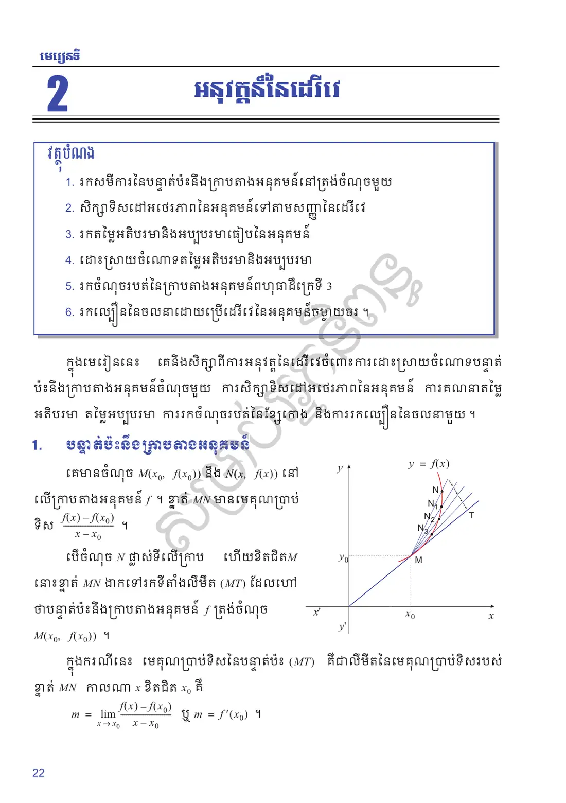
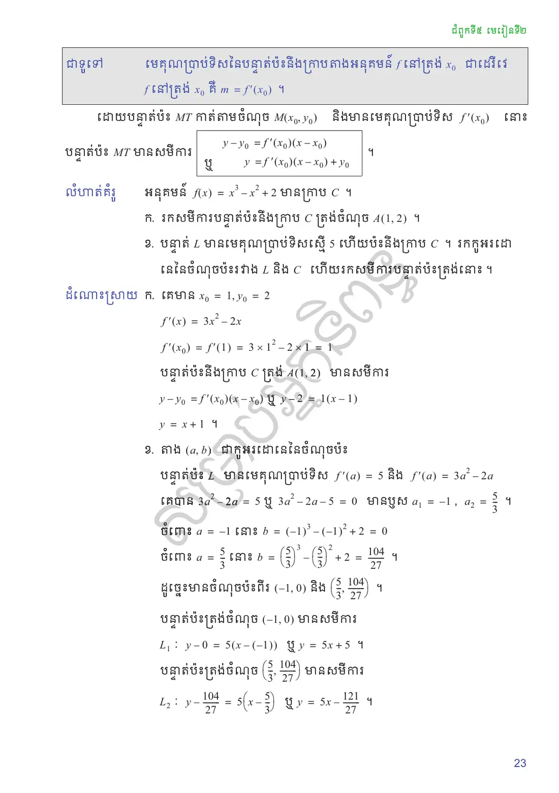
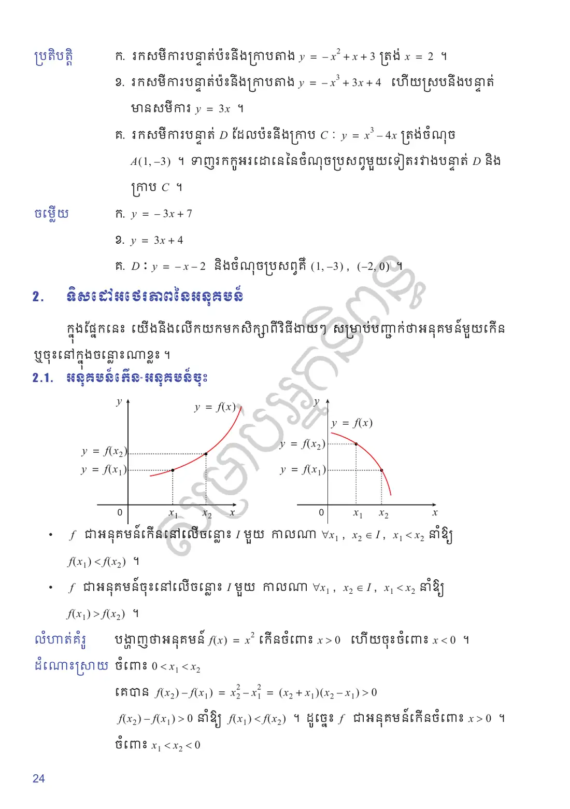
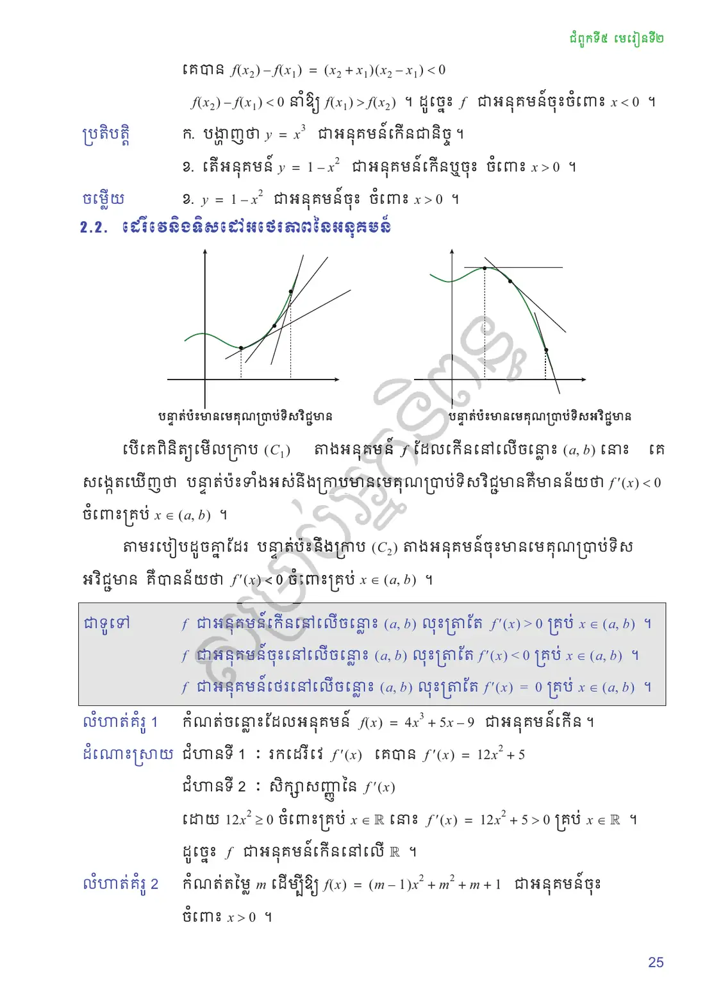
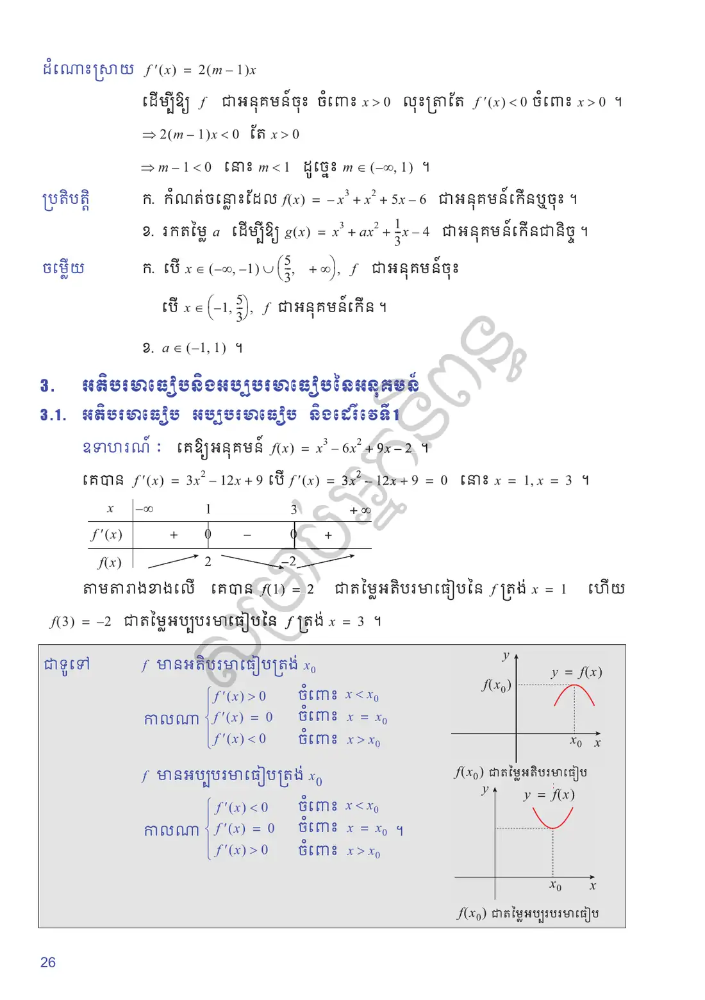
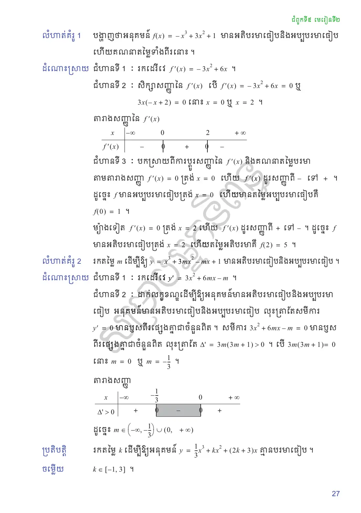
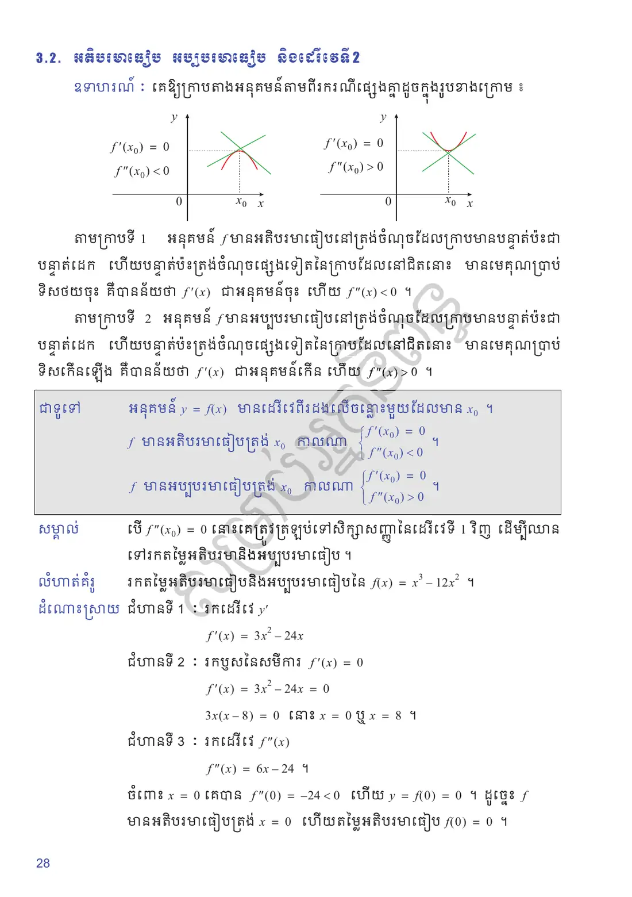
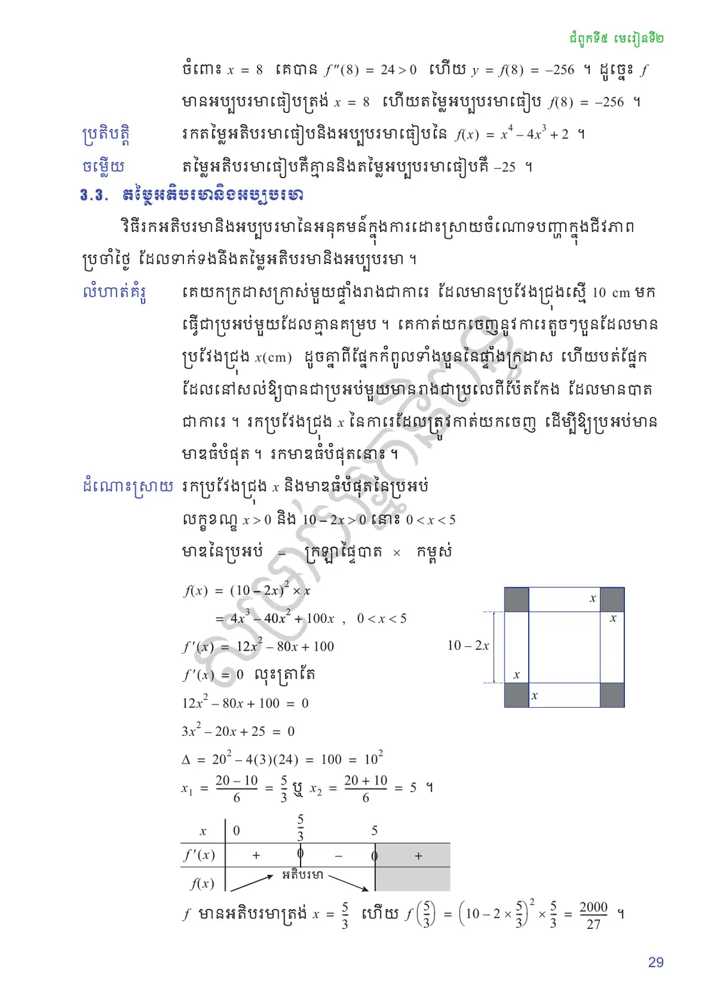
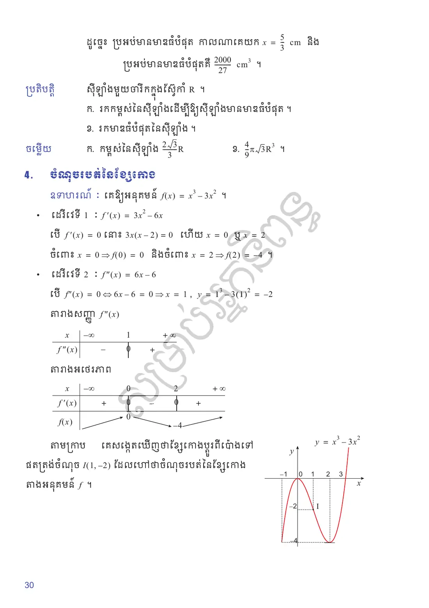
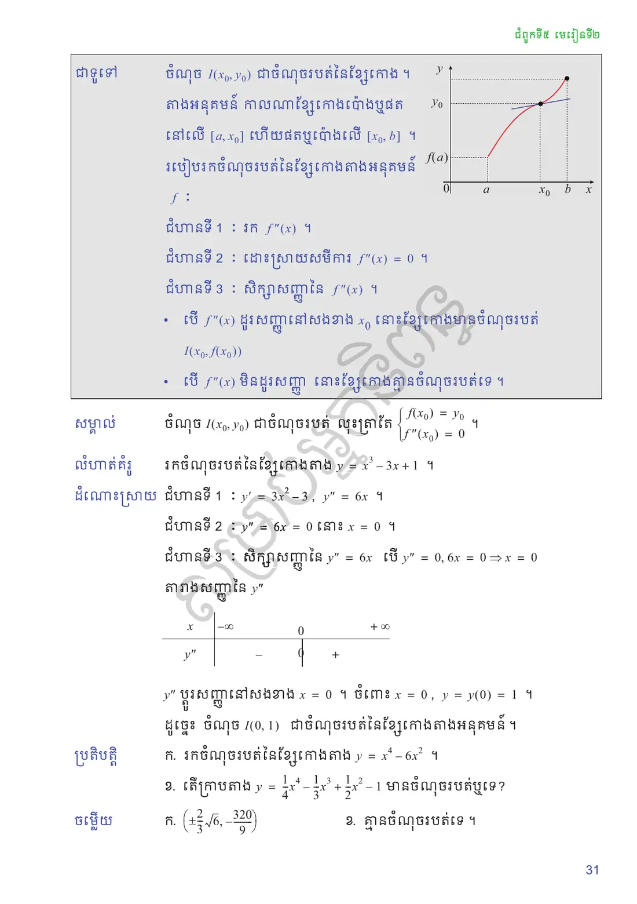
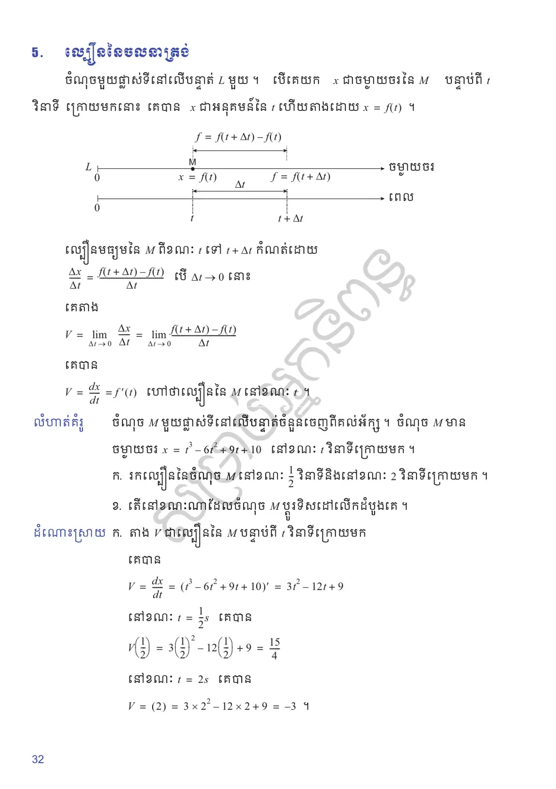
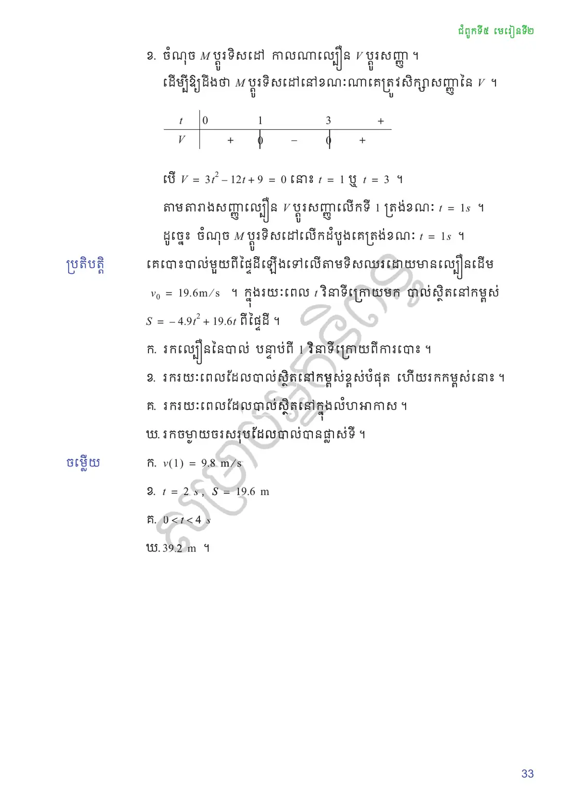
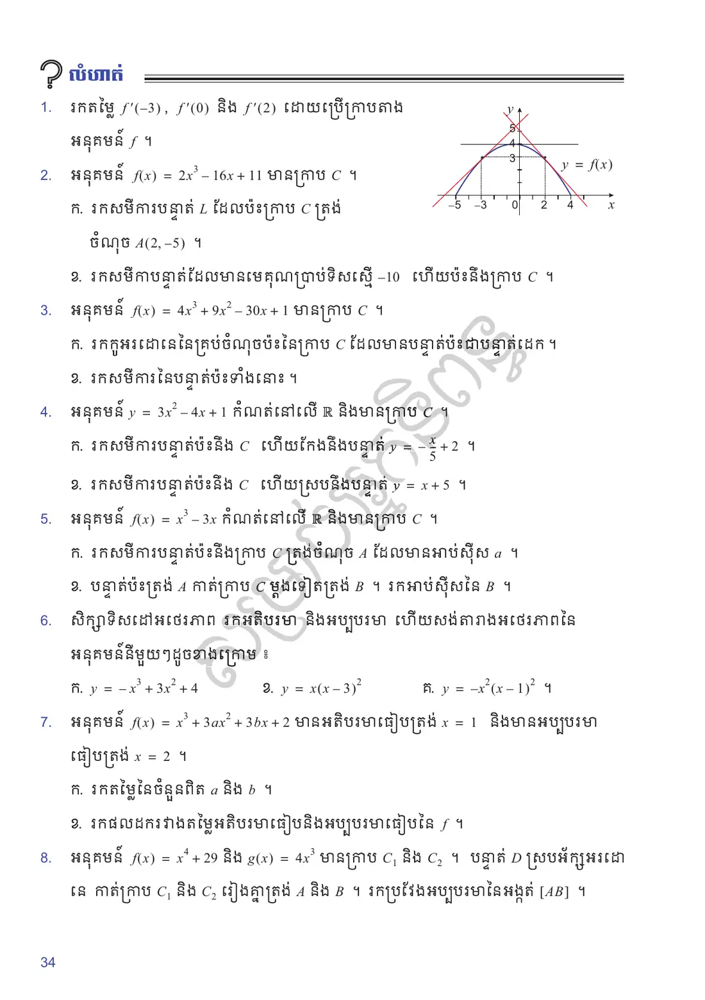
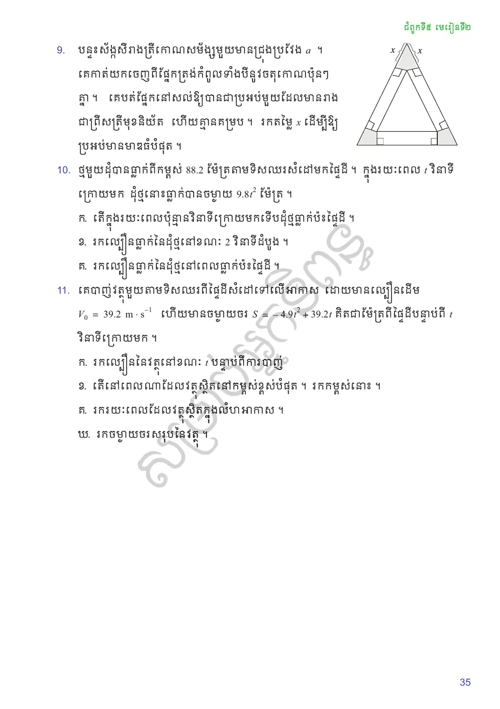
លំហាត់អនុវត្តន៍
រកតម្លៃ \(f'(-3)\), \(f'(0)\) និង \(f'(2)\) ដោយប្រើក្រាបតាងអនុគមន៍ \(f\) ។ (បន្ទាត់ប៉ះត្រង់ \(x = -3\) កាត់តាមចំណុច \((-5, 0)\) និងបន្ទាត់ប៉ះត្រង់ \(x = 2\) កាត់តាមចំណុច \((4, 0)\) ។)
![](data:image/svg+xml;charset=utf-8,%3C%3Fxml version=%221.0%22 encoding=%22UTF-8%22%3F%3E%3Csvg xmlns=%22http://www.w3.org/2000/svg%22 xmlns:xlink=%22http://www.w3.org/1999/xlink%22 width=%22188.79%22 height=%22118.17%22 viewBox=%220 0 188.79 118.17%22%3E%3Cdefs%3E%3Cg%3E%3Cg id=%22glyph-0-0%22%3E%3Cpath d=%22M 3.29 -2.98 C 3.35 -3.25 3.59 -4.15 4.28 -4.15 C 4.32 -4.15 4.56 -4.15 4.78 -4.03 C 4.5 -3.96 4.29 -3.73 4.29 -3.48 C 4.29 -3.32 4.40 -3.14 4.67 -3.14 C 4.89 -3.14 5.21 -3.32 5.21 -3.71 C 5.21 -4.23 4.62 -4.37 4.29 -4.37 C 3.71 -4.37 3.37 -3.84 3.25 -3.62 C 3 -4.26 2.46 -4.37 2.18 -4.37 C 1.15 -4.37 0.59 -3.09 0.59 -2.84 C 0.59 -2.75 0.68 -2.75 0.71 -2.75 C 0.79 -2.75 0.82 -2.76 0.84 -2.85 C 1.17 -3.90 1.82 -4.15 2.17 -4.15 C 2.35 -4.15 2.70 -4.06 2.70 -3.48 C 2.70 -3.18 2.53 -2.51 2.17 -1.14 C 2 -0.53 1.65 -0.10 1.21 -0.10 C 1.17 -0.10 0.93 -0.10 0.73 -0.23 C 0.98 -0.28 1.20 -0.5 1.20 -0.76 C 1.20 -1.03 0.98 -1.12 0.82 -1.12 C 0.53 -1.12 0.28 -0.85 0.28 -0.54 C 0.28 -0.09 0.78 0.10 1.21 0.10 C 1.87 0.10 2.21 -0.57 2.25 -0.64 C 2.37 -0.28 2.73 0.10 3.32 0.10 C 4.34 0.10 4.90 -1.17 4.90 -1.42 C 4.90 -1.51 4.81 -1.51 4.78 -1.51 C 4.70 -1.51 4.67 -1.46 4.65 -1.40 C 4.32 -0.34 3.65 -0.10 3.34 -0.10 C 2.95 -0.10 2.79 -0.42 2.79 -0.76 C 2.79 -0.98 2.85 -1.20 2.96 -1.62 Z M 3.29 -2.98 %22/%3E%3C/g%3E%3Cg id=%22glyph-0-1%22%3E%3Cpath d=%22M 4.81 -3.76 C 4.84 -3.90 4.84 -3.92 4.84 -4 C 4.84 -4.17 4.70 -4.26 4.56 -4.26 C 4.45 -4.26 4.29 -4.20 4.21 -4.06 C 4.18 -4 4.10 -3.70 4.07 -3.51 C 4 -3.26 3.93 -3 3.87 -2.73 L 3.43 -0.95 C 3.39 -0.79 2.96 -0.10 2.31 -0.10 C 1.81 -0.10 1.70 -0.54 1.70 -0.90 C 1.70 -1.35 1.87 -1.98 2.20 -2.84 C 2.35 -3.25 2.40 -3.35 2.40 -3.56 C 2.40 -4 2.09 -4.37 1.59 -4.37 C 0.65 -4.37 0.28 -2.93 0.28 -2.84 C 0.28 -2.75 0.39 -2.75 0.40 -2.75 C 0.5 -2.75 0.51 -2.76 0.56 -2.92 C 0.82 -3.85 1.21 -4.15 1.56 -4.15 C 1.64 -4.15 1.81 -4.15 1.81 -3.84 C 1.81 -3.59 1.71 -3.32 1.64 -3.14 C 1.25 -2.09 1.06 -1.53 1.06 -1.06 C 1.06 -0.18 1.68 0.10 2.28 0.10 C 2.65 0.10 3 -0.06 3.28 -0.34 C 3.14 0.17 3.03 0.65 2.62 1.18 C 2.37 1.51 2 1.81 1.54 1.81 C 1.40 1.81 0.95 1.78 0.79 1.39 C 0.95 1.39 1.07 1.39 1.21 1.28 C 1.31 1.18 1.42 1.06 1.42 0.87 C 1.42 0.56 1.14 0.53 1.04 0.53 C 0.82 0.53 0.5 0.68 0.5 1.17 C 0.5 1.65 0.93 2.03 1.54 2.03 C 2.56 2.03 3.57 1.12 3.85 0.01 Z M 4.81 -3.76 %22/%3E%3C/g%3E%3Cg id=%22glyph-0-2%22%3E%3Cpath d=%22M 3.62 -3.95 L 4.48 -3.95 C 4.67 -3.95 4.78 -3.95 4.78 -4.15 C 4.78 -4.26 4.67 -4.26 4.51 -4.26 L 3.68 -4.26 L 3.89 -5.39 C 3.93 -5.59 4.07 -6.29 4.14 -6.42 C 4.21 -6.60 4.39 -6.75 4.59 -6.75 C 4.64 -6.75 4.89 -6.75 5.07 -6.57 C 4.65 -6.53 4.54 -6.18 4.54 -6.04 C 4.54 -5.81 4.73 -5.70 4.92 -5.70 C 5.17 -5.70 5.45 -5.92 5.45 -6.29 C 5.45 -6.75 5 -6.96 4.59 -6.96 C 4.26 -6.96 3.64 -6.79 3.34 -5.81 C 3.28 -5.60 3.25 -5.51 3.01 -4.26 L 2.32 -4.26 C 2.14 -4.26 2.03 -4.26 2.03 -4.07 C 2.03 -3.95 2.12 -3.95 2.31 -3.95 L 2.96 -3.95 L 2.21 -0.04 C 2.04 0.90 1.87 1.81 1.35 1.81 C 1.32 1.81 1.07 1.81 0.89 1.62 C 1.34 1.60 1.43 1.25 1.43 1.09 C 1.43 0.87 1.25 0.75 1.06 0.75 C 0.81 0.75 0.53 0.96 0.53 1.34 C 0.53 1.79 0.95 2.03 1.35 2.03 C 1.90 2.03 2.29 1.43 2.48 1.06 C 2.79 0.43 3.03 -0.75 3.03 -0.82 Z M 3.62 -3.95 %22/%3E%3C/g%3E%3Cg id=%22glyph-1-0%22%3E%3Cpath d=%22M 6.51 -2.28 C 6.68 -2.28 6.85 -2.28 6.85 -2.46 C 6.85 -2.67 6.68 -2.67 6.51 -2.67 L 1.17 -2.67 C 1 -2.67 0.82 -2.67 0.82 -2.46 C 0.82 -2.28 1 -2.28 1.17 -2.28 Z M 6.51 -2.28 %22/%3E%3C/g%3E%3Cg id=%22glyph-2-0%22%3E%3Cpath d=%22M 4.43 -1.98 C 4.43 -3.17 3.62 -4.15 2.56 -4.15 C 2.09 -4.15 1.65 -4 1.31 -3.65 L 1.31 -5.57 C 1.5 -5.51 1.82 -5.45 2.14 -5.45 C 3.35 -5.45 4.06 -6.34 4.06 -6.48 C 4.06 -6.53 4.03 -6.59 3.95 -6.59 C 3.95 -6.59 3.92 -6.59 3.87 -6.56 C 3.67 -6.46 3.18 -6.26 2.53 -6.26 C 2.14 -6.26 1.68 -6.34 1.21 -6.54 C 1.14 -6.57 1.12 -6.57 1.09 -6.57 C 1 -6.57 1 -6.5 1 -6.34 L 1 -3.40 C 1 -3.23 1 -3.15 1.14 -3.15 C 1.20 -3.15 1.21 -3.18 1.26 -3.25 C 1.37 -3.40 1.73 -3.93 2.54 -3.93 C 3.06 -3.93 3.29 -3.48 3.37 -3.29 C 3.54 -2.93 3.56 -2.54 3.56 -2.06 C 3.56 -1.71 3.56 -1.12 3.32 -0.70 C 3.07 -0.31 2.71 -0.06 2.26 -0.06 C 1.54 -0.06 0.98 -0.57 0.81 -1.17 C 0.84 -1.15 0.87 -1.14 0.98 -1.14 C 1.31 -1.14 1.46 -1.39 1.46 -1.62 C 1.46 -1.87 1.31 -2.10 0.98 -2.10 C 0.84 -2.10 0.5 -2.04 0.5 -1.59 C 0.5 -0.73 1.17 0.21 2.28 0.21 C 3.43 0.21 4.43 -0.73 4.43 -1.98 Z M 4.43 -1.98 %22/%3E%3C/g%3E%3Cg id=%22glyph-2-1%22%3E%3Cpath d=%22M 2.87 -3.48 C 3.67 -3.75 4.25 -4.43 4.25 -5.21 C 4.25 -6.03 3.37 -6.59 2.43 -6.59 C 1.43 -6.59 0.68 -6 0.68 -5.23 C 0.68 -4.92 0.90 -4.73 1.18 -4.73 C 1.5 -4.73 1.68 -4.93 1.68 -5.23 C 1.68 -5.73 1.21 -5.73 1.07 -5.73 C 1.39 -6.21 2.03 -6.34 2.39 -6.34 C 2.79 -6.34 3.34 -6.12 3.34 -5.23 C 3.34 -5.10 3.32 -4.54 3.06 -4.10 C 2.76 -3.62 2.43 -3.59 2.18 -3.59 C 2.10 -3.57 1.87 -3.56 1.79 -3.56 C 1.71 -3.54 1.65 -3.54 1.65 -3.43 C 1.65 -3.32 1.71 -3.32 1.89 -3.32 L 2.32 -3.32 C 3.14 -3.32 3.5 -2.65 3.5 -1.68 C 3.5 -0.34 2.81 -0.06 2.39 -0.06 C 1.95 -0.06 1.21 -0.23 0.87 -0.81 C 1.21 -0.76 1.51 -0.98 1.51 -1.35 C 1.51 -1.71 1.25 -1.90 0.96 -1.90 C 0.73 -1.90 0.42 -1.76 0.42 -1.32 C 0.42 -0.43 1.32 0.21 2.40 0.21 C 3.62 0.21 4.51 -0.68 4.51 -1.68 C 4.51 -2.5 3.89 -3.28 2.87 -3.48 Z M 2.87 -3.48 %22/%3E%3C/g%3E%3Cg id=%22glyph-2-2%22%3E%3Cpath d=%22M 1.25 -0.76 L 2.29 -1.78 C 3.84 -3.14 4.43 -3.67 4.43 -4.67 C 4.43 -5.79 3.54 -6.59 2.34 -6.59 C 1.21 -6.59 0.5 -5.67 0.5 -4.79 C 0.5 -4.25 0.98 -4.25 1.01 -4.25 C 1.18 -4.25 1.53 -4.35 1.53 -4.76 C 1.53 -5.03 1.35 -5.28 1.01 -5.28 C 0.93 -5.28 0.90 -5.28 0.87 -5.26 C 1.10 -5.92 1.64 -6.28 2.21 -6.28 C 3.10 -6.28 3.54 -5.48 3.54 -4.67 C 3.54 -3.87 3.04 -3.09 2.5 -2.48 L 0.60 -0.35 C 0.5 -0.25 0.5 -0.23 0.5 0 L 4.15 0 L 4.43 -1.71 L 4.18 -1.71 C 4.14 -1.42 4.07 -0.98 3.96 -0.84 C 3.90 -0.76 3.25 -0.76 3.03 -0.76 Z M 1.25 -0.76 %22/%3E%3C/g%3E%3Cg id=%22glyph-2-3%22%3E%3Cpath d=%22M 2.90 -1.62 L 2.90 -0.76 C 2.90 -0.42 2.89 -0.31 2.15 -0.31 L 1.95 -0.31 L 1.95 0 C 2.35 -0.03 2.87 -0.03 3.28 -0.03 C 3.70 -0.03 4.21 -0.03 4.62 0 L 4.62 -0.31 L 4.42 -0.31 C 3.68 -0.31 3.67 -0.42 3.67 -0.76 L 3.67 -1.62 L 4.65 -1.62 L 4.65 -1.93 L 3.67 -1.93 L 3.67 -6.43 C 3.67 -6.64 3.67 -6.70 3.51 -6.70 C 3.42 -6.70 3.39 -6.70 3.31 -6.57 L 0.28 -1.93 L 0.28 -1.62 Z M 2.96 -1.93 L 0.54 -1.93 L 2.96 -5.62 Z M 2.96 -1.93 %22/%3E%3C/g%3E%3Cg id=%22glyph-2-4%22%3E%3Cpath d=%22M 6.79 -3.23 C 6.93 -3.23 7.12 -3.23 7.12 -3.43 C 7.12 -3.62 6.93 -3.62 6.81 -3.62 L 0.87 -3.62 C 0.73 -3.62 0.54 -3.62 0.54 -3.43 C 0.54 -3.23 0.73 -3.23 0.89 -3.23 Z M 6.81 -1.31 C 6.93 -1.31 7.12 -1.31 7.12 -1.51 C 7.12 -1.71 6.93 -1.71 6.79 -1.71 L 0.89 -1.71 C 0.73 -1.71 0.54 -1.71 0.54 -1.51 C 0.54 -1.31 0.73 -1.31 0.87 -1.31 Z M 6.81 -1.31 %22/%3E%3C/g%3E%3Cg id=%22glyph-2-5%22%3E%3Cpath d=%22M 3.28 2.37 C 3.28 2.34 3.28 2.32 3.10 2.15 C 1.87 0.90 1.54 -0.95 1.54 -2.46 C 1.54 -4.18 1.92 -5.92 3.14 -7.15 C 3.28 -7.26 3.28 -7.29 3.28 -7.31 C 3.28 -7.39 3.23 -7.42 3.17 -7.42 C 3.07 -7.42 2.18 -6.75 1.60 -5.48 C 1.09 -4.40 0.98 -3.29 0.98 -2.46 C 0.98 -1.70 1.09 -0.5 1.62 0.60 C 2.21 1.82 3.07 2.46 3.17 2.46 C 3.23 2.46 3.28 2.43 3.28 2.37 Z M 3.28 2.37 %22/%3E%3C/g%3E%3Cg id=%22glyph-2-6%22%3E%3Cpath d=%22M 2.85 -2.46 C 2.85 -3.25 2.75 -4.43 2.20 -5.56 C 1.60 -6.78 0.76 -7.42 0.65 -7.42 C 0.60 -7.42 0.56 -7.37 0.56 -7.31 C 0.56 -7.29 0.56 -7.26 0.75 -7.09 C 1.71 -6.10 2.28 -4.54 2.28 -2.46 C 2.28 -0.78 1.92 0.95 0.68 2.20 C 0.56 2.32 0.56 2.34 0.56 2.37 C 0.56 2.43 0.60 2.46 0.65 2.46 C 0.76 2.46 1.65 1.79 2.23 0.54 C 2.73 -0.54 2.85 -1.64 2.85 -2.46 Z M 2.85 -2.46 %22/%3E%3C/g%3E%3C/g%3E%3C/defs%3E%3Cpath fill=%22none%22 stroke-width=%220.39%22 stroke-linecap=%22butt%22 stroke-linejoin=%22miter%22 stroke=%22rgb(0%25, 0%25, 0%25)%22 stroke-opacity=%221%22 stroke-miterlimit=%2210%22 d=%22M -85.04 -0.00 L 84.64 -0.00 %22 transform=%22matrix(0.99, 0, 0, -0.99, 88.16, 100.38)%22/%3E%3Cpath fill=%22none%22 stroke-width=%220.39%22 stroke-linecap=%22round%22 stroke-linejoin=%22round%22 stroke=%22rgb(0%25, 0%25, 0%25)%22 stroke-opacity=%221%22 stroke-miterlimit=%2210%22 d=%22M -2.07 2.38 C -1.69 0.95 -0.85 0.27 -0.00 -0.00 C -0.85 -0.27 -1.69 -0.95 -2.07 -2.38 %22 transform=%22matrix(0.99, 0, 0, -0.99, 172.41, 100.38)%22/%3E%3Cg fill=%22rgb(0%25, 0%25, 0%25)%22 fill-opacity=%221%22%3E%3Cuse xlink:href=%22%23glyph-0-0%22 x=%22176.10%22 y=%22102.51%22/%3E%3C/g%3E%3Cpath fill=%22none%22 stroke-width=%220.39%22 stroke-linecap=%22butt%22 stroke-linejoin=%22miter%22 stroke=%22rgb(0%25, 0%25, 0%25)%22 stroke-opacity=%221%22 stroke-miterlimit=%2210%22 d=%22M -0.00 -7.08 L -0.00 84.64 %22 transform=%22matrix(0.99, 0, 0, -0.99, 88.16, 100.38)%22/%3E%3Cpath fill=%22none%22 stroke-width=%220.39%22 stroke-linecap=%22round%22 stroke-linejoin=%22round%22 stroke=%22rgb(0%25, 0%25, 0%25)%22 stroke-opacity=%221%22 stroke-miterlimit=%2210%22 d=%22M -2.07 2.38 C -1.69 0.95 -0.85 0.27 -0.00 0.00 C -0.85 -0.27 -1.69 -0.95 -2.07 -2.38 %22 transform=%22matrix(0, -0.99, -0.99, 0, 88.16, 16.13)%22/%3E%3Cg fill=%22rgb(0%25, 0%25, 0%25)%22 fill-opacity=%221%22%3E%3Cuse xlink:href=%22%23glyph-0-1%22 x=%2285.56%22 y=%2210.51%22/%3E%3C/g%3E%3Cpath fill=%22none%22 stroke-width=%220.79%22 stroke-linecap=%22butt%22 stroke-linejoin=%22miter%22 stroke=%22rgb(0%25, 0%25, 100%25)%22 stroke-opacity=%221%22 stroke-miterlimit=%2210%22 d=%22M -65.19 -0.00 C -54.65 15.63 -53.06 26.88 -42.52 42.52 C -32.71 57.06 -17.53 56.69 -0.00 56.69 C 12.40 56.69 21.40 52.80 28.34 42.52 C 38.89 26.88 40.47 15.63 51.02 -0.00 %22 transform=%22matrix(0.99, 0, 0, -0.99, 88.16, 100.38)%22/%3E%3Cpath fill=%22none%22 stroke-width=%220.39%22 stroke-linecap=%22butt%22 stroke-linejoin=%22miter%22 stroke=%22rgb(100%25, 0%25, 0%25)%22 stroke-opacity=%221%22 stroke-miterlimit=%2210%22 d=%22M -77.95 -10.63 L -21.25 74.41 %22 transform=%22matrix(0.99, 0, 0, -0.99, 88.16, 100.38)%22/%3E%3Cpath fill=%22none%22 stroke-width=%220.39%22 stroke-linecap=%22butt%22 stroke-linejoin=%22miter%22 stroke=%22rgb(100%25, 0%25, 0%25)%22 stroke-opacity=%221%22 stroke-miterlimit=%2210%22 d=%22M 7.08 74.41 L 63.77 -10.63 %22 transform=%22matrix(0.99, 0, 0, -0.99, 88.16, 100.38)%22/%3E%3Cpath fill=%22none%22 stroke-width=%220.39%22 stroke-linecap=%22butt%22 stroke-linejoin=%22miter%22 stroke=%22rgb(100%25, 0%25, 0%25)%22 stroke-opacity=%221%22 stroke-miterlimit=%2210%22 d=%22M -28.34 56.69 L 35.43 56.69 %22 transform=%22matrix(0.99, 0, 0, -0.99, 88.16, 100.38)%22/%3E%3Cpath fill-rule=%22nonzero%22 fill=%22rgb(0%25, 0%25, 0%25)%22 fill-opacity=%221%22 d=%22M 47.42 58.16 C 47.42 57.33 46.76 56.67 45.94 56.67 C 45.12 56.67 44.45 57.33 44.45 58.16 C 44.45 58.98 45.12 59.64 45.94 59.64 C 46.76 59.64 47.42 58.98 47.42 58.16 Z M 47.42 58.16 %22/%3E%3Cpath fill-rule=%22nonzero%22 fill=%22rgb(0%25, 0%25, 0%25)%22 fill-opacity=%221%22 d=%22M 117.80 58.16 C 117.80 57.33 117.13 56.67 116.31 56.67 C 115.49 56.67 114.83 57.33 114.83 58.16 C 114.83 58.98 115.49 59.64 116.31 59.64 C 117.13 59.64 117.80 58.98 117.80 58.16 Z M 117.80 58.16 %22/%3E%3Cpath fill-rule=%22nonzero%22 fill=%22rgb(0%25, 0%25, 0%25)%22 fill-opacity=%221%22 d=%22M 89.64 44.08 C 89.64 43.26 88.98 42.60 88.16 42.60 C 87.34 42.60 86.68 43.26 86.68 44.08 C 86.68 44.90 87.34 45.57 88.16 45.57 C 88.98 45.57 89.64 44.90 89.64 44.08 Z M 89.64 44.08 %22/%3E%3Cpath fill=%22none%22 stroke-width=%220.39%22 stroke-linecap=%22butt%22 stroke-linejoin=%22miter%22 stroke=%22rgb(0%25, 0%25, 0%25)%22 stroke-opacity=%221%22 stroke-dasharray=%220.39 1.99%22 stroke-miterlimit=%2210%22 d=%22M -42.52 -0.00 L -42.52 42.52 L -0.00 42.52 %22 transform=%22matrix(0.99, 0, 0, -0.99, 88.16, 100.38)%22/%3E%3Cpath fill=%22none%22 stroke-width=%220.39%22 stroke-linecap=%22butt%22 stroke-linejoin=%22miter%22 stroke=%22rgb(0%25, 0%25, 0%25)%22 stroke-opacity=%221%22 stroke-dasharray=%220.39 1.99%22 stroke-miterlimit=%2210%22 d=%22M 28.34 -0.00 L 28.34 42.52 %22 transform=%22matrix(0.99, 0, 0, -0.99, 88.16, 100.38)%22/%3E%3Cg fill=%22rgb(0%25, 0%25, 0%25)%22 fill-opacity=%221%22%3E%3Cuse xlink:href=%22%23glyph-1-0%22 x=%2211.47%22 y=%22110.25%22/%3E%3C/g%3E%3Cg fill=%22rgb(0%25, 0%25, 0%25)%22 fill-opacity=%221%22%3E%3Cuse xlink:href=%22%23glyph-2-0%22 x=%2219.16%22 y=%22110.25%22/%3E%3C/g%3E%3Cg fill=%22rgb(0%25, 0%25, 0%25)%22 fill-opacity=%221%22%3E%3Cuse xlink:href=%22%23glyph-1-0%22 x=%2239.62%22 y=%22110.25%22/%3E%3C/g%3E%3Cg fill=%22rgb(0%25, 0%25, 0%25)%22 fill-opacity=%221%22%3E%3Cuse xlink:href=%22%23glyph-2-1%22 x=%2247.31%22 y=%22110.25%22/%3E%3C/g%3E%3Cg fill=%22rgb(0%25, 0%25, 0%25)%22 fill-opacity=%221%22%3E%3Cuse xlink:href=%22%23glyph-2-2%22 x=%22113.84%22 y=%22110.25%22/%3E%3C/g%3E%3Cg fill=%22rgb(0%25, 0%25, 0%25)%22 fill-opacity=%221%22%3E%3Cuse xlink:href=%22%23glyph-2-3%22 x=%22141.99%22 y=%22110.25%22/%3E%3C/g%3E%3Cg fill=%22rgb(0%25, 0%25, 0%25)%22 fill-opacity=%221%22%3E%3Cuse xlink:href=%22%23glyph-2-1%22 x=%2279.72%22 y=%2261.34%22/%3E%3C/g%3E%3Cg fill=%22rgb(0%25, 0%25, 0%25)%22 fill-opacity=%221%22%3E%3Cuse xlink:href=%22%23glyph-2-3%22 x=%2279.72%22 y=%2240.59%22/%3E%3C/g%3E%3Cg fill=%22rgb(0%25, 0%25, 100%25)%22 fill-opacity=%221%22%3E%3Cuse xlink:href=%22%23glyph-0-1%22 x=%22132.67%22 y=%2260.63%22/%3E%3C/g%3E%3Cg fill=%22rgb(0%25, 0%25, 100%25)%22 fill-opacity=%221%22%3E%3Cuse xlink:href=%22%23glyph-2-4%22 x=%22140.62%22 y=%2260.63%22/%3E%3C/g%3E%3Cg fill=%22rgb(0%25, 0%25, 100%25)%22 fill-opacity=%221%22%3E%3Cuse xlink:href=%22%23glyph-0-2%22 x=%22151.07%22 y=%2260.63%22/%3E%3C/g%3E%3Cg fill=%22rgb(0%25, 0%25, 100%25)%22 fill-opacity=%221%22%3E%3Cuse xlink:href=%22%23glyph-2-5%22 x=%22156.97%22 y=%2260.63%22/%3E%3C/g%3E%3Cg fill=%22rgb(0%25, 0%25, 100%25)%22 fill-opacity=%221%22%3E%3Cuse xlink:href=%22%23glyph-0-0%22 x=%22160.82%22 y=%2260.63%22/%3E%3C/g%3E%3Cg fill=%22rgb(0%25, 0%25, 100%25)%22 fill-opacity=%221%22%3E%3Cuse xlink:href=%22%23glyph-2-6%22 x=%22166.48%22 y=%2260.63%22/%3E%3C/g%3E%3C/svg%3E%0A)
មើលដំណោះស្រាយ
\(f'(-3) = \dfrac{3 - 0}{-3 - (-5)} = \dfrac{3}{2}\), \(f'(0) = 0\) (បន្ទាត់ប៉ះដេក), \(f'(2) = \dfrac{0 - 3}{4 - 2} = -\dfrac{3}{2}\) ។
អនុគមន៍ \(f(x) = 2x^3 - 16x + 11\) មានក្រាប \(C\) ។
រកសមីការបន្ទាត់ \(L\) ដែលប៉ះក្រាប \(C\) ត្រង់ចំណុច \(A(2, -5)\) ។
រកសមីការបន្ទាត់ដែលមានមេគុណប្រាប់ទិសស្មើ \(-10\) ហើយប៉ះនឹងក្រាប \(C\) ។
មើលដំណោះស្រាយ
ក. \(L : y = 8x - 21\) ខ. \(y = -10x + 7\) (ប៉ះត្រង់ \((1, -3)\)) និង \(y = -10x + 15\) (ប៉ះត្រង់ \((-1, 25)\)) ។
អនុគមន៍ \(f(x) = 4x^3 + 9x^2 - 30x + 1\) មានក្រាប \(C\) ។
រកកូអរដោនេនៃគ្រប់ចំណុចប៉ះនៃក្រាប \(C\) ដែលមានបន្ទាត់ប៉ះជាបន្ទាត់ដេក ។
រកសមីការនៃបន្ទាត់ប៉ះទាំងនោះ ។
មើលដំណោះស្រាយ
ក. \(f'(x) = 6(2x + 5)(x - 1) = 0\) ៖ ចំណុចប៉ះ \((1, -16)\) និង \(\left(-\dfrac{5}{2}, \dfrac{279}{4}\right)\) ខ. \(y = -16\) និង \(y = \dfrac{279}{4}\) ។
អនុគមន៍ \(y = 3x^2 - 4x + 1\) កំណត់នៅលើ \(\mathbb{R}\) និងមានក្រាប \(C\) ។
រកសមីការបន្ទាត់ប៉ះនឹង \(C\) ហើយកែងនឹងបន្ទាត់ \(y = -\dfrac{x}{5} + 2\) ។
រកសមីការបន្ទាត់ប៉ះនឹង \(C\) ហើយស្របនឹងបន្ទាត់ \(y = x + 5\) ។
មើលដំណោះស្រាយ
ក. \(y = 5x - \dfrac{23}{4}\) ខ. \(y = x - \dfrac{13}{12}\) ។
អនុគមន៍ \(f(x) = x^3 - 3x\) កំណត់នៅលើ \(\mathbb{R}\) និងមានក្រាប \(C\) ។
រកសមីការបន្ទាត់ប៉ះនឹងក្រាប \(C\) ត្រង់ចំណុច \(A\) ដែលមានអាប់ស៊ីស \(a\) ។
បន្ទាត់ប៉ះត្រង់ \(A\) កាត់ក្រាប \(C\) ម្ដងទៀតត្រង់ \(B\) ។ រកអាប់ស៊ីសនៃ \(B\) ។
មើលដំណោះស្រាយ
ក. \(y = (3a^2 - 3)x - 2a^3\) ខ. \(x^3 - 3x - (3a^2 - 3)x + 2a^3 = (x - a)^2(x + 2a) = 0\) ដូច្នេះអាប់ស៊ីសនៃ \(B\) គឺ \(-2a\) \((a \ne 0)\) ។
សិក្សាទិសដៅអថេរភាព រកអតិបរមា និងអប្បបរមា ហើយសង់តារាងអថេរភាពនៃអនុគមន៍នីមួយៗដូចខាងក្រោម ៖
\(y = -x^3 + 3x^2 + 4\)
\(y = x(x - 3)^2\)
\(y = -x^2(x - 1)^2\)
មើលដំណោះស្រាយ
ក. ចុះលើ \((-\infty, 0)\) និង \((2, +\infty)\), កើនលើ \((0, 2)\) ៖ អប្បបរមាធៀប \(y(0) = 4\), អតិបរមាធៀប \(y(2) = 8\) ។
ខ. \(y' = 3(x - 1)(x - 3)\) ៖ កើនលើ \((-\infty, 1)\) និង \((3, +\infty)\), ចុះលើ \((1, 3)\) ៖ អតិបរមាធៀប \(y(1) = 4\), អប្បបរមាធៀប \(y(3) = 0\) ។
គ. \(y' = -2x(x - 1)(2x - 1)\) ៖ កើនលើ \((-\infty, 0)\) និង \(\left(\dfrac{1}{2}, 1\right)\), ចុះលើ \(\left(0, \dfrac{1}{2}\right)\) និង \((1, +\infty)\) ៖ អតិបរមាធៀប \(y(0) = y(1) = 0\), អប្បបរមាធៀប \(y\left(\dfrac{1}{2}\right) = -\dfrac{1}{16}\) ។
អនុគមន៍ \(f(x) = x^3 + 3ax^2 + 3bx + 2\) មានអតិបរមាធៀបត្រង់ \(x = 1\) និងមានអប្បបរមាធៀបត្រង់ \(x = 2\) ។
រកតម្លៃនៃចំនួនពិត \(a\) និង \(b\) ។
រកផលដករវាងតម្លៃអតិបរមាធៀបនិងអប្បបរមាធៀបនៃ \(f\) ។
មើលដំណោះស្រាយ
ក. \(a = -\dfrac{3}{2}\), \(b = 2\) ខ. \(f(1) - f(2) = \dfrac{9}{2} - 4 = \dfrac{1}{2}\) ។
អនុគមន៍ \(f(x) = x^4 + 29\) និង \(g(x) = 4x^3\) មានក្រាប \(C_1\) និង \(C_2\) ។ បន្ទាត់ \(D\) ស្របអ័ក្សអរដោនេ កាត់ក្រាប \(C_1\) និង \(C_2\) រៀងគ្នាត្រង់ \(A\) និង \(B\) ។ រកប្រវែងអប្បបរមានៃអង្កត់ \([AB]\) ។
មើលដំណោះស្រាយ
\(AB = x^4 - 4x^3 + 29\) មានអប្បបរមាត្រង់ \(x = 3\) ។ ប្រវែងអប្បបរមា \(AB = 2\) ។
បន្ទះស័ង្កសីរាងត្រីកោណសម័ង្សមួយមានជ្រុងប្រវែង \(a\) ។ គេកាត់យកចេញពីផ្នែកត្រង់កំពូលទាំងបីនូវចតុកោណប៉ុនៗគ្នា (ជ្រុងប្រវែង \(x\) តាមជ្រុងត្រីកោណ និងមានមុំកែងពីរ) ។ គេបត់ផ្នែកនៅសល់ឱ្យបានជាប្រអប់មួយដែលមានរាងជាព្រីសត្រីមុខនិយ័ត ហើយគ្មានគម្រប ។ រកតម្លៃ \(x\) ដើម្បីឱ្យប្រអប់មានមាឌធំបំផុត ។
![](data:image/svg+xml;charset=utf-8,%3C%3Fxml version=%221.0%22 encoding=%22UTF-8%22%3F%3E%3Csvg xmlns=%22http://www.w3.org/2000/svg%22 xmlns:xlink=%22http://www.w3.org/1999/xlink%22 width=%22108.82%22 height=%2297.44%22 viewBox=%220 0 108.82 97.44%22%3E%3Cdefs%3E%3Cg%3E%3Cg id=%22glyph-0-0%22%3E%3Cpath d=%22M 3.31 -2.98 C 3.37 -3.25 3.59 -4.15 4.29 -4.15 C 4.34 -4.15 4.57 -4.15 4.78 -4.03 C 4.5 -3.98 4.31 -3.73 4.31 -3.5 C 4.31 -3.34 4.42 -3.15 4.68 -3.15 C 4.90 -3.15 5.21 -3.32 5.21 -3.71 C 5.21 -4.23 4.64 -4.37 4.29 -4.37 C 3.71 -4.37 3.37 -3.85 3.26 -3.62 C 3.01 -4.28 2.48 -4.37 2.18 -4.37 C 1.15 -4.37 0.59 -3.09 0.59 -2.85 C 0.59 -2.75 0.68 -2.75 0.71 -2.75 C 0.79 -2.75 0.82 -2.78 0.84 -2.85 C 1.17 -3.90 1.82 -4.15 2.17 -4.15 C 2.35 -4.15 2.70 -4.07 2.70 -3.5 C 2.70 -3.18 2.53 -2.53 2.17 -1.14 C 2.01 -0.53 1.67 -0.10 1.23 -0.10 C 1.17 -0.10 0.93 -0.10 0.73 -0.23 C 0.98 -0.28 1.20 -0.5 1.20 -0.76 C 1.20 -1.04 0.98 -1.12 0.82 -1.12 C 0.53 -1.12 0.28 -0.85 0.28 -0.54 C 0.28 -0.09 0.78 0.10 1.21 0.10 C 1.87 0.10 2.23 -0.57 2.26 -0.64 C 2.37 -0.28 2.73 0.10 3.32 0.10 C 4.34 0.10 4.90 -1.17 4.90 -1.42 C 4.90 -1.51 4.82 -1.51 4.79 -1.51 C 4.70 -1.51 4.68 -1.46 4.67 -1.40 C 4.34 -0.34 3.67 -0.10 3.34 -0.10 C 2.96 -0.10 2.79 -0.42 2.79 -0.76 C 2.79 -0.98 2.85 -1.20 2.96 -1.64 Z M 3.31 -2.98 %22/%3E%3C/g%3E%3C/g%3E%3CclipPath id=%22clip-0%22%3E%3Cpath clip-rule=%22nonzero%22 d=%22M 0.22 0 L 108.41 0 L 108.41 96.88 L 0.22 96.88 Z M 0.22 0 %22/%3E%3C/clipPath%3E%3C/defs%3E%3Cg clip-path=%22url(%23clip-0)%22%3E%3Cpath fill=%22none%22 stroke-width=%220.79%22 stroke-linecap=%22butt%22 stroke-linejoin=%22miter%22 stroke=%22rgb(0%25, 0%25, 0%25)%22 stroke-opacity=%221%22 stroke-miterlimit=%2210%22 d=%22M 0.00 -0.00 L 102.04 -0.00 L 51.02 88.37 Z M 0.00 -0.00 %22 transform=%22matrix(0.99, 0, 0, -0.99, 3.58, 93.51)%22/%3E%3C/g%3E%3Cpath fill=%22none%22 stroke-width=%220.39%22 stroke-linecap=%22butt%22 stroke-linejoin=%22miter%22 stroke=%22rgb(0%25, 0%25, 0%25)%22 stroke-opacity=%221%22 stroke-miterlimit=%2210%22 d=%22M 17.67 10.20 L 84.37 10.20 L 51.02 67.96 Z M 17.67 10.20 %22 transform=%22matrix(0.99, 0, 0, -0.99, 3.58, 93.51)%22/%3E%3Cpath fill-rule=%22nonzero%22 fill=%22rgb(96.99%25, 96.99%25, 96.99%25)%22 fill-opacity=%221%22 d=%22M 3.58 93.51 L 21.16 93.51 L 21.16 83.36 L 12.38 78.29 Z M 3.58 93.51 %22/%3E%3Cpath fill-rule=%22nonzero%22 fill=%22rgb(96.99%25, 96.99%25, 96.99%25)%22 fill-opacity=%221%22 d=%22M 105.05 93.51 L 87.48 93.51 L 87.48 83.36 L 96.26 78.29 Z M 105.05 93.51 %22/%3E%3Cpath fill-rule=%22nonzero%22 fill=%22rgb(96.99%25, 96.99%25, 96.99%25)%22 fill-opacity=%221%22 d=%22M 54.32 5.64 L 45.52 20.86 L 54.32 25.94 L 63.11 20.86 Z M 54.32 5.64 %22/%3E%3Cg fill=%22rgb(0%25, 0%25, 0%25)%22 fill-opacity=%221%22%3E%3Cuse xlink:href=%22%23glyph-0-0%22 x=%2240.08%22 y=%2210.53%22/%3E%3C/g%3E%3Cg fill=%22rgb(0%25, 0%25, 0%25)%22 fill-opacity=%221%22%3E%3Cuse xlink:href=%22%23glyph-0-0%22 x=%2262.89%22 y=%2210.53%22/%3E%3C/g%3E%3C/svg%3E%0A)
មើលដំណោះស្រាយ
កម្ពស់ប្រអប់ \(h = \dfrac{x}{\sqrt{3}}\) និងជ្រុងបាត \(a - 2x\) ។ មាឌ \(V = \dfrac{\sqrt{3}}{4}(a - 2x)^2\cdot\dfrac{x}{\sqrt{3}} = \dfrac{1}{4}x(a - 2x)^2\), \(0 < x < \dfrac{a}{2}\) ។ \(V' = \dfrac{1}{4}(a - 2x)(a - 6x) = 0\) នាំឱ្យ \(x = \dfrac{a}{6}\) ។ មាឌធំបំផុត \(V = \dfrac{a^3}{54}\) ។
ថ្មមួយដុំបានធ្លាក់ពីកម្ពស់ \(88.2\) ម៉ែត្រតាមទិសឈរសំដៅមកផ្ទៃដី ។ ក្នុងរយៈពេល \(t\) វិនាទីក្រោយមក ដុំថ្មនោះធ្លាក់បានចម្ងាយ \(9.8t^2\) ម៉ែត្រ ។
តើក្នុងរយៈពេលប៉ុន្មានវិនាទីក្រោយមកទើបដុំថ្មធ្លាក់ប៉ះផ្ទៃដី ។
រកល្បឿនធ្លាក់នៃដុំថ្មនៅខណៈ \(2\) វិនាទីដំបូង ។
រកល្បឿនធ្លាក់នៃដុំថ្មនៅពេលធ្លាក់ប៉ះផ្ទៃដី ។
មើលដំណោះស្រាយ
ក. \(9.8t^2 = 88.2\) នាំឱ្យ \(t = 3\) វិនាទី ខ. \(v = 19.6t\), \(v(2) = 39.2\,m/s\) គ. \(v(3) = 58.8\,m/s\) ។
គេបាញ់វត្ថុមួយតាមទិសឈរពីផ្ទៃដីសំដៅទៅលើអាកាស ដោយមានល្បឿនដើម \(V_0 = 39.2\,m\cdot s^{-1}\) ហើយមានចម្ងាយចរ \(S = -4.9t^2 + 39.2t\) គិតជាម៉ែត្រពីផ្ទៃដីបន្ទាប់ពី \(t\) វិនាទីក្រោយមក ។
រកល្បឿននៃវត្ថុនៅខណៈ \(t\) បន្ទាប់ពីការបាញ់
តើនៅពេលណាដែលវត្ថុស្ថិតនៅកម្ពស់ខ្ពស់បំផុត ។ រកកម្ពស់នោះ ។
រករយៈពេលដែលវត្ថុស្ថិតក្នុងលំហអាកាស ។
រកចម្ងាយចរសរុបនៃវត្ថុ ។
មើលដំណោះស្រាយ
ក. \(V = -9.8t + 39.2\) ខ. \(t = 4\,s\), កម្ពស់ \(78.4\,m\) គ. \(0 < t < 8\,s\) ឃ. \(156.8\,m\) ។
សំណួរពហុជ្រើសរើស
ជ្រើសរើសចម្លើយត្រឹមត្រូវតែមួយ រួចចុច «ពិនិត្យ»។ ចម្លើយរបស់អ្នកត្រូវបានរក្សាទុកក្នុងកុំព្យូទ័រនេះ។
✎ សំណួរទី ១–១០
✎ សំណួរទី ១១–២០
តេស្តសមត្ថភាព ៖ មេរៀនទី ១៨ អនុវត្តន៍នៃដេរីវេ (វិទ្យាសាស្ត្រ) — ២០ សំណួរ · ៣៥ នាទី